| [Top][Contents][Index] |
LilyPond – Learning Manual
|
Diese Datei stellt eine Einleitung für LilyPond Version 2.26.0 zur Verfügung. |
| 1 Installing | LilyPond installieren. | |
| 2 Tutorium | Eine Übung zur Einführung. | |
| 3 Übliche Notation | Die häufigsten Notationsfälle. | |
| 4 Grundbegriffe | Grundlegende Konzepte, die benötigt werden, um den Rest dieses Handbuchs zu lesen. | |
| 5 Die Ausgabe verbessern | Einleitung in die Beeinflussung des Notenbilds. | |
Anhänge | ||
|---|---|---|
| Appendix A Vorlagen | Funktionierende Vorlagen. | |
| Appendix B GNU Free Documentation License | Lizenz dieses Handbuchs. | |
| Appendix C Register | ||
|
Zu mehr Information, wie dieses Handbuch unter den anderen Handbüchern positioniert, oder um dieses Handbuch in einem anderen Format zu lesen, besuchen Sie bitte Handbücher. Wenn Ihnen Handbücher fehlen, finden Sie die gesamte Dokumentation unter https://lilypond.org/. |
| [ << Top ] | [Top][Contents][Index] | [ Tutorium >> ] |
| [ < Top ] | [ Up: Top ] | [ Graphical setup > ] |
1 Installing
This gentle, step-by-step installation tutorial guides you through installing LilyPond and creating a first music score.
LilyPond input files are simple text files. You can use any editor for plain text to edit a LilyPond file (do not use editors for rich text such as Microsoft Word), but there are several editors tailored specifically for LilyPond, making the editing process very comfortable. Because a choice has to be made, this tutorial uses Frescobaldi, which is the most popular among such editors right now. However, there are several other options available. For more information, see Easier editing.
Please choose the tutorial according to your needs. (If you don’t know what the „command line“ is, you want the graphical setup!)
| 1.1 Graphical setup | ||
| 1.2 Command line setup |
| [ << Installing ] | [Top][Contents][Index] | [ Tutorium >> ] |
| [ < Installing ] | [ Up: Installing ] | [ Command line setup > ] |
1.1 Graphical setup
The examples in this section are taken from a GNU/Linux install. Because Frescobaldi is written using cross-platform tools, it will look very much the same, whether on GNU/Linux, Windows, or macOS. The steps required to install a working LilyPond system are also very similar across systems.
First, download the latest release of Frescobaldi from the project’s download page. If you download from another source, please be sure that you are getting at least version 4.0.0, which introduced automatic LilyPond installation.
Choose the bundle appropriate to your operating system: Windows users should simply download and double-click the .msi asset. Users on macOS would do the same with the proper .dmg file. GNU/Linux users may have the latest version in their distribution’s software repository or the Flatpak hub. You will find more information for all platforms on the Frescobaldi install page.
Install Frescobaldi from the bundle you downloaded. It is safe to accept all defaults in the installation process.
Open Frescobaldi. It starts on a new file with some pre-filled text that will be explained later.
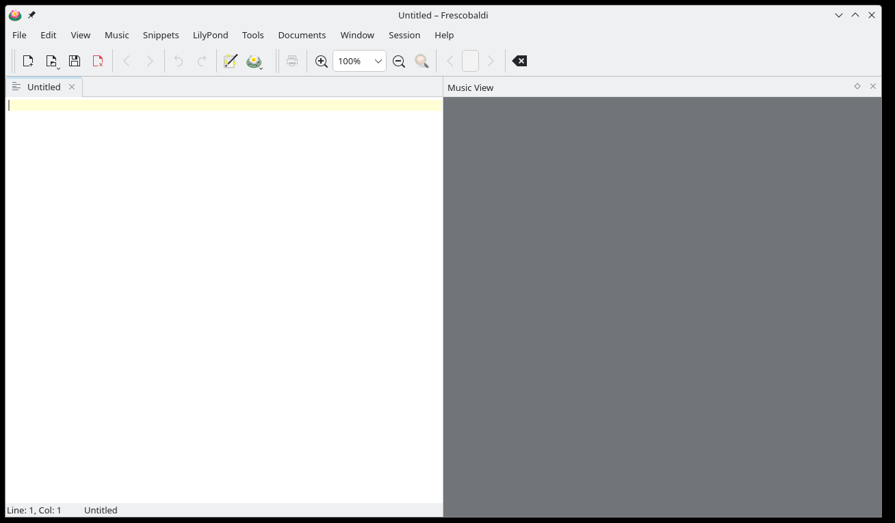
Now, verify that Frescobaldi has installed a version of LilyPond, and make note of the version number. Navigate to Frescobaldi preferences, and select „LilyPond Preferences“ on the left.
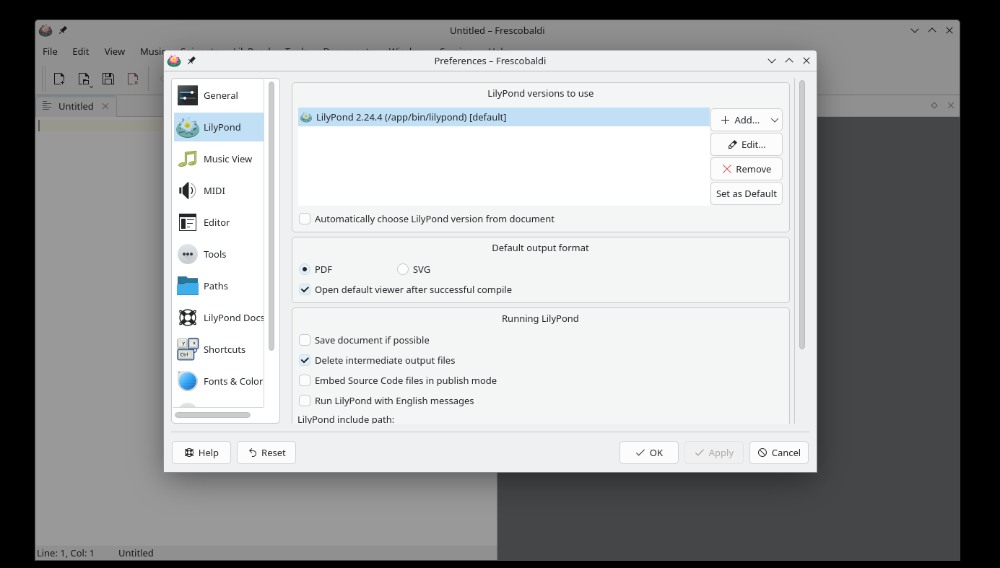
There will be at least one version of LilyPond already installed and ready for use. Make note of the version number for the next step. As new versions of LilyPond are released, simply return to this area, click on „Add“, then select the new version from the dropdown which appears. Fresobaldi then downloads and installs it for you.
To verify the installation, enter the following two lines in the left window, exactly as in this example. Be sure to use your version number.
\version "2.26.0"
{ c' }
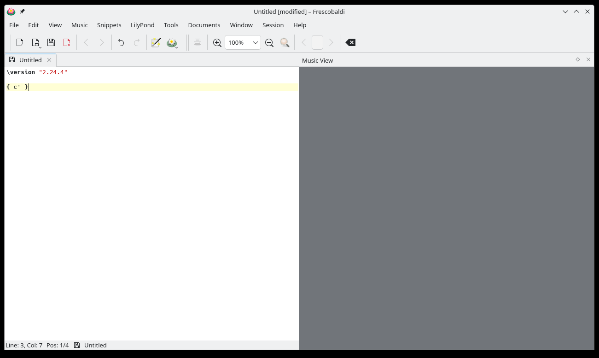
Now click on the LilyPond icon or use the Control-M keyboard shortcut. On the right, a simple score appears.
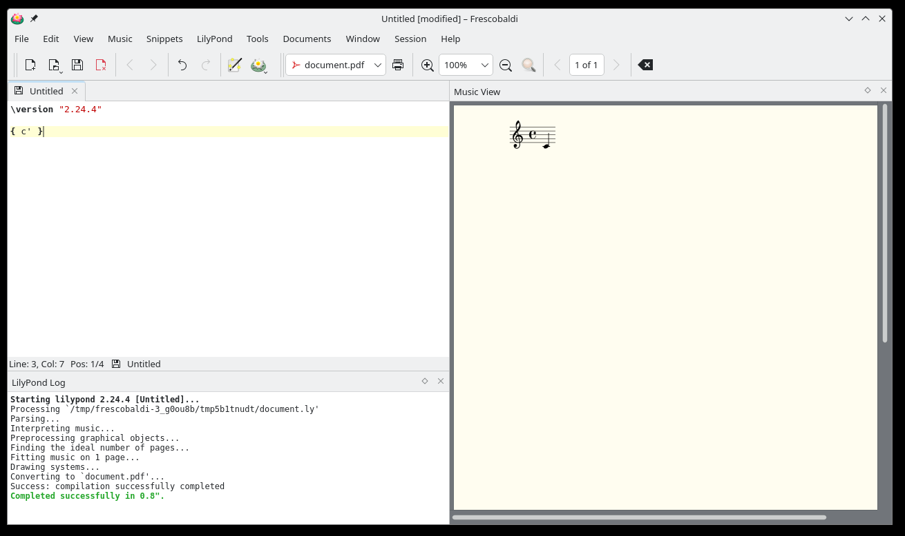
Congratulations, you have just created your first music sheet with LilyPond! If you’re satisfied now, you can skip the rest of this section.
Now turn to Tutorium to learn more about LilyPond’s syntax.
| [ << Installing ] | [Top][Contents][Index] | [ Tutorium >> ] |
| [ < Graphical setup ] | [ Up: Installing ] | [ Tutorium > ] |
1.2 Command line setup
On many GNU/Linux distributions, LilyPond can be installed from the package manager. This is also the case on macOS using either MacPorts or Homebrew.
In any case, you can install LilyPond by downloading the archive from Download and unpacking it. The binaries are usable immediately after unpacking. You can run
/.../lilypond-x.y.z/bin/lilypond file.ly
(on Windows, replace the slashes ‘/’ with backslashes ‘\’).
This compiles file.ly, and produces file.pdf.
To test your setup, you can use this minimal file:
\version "2.26.0"
{ c' }
This will produce this output in file.pdf:
![[image of music]](d1/lily-eec98191.png)
Now continue with the Tutorium to learn more about LilyPond’s syntax, or see Command-line usage for more information on calling LilyPond on the command line.
| [ << Installing ] | [Top][Contents][Index] | [ Übliche Notation >> ] |
| [ < Command line setup ] | [ Up: Top ] | [ Eine Quelldatei übersetzen > ] |
2 Tutorium
Dieses Kapitel stellt dem Leser das grundlegende Arbeiten mit LilyPond vor.
| 2.1 Eine Quelldatei übersetzen | ||
| 2.2 Wie werden Eingabe-Dateien geschrieben | ||
| 2.3 Fehlerbehandlung | ||
| 2.4 Wie die Handbücher gelesen werden sollten |
| [ << Tutorium ] | [Top][Contents][Index] | [ Übliche Notation >> ] |
| [ < Tutorium ] | [ Up: Tutorium ] | [ Wie werden Eingabe-Dateien geschrieben > ] |
2.1 Eine Quelldatei übersetzen
„Kompilation“ ist der Begriff, der benutzt wird, um eine LilyPond-Eingabedatei mit dem Programm LilyPond in eine Notenausgabe umzuwandeln. Ausgabedateien sind in erster Linie PDF-Dateien (zum Anschauen und Drucken), MIDI (zum Abspielen) und PNG (für die Benutzung auf Internetseiten). Die Eingabedateien von LilyPond sind einfache Textdateien.
Das erste Beispiel zeigt, wie solch eine einfache Eingabedatei ausschauen kann.
{
c' e' g' e'
}
Die graphische Ausgabe ist:
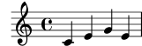
Achtung: In jeder LilyPond-Datei müssen { geschweifte Klammern } um die Noten oder Gesangstext gesetzt werden. Vor und hinter den Klammern sollten Leerzeichen eingegeben werden, damit keine Unklarheiten in Verbindung mit den eigentlichen Notensymbolen entstehen. An Anfang und Ende der Zeile können diese Leerzeichen auch weggelassen werden. Es kann sein, dass in diesem Handbuch die Klammern in manchen Beispielen fehlen, aber man sollte immer daran denken, sie in den eigenen Dateien zu benutzen! Mehr Informationen zu der Darstellung der Beispiele in diesem Handbuch gibt der Abschnitt Wie die Handbücher gelesen werden sollten.
Zusätzlich unterscheidet LilyPond Groß- und Kleinschreibung. ‘ { c d e }’ ist zulässiger Code, ‘ { C D E }’ dagegen resultiert in einer Fehlermeldung.
| [ << Tutorium ] | [Top][Contents][Index] | [ Übliche Notation >> ] |
| [ < Eine Quelldatei übersetzen ] | [ Up: Tutorium ] | [ Einfache Notation > ] |
2.2 Wie werden Eingabe-Dateien geschrieben
Dieser Abschnitt erklärt die grundlegende LilyPond-Syntax und hilft bei den ersten Anfängen, eine LilyPond-Eingabedatei zu schreiben.
| 2.2.1 Einfache Notation | ||
| 2.2.2 Arbeiten an Eingabe-Dateien |
| [ << Tutorium ] | [Top][Contents][Index] | [ Übliche Notation >> ] |
| [ < Wie werden Eingabe-Dateien geschrieben ] | [ Up: Wie werden Eingabe-Dateien geschrieben ] | [ Tonhöhen > ] |
2.2.1 Einfache Notation
LilyPond fügt einige Bestandteile des Notenbildes automatisch hinzu. Im nächsten Beispiel sind nur vier Tonhöhen angegeben, aber LilyPond setzt trotzdem einen Schlüssel, eine Taktangabe und Notendauern.
{ c' e' g' e' }
Diese Einstellungen können verändert werden, aber in den meisten Fällen sind die automatischen Werte durchaus brauchbar.
| Tonhöhen | ||
| Tondauern (Rhythmen) | ||
| Pausen | ||
| Taktartangabe | ||
| Tempobezeichnung | ||
| Notenschlüssel | ||
| Alles zusammen |
| [ << Tutorium ] | [Top][Contents][Index] | [ Übliche Notation >> ] |
| [ < Einfache Notation ] | [ Up: Einfache Notation ] | [ Tondauern (Rhythmen) > ] |
Tonhöhen
Glossar: pitch, interval, scale, middle C, octave, accidental.
In LilyPond werden Tonhöhen generell mit Kleinbuchstaben eingegeben. Notennamen in allen Beispielen in diesem Abschnitt nutzen das niederländische Namenssystem (weiße Klaviertasten sind c, d, e, f, g, a, b). LilyPond unterstützt auch viele weitere Namenssysteme wie ‚English‘ oder ‚Fixed-Do‘ (do, re, mi, …). Siehe Notenbezeichnungen in anderen Sprachen; dort wird auch beschrieben, wie sich deutsche Notennamen benutzen lassen (‘h’ statt ‘b’ und ‘b’ statt ‘bes’). Die Buchstaben ‘c’ bis ‘b’ bezeichnen Tonhöhen in der ‚Oktave‘ unterhalb des mittleren C. Das Anhängen von ‘'’ oder ‘,’ an die Noten markiert eine höhere oder niedrigere Oktave. Hier ist eine Tonleiter, beginnend auf dem mittleren C, gefolgt von einem Arpeggio:
{ c' d' e' f' g' a' b' c'' g c' e' g' c'' e'' g'' c''' }![[image of music]](e5/lily-15a76cf2.png)
Am einfachsten können Noten im \relative-Modus
eingegeben werden. In diesem Modus wird die Oktave der Note automatisch
gewählt, indem angenommen wird, dass die folgende Note immer so nah
wie möglich in Bezug auf die vorhergehende gesetzt wird, d. h. sie
wird höchstens drei Notenzeilen höher oder tiefer als die vorhergehende
Note gesetzt. Fangen
wir unser erstes Notationsbeispiel mit einer Tonleiter an, wo also
die nächste Note immer nur eine Notenlinie über der vorherigen steht.
\relative { c' d e f g a b c }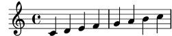
Die erste Note ist ein eingestrichenes C, notiert als
c'. Jede folgende Note befindet sich so nah wie möglich bei
der vorherigen – das erste ‘C’ ist also das nächste C vom
eingestrichenen C aus gerechnet. Darauf folgt das
nächstmögliche D in Bezug auf die vorhergehende Note. Mit diesen
Regeln können auch Melodien mit größeren Intervallen im relativen Modus
gebildet werden:
\relative { d' f a g c b f d }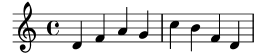
Die erste Note des vorherigen Beispiels – das d' mit einem
angehängten ' – ist das D in der Oktave beginnend beim
mittleren C bis hin zum darüber liegenden H.
Indem man Apostrophe ' (Taste Shift+#) oder Kommata ,
zur ersten Note hinzufügt (oder entfernt), kann die Oktave der ersten
Note verändert werden:
\relative { e'' c a c }![[image of music]](90/lily-fac32e18.png)
Der relative Modus kann zunächst verwirrend erscheinen, aber es ist die
einfachste Art, die meisten Melodien zu notieren. Schauen wir uns an,
wie diese relative Berechnung in der Praxis funktioniert. Wenn wir mit
einem H beginnen (b in der LilyPond-Syntax), welches sich
auf der mittleren Linie im Violinschlüssel befindet, können wir C, D
und E innerhalb von drei Notenzeilen aufwärts notieren, und A, G
und F innerhalb von drei Notenzeilen unter dem H. Wenn also die
Note, die auf das H folgt, ein C, D oder E ist, setzt
LilyPond es oberhalb des Hs, wenn es ein A, G oder F ist,
wird es darunter gesetzt.
\relative { b' c % c ist 1 Zeile aufwärts, also c über dem b b d % d ist 2 Zeilen aufwärts, oder 5 runter, also d über dem b b e % e ist 3 aufwärts oder 4 runter, also e über dem b b a % a ist 6 aufwärts oder 1 runter, also a unter dem b b g % g ist 5 aufwärts oder 2 runter, also g unter dem b b f % f ist 4 aufwärts oder 3 runter, also f unter dem b }![[image of music]](1c/lily-0c0a4cef.png)
Die gleiche Berechnung findet auch statt, wenn eine der Noten erhöht oder erniedrigt ist. Versetzungszeichen werden vollständig ignoriert bei der Berechnung. Genau die gleiche Berechnung wird analog von jeder folgenden Tonhöhe aus für die nächste Tonhöhe neu ausgeführt.
Um Intervalle zu notieren, die größer als drei Notenzeilen sind, kann man die Oktave verändern. Mit einem Apostroph ‘'’ (Taste Shift+#) direkt hinter dem Notennamen wird die Oktave um eins erhöht, mit einem Komma ‘,’ um eins erniedrigt.
\relative { a' a, c' f, g g'' a,, f' }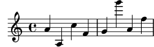
Um eine Tonhöhe um zwei (oder mehr!) Oktaven zu verändern,
werden mehrfache '' oder ,, benutzt – es muss
sich dabei wirklich um zwei einzelne Apostrophen und nicht um das
Anführungszeichen ‘"’ (Taste Shift+2) handeln!
| [ << Tutorium ] | [Top][Contents][Index] | [ Übliche Notation >> ] |
| [ < Tonhöhen ] | [ Up: Einfache Notation ] | [ Pausen > ] |
Tondauern (Rhythmen)
Glossar: beam, duration, whole note, half note, quarter note, dotted note.
Die Dauer einer Note wird durch eine Zahl bezeichnet, die direkt auf den Notennamen folgend eingegeben wird. ‘1’ für eine ganze Note, ‘2’ für eine halbe Note, ‘4’ für eine Viertelnote und so weiter. Notenhälse und Balken werden automatisch hinzugefügt.
Wenn keine Dauer bezeichnet wird, wird die der vorhergehenden Note verwendet. Für die erste Note ist eine Viertel als Standard definiert.
\relative { a'1 a2 a4 a8 a a16 a a a a32 a a a a64 a a a a a a a a2 }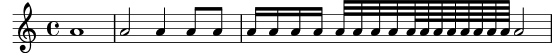
Um punktierte Noten zu erzeugen, wird einfach ein Punkt ‘.’ hinter die Notendauer geschrieben. Die Dauer einer punktierten Note muss explizit, also inklusive der Nummer, angegeben werden.
\relative { a'4 a a4. a8 a8. a16 a a8. a8 a4. }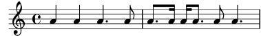
| [ << Tutorium ] | [Top][Contents][Index] | [ Übliche Notation >> ] |
| [ < Tondauern (Rhythmen) ] | [ Up: Einfache Notation ] | [ Taktartangabe > ] |
Pausen
Eine Pause wird genauso wie eine Noten eingegeben; ihre Bezeichnung ist ‘r’.
\relative { a'4 r r2 r8 a r4 r4. r8 }![[image of music]](d8/lily-bb7288ba.png)
| [ << Tutorium ] | [Top][Contents][Index] | [ Übliche Notation >> ] |
| [ < Pausen ] | [ Up: Einfache Notation ] | [ Tempobezeichnung > ] |
Taktartangabe
Glossar: time signature.
Die Taktart wird mit dem
\time-Befehl gesetzt:
\relative { \time 3/4 a'4 a a \time 6/8 a4. a \time 4/4 a4 a a a }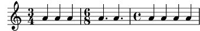
| [ << Tutorium ] | [Top][Contents][Index] | [ Übliche Notation >> ] |
| [ < Taktartangabe ] | [ Up: Einfache Notation ] | [ Notenschlüssel > ] |
Tempobezeichnung
Glossar: tempo indication, metronome.
Die Tempobezeichnung und die Metronom-Angabe werden
mit dem \tempo-Befehl gesetzt:
\relative { \time 3/4 \tempo "Andante" a'4 a a \time 6/8 \tempo 4. = 96 a4. a \time 4/4 \tempo "Presto" 4 = 120 a4 a a a }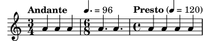
| [ << Tutorium ] | [Top][Contents][Index] | [ Übliche Notation >> ] |
| [ < Tempobezeichnung ] | [ Up: Einfache Notation ] | [ Alles zusammen > ] |
Notenschlüssel
Glossar: clef.
Der Notenschlüssel wird mit dem \clef-Befehl
gesetzt:
\relative { \clef treble c'1 \clef alto c1 \clef tenor c1 \clef bass c1 }![[image of music]](82/lily-9537b1c8.png)
| [ << Tutorium ] | [Top][Contents][Index] | [ Übliche Notation >> ] |
| [ < Notenschlüssel ] | [ Up: Einfache Notation ] | [ Arbeiten an Eingabe-Dateien > ] |
Alles zusammen
Hier ist ein kleines Beispiel, dass all diese Definitionen beinhaltet:
\relative { \clef bass \time 3/4 \tempo "Andante" 4 = 120 c,2 e8 c' g'2. f4 e d c4 c, r4 }![[image of music]](87/lily-875ef640.png)
Siehe auch
Notationsreferenz: Tonhöhen setzen, Rhythmen eingeben, Pausen eingeben, Taktangabe, Notenschlüssel.
| [ << Tutorium ] | [Top][Contents][Index] | [ Übliche Notation >> ] |
| [ < Alles zusammen ] | [ Up: Wie werden Eingabe-Dateien geschrieben ] | [ Fehlerbehandlung > ] |
2.2.2 Arbeiten an Eingabe-Dateien
LilyPonds Quelldateien ähneln Dateien in den meisten
Programmiersprachen: Sie enthalten eine Versionsbezeichnung,
es ist auf Groß- und Kleinschreibung
zu achten und Leerzeichen werden ignoriert. Ausdrücke werden
mit geschweiften Klammern { } eingeklammert und
mit dem Prozentzeichen ‘%’ auskommentiert
oder mit ‘%{ … %}’ umgeben.
Wenn das jetzt unverständlich erscheint, sind hier die Erklärungen:
- Versionsbezeichnung:
Jede LilyPond-Datei soll eine Versionsbezeichnung enthalten. Eine
Versionsbezeichnung ist eine Zeile, die die Version von LilyPond
deklariert, für die die Datei geschrieben wurde, wie in dem
Beispiel:
\version "2.26.0"
Üblicherweise wird die Versionsbezeichnung ganz oben in die Datei geschrieben.
Die Versionsbezeichnung ist aus zwei Gründen wichtig: 1. kann man mit ihrer Hilfe automatische Aktualisierungen der Eingabedateien vornehmen, wenn sich die LilyPond-Syntax ändern sollte. 2. wird hier die Version von LilyPond beschrieben, die nötig ist, um die Datei zu kompilieren.
Wenn die Versionsbezeichnung in einer Datei fehlt, gibt LilyPond eine Warnung während der Kompilation der Datei aus.
- Groß- und Kleinschreibung: Die Bedeutung eines Zeichens verändert sich, je nachdem, ob es groß (‘A’, ‘B’, ‘S’, ‘T’) oder klein (‘a’, ‘b’, ‘s’, ‘t’) geschrieben wird. Noten müssen immer klein geschrieben werden, ‘{ c d e }’ funktioniert, während ‘{ C D E }’ einen Fehler produziert.
- Leerzeichen:
Es spielt keine Rolle, wie viele Leerzeichen oder Tabulatoren oder
leere Zeilen sich zwischen den Zeichen der Quelldatei befinden.
{ c d e }bedeutet das Gleiche wie
{ c d e }oder
{ c4 d e }Natürlich ist das letzte Beispiel etwas schwer zu lesen. Eine gute Daumenregel ist es, Code-Blöcke mit zwei Leerzeichen einzurücken:
{ c4 d e }Leerzeichen sind jedoch nötig, um viele syntaktische Elemente voneinander zu trennen. Leerzeichen können also immer hinzugefügt werden, aber sie dürfen nicht entfernt werden. Da fehlende Leerzeichen sehr seltsame Fehlermeldungen hervorrufen können, wird es nahe gelegt, immer ein Leerzeichen vor und nach jedem syntaktischen Element, etwa vor und nach geschweiften Klammern, einzufügen.
- Ausdrücke:
Auch der kleinste Abschnitt an LilyPond-Code muss in
{ geschweifte Klammern } eingeschlossen werden. Diese
Klammern zeigen LilyPond an, dass es sich um einen zusammengehörenden
musikalischen Ausdruck handelt, genauso wie Klammern ‚()‘ in der Mathematik.
Die Klammern sollten von jeweils einem Leerzeichen umgeben sein, um
Zweideutigkeiten auszuschließen, es sei denn, sie
befinden sich am Anfang oder Ende einer Zeile.
Ein LilyPond-Befehl gefolgt von einem einfachen Ausdruck in Klammern (wie etwa ‚
\relative c' { … }‘) wird auch als ein einzelner Musikausdruck gewertet. - Kommentare:
Ein Kommentar ist eine Bemerkung für den menschlichen Leser
einer Quelldatei, es wird bei der Dateianalyse durch das Programm
ignoriert, so dass es also keine Auswirkung auf die Druckausgabe der
Noten hat. Es gibt zwei verschiedene Typen von Kommentaren. Das
Prozentzeichen ‘%’ geht einem Zeilen-Kommentar voraus: Alles
nach diesem Zeichen wird in dieser Zeile ignoriert.
Üblicherweise wird ein Kommentar über dem Code gesetzt,
auf den es sich bezieht.
a4 a a a % Dieser Kommentar bezieht sich auf die nächste Zeile mit den zwei Hs b2 b
Ein Block-Kommentar ist ein ganzer Abschnitt mit einem Kommentar. Alles, was von
%{und%}umgeben ist, wird ignoriert. Das heißt, dass sich ein Block-Kommentar nicht ein einem anderen Blockkommentar befinden kann. Wenn Sie das versuchen sollten, beendet schon das erste%}beide Block-Kommentare. Das folgende Beispiel zeigt eine mögliche Anwendung von Kommentaren.% Noten für twinkle twinkle hier c4 c g' g a a g2 %{ Diese Zeilen, und die Noten unten werden ignoriert, weil sie sich in einem Block-Kommentar befinden. f4 f e e d d c2 %}
| [ << Tutorium ] | [Top][Contents][Index] | [ Übliche Notation >> ] |
| [ < Arbeiten an Eingabe-Dateien ] | [ Up: Tutorium ] | [ Allgemeine Fehlerbehandlungstipps > ] |
2.3 Fehlerbehandlung
Manchmal erstellt LilyPond nicht das Notenbild, das Sie erwarten. Dieser Abschnitt stellt einige Links zur Verfügung, um Ihnen bei der Problemlösung möglicher Schwierigkeiten zu helfen.
| 2.3.1 Allgemeine Fehlerbehandlungstipps | ||
| 2.3.2 Einige häufige Fehler |
| [ << Tutorium ] | [Top][Contents][Index] | [ Übliche Notation >> ] |
| [ < Fehlerbehandlung ] | [ Up: Fehlerbehandlung ] | [ Einige häufige Fehler > ] |
2.3.1 Allgemeine Fehlerbehandlungstipps
Fehlerbehandlung für LilyPond-Probleme kann eine große Herausforderung für Menschen darstellen, die an eine graphische Benutzeroberfläche gewohnt sind, weil ungültige Eingabedateien erstellt werden können. Wenn das geschieht, ist eine logische Herangehensweise der beste Weg, das Problem zu identifizieren und zu Lösen. Einige Richtlinien, wie Sie diese Problemlösung erlernen können, finden sich in Fehlersuche.
| [ << Tutorium ] | [Top][Contents][Index] | [ Übliche Notation >> ] |
| [ < Allgemeine Fehlerbehandlungstipps ] | [ Up: Fehlerbehandlung ] | [ Wie die Handbücher gelesen werden sollten > ] |
2.3.2 Einige häufige Fehler
Es gibt einige übliche Fehler, die schwierig zu lösen sind, wenn man nur die Fehlermeldungen der Log-Datei hat. Sie werden näher erklärt in Häufige Fehlermeldungen.
| [ << Tutorium ] | [Top][Contents][Index] | [ Übliche Notation >> ] |
| [ < Einige häufige Fehler ] | [ Up: Tutorium ] | [ Ausgelassenes Material > ] |
2.4 Wie die Handbücher gelesen werden sollten
Dieser Abschnitt erklärt, wie die Dokumentation effizient gelesen werden kann und behandelt auch einige nützliche Interaktionseigenschaften der Online-Version.
| 2.4.1 Ausgelassenes Material | ||
| 2.4.2 Anklickbare Beispiele | ||
| 2.4.3 Überblick über die Handbücher |
| [ << Tutorium ] | [Top][Contents][Index] | [ Übliche Notation >> ] |
| [ < Wie die Handbücher gelesen werden sollten ] | [ Up: Wie die Handbücher gelesen werden sollten ] | [ Anklickbare Beispiele > ] |
2.4.1 Ausgelassenes Material
LilyPond-Code muss immer von { } Zeichen oder einem
‚\relative { … }‘ umgeben sein, wie
in Arbeiten an Eingabe-Dateien gezeigt.
Im Rest dieses Handbuchs werden die meisten Beispiel allerdings darauf
verzichten. Um sie zu reproduzieren, können Sie den entsprechenden
Quellcode kopieren und in eine Textdatei zwischen ‘{’
und ‘}’ einfügen.
{
…hier das Beispiel…
}
Denken Sie auch daran, dass jede LilyPond-Datei eine Versionsbezeichnung
mit dem \version-Befehl haben sollte. Weil die Beispiele in den
Handbüchern Schnipsel und keine vollständigen Dateien sind, fehlt hier
die Versionsbezeichnung. Sie sollten sie aber immer in Ihre eigenen
Dateien einfügen.
| [ << Tutorium ] | [Top][Contents][Index] | [ Übliche Notation >> ] |
| [ < Ausgelassenes Material ] | [ Up: Wie die Handbücher gelesen werden sollten ] | [ Überblick über die Handbücher > ] |
2.4.2 Anklickbare Beispiele
Achtung: Diese Eigenschaft gibt es nur in der HTML-Dokumentation.
Viele Leute lernen Programme, indem sie einfach herumprobieren. Das geht auch mit LilyPond. Wenn Sie in der HTML-Version dieses Handbuchs eine Abbildung in der HTML-Version dieses Handbuches anklicken, erhalten sie exakt den LilyPond-Code, der zum Satz der Abbildung benutzt wurde. Versuchen Sie es mit dieser Abbildung:
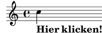
Wenn Sie einfach alles kopieren, was im „ly snippet“-Abschnitt steht, und in eine Text-Datei einfügen, haben Sie schon eine fertige Vorlage für weitere Experimente. Damit Sie genau das gleiche Erscheinungsbild wie bei dem Beispiel selber erreichen, müssen Sie alles kopieren ab der Zeile „Start cut-&-pastable section“ bis ganz zum Ende der Datei.
| [ << Tutorium ] | [Top][Contents][Index] | [ Übliche Notation >> ] |
| [ < Anklickbare Beispiele ] | [ Up: Wie die Handbücher gelesen werden sollten ] | [ Übliche Notation > ] |
2.4.3 Überblick über die Handbücher
Es gibt sehr viele Dokumentation für LilyPond. Neue Benutzer sind oft verwirrt, welche Teile davon sie lesen sollen, und so kommt es vor, dass manchmal wichtige Abschnitte nicht gelesen werden.
Achtung: Bitte überspringen Sie keine wichtigen Teile der Dokumentation. Sonst wird es Ihnen später sehr viel schwerer fallen, spätere Abschnitte zu verstehen.
- Bevor Sie irgendetwas ausprobieren: Lesen Sie die Abschnitte Tutorium und Übliche Notation in diesem Handbuch. Wenn Sie auf musikalische Fachbegriffen stoßen, die Sie nicht kennen, schauen Sie diese im Glossar nach.
- Bevor Sie ein vollständiges Stück notieren: Lesen Sie den Abschnitt Grundbegriffe in diesem Handbuch. Danach können Sie sich die für Ihr Projekt wichtigen Abschnitte in der Notationsreferenz anschauen.
- Bevor Sie versuchen, die Standardnotation zu verändern: Lesen Sie Die Ausgabe verbessern in diesem Handbuch.
- Bevor Sie sich an ein größeres Projekt machen: Lesen Sie den Abschnitt Vorschläge zum Schreiben von LilyPond-Eingabe-Dateien in der Programmbenutzung.
| [ << Tutorium ] | [Top][Contents][Index] | [ Grundbegriffe >> ] |
| [ < Überblick über die Handbücher ] | [ Up: Top ] | [ Notation auf einem System > ] |
3 Übliche Notation
Dieser Abschnitt erklärt, wie wunderschöner Notensatz erstellt werden kann, der die am häufigsten vorkommenden Notationssymbole enthält. Der Abschnitt baut auf dem Tutorium auf.
| 3.1 Notation auf einem System | ||
| 3.2 Mehrere Noten auf einmal | ||
| 3.3 Lieder | ||
| 3.4 Letzter Schliff |
| [ << Übliche Notation ] | [Top][Contents][Index] | [ Grundbegriffe >> ] |
| [ < Übliche Notation ] | [ Up: Übliche Notation ] | [ Taktstriche und Taktüberprüfung > ] |
3.1 Notation auf einem System
Dieses Kapitel lehrt grundlegende Bestandteile der Notation, die für eine Stimme auf einem System gebraucht werden.
| [ << Übliche Notation ] | [Top][Contents][Index] | [ Grundbegriffe >> ] |
| [ < Notation auf einem System ] | [ Up: Notation auf einem System ] | [ Taktstriche > ] |
3.1.1 Taktstriche und Taktüberprüfung
| Taktstriche | ||
| Taktüberprüfungen |
| [ << Übliche Notation ] | [Top][Contents][Index] | [ Grundbegriffe >> ] |
| [ < Taktstriche und Taktüberprüfung ] | [ Up: Taktstriche und Taktüberprüfung ] | [ Taktüberprüfungen > ] |
Taktstriche
Normale (einfache) Taktstriche werden von LilyPond automatisch eingefügt und
müssen daher nicht extra angegeben werden. Andere Arten von Taktstrichen können
mittels \bar eingeben werden, z.B. \bar "||" für einen doppelten Taktstrich,
oder \bar "|." für einen Schlusstaktstrich. Eine vollständige Liste aller
möglichen Taktstriche findet sich unter Taktstriche.
\relative { g'1 e1 \bar "||" c2. c'4 \bar "|." }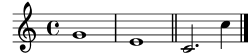
| [ << Übliche Notation ] | [Top][Contents][Index] | [ Grundbegriffe >> ] |
| [ < Taktstriche ] | [ Up: Taktstriche und Taktüberprüfung ] | [ Tonhöhen und Tonartbezeichnungen (Vorzeichen) > ] |
Taktüberprüfungen
Wenn sie auch nicht zwingend vorgeschrieben sind, so sollten Taktüberprüfungen in der Eingabedatei benutzt werden, um zu zeigen, wo Taktstriche normalerweise sein sollten. Sie werden mit dem „Pipe“-Symbol notiert, ‘|’ (Taste AltGr + <). Mithilfe der Taktüberprüfungen kann das Programm sicherstellen, dass die eingegebenen Notenlängen jeweils volle Takte ergeben. Taktüberprüfungen erleichtern auch das Lesen des Eingabetextes, weil sie Ordnung in den Text bringen.
\relative { g'1 | e1 | c2. c' | g4 c g e | c4 r r2 | }![[image of music]](bc/lily-2eccc51c.png)
Wenn du den Code in obigem Beispiel übersetzt, dann sollte in der Konsole die folgende Warnung erscheinen:
Warnung: Taktüberprüfung gescheitert bei: 1/2
g'1 | e1 | c2. c'
| g4 c g e | c4 r r2 |
In diesem einfachen Beispiel ist die fehlende Längenangabe offensichtlich deutlich im erzeugten Notenbild zu erkennen, aber die Konsolenausgabe ist ein noch direkter Hinweis auf das fehlende ‘4’ in Takt 3.
Siehe auch
Notationsreferenz: Takt- und Taktzahlüberprüfung.
| [ << Übliche Notation ] | [Top][Contents][Index] | [ Grundbegriffe >> ] |
| [ < Taktüberprüfungen ] | [ Up: Notation auf einem System ] | [ Tonhöhenveränderungen > ] |
3.1.2 Tonhöhen und Tonartbezeichnungen (Vorzeichen)
Achtung: Neue Anwender missverstehen meist, wie LilyPond Tonartbezeichnungen verwendet – bitte lesen sie die entsprechende Warnung am Ende dieses Abschnitts.
| Tonhöhenveränderungen | ||
| Tonartbezeichnungen (Vorzeichen) | ||
| Warnung bzgl. Tonartbezeichnungen und Tonhöhen |
Tonhöhenveränderungen
Glossar: sharp, flat, double sharp, double flat, accidental.
Notennamen bezeichnen in LilyPond Tonhöhen. So bedeutet beispielsweise ‘c’ immer ein C ohne jedes Vorzeichen, unabhängig von der gerade eingestellten Tonart.
In vielen Sprachen besteht ein Notenname aus einem Grundnamen, der auf einen diatonischen Schritt der C-Dur/A-Moll Tonleitern verweist (zum Beispiel ‘d’) und einem Zusatz, der die Alteration dieser Tonhöhe angibt. Die Standardsprache zur Eingabe ist ‚nederlands‘ (niederländisch). Ein Kreuz-Versetzungszeichen1 wird eingegeben, indem an den Notennamen ein ‘is’ gehängt wird, ein B-Versetzungszeichen durch Anhängen von ‘es’. Logischerweise wird dann ein Doppelkreuz oder Doppel-B durch Anhängen von ‘isis’ oder ‘eses’ geschrieben. Diese Syntax stammt aus der Tradition der germanischen Sprachen und ist also für deutsche Benutzer kein Problem. Es ist aber möglich, die Namen für die Versetzungszeichen in anderen Sprachen zu benutzen, siehe Notenbezeichnungen in anderen Sprachen.
\relative { cis''4 ees fisis, aeses }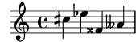
| [ << Übliche Notation ] | [Top][Contents][Index] | [ Grundbegriffe >> ] |
| [ < Tonhöhenveränderungen ] | [ Up: Tonhöhen und Tonartbezeichnungen (Vorzeichen) ] | [ Warnung bzgl. Tonartbezeichnungen und Tonhöhen > ] |
Tonartbezeichnungen (Vorzeichen)
Glossar: key signature, major, minor.
Die Tonart eines Stückes wird mit dem Befehl
\key, gefolgt von einer Notenbezeichnung und
\major (für Dur) oder \minor (für Moll) eingestellt.
\relative { \key d \major d'4 fis a c | \bar "||" \key c \minor c,4 ees g b | }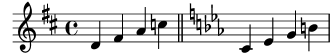
| [ << Übliche Notation ] | [Top][Contents][Index] | [ Grundbegriffe >> ] |
| [ < Tonartbezeichnungen (Vorzeichen) ] | [ Up: Tonhöhen und Tonartbezeichnungen (Vorzeichen) ] | [ Bindebögen und Legatobögen > ] |
Warnung bzgl. Tonartbezeichnungen und Tonhöhen
Glossar: accidental, key signature, pitch, flat, natural, sharp, transposition, Pitch names.
LilyPond unterscheidet zwischen dem musikalischen Inhalt und dem Satz (Layout). Eine Eingabe wie ‘d4 e fis2’ bestimmt die Tonhöhen und Dauer von Noten, also den musikalischen Inhalt.. Die Tonart ist dagegen Teil der gedruckten Darstellung. Die Tonart bestimmt die Regeln, nach denen die Noten ausgedruckt werden. LilyPond vergleicht jede eingegebene Tonhöhe mit der Tonart und entscheidet dann ob und ggf. welches Versetzungszeichen gedruckt werden muss.
Der Befehl \key stellt die Tonart ein. Diese
beeinflusst die gedruckte Darstellung der Noten, bewirkt jedoch
keine Änderung der Tonhöhen von eingegebenen Noten wie etwa ‘c’.
In diesem Beispiel
\relative { \key d \major cis''4 d e fis }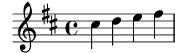
hat keine der Noten ein Versetzungszeichen, trotzdem muss im Quelltext das ‘is’ für ‘cis’ und ‘fis’ notiert werden.
Der Code ‘b’ (nach der holländischen Notenbezeichnung wird der Ton H mit ‘b’ gesetzt) heißt also nicht: „Zeichne einen dicken schwarzen Punkt auf die Mittellinie des Systems“. Im Gegenteil, er heißt vielmehr: „Hier soll eine Note mit der Tonhöhe H gesetzt werden“. In der Tonart As-Dur bekommt sie ein Versetzungszeichen:
\relative { \key aes \major aes'4 c b c }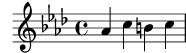
Um es anders auszudrücken: Jedes Mal, wenn Sie eine Tonhöhe eingeben, die auf dem Klavier zu einer schwarzen Taste gehört, müssen Sie auch ‘-is’ oder ‘-es’ an die Note anhängen.
Alle diese Versetzungszeichen ausdrücklich zu schreiben, bedeutet vielleicht etwas mehr Schreibarbeit, hat aber den großen Vorteil, dass Transpositionen sehr viel einfacher sind und der Ausdruck von Versetzungszeichen nach unterschiedlichen Regeln erfolgen kann. Siehe Automatische Versetzungszeichen für einige Beispiele, wie Vorzeichen anhand von unterschiedlichen Regeln ausgegeben werden können.
Siehe auch
Notationsreferenz: Notenbezeichnungen in anderen Sprachen, Versetzungszeichen, Automatische Versetzungszeichen, Tonartbezeichnung.
| [ << Übliche Notation ] | [Top][Contents][Index] | [ Grundbegriffe >> ] |
| [ < Warnung bzgl. Tonartbezeichnungen und Tonhöhen ] | [ Up: Notation auf einem System ] | [ Bindebögen > ] |
3.1.3 Bindebögen und Legatobögen
| Bindebögen | ||
| Legatobögen | ||
| Phrasierungsbögen | ||
| Achtung Bindebögen sind nicht Legatobögen |
| [ << Übliche Notation ] | [Top][Contents][Index] | [ Grundbegriffe >> ] |
| [ < Bindebögen und Legatobögen ] | [ Up: Bindebögen und Legatobögen ] | [ Legatobögen > ] |
Bindebögen
Glossar: tie.
Man schreibt einen Bindebogen, indem man eine Tilde ‘~’ an die erste der beiden zu verbindenden Noten hängt.
\relative { g'4~ g c2~ | c4~ c8 a~ a2 | }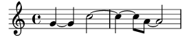
Wenn sich die Tonhöhe nicht ändert, was bei Noten, die mit Bindebögen verbunden sind immer der Fall ist, kann für die folgenden Noten auf die Angabe der Tonhöhe verzichtet werden. Es braucht lediglich die bloße Dauer angegeben zu werden:
\relative { g'4~ 4 c2~ | 4~ 8 a~ 2 | }![[image of music]](bb/lily-1c638c8f.png)
Diese verkürzte Schreibweise ist immer dann nützlich, wenn sich zwar der Rhythmus, nicht jedoch die Tonhöhe ändert. Man sollte jedoch beachten, dass eine bloße Tonhöhe gefolgt von einem Leerzeichen und dann einer bloßen Dauer als eine einzige Note interpretiert wird. Mit anderen Worten, ‘c4 a 8 8’ würde als ‘c4 a8 a8’ und nicht als ‘c4 a4 a8 a8’ verstanden werden. Schreiben sie stattdessen ‘c4 a4 8 8 ’.
| [ << Übliche Notation ] | [Top][Contents][Index] | [ Grundbegriffe >> ] |
| [ < Bindebögen ] | [ Up: Bindebögen und Legatobögen ] | [ Phrasierungsbögen > ] |
Legatobögen
Glossar: slur.
Ein Legatobogen ist ein Bogen, der sich über mehrere Noten erstreckt. Seine Beginn- und Endnote werden mit einem angehängten ‘(’ beziehungsweise ‘)’ markiert. Es ist zu beachten, dass ‘(’ nach der ersten Noten des Bogens kommt.
\relative { d''4( c16) cis( d e c cis d) e( d4) }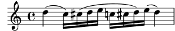
| [ << Übliche Notation ] | [Top][Contents][Index] | [ Grundbegriffe >> ] |
| [ < Legatobögen ] | [ Up: Bindebögen und Legatobögen ] | [ Achtung Bindebögen sind nicht Legatobögen > ] |
Phrasierungsbögen
Bögen, die längere Phrasierungseinheiten markieren
(Phrasierungsbögen), werden mit \( und
\) eingegeben. Es können sowohl Legato- als auch
Phrasierungsbögen gleichzeitig vorkommen.
\relative { g'4\( g8( a) b( c) b4\) }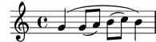
| [ << Übliche Notation ] | [Top][Contents][Index] | [ Grundbegriffe >> ] |
| [ < Phrasierungsbögen ] | [ Up: Bindebögen und Legatobögen ] | [ Artikulationszeichen und Lautstärke > ] |
Achtung Bindebögen sind nicht Legatobögen
Glossar: articulation, slur, tie.
Ein Legatobogen sieht aus wie ein tie, hat aber eine andere Bedeutung. Ein Bindebogen verlängert nur die vorhergehende Note und kann also nur bei zwei Noten gleicher Tonhöhe benutzt werden. Legatobögen dagegen zeigen die Artikulation von Noten an und können für größere Notengruppen gesetzt werden. Binde- und Legatobögen können geschachtelt werden.
\relative { c''4(~ c8 d~ 4 e) }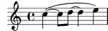
Siehe auch
Notationsreferenz: Bindebögen, Legatobögen, Phrasierungsbögen.
| [ << Übliche Notation ] | [Top][Contents][Index] | [ Grundbegriffe >> ] |
| [ < Achtung Bindebögen sind nicht Legatobögen ] | [ Up: Notation auf einem System ] | [ Artikulationszeichen > ] |
3.1.4 Artikulationszeichen und Lautstärke
Artikulationszeichen und Lautstärke werden durch spezielle Zeichen nach den Noten angezeigt, auf die sie sich beziehen.
| Artikulationszeichen | ||
| Fingersätze | ||
| Dynamik |
| [ << Übliche Notation ] | [Top][Contents][Index] | [ Grundbegriffe >> ] |
| [ < Artikulationszeichen und Lautstärke ] | [ Up: Artikulationszeichen und Lautstärke ] | [ Fingersätze > ] |
Artikulationszeichen
Glossar: articulation.
Übliche Artikulationszeichen können durch Anfügen von Minus (‘-’) und einem entsprechenden Zeichen eingegeben werden:
\relative { c''4-^ c-+ c-- c-! c4-> c-. c2-_ }![[image of music]](4f/lily-8dee54b0.png)
| [ << Übliche Notation ] | [Top][Contents][Index] | [ Grundbegriffe >> ] |
| [ < Artikulationszeichen ] | [ Up: Artikulationszeichen und Lautstärke ] | [ Dynamik > ] |
Fingersätze
Glossar: fingering.
Auf gleiche Weise können Fingersatzbezeichnungen hinzugefügt werden, indem nach dem Minus (‘-’) eine Zahl geschrieben wird:
\relative { c''4-3 e-5 b-2 a-1 }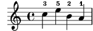
Artikulationszeichen und Fingersätze werden normalerweise automatisch platziert, aber man kann ihre Position auch vorgeben durch die Zeichen ‘^’ (oben) oder ‘_’ (unten) anstelle des Minuszeichen. An eine Note können auch mehrfache Artikulationszeichen gehängt werden. Meistens findet aber LilyPond alleine die beste Möglichkeit, wie die Artikulationen platziert werden sollen.
\relative { c''4_-^1 d^. f^4_2-> e^-_+ }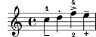
| [ << Übliche Notation ] | [Top][Contents][Index] | [ Grundbegriffe >> ] |
| [ < Fingersätze ] | [ Up: Artikulationszeichen und Lautstärke ] | [ Text hinzufügen > ] |
Dynamik
Glossar: dynamics, crescendo, decrescendo.
Die Dynamik innerhalb eines Stückes wird eingegeben, indem man die Markierungen (mit einem Backslash) an die Note hängt:
\relative { c''2\ff c\mf c\p c\pp }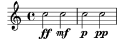
Crescendi und Decrescendi werden mit dem
Befehl \<
beziehungsweise \> begonnen. Das nächste absolute
Dynamik-Zeichen, etwa \f, beendet das (De)Crescendo.
Mit dem Befehl \! kann es explizit beendet werden.
\relative { c''2\< c\ff\> c c\! }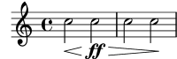
Siehe auch
Notationsreferenz: Artikulationszeichen und Verzierungen, Fingersatzanweisungen, Dynamik.
| [ << Übliche Notation ] | [Top][Contents][Index] | [ Grundbegriffe >> ] |
| [ < Dynamik ] | [ Up: Notation auf einem System ] | [ Automatische und manuelle Balken > ] |
3.1.5 Text hinzufügen
Text können Sie auf folgende Art in die Partitur einfügen:
\relative { c''2^"espr" a_"legato" }![[image of music]](64/lily-db1c7358.png)
Zusätzliche Formatierung kann eingesetzt werden, wenn Sie den
\markup-Befehl benutzen:
\relative { c''2^\markup { \bold espr } a2_\markup { \dynamic f \italic \small { 2nd } \hspace #0.1 \dynamic p } }![[image of music]](fc/lily-9dde54d6.png)
Siehe auch
Notationsreferenz: Text eingeben.
| [ << Übliche Notation ] | [Top][Contents][Index] | [ Grundbegriffe >> ] |
| [ < Text hinzufügen ] | [ Up: Notation auf einem System ] | [ Zusätzliche rhythmische Befehle > ] |
3.1.6 Automatische und manuelle Balken
Alle Balken werden automatisch gesetzt:
\relative { a'8 ais d ees r d c16 b a8 }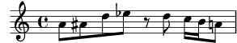
Wenn diese automatisch gesetzten Balken nicht gewollt sind, können sie manuell geändert werden. Wenn nur ein Balken hier und da korrigiert werde muss, erhält die Note, an der der Balken anfängt, ein ‘[’ (AltGr+8) und die, an der er enden soll, ein ‘]’ (AltGr+9). Es ist zu beachten, dass ‘[’ nach der ersten Note mit Balken kommt.
\relative { a'8[ ais] d[ ees r d] c16 b a8 }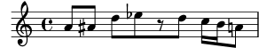
Wenn Sie die automatischen Balken vollständig oder für
einen längeren Abschnitt ausschalten wollen, benutzen Sie
den Befehl \autoBeamOff, um die Balken abzuschalten,
und \autoBeamOn, um sie wieder einzuschalten.
\relative { \autoBeamOff a'8 c b4 d8. c16 b4 | \autoBeamOn a8 c b4 d8. c16 b4 | }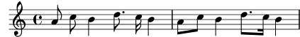
Siehe auch
Notationsreferenz: Automatische Balken, Manuelle Balken.
| [ << Übliche Notation ] | [Top][Contents][Index] | [ Grundbegriffe >> ] |
| [ < Automatische und manuelle Balken ] | [ Up: Notation auf einem System ] | [ Auftakt > ] |
3.1.7 Zusätzliche rhythmische Befehle
| Auftakt | ||
| N-tolen | ||
| Verzierungen |
| [ << Übliche Notation ] | [Top][Contents][Index] | [ Grundbegriffe >> ] |
| [ < Zusätzliche rhythmische Befehle ] | [ Up: Zusätzliche rhythmische Befehle ] | [ N-tolen > ] |
Auftakt
Ein Auftakt wird mit dem Befehl ‘\partial’ eingegeben. Darauf folgt die Länge des Auftaktes: ‘\partial 4’ heißt eine Viertelnote Auftakt und ‘\partial 8’ eine Achtelnote.
\relative { \partial 8 f''8 | c2 d | }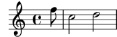
| [ << Übliche Notation ] | [Top][Contents][Index] | [ Grundbegriffe >> ] |
| [ < Auftakt ] | [ Up: Zusätzliche rhythmische Befehle ] | [ Verzierungen > ] |
N-tolen
Glossar: note value, triplet.
Triolen und N-tolen werden mit dem
\tuplet-Befehl erzeugt. Er braucht zwei Argumente:
einen Bruch und die Noten, auf die er sich bezieht.
Der Bruch ist die Anzahl der N-tolen Noten geteilt durch die Anzahl
der Noten, die normalerweise in der gleichen Zeit erklingen würden.
Für eine Triole wären das drei Noten statt zwei, also bekommen
Triolen den Bruch 3/2:
\relative { \tuplet 3/2 { f''8 g a } \tuplet 3/2 { c8 r c } \tuplet 3/2 { f,8 g16[ a g a] } \tuplet 3/2 { d4 a8 } }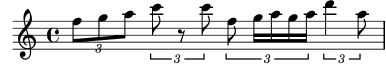
| [ << Übliche Notation ] | [Top][Contents][Index] | [ Grundbegriffe >> ] |
| [ < N-tolen ] | [ Up: Zusätzliche rhythmische Befehle ] | [ Mehrere Noten auf einmal > ] |
Verzierungen
Glossar: grace notes, acciaccatura, appoggiatura.
Verzierungen werden mit dem Befehl \grace
eingegeben, Vorhalte durch den Befehl \appoggiatura
und Vorschläge mit \acciaccatura.
\relative { c''2 \grace { a32 b } c2 | c2 \appoggiatura b16 c2 | c2 \acciaccatura b16 c2 | }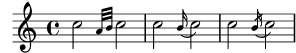
Siehe auch
Notationsreferenz: Verzierungen, Andere rhythmische Aufteilungen, Auftakte.
| [ << Übliche Notation ] | [Top][Contents][Index] | [ Grundbegriffe >> ] |
| [ < Verzierungen ] | [ Up: Übliche Notation ] | [ Musikalische Ausdrücke erklärt > ] |
3.2 Mehrere Noten auf einmal
In diesem Kapitel wird gezeigt, wie mehr als eine Note zur gleichen Zeit gesetzt werden kann: auf unterschiedlichen Systemen für verschiedene Instrumente oder für ein Instrument (z. B. Klavier) und in Akkorden.
Polyphonie nennt man in der Musik das Vorkommen von mehr als einer Stimme in einem Stück. Polyphonie bzw. Mehrstimmigkeit heißt für LilyPond allerdings das Vorkommen von mehr als einer Stimme pro System.
| 3.2.1 Musikalische Ausdrücke erklärt | ||
| 3.2.2 Mehrere Notensysteme | ||
| 3.2.3 Notensysteme gruppieren | ||
| 3.2.4 Noten zu Akkorden verbinden | ||
| 3.2.5 Mehrstimmigkeit in einem System |
| [ << Übliche Notation ] | [Top][Contents][Index] | [ Grundbegriffe >> ] |
| [ < Mehrere Noten auf einmal ] | [ Up: Mehrere Noten auf einmal ] | [ Analogie mathematische Ausdrücke > ] |
3.2.1 Musikalische Ausdrücke erklärt
In LilyPond-Quelldateien wird Musik durch musikalische Ausdrücke dargestellt. Eine einzelne Note ist ein musikalischer Ausdruck.
a'4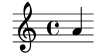
Musik innerhalb von Klammern bildet einen neuen Ausdruck. Dieser ist nun ein zusammengesetzter musikalischer Ausdruck. Hier wurde solch ein zusammengesetzter musikalischer Ausdruck mit zwei Noten erstellt:
\relative { a'4 g4 }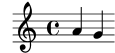
Wenn eine Gruppe von musikalischen Ausdrücken (also beispielsweise Noten) in geschweifte Klammern gesetzt wird, bedeutet das, dass eine Gruppe nach der anderen gesetzt wird. Das Resultat ist ein neuer musikalischer Ausdruck.
\relative { { a'4 g } f4 g }![[image of music]](be/lily-fee0e1b2.png)
| Analogie mathematische Ausdrücke | ||
| Gleichzeitige musikalische Ausdrücke mehrere Notensysteme | ||
| Gleichzeitige musikalische Ausdrücke ein Notensystem |
Analogie mathematische Ausdrücke
Die Anordnung von Ausrücken funktioniert ähnlich wie mathematische Formeln. Eine längere Formel entsteht durch die Kombination kleinerer Formeln. Solche Formeln werden auch Ausdruck genannt und ihre Definition ist rekursiv, sodass beliebig komplexe und lange Ausdrücke erstellt werden können. So etwa hier:
1 1 + 2 (1 + 2) * 3 ((1 + 2) * 3) / (4 * 5)
Das ist eine Folge von (mathematischen) Ausdrücken, in denen jeder Ausdruck in dem folgenden (größeren) enthalten ist. Die einfachsten Ausdrücke sind Zahlen, und größere werden durch die Kombination von Ausdrücken mit Hilfe von Operatoren (wie +, * und /) sowie Klammern. Genauso wie mathematische Ausdrücke können auch musikalische Ausdrücke beliebig tief verschachtelt werden. Das wird benötigt für komplexe Musik mit vielen Stimmen.
Gleichzeitige musikalische Ausdrücke mehrere Notensysteme
Glossar: polyphony.
Mit dieser Technik kann polyphone Musik gesetzt werden.
Musikalische
Ausdrücke werden einfach parallel kombiniert, damit sie gleichzeitig
als eigene Stimmen in dem gleichen Notensystem gesetzt werden. Um
anzuzeigen, dass an dieser Stelle gleichzeitige Noten gesetzt werden,
muss nur ein Kombinationszeichen eingefügt werden. Parallel werden
musikalische Ausdrücke kombiniert, indem man sie mit << und
>> einrahmt. Im folgenden Beispiel sind drei Ausdrücke
(jeder mit zwei Noten) parallel kombiniert:
<< \relative { a'2 g } \relative { f'2 e } \relative { d'2 b } >>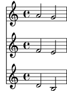
Es ist noch zu bemerken, dass wir hier für jede Ebene innerhalb der Quelldatei eine andere Einrückung geschrieben haben. Für LilyPond spielt es keine Rolle, wie viele Leerzeichen am Anfang einer Zeile sind, aber für Menschen ist es eine große Hilfe, sofort zu sehen, welche Teile des Quelltextes zusammen gehören.
Achtung: Jede Note ist relativ zu der vorhergehenden in der Datei;
die erste Note in einem \relative Block ist relativ zu
‘c’ (eine Oktave unter dem eingestrichenen C).
| [ << Übliche Notation ] | [Top][Contents][Index] | [ Grundbegriffe >> ] |
| [ < Gleichzeitige musikalische Ausdrücke mehrere Notensysteme ] | [ Up: Musikalische Ausdrücke erklärt ] | [ Mehrere Notensysteme > ] |
Gleichzeitige musikalische Ausdrücke ein Notensystem
Um die Anzahl der Notensysteme zu bestimmen, analysiert LilyPond den Anfang des ersten Ausdrucks. Wenn sich hier eine einzelne Note befindet, wird nur ein System gesetzt, wenn es sich um eine parallele Anordnung von Ausdrücken handelt, wird mehr als ein System gesetzt. Das folgende Beispiel beginnt mit einer Note:
\relative { c''2 <<c e>> | << { e2 f } { c2 <<b d>> } >> | }![[image of music]](01/lily-665622d9.png)
| [ << Übliche Notation ] | [Top][Contents][Index] | [ Grundbegriffe >> ] |
| [ < Gleichzeitige musikalische Ausdrücke ein Notensystem ] | [ Up: Mehrere Noten auf einmal ] | [ Notensysteme gruppieren > ] |
3.2.2 Mehrere Notensysteme
Wie wir in Musikalische Ausdrücke erklärt gesehen haben, sind LilyPond-Quelldateien aus musikalischen Ausdrücken konstruiert. Wenn die Noteneingabe mit parallelen Ausdrücken beginnt, werden mehrere Notensysteme erstellt. Es ist aber sicherer und einfacherer zu verstehen, wenn diese Systeme explizit erstellt werden.
Um mehr als ein System zu schreiben, wird jedem Notenausdruck, der
in einem eigenen System stehen soll, der Befehl \new Staff
vorne angefügt. Diese Staff (engl. für Notensystem)-Elemente
werden dann parallel angeordnet mit den << und
>>-Zeichen:
<< \new Staff { \clef treble c''4 } \new Staff { \clef bass c4 } >>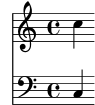
Der Befehl \new beginnt einen neuen „Notationskontext“. Ein
solcher Notationskontext ist eine Umgebung, in der musikalische
Ereignisse (wie Noten oder \clef (Schlüssel)-Befehle)
interpretiert werden. Für einfache Stücke werden diese
Umgebungen automatisch erstellt. Für kompliziertere Musik
ist es aber am besten, die Umgebungen explizit zu erstellen.
Es gibt verschiedene Kontext-Typen. Score (Partitur),
Staff (Notensystem) und Voice (Stimme)
verarbeiten die Eingabe von Noten, während die Lyrics
(Text)-Umgebung zum Setzen von Liedtexten
und die ChordNames (Akkordbezeichnungs)-Umgebung
für Akkordsymbole verwendet wird.
Indem \new vor einen musikalischen Ausdruck gesetzt wird,
wird ein größerer Ausdruck erstellt. In diesem Sinne erinnert
die Syntax des \new-Befehls an das Minuszeichen
in der Mathematik. Genauso wie (4+5) ein Ausdruck ist, der
durch -(4+5) zu einem größeren Ausdruck erweitert wurde,
werden auch musikalische Ausdrücke durch den \new-Befehl
erweitert.
Die Taktangabe, die in einem einzelnen System angegeben wird, wirkt sich auf alle anderen System aus. Die Angabe der Tonart in einem System hingegen beeinflusst nicht die Tonart der anderen Systeme. Dieses Verhalten ist darin begründet, dass Partituren mit transponierenden Instrumenten häufiger sind als Partituren mit unterschiedlichen Taktarten.
<< \new Staff { \clef treble \key d \major \time 3/4 c''4 } \new Staff { \clef bass c4 } >>![[image of music]](8e/lily-c8f11f58.png)
| [ << Übliche Notation ] | [Top][Contents][Index] | [ Grundbegriffe >> ] |
| [ < Mehrere Notensysteme ] | [ Up: Mehrere Noten auf einmal ] | [ Noten zu Akkorden verbinden > ] |
3.2.3 Notensysteme gruppieren
Glossar: brace, staff, system.
Musik für das Klavier wird üblicherweise auf zwei Systemen notiert,
die durch eine geschweifte Klammer verbunden sind
(Akkolade). Um ein derartiges
Notensystem zu erstellen, geht man ähnlich vor wie in dem Beispiel
aus Mehrere Notensysteme, nur dass der gesamte Ausdruck jetzt in
eine PianoStaff-Umgebung eingefügt wird.
\new PianoStaff << \new Staff … \new Staff … >> >>
Hier ein kleines Beispiel.
\new PianoStaff << \new Staff \relative { \time 2/4 c''4 e | g g, | } \new Staff \relative { \clef bass c4 c' | e c | } >>![[image of music]](79/lily-d4aee0ae.png)
Andere typische Gruppen von Notensystemen können mit den
Befehlen \new StaffGroup für Orchestersätze und
\new ChoirStaff für ein Chorsystem erstellt
werden. Jede dieser Systemgruppen erstellt einen
neuen Kontext, der dafür sorgt, dass die Klammern zu Beginn
des Systems erstellt werden und der zusätzlich auch
darüber entscheidet, ob die Taktlinien nur auf dem System
oder auch zwischen System gesetzt werden.
Siehe auch
Notationsreferenz: Tasteninstrumente und andere Instrumente mit mehreren Systemen, Systeme anzeigen lassen.
| [ << Übliche Notation ] | [Top][Contents][Index] | [ Grundbegriffe >> ] |
| [ < Notensysteme gruppieren ] | [ Up: Mehrere Noten auf einmal ] | [ Mehrstimmigkeit in einem System > ] |
3.2.4 Noten zu Akkorden verbinden
Glossar: chord.
Wir haben schon weiter oben gesehen, wie Akkorde erstellt werden können: Indem sie mit spitzen Klammern eingeschlossen und somit als gleichzeitig erklingend markiert werden. Die normale Art, Akkorde zu notieren, ist aber, sie in einfache spitze Klammern (‘<’ und ‘>’) einzuschließen. Beachten Sie, dass alle Noten eines Akkordes die gleiche Dauer haben müssen, und diese Dauer wird nach der schließenden Klammer geschrieben.
\relative { r4 <c'' e g> <c f a>2 }![[image of music]](90/lily-610bc6f9.png)
Akkorde sind im Grunde gleichwertig mit einfachen Noten: Fast alle Markierungen, die an einfache Noten angehängt werden können, kann man auch an Akkorde hängen. So können Markierungen wie Balken oder Bögen mit den Akkorden kombiniert werden. Sie müssen jedoch außerhalb der spitzen Klammern gesetzt werden.
\relative { r4 <c'' e g>~ <c f a>2 | <c e g>8[ <c f a> <c e g> <c f a>] <c e g>8\>[ <c f a> <c f a> <c e g>]\! | r4 <c e g>8.\p <c f a>16( <c e g>4-. <c f a>) | }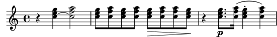
Das obige Beispiel demonstriert auch eine sehr nützliche Funktion: Ein Akkord kann mit dem Symbol ‘q’ wiederholt werden. Das funktioniert sogar mit eingestreuten einzelnen Noten.
\relative { c'8 <e g>8 q q g, q q q }![[image of music]](21/lily-8c610730.png)
Siehe auch
Notationsreferenz: Noten mit Akkorden.
| [ << Übliche Notation ] | [Top][Contents][Index] | [ Grundbegriffe >> ] |
| [ < Noten zu Akkorden verbinden ] | [ Up: Mehrere Noten auf einmal ] | [ Lieder > ] |
3.2.5 Mehrstimmigkeit in einem System
Polyphone Notation in LilyPond ist nicht schwer, benutzt aber bestimmte Konzepte, die hier noch nicht behandelt worden sind und hier nicht erklärt werden sollten. Anstelle dessen führen die folgenden Abschnitte in diese Konzepte ein und erklären sie ausführlich.
Siehe auch
Handbuch zum Lernen: Voice enthält Noten.
Notationsreferenz: Gleichzeitig erscheinende Noten.
| [ << Übliche Notation ] | [Top][Contents][Index] | [ Grundbegriffe >> ] |
| [ < Mehrstimmigkeit in einem System ] | [ Up: Übliche Notation ] | [ Einfache Lieder setzen > ] |
3.3 Lieder
In diesem Kapitel wird in die Kombination von Musik mit Text eingeführt und die Erstellung einfacher Song-Blätter gezeigt.
| 3.3.1 Einfache Lieder setzen | ||
| 3.3.2 Text an einer Melodie ausrichten | ||
| 3.3.3 Text zu mehreren Systemen |
| [ << Übliche Notation ] | [Top][Contents][Index] | [ Grundbegriffe >> ] |
| [ < Lieder ] | [ Up: Lieder ] | [ Text an einer Melodie ausrichten > ] |
3.3.1 Einfache Lieder setzen
Glossar: lyrics.
Hier ist der Beginn eines einfachen Kinderliedes, Girls and boys come out to play:
\relative { \key g \major \time 6/8 d''4 b8 c4 a8 | d4 b8 g4 }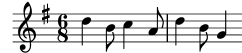
Zu diesen Noten kann Text hinzugefügt werden, indem beide
mit dem \addlyrics-Befehl kombiniert werden. Text
wird eingegeben, indem jede Silbe durch ein Leerzeichen getrennt wird.
<< \relative { \key g \major \time 6/8 d''4 b8 c4 a8 | d4 b8 g4 } \addlyrics { Girls and boys come out to play, } >>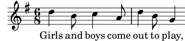
Sowohl die Noten als auch der Text sind jeweils in geschweifte
Klammern eingefasst, und der gesamte Ausdruck ist zwischen
<< … >> positioniert. Damit wird garantiert,
dass Text und Noten gleichzeitig gesetzt werden.
| [ << Übliche Notation ] | [Top][Contents][Index] | [ Grundbegriffe >> ] |
| [ < Einfache Lieder setzen ] | [ Up: Lieder ] | [ Text zu mehreren Systemen > ] |
3.3.2 Text an einer Melodie ausrichten
Glossar: melisma, extender line.
Die nächste Zeile des Kinderliedes lautet: The moon doth shine as bright as day. So sieht es notiert aus:
<< \relative { \key g \major \time 6/8 d''4 b8 c4 a8 | d4 b8 g4 g8 | a4 b8 c b a | d4 b8 g4. | } \addlyrics { Girls and boys come out to play, The moon doth shine as bright as day; } >>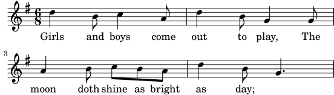
Wenn man sich die Noten genauer anschaut, wird klar, dass die neue Textzeile nicht korrekt an den Noten ausgerichtet ist. Das Wort shine sollte zu zwei Noten gesungen werden, nicht nur zu einer. Das nennt man ein Melisma, eine Silbe Text zu mehreren Noten. Es gibt mehrere Möglichkeiten, eine Silbe über mehrere Noten zu verlängern. Die einfachste ist es, einen Legatobogen um die betroffenen Noten zu setzen, zu Einzelheiten siehe Bindebögen und Legatobögen.
<< \relative { \key g \major \time 6/8 d''4 b8 c4 a8 | d4 b8 g4 g8 | a4 b8 c( b) a | d4 b8 g4. | } \addlyrics { Girls and boys come out to play, The moon doth shine as bright as day; } >>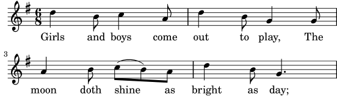
Die Wörter orientieren sich jetzt richtig an den Noten, aber der automatische Balken für die Noten zu shine as sieht nicht richtig aus. Wir können das korrigieren, indem wir die Balkenlänge manuell eingrenzen, damit sie der üblichen Notationsweise für Gesang entspricht. Für Einzelheiten siehe Automatische und manuelle Balken.
<< \relative { \key g \major \time 6/8 d''4 b8 c4 a8 | d4 b8 g4 g8 | a4 b8 c([ b]) a | d4 b8 g4. | } \addlyrics { Girls and boys come out to play, The moon doth shine as bright as day; } >>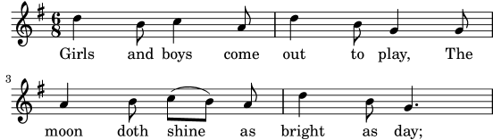
Alternativ kann das Melisma auch im Text notiert werden, indem für jede Note, die übersprungen werden soll, ein Unterstrich ‘_’ im Text geschrieben wird.
<< \relative { \key g \major \time 6/8 d''4 b8 c4 a8 | d4 b8 g4 g8 | a4 b8 c[ b] a | d4 b8 g4. | } \addlyrics { Girls and boys come out to play, The moon doth shine _ as bright as day; } >>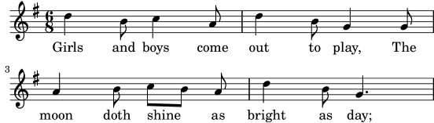
Wenn die letzte Silbe eines Wortes sich über mehrere Noten oder eine sehr lange Note erstreckt, wird üblicherweise eine Fülllinie gesetzt, die sich über alle Noten erstreckt, die zu der Silbe gehören. Diese Fülllinie wird mit zwei Unterstrichen ‘__’ notiert. Es ist wichtig, dass die Unterstriche mit einem oder mehreren Leerzeichen von der vorherigen (und folgenden) Silbe getrennt sind.
Hier ein Beispiel der ersten drei Takte aus Didos Klage, aus Purcells Dido and Æneas:
<< \relative { \key g \minor \time 3/2 g'2 a bes | bes2( a) b2 | c4.( bes8 a4. g8 fis4.) g8 | fis1 } \addlyrics { When I am laid, am laid __ in earth, } >>![[image of music]](e5/lily-cba458ef.png)
Keins der bisherigen Beispiele hat bisher Wörter benutzt, die länger
als eine Silbe waren. Solche Wörter werden üblicherweise auf die
Noten aufgeteilt, eine Silbe pro Note, mit Bindestrichen zwischen
den Silben. Diese Silben werden durch zwei Minuszeichen (--)
notiert und von LilyPond als ein zentrierter Bindestrich zwischen
den Silben gesetzt. Es ist wichtig, dass die Bindestriche mit einem
oder mehreren Leerzeichen von der vorherigen (und folgenden) Silbe
getrennt sind.
Hier ein Beispiel, das dies und alle anderen Tricks zeigt, mit denen Text an den Noten ausgerichtet werden kann.
<< \relative { \key g \major \time 3/4 \partial 4 d'4 | g4 g a8( b) | g4 g b8( c) | d4 d e | c2 } \addlyrics { A -- way in a __ man -- ger, no __ crib for a bed, } >>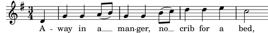
Einige Texte, besonders in italienischer Sprache, brauchen das Gegenteil: mehr als eine Silbe muss zu einer einzelnen Note gesetzt werden. Das ist möglich, indem die Silben durch einen einzelnen Unterstrich ‘_’ zusammengekoppelt werden. Dazwischen dürfen sich keine Leerzeichen befinden, oder indem man die relevanten Silben in Anführungszeichen ‘"’ setzt. Hier ein Beispiel aus dem Figaro von Rossini, wo die Silbe al auf der selben Note wie go des Wortes Largo in Figaros Arie Largo al factotum gesungen werden muss.
<< \relative { \clef "bass" \key c \major \time 6/8 c'4.~ 8 d b | c8([ d]) b c d b | c8 } \addlyrics { Lar -- go_al fac -- to -- tum del -- la cit -- tà } >>![[image of music]](c2/lily-3f3a23b5.png)
Siehe auch
Notationsreferenz: Notation von Gesang.
| [ << Übliche Notation ] | [Top][Contents][Index] | [ Grundbegriffe >> ] |
| [ < Text an einer Melodie ausrichten ] | [ Up: Lieder ] | [ Letzter Schliff > ] |
3.3.3 Text zu mehreren Systemen
Die einfache Lösung mit \addlyrics kann benutzt werden, um
Text zu einem oder mehreren Systemen zu setzen. Hier ein Beispiel
aus Händels Judas Maccabäus:
<< \relative { \key f \major \time 6/8 \partial 8 c''8 | c8([ bes]) a a([ g]) f | f'4. b, | c4.~ 4 } \addlyrics { Let flee -- cy flocks the hills a -- dorn, __ } \relative { \key f \major \time 6/8 \partial 8 r8 | r4. r4 c'8 | a'8([ g]) f f([ e]) d | e8([ d]) c bes'4 } \addlyrics { Let flee -- cy flocks the hills a -- dorn, } >>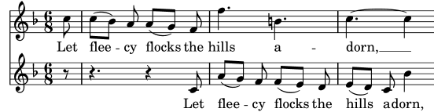
Aber Partituren, die komplizierter als dieses Beispiel sind, werden besser notiert, indem man die Systemstruktur von den Noten und dem Gesangstext durch Variablen trennt. Die Benutzung von Variablen wird erklärt im Abschnitt Stücke durch Variablen organisieren.
Siehe auch
Notationsreferenz: Notation von Gesang.
| [ << Übliche Notation ] | [Top][Contents][Index] | [ Grundbegriffe >> ] |
| [ < Text zu mehreren Systemen ] | [ Up: Übliche Notation ] | [ Stücke durch Variablen organisieren > ] |
3.4 Letzter Schliff
Das ist das letzte Kapitel des Tutoriums. Hier soll demonstriert werden, wie man den letzten Schliff an einfachen Stücken anbringen kann. Gleichzeitig dient es als Einleitung zum Rest des Handbuches.
| 3.4.1 Stücke durch Variablen organisieren | ||
| 3.4.2 Titel hinzufügen | ||
| 3.4.3 Absolute Notenbezeichnungen | ||
| 3.4.4 Nach dem Tutorium |
| [ << Übliche Notation ] | [Top][Contents][Index] | [ Grundbegriffe >> ] |
| [ < Letzter Schliff ] | [ Up: Letzter Schliff ] | [ Titel hinzufügen > ] |
3.4.1 Stücke durch Variablen organisieren
Wenn alle die Elemente, die angesprochen wurden, zu größeren Dateien
zusammengefügt werden, werden auch die musikalischen Ausdrücke sehr
viel größer. In polyphonen Dateien mit vielen Systemen kann das
sehr chaotisch aussehen. Das Chaos kann aber deutlich reduziert werden,
wenn Variablen definiert und verwendet werden.
Variablen (die auch als Bezeichner oder Makros bezeichnet werden) können einen Teil der Musik aufnehmen. Sie werden wie folgt definiert:
bezeichneteMusik = { … }
Der Inhalt des musikalischen Ausdrucks bezeichneteMusik kann
dann später wieder benutzt werden, indem man einen Backslash davor setzt
(\bezeichneteMusik), genau wie bei jedem LilyPond-Befehl.
violin = \new Staff { \relative { a'4 b c b } } cello = \new Staff { \relative { \clef "bass" e2 d } } { << \violin \cello >> }![[image of music]](5a/lily-6d5b09dd.png)
In den Namen der Variablen dürfen nur Buchstaben des Alphabets verwendet werden, keine Zahlen oder Striche.
Variable müssen vor dem eigentlichen musikalischen Ausdruck definiert werden. Sie können dann aber beliebig oft verwendet werden, nachdem sie einmal definiert worden sind. Sie können sogar eingesetzt werden, um später in der Datei eine neue Variable zu erstellen. Damit kann die Schreibarbeit erleichtert werden, wenn Notengruppen sich oft wiederholen.
tripletA = \relative { \tuplet 3/2 { c'8 e g } } barA = { \tripletA \tripletA \tripletA \tripletA } { \barA \barA }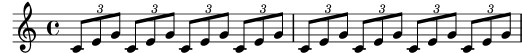
Man kann diese Variablen auch für viele andere Objekte verwenden, etwa:
myWidth = 60 % eine Zahl für die \paper variable
% (die Einheit ist Millimeter)
myName = "Wendy" % eine Zeichenkette für eine Textbeschriftung
aFivePaper = \paper { #(set-paper-size "a5") }
Abhängig vom Kontext kann solch ein Bezeichner in verschiedenen Stellen verwendet werden. Das folgende Beispiel zeigt die Benutzung der eben definierten Bezeichner:
\paper {
\aFivePaper
line-width = \myWidth
}
{
c4^\myName
}
| [ << Übliche Notation ] | [Top][Contents][Index] | [ Grundbegriffe >> ] |
| [ < Stücke durch Variablen organisieren ] | [ Up: Letzter Schliff ] | [ Absolute Notenbezeichnungen > ] |
3.4.2 Titel hinzufügen
Titel, Komponist, Opusnummern und ähnliche Information werden in
einer \header-Umgebung eingefügt. Diese Umgebung befindet sich
außerhalb der musikalischen Ausdrücke, meistens wird die
\header-Umgebung direkt nach der Versionsnummer eingefügt.
\version "2.26.0"
\header {
title = "Symphony"
composer = "Ich"
opus = "Op. 9"
}
{
… Noten …
}
Wenn die Datei übersetzt wird, werden Titel- und Komponisteneinträge über der Musik ausgegeben. Mehr Information über die Titelei findet sich im Abschnitt Titel Kopf und Fußzeilen erstellen.
| [ << Übliche Notation ] | [Top][Contents][Index] | [ Grundbegriffe >> ] |
| [ < Titel hinzufügen ] | [ Up: Letzter Schliff ] | [ Nach dem Tutorium > ] |
3.4.3 Absolute Notenbezeichnungen
Bis jetzt haben wir \relative benutzt, um Tonhöhen zu
bestimmen. Für gewöhnlich ist das die schnellste Methode, Musik einzugeben.
Ohne \relative werden Tonhöhen als absolute Angaben interpretiert.
In diesem Modus werden alle Tonhöhen von LilyPond als absolute Werte interpretiert: Ein ‘c'’ ist dann also immer das eingestrichene C, ein ‘b’ ist immer das kleine h unter dem eingestrichenen C, und ein ‘g,’ ist immer das große G – also die Note auf der unteren Linie im Bass-Schlüssel.
{ \clef bass c'4 b g, g, | g,4 f, f c' | }![[image of music]](7e/lily-7d8ea0e9.png)
Das Schreiben einer Melodie im Violinschlüssel erfordert eine Vielzahl
von Apostrophen ', wie z.B. in diesem Fragment von Mozart:
{ \key a \major \time 6/8 cis''8. d''16 cis''8 e''4 e''8 | b'8. cis''16 b'8 d''4 d''8 | }![[image of music]](92/lily-d90fc61e.png)
Gemeinsame Oktavierungsmarkierungen können einmalig mit dem Befehl
\fixed, gefolgt von einer Bezugstonhöhe, bestimmt werden:
\fixed c'' { \key a \major \time 6/8 cis8. d16 cis8 e4 e8 | b,8. cis16 b,8 d4 d8 | }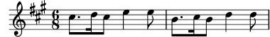
Im Modus \relative benötigt das vorherige Beispiel überhaupt keine
Oktavierungsmarkierungen, denn die Melodie enthält keine Intervalle, die
größer wären als eine Quarte:
\relative { \key a \major \time 6/8 cis''8. d16 cis8 e4 e8 | b8. cis16 b8 d4 d8 | }![[image of music]](ac/lily-049ba55d.png)
Wenn man einen Fehler durch ein Oktavierungszeichen (‘'’
oder ‘,’) im \relative-Modus macht, ist er sehr
schnell zu finden, denn viele Noten sind nacheinander in der
falschen Oktave. Im absoluten Modus dagegen ist ein einzelner Fehler
nicht so deutlich und deshalb auch nicht so einfach zu finden.
Trotz allem ist der absolute Modus gut für Musik mit sehr großen Sprüngen und vor allem für computergenerierte LilyPond-Dateien. Wenn man Melodiefragmente kopiert und einfügt, dann behält sie im absoluten Modus die originale Oktavlage.
Bisweilen ist Musik komplexer aufgebaut. Schachtelt man \relative
ineinander, dann sind der innere und äußere Bereich unabhängig voneinander:
\relative { c'4 \relative { f'' g } c }![[image of music]](ee/lily-a6cb7588.png)
Möchte man den absoluten Modus innerhalb von \relative verwenden,
dann gehört die absolute Musik innerhalb \fixed c { … }
gepackt und deren Tonhöhen beeinflussen dann nicht die Oktavlage der
relativen Musik:
\relative { c'4 \fixed c { f'' g'' } c | c4 \fixed c'' { f g } c }![[image of music]](97/lily-e8cf713e.png)
| [ << Übliche Notation ] | [Top][Contents][Index] | [ Grundbegriffe >> ] |
| [ < Absolute Notenbezeichnungen ] | [ Up: Letzter Schliff ] | [ Grundbegriffe > ] |
3.4.4 Nach dem Tutorium
Wenn Sie dieses Tutorium absolviert haben, sollten Sie am besten ein paar Stücke selber notieren. Beginnen Sie mit den Vorlagen und fügen Sie einfach Ihre Noten dazu. Wenn Sie irgendetwas brauchen, das nicht im Tutorium besprochen wurde, schauen Sie sich den Abschnitt Alles über die Notation an, angefangen mit Musikalische Notation. Wenn Sie für ein Instrument oder Ensemble Noten schreiben wollen, für das es keine Vorlage gibt, schauen Sie sich Erweiterung der Vorlagen an.
Wenn Sie ein paar kurze Stücke notiert haben, lesen Sie den Rest des Handbuchs zum Lernen (Kapitel 3–5). Natürlich können Sie auch sofort weiterlesen. Die nächsten Kapitel sind aber mit der Annahme geschrieben, dass Sie die Eingabesprache von LilyPond beherrschen. Sie können die weiteren Kapitel auch überfliegen und dann darauf wieder zurückkommen, wenn Sie einige Erfahrungen im Notieren gewonnen haben.
In diesem Tutorium, genauso wie im gesamten Handbuch zum Lernen, befindet sich ein Abschnitt Siehe auch am Ende jedes Abschnittes, wo sich Verweise auf andere Abschnitte befinden. Diesen Verweisen sollten Sie nicht beim ersten Durchlesen folgen; erst wenn Sie das gesamte Handbuch zum Lernen gelesen haben, können Sie bei Bedarf diesen Verweisen folgen, um ein Thema zu vertiefen.
Bitte lesen Sie jetzt Überblick über die Handbücher, wenn Sie es bisher noch nicht getan haben. Es gibt ungeheuer viel Information über LilyPond, so dass Neulinge sich nicht sofort zurecht finden. Wenn Sie auch nur ein paar Minuten in diesem Abschnitt lesen, können Sie sich Stunden frustrierendes Suchen an der falschen Stelle ersparen!
| [ << Übliche Notation ] | [Top][Contents][Index] | [ Die Ausgabe verbessern >> ] |
| [ < Nach dem Tutorium ] | [ Up: Top ] | [ Wie eine LilyPond-Eingabe-Datei funktioniert > ] |
4 Grundbegriffe
Nachdem im Tutorium gezeigt wurde, wie aus einfachen Text-Dateien wunderschön formatierte Musiknoten erzeugt werden können, stellt dieses Kapitel die Konzepte und Techniken vor, wie auch komplexere Partituren erstellt werden können.
| 4.1 Wie eine LilyPond-Eingabe-Datei funktioniert | ||
| 4.2 Voice enthält Noten | ||
| 4.3 Kontexte und Engraver | ||
| 4.4 Erweiterung der Vorlagen |
| [ << Grundbegriffe ] | [Top][Contents][Index] | [ Die Ausgabe verbessern >> ] |
| [ < Grundbegriffe ] | [ Up: Grundbegriffe ] | [ Einführung in die Dateistruktur von LilyPond > ] |
4.1 Wie eine LilyPond-Eingabe-Datei funktioniert
Das LilyPond Eingabeformat hat eine ziemlich freie Form, so dass für erfahrene Benutzer viel Freiheit besteht, die Struktur ihrer Quelldateien anzulegen. Für Neulinge kann diese Flexibilität aber erst einmal verwirrend sein. In diesem Kapitel soll darum ein Teil dieser Strukturen dargestellt werden, vieles aber zur Vereinfachung auch weggelassen werden. Für eine komplette Beschreibung des Eingabeformats siehe Die Dateistruktur.
4.1.1 Einführung in die Dateistruktur von LilyPond
Ein grundlegendes Beispiel einer Eingabedatei für LilyPond lautet:
\version "2.26.0"
\header { }
\score {
… zusammengesetzter Musik-Ausdruck … % Die gesamten Noten kommen hier hin!
\layout { }
\midi { }
}
Zu diesem Muster gibt es viele Variationen, aber obiges Beispiel stellt eine hilfreiche Ausgangsbasis dar.
Bis jetzt hat keines der verwendeten Beispiele den \score{}
Befehl gebraucht. Das liegt daran, dass LilyPond automatisch fehlende
Befehle hinzufügt, sollten sie fehlen. Konkret betrachtet LilyPond eine
Eingabe in der Form
\relative {
c''4 a d c
}
als eine abgekürzte Form von
\book {
\score {
\new Staff {
\new Voice {
\relative {
c''4 a b c
}
}
}
\layout { }
}
}
Mit anderen Worten: Wenn die Eingabedatei einen einfachen Musik-Ausdruck enthält, wird LilyPond die Datei so interpretieren, als ob dieser Ausdruck in den oben gezeigten Befehlen eingegeben wurde. Diese nötige Struktur wird automatisch im Speicher beim Aufruf von LilyPond erzeugt, ohne dass der Benutzer davon etwas bemerkt.
Ein Wort der Warnung ist jedoch angebracht! Viele der Beispiele
in der Dokumentation von LilyPond lassen die \new Staff und \new Voice
Befehle zur Erzeugung einer Notenzeile und einer Stimme (beides ist in
LilyPond ein sogenannter Kontext) bewusst aus,
damit sie implizit von LilyPond im Speicher erzeugt werden.
Für einfache Dokumente funktioniert das im Allgemeinen sehr gut, für
komplexere Partituren können dadurch aber unerwartete Ergebnisse
entstehen, teilweise sogar unerwartete leere Notenzeilen. Um
die entsprechenden Kontexte in diesem Fall explizit zu erzeugen,
siehe Kontexte und Engraver.
Achtung: Wenn mehr als ein paar Zeilen an Musik eingegeben werden,
empfiehlt es sich, die Notenzeilen und die Stimmen immer explizit
mit \new Staff und \new Voice zu erzeugen.
Im Moment wollen wir aber zu unserem ersten Beispiel zurückkehren und
nur den \score-Befehl näher betrachten.
Eine Partitur (\score) muss immer genau einen musikalischen Ausdruck
enthalten. Es sei daran erinnert, dass ein musikalischer alles mögliche sein
kann. Angefangen bei einer einzelnen Note bis hin zu riesigen zusammengesetzten
Ausdrücken wie
{
\new StaffGroup <<
… füge hier die gesamte Partitur einer Wagner Oper ein …
>>
}
Da sich alles innerhalb der geschweiften Klammern { … }
befindet, wird es wie ein einziger musikalischer Ausdruck behandelt.
Wie wir oben schon gesehen haben kann der \score Block auch andere
Dinge enthalten, wie etwa
\score {
{ c'4 a b c' }
\header { }
\layout { }
\midi { }
}
Wie man sieht, sind die drei Befehle \header, \layout und
\midi von spezieller Natur: Im Gegensatz zu vielen anderen Befehlen,
die auch mit einem \ beginnen, liefern sie keinen Musikausdruck
und sind auch nicht Teil eines musikalischen Ausdrucks. Daher können sie
sowohl innerhalb eines \score-Blocks als auch außerhalb platziert
werden. Tatsächlich werden einige dieser Befehle meist außerhalb des
\score-Blocks gesetzt, z.B. findet sich der \header
sehr oft oberhalb der \score-Umgebung. Das
funktioniert genauso gut.
Zwei bisher noch nicht aufgetauchte Befehle sind
\layout { } und \midi {}. Wenn sie in einer
Datei vorkommen, führt dies dazu, dass LilyPond eine druckfähige PDF-Datei
bzw. eine MIDI-Ausgabe erzeugt. Genauer beschrieben werden sie im
Benutzerhandbuch – Partiturlayout und
MIDI-Dateien erstellen.
Ihr LilyPond Code kann auch mehrere \score-Blöcke enthalten.
Jeder davon wird als eigenständige Partitur interpretiert, die
allerdings alle in dieselbe Ausgabedatei platziert werden.
Ein \book-Befehl ist nicht explizit notwendig – er wird
implizit erzeugt. Wenn jedoch für jeden \score-Block in einer
einzigen .ly-Datei eine eigene Ausgabe-Datei erzeugt werden soll,
dann muss jeder dieser Blöcke in einen eigenen \book-Block
gesetzt werden: Jeder \book-Block erzeugt dann eine
eigene Ausgabedatei.
Zusammenfassung:
Jeder \book-Block erzeugt eine eigene Ausgabedatei (z.B. eine
PDF-Datei). Wenn Sie keinen derartigen Block explizit angegeben haben,
setzt LilyPond den gesamten Dateiinhalt innerhalb eines einzigen
impliziten \book-Blocks.
Jeder \score-Block beschreibt ein eigenständiges Musikstück
innerhalb des \book-Blocks.
Jeder \layout-Block wirkt sich auf den \score- oder
\book-Block aus, in dem er auftritt. So wirkt z.B. ein
\layout-Block innerhalb eines \score-Blocks nur auf
diesen einen Block und seinen gesamten Inhalt, ein \layout-Block
außerhalb eines \score-Blocks (und daher innerhalb des implizit
erzeugten oder explizit angegebenen \book-Blocks) jedoch auf
alle \score-Blocks innerhalb dieses \book-Blocks.
Nähere Details finden sich im Abschnitt Mehrere Partituren in einem Buch.
Eine gute Möglichkeit zur Vereinfachung sind selbst definierte Variablen, wie auch in Stücke durch Variablen organisieren gezeigt. Alle Vorlagen verwenden diese Möglichkeit:
melodie = \relative {
c'4 a b c
}
\score {
\melodie
}
Wenn LilyPond diese Datei analysiert, nimmt es den Inhalt
von melodie (alles nach dem Gleichheitszeichen) und
fügt ihn immer dann ein, wenn ein \melodie
vorkommt. Die Namen sind frei wählbar, die Variable kann genauso
gut melodie, GLOBAL, rechteHandKlavier,
oder foofoobarbaz heißen.
Als Variablenname kann fast jeder beliebige Name benutzt werden,
allerdings dürfen nur Buchstaben vorkommen (also keine Zahlen, Unterstriche,
Sonderzeichen, etc.) und er darf nicht wie ein LilyPond-Befehl
lauten. Für mehr Information siehe
Tipparbeit durch Variablen und Funktionen einsparen. Die genauen
Einschränkungen sind beschrieben in Die Dateistruktur.
Siehe auch
Eine vollständige Definition des Eingabeformats findet sich in Die Dateistruktur.
4.1.2 Score ist ein (einziger) zusammengesetzter musikalischer Ausdruck
Im vorigen Kapitel, Einführung in die Dateistruktur von LilyPond,
wurde die allgemeine Struktur einer LilyPond-Quelldatei
beschrieben. Aber anscheinend haben wir die wichtigste
Frage ausgelassen, nämlich wie man herausfindet, was nach
dem \score geschrieben werden soll.
In Wirklichkeit ist das aber gar kein Geheimnis. Diese Zeile ist die Antwort:
Ein
\scoreBlock enthält immer genau einen musikalischen Ausdruck.
Vielleicht wollen Sie noch einmal Musikalische Ausdrücke erklärt überfliegen. In diesem Kapitel wurde gezeigt, wie sich große musikalische Ausdrücke aus kleinen Teilen zusammensetzen. Noten können zu Akkorden verbunden werden usw. Jetzt gehen wir aber in die andere Richtung und betrachten, wie sich ein großer musikalischer Ausdruck zerlegen lässt. Zur Einfachheit soll nur ein Sänger und Klavier in unserem Beispiel eingesetzt werden. Wir brauchen keine Systemgruppe (StaffGroup), die einfach nur bewirkt, dass die Systeme mit einer Klammer zusammengefasst werden; sie wird also entfernt. Wir brauchen aber einen Sänger und ein Klavier.
\score {
<<
\new Staff = "Sänger" <<
>>
\new PianoStaff = "Klavier" <<
>>
>>
\layout { }
}
Hier wurden die Systeme (Staff) benannt: „Sänger“ und „Klavier“. Das ist zwar nicht direkt notwendig, aber es ist gut, sich diese Schreibweise anzugewöhnen, damit man immer sofort erkennt, um welches System es sich handelt.
Zur Erinnerung: mit << … >> (an Stelle von { … })
werden Noten gleichzeitig gesetzt.
Dadurch werden Vokalstimme und Klaviersystem übereinander
ausgegeben. Die << … >>-Konstruktion ist für das
Sänger-System nicht notwendig, wenn hier nur die Noten einer
einzigen Stimme eingefügt werden sollen, aber << … >>
anstelle von geschwungenen Klammern sind notwendig,
sobald mehr als eine Stimme oder etwa eine Notenstimme und
Gesangstext eingefügt werden sollen. In unserem Fall soll eine
Stimme mit Gesangstext notiert werden, sodass die spitzen Klammern
benötigt werden. Die Noten sollen erst später hinzugefügt werden,
hier also erst mal nur ein paar Platzhalternoten und Text. Wenn
Sie sich nicht erinnern, wie man Gesangstext notiert, lesen
Sie noch einmal \addlyrics in Einfache Lieder setzen.
\score { << \new Staff = "Sänger" << \new Voice = "Singstimme" { c'1 } \addlyrics { And } >> \new PianoStaff = "Klavier" << \new Staff = "oben" { c'1 } \new Staff = "unten" { c'1 } >> >> \layout { } }![[image of music]](fe/lily-6b643fff.png)
Jetzt haben wir viel mehr Details. Wir haben ein System (engl. staff)
für einen Sänger, in dem sich wieder eine Stimme (engl. voice)
befindet. Voice bedeutet für LilyPond eine Stimme (sowohl
gesungen als auch gespielt) und evtl. zusätzlich einen Text. Zusätzlich
werden zwei Notensysteme für das Klavier mit dem Befehl \new
PianoStaff gesetzt. PianoStaff bezeichnet die Piano-Umgebung (etwa
durchgehende Taktstriche und die geschweifte Klammer am Anfang), in der
dann wiederum zwei eigene Systeme ("oben" für die rechte Hand und
"unten"
für die linke) erstellt werden, auch wenn das untere System noch
einen Bassschlüssel erhalten muss.
Jetzt könnte man in diese Umgebung Noten einfügen. Innerhalb der
geschweiften Klammern neben \new Voice = "Singstimme"
könnte man
\relative {
r4 d''8\noBeam g, c4 r
}
schreiben. Aber wenn man seine Datei so direkt schreibt, wird
der \score-Abschnitt sehr lang und es wird ziemlich schwer zu
verstehen, wie alles zusammenhängt. Darum bietet es sich an, Bezeichner
(oder Variablen) zu verwenden. Sie wurden zu Beginn des vorigen
Abschnitts erklärt, erinnern Sie sich? Damit wir sicher gehen
können, dass der Inhalt der text-Variable als Gesangstext
interpretiert wird, wird ihm \lyricmode voran gesetzt. Wie
\addlyrics wird hiermit in den Eingabemodus für Gesangstext
gewechselt. Ohne diesen Befehl würde LilyPond versuchen, den Inhalt
der Variable als Noten zu interpretieren und dabei eine Menge
Fehler produzieren. (Einige andere Eingabemodi sind außerdem noch
verfügbar, siehe Eingabe-Modi.)
Also haben wir, wenn wir ein paar Noten und einen Bassschlüssel für die linke Hand hinzufügen, folgendes Beispiel:
melodie = \relative { r4 d''8\noBeam g, c4 r } text = \lyricmode { And God said, } oben = \relative { <g' d g,>2~ <g d g,> } unten = \relative { b,2 e } \score { << \new Staff = "Sänger" << \new Voice = "Singstimme" { \melodie } \addlyrics { \text } >> \new PianoStaff = "Klavier" << \new Staff = "oben" { \oben } \new Staff = "unten" { \clef "bass" \unten } >> >> \layout { } }![[image of music]](bd/lily-0905be1c.png)
Beim Schreiben (oder Lesen) einer \score-Umgebung
sollte man langsam und sorgfältig vorgehen. Am besten fängt
man mit dem größten Gebilde an und definiert dann die darin
enthaltenen kleineren der Reihe nach. Es hilft auch, sehr
genau mit den Einzügen zu sein, so dass jede Zeile, die
der gleichen Ebene angehört, wirklich horizontal an der
gleichen Stelle beginnt.
Siehe auch
Benutzerhandbuch: Struktur einer Partitur.
4.1.3 Musikalische Ausdrücke ineinander verschachteln
Notenzeilen (die ‚Staff‘-Kontexte) müssen nicht unbedingt gleich zu Beginn erzeugt werden – sie können auch zu einem späteren Zeitpunkt eingeführt werden. Das ist vor allem nützlich, um Ossias zu erzeugen. Hier folgt ein kurzes Beispiel, wie eine zusätzliche temporäre Notenzeile für nur drei Noten erzeugt werden kann:
\new Staff { \relative { r4 g'8 g c4 c8 d | e4 r8 << { f8 c c } \new Staff { f8 f c } >> r4 | } }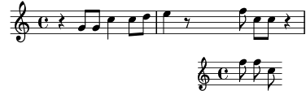
Wie man sieht, ist die Größe des Notenschlüssels dieselbe, wie sie auch bei einer Schlüsseländerung auftritt – etwas kleiner als der Schlüssel am Beginn einer Notenzeile. Dies ist normal für Notenschlüssel, die innerhalb einer Notenzeile gesetzt werden.
Der Ossia-Abschnitt kann auch oberhalb der Hauptnotenzeile gesetzt werden:
\new Staff = "Hauptzeile" { \relative { r4 g'8 g c4 c8 d | e4 r8 << { f8 c c } \new Staff \with { alignAboveContext = "Hauptzeile" } { f8 f c } >> r4 | } }![[image of music]](4c/lily-1e420fe0.png)
Dieses Beispiel benutzt den \with-Befehl, der später noch
genauer erklärt wird. Damit kann das Standardverhalten einer
einzelnen Notenzeile geändert werden: Hier wird einfach angegeben,
dass die neue Notenzeile oberhalb der bereits existierenden Zeile
mit Namen „Hauptzeile“ plaziert werden soll, anstatt
standardmäßig unterhalb.
Siehe auch
Ossia werden oft ohne Notenschlüssel und Taktangabe gedruckt, meist auch etwas kleiner als die anderen Notenzeilen. Dies ist natürlich auch in LilyPond möglich, benötigt aber Befehle, die bisher noch nicht vorgestellt wurden. Siehe Größe von Objekten und Ossia-Systeme.
4.1.4 Über die Nicht-Schachtelung von Klammern und Bindebögen
Sie haben bisher zahlreiche verschiedene Arten von Klammern und Klammer-artigen Konstruktionen beim Schreiben von Musik mit LilyPond kennengelernt. Diese folgen verschiedenen Regeln, die zu Beginn vielleicht verwirrend wirken. Bevor die genauen Regeln vorgestellt werden, wollen wir die diversen Klammerarten und Arten von Klammer-artigen Konstrukten kurz rekapitulieren:
| Klammerart | Funktion |
|---|---|
{ … } | Umschließt ein sequenzielles Musiksegment |
< … > | Umschließt die Noten eines Akkords |
<< … >> | Umschließt parallele Musikausdrücke |
( … ) | Markiert den Beginn und das Ende eines Haltebogens |
\( … \) | Markiert den Beginn und das Ende eines Phasierungsbogens |
[ … ] | Markiert den Beginn und das Ende eines manuell erzeugten Balkens |
Zusätzlich sollten vielleicht noch einige weiter Konstruktionen
erwähnt werden, die Noten auf irgendeine Art und Weise verbinden:
Haltebögen (durch eine Tilde ~ markiert),
N-tolen (als \tuplet x/y { … } geschrieben) und
Vorschlagnoten (als \grace{ … } notiert).
Außerhalb von LilyPond fordert die übliche Benutzung von
Klammern, dass die entsprechenden Arten korrekt verschachtelt
werden, wie z.B. in << [ { ( … ) } ] >>. Die
schließenden Klammern kommen dabei in der umgekehrten Reihenfolge
wie die öffnenden Klammern vor. Dies ist auch in LilyPond
ein Muss für die drei Klammerarten, die in obiger
Tabelle mit dem Wort ‚Umschließt‘ beschrieben werden – sie
müssen korrekt geschachtelt werden.
Die restlichen Klammer-artigen Konstruktionen (durch ‚Markiert‘
in der Tabelle oben beschrieben), die Haltebögen und die Triolen
brauchen jedoch mit
den anderen Klammern oder Klammer-artigen Konstrukten nicht
unbedingt korrekt geschachtelt werden. Tatsächlich sind sie auch
keine Klammern in dem Sinn, dass sie etwas umschließen, sondern
viel mehr Indikatoren, an welcher Stelle ein bestimmtes
musikalisches Objekt beginnt oder endet.
So kann also z.B. einen Phrasierungsbogen vor einem manuellen Balken beginn, jedoch schon vor dem Ende des Balkens enden. Dies mag zwar musikalisch wenig Sinn ergeben, ist aber in LilyPond auch möglich:
\relative { g'8\( a b[ c b\) a] g4 }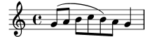
Im Allgemeinen können die verschiedenen Klammerarten, Klammer-artigen Konstruktionen, Haltebögen, Triolen und Vorschlagnoten beliebig kombiniert werden. Das folgende Beispiel zeigt einen Balken, der in eine Triole reicht (Zeile 1), eine Bindebogen, der ebenfalls in eine Triole reicht (Zeile 2), einen Balken und einen Bindebogen in eine Triole, ein Haltebogen, der über zwei Triolen läuft, sowie einen Phrasierungsbogen, der in einer Triole beginnt (Zeilen 3 und 4).
\relative { r16[ g' \tuplet 3/2 { r16 e'8] } g,16( a \tuplet 3/2 { b16 d) e } g,8[( a \tuplet 3/2 { b8 d) e~] } | \tuplet 5/4 { e32\( a, b d e } a4.\) }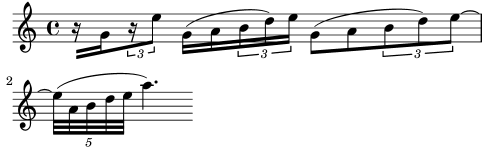
| [ << Grundbegriffe ] | [Top][Contents][Index] | [ Die Ausgabe verbessern >> ] |
| [ < Über die Nicht-Schachtelung von Klammern und Bindebögen ] | [ Up: Grundbegriffe ] | [ Ich höre Stimmen > ] |
4.2 Voice enthält Noten
Sänger brauchen Stimmen zum Singen, und LilyPond braucht sie auch: in der Tat sind alle Noten für alle Instrumente in einer Partitur innerhalb von Stimmen gesetzt. Die Stimme ist das grundlegende Prinzip von LilyPond.
| 4.2.1 Ich höre Stimmen | ||
| 4.2.2 Stimmen explizit beginnen | ||
| 4.2.3 Stimmen und Text |
| [ << Grundbegriffe ] | [Top][Contents][Index] | [ Die Ausgabe verbessern >> ] |
| [ < Voice enthält Noten ] | [ Up: Voice enthält Noten ] | [ Stimmen explizit beginnen > ] |
4.2.1 Ich höre Stimmen
Die grundlegenden und innersten Ebenen in einer LilyPond-Partitur werden „Voice context“ (Stimmenkontext) oder auch nur „Voice“ (Stimme) genannt. Stimmen werden in anderen Notationsprogrammen manchmal auch als „layer“ (Ebene) bezeichnet.
Tatsächlich ist die Voice-Ebene die einzige, die wirklich Noten enthalten kann. Wenn kein Voice-Kontext explizit erstellt wird, wird er automatisch erstellt, wie am Anfang dieses Kapitels gezeigt. Manche Instrumente wie etwa die Oboe können nur eine Note gleichzeitig spielen. Noten für solche Instrumente brauchen nur eine einzige Stimme. Instrumente, die mehrere Noten gleichzeitig spielen können, wie das Klavier, brauchen dagegen oft mehrere Stimmen, um die verschiedenen gleichzeitig erklingenden Noten mit oft unterschiedlichen Rhythmen darstellen zu können.
Eine einzelne Stimme kann natürlich auch vielen Noten in einem Akkord enthalten – wann also braucht man dann mehrere Stimmen? Schauen wir uns zuerst dieses Beispiel mit vier Akkorden an:
\relative { \key g \major <d' g>4 <d fis> <d a'> <d g> }![[image of music]](57/lily-34e301d7.png)
Das kann ausgedrückt werden, indem man die einfachen spitzen Klammern
< … > benützt, um Akkorde anzuzeigen. Hierfür braucht man
nur eine Stimme. Aber gesetzt der Fall das Fis sollte eigentlich
eine Achtelnote sein, gefolgt von einer Achtelnote G (als Durchgangsnote
hin zum A)? Hier haben wir also zwei Noten, die zur gleichen Zeit
beginnen, aber unterschiedliche Dauern haben: die Viertelnote D und die
Achtelnote Fis. Wie können sie notiert werden? Als Akkord kann man sie
nicht schreiben, weil alle Noten in einem Akkord die gleiche Länge besitzen
müssen. Sie können auch nicht als aufeinander folgende Noten geschrieben
werden, denn sie beginnen ja zur selben Zeit. In diesem Fall also brauchen
wir zwei Stimmen.
Wie aber wird das in der LilyPond-Syntax ausgedrückt?
Die einfachste Art, Fragmente mit mehr als einer Stimme auf einem System
zu notieren, ist, die Stimmen nacheinander (jeweils mit den Klammern
{ … }) zu schreiben und dann mit den spitzen Klammern
(<< … >>) simultan zu kombinieren. Die beiden Fragmente müssen
zusätzlich noch mit zwei Backslash-Zeichen (\\) voneinander
getrennt werden, damit sie als zwei unterschiedliche Stimmen erkannt
werden. Ohne diese Trenner würden sie als eine einzige Stimme notiert
werden. Diese Technik ist besonders dann angebracht, wenn es sich bei
den Noten um hauptsächlich homophone Musik handelt, in der hier und da
polyphone Stellen vorkommen.
So sieht es aus, wenn die Akkorde in zwei Stimmen aufgeteilt werden und zur Durchgangsnote noch ein Bogen hinzugefügt wird:
\relative { \key g \major % Voice = "1" Voice = "2" << { g'4 fis8( g) a4 g } \\ { d4 d d d } >> }![[image of music]](1d/lily-5ae6909c.png)
Beachten Sie, dass die Hälse der zweiten Stimme nun nach unten zeigen.
Hier ein anderes Beispiel:
\relative { \key d \minor % Voice = "1" Voice = "2" << { r4 g' g4. a8 } \\ { d,2 d4 g } >> | << { bes4 bes c bes } \\ { g4 g g8( a) g4 } >> | << { a2. r4 } \\ { fis2. s4 } >> | }![[image of music]](00/lily-72928584.png)
Es ist nicht notwendig, für jeden Takt eine eigene
<< \\ >>-Konstruktion zu benutzen. Bei Musik mit nur wenigen
Noten pro Takt kann es die Quelldatei besser lesbar machen, aber
wenn in einem Takt viele Noten vorkommen, kann man die gesamten Stimmen
separat schreiben, wie hier:
<< \key d \minor \relative { % Voice = "1" r4 g' g4. a8 | bes4 bes c bes | a2. r4 | } \\ \relative { % Voice = "2" d'2 d4 g | g4 g g8( a) g4 | fis2. s4 | } >>![[image of music]](36/lily-2fbbc8cd.png)
Dieses Beispiel hat nur zwei Stimmen, aber die gleiche Konstruktion kann angewendet werden, wenn man drei oder mehr Stimmen hat, indem man weitere Backslash-Trenner hinzufügt.
Die Stimmenkontexte tragen die Namen "1", "2" usw. Der erste
Kontext stellt die „äußeren“ Stimmen ein, die höchste Stimme im
Kontext "1" und die tiefste Stimme im Kontext "2". Die
inneren Stimmen kommen in die Kontexte "3" und "4". In
jedem dieser Kontexte wird die vertikale Ausrichtung von Bögen, Hälsen,
Dynamik usw. entsprechend eingestellt.
\new Staff \relative { % Main voice c'16 d e f % Voice = "1" Voice = "2" Voice = "3" << { g4 f e } \\ { r8 e4 d c8~ } >> | << { d2 e } \\ { c8 b16 a b8 g~ 2 } \\ { s4 b c2 } >> | }![[image of music]](d0/lily-8a8760ae.png)
Diese Stimmen sind alle getrennt von der Hauptstimme, die die Noten
außerhalb der << .. >>-Konstruktion beinhaltet. Lassen wir es
uns die simultane Konstruktion nennen. Bindebögen und Legatobögen
können nur Noten in der selben Stimmen miteinander verbinden und können
also somit nicht aus der simultanen Konstruktion hinausreichen. Umgekehrt
gilt, dass parallele Stimmen aus eigenen simultanen Konstruktionen auf
dem gleichen Notensystem die gleiche Stimme sind. Auch andere, mit dem
Stimmenkontext verknüpfte Eigenschaften erstrecken sich auf alle
simultanen Konstrukte. Hier das gleiche Beispiel, aber mit unterschiedlichen Farben für die Notenköpfe der unterschiedlichen Stimmen.
Beachten Sie, dass Änderungen in einer Stimme sich nicht auf die anderen
Stimmen erstrecken, aber sie sind weiterhin in der selben Stimme vorhanden,
auch noch später im Stück. Beachten Sie auch, dass übergebundene Noten
über die gleiche Stimme in zwei Konstrukten verteilt werden können, wie
hier an der blauen Dreieckstimme gezeigt.
\new Staff \relative { % Hauptstimme c'16 d e f << % Takt 1 { \voiceOneStyle g4 f e } \\ { \voiceTwoStyle r8 e4 d c8~ } >> | << % Takt 2 % Voice 1 wird fortgesetzt { d2 e } \\ % Voice 2 wird fortgesetzt { c8 b16 a b8 g~ 2 } \\ { \voiceThreeStyle s4 b c2 } >> | }![[image of music]](35/lily-5338ac43.png)
Die Befehle \voiceXXXStyle sind vor allem dazu da, um in
pädagogischen Dokumenten wie diesem hier angewandt zu werden.
Sie verändern die Farbe des Notenkopfes, des Halses und des Balkens, und
zusätzlich die Form des Notenkopfes, damit die einzelnen Stimmen
einfach auseinander gehalten werden können. Die erste Stimme ist als
rote Raute definiert, die zweite Stimme als blaue Dreiecke, die dritte
Stimme als grüne Kreise mit Kreuz und die vierte Stimme (die hier nicht
benutzt wird) hat dunkelrote Kreuze. \voiceNeutralStyle (hier auch
nicht benutzt) macht diese Änderungen rückgängig. Später soll gezeigt
werden, wie Befehle wie diese vom Benutzer selber erstellt werden
können. Siehe auch Sichtbarkeit und Farbe von Objekten und
Variablen für Layout Anpassungen einsetzen.
Polyphonie ändert nicht die Verhältnisse der Noten innerhalb eines
\relative-Blocks. Jede Note wird weiterhin relativ zu
der vorherigen Note errechnet, oder relativ zur ersten Note des vorigen
Akkords. So ist etwa hier
\relative { noteA << < noteB noteC > \\ noteD >> noteE }
NoteB bezüglich NoteA
NoteC bezüglich NoteB, nicht noteA;
NoteD bezüglich NoteB, nicht NoteA oder
NoteC;
NoteE bezüglich NoteD, nicht NoteA errechnet.
Eine andere Möglichkeit ist, den \relative-Befehl vor jede
Stimme zu stellen. Das bietet sich an, wenn die Stimmen weit voneinander
entfernt sind.
\relative { NoteA … }
<<
\relative { < NoteB NoteC > … }
\\
\relative { NoteD … }
>>
\relative { NoteE … }
Zum Schluss wollen wir die Stimmen in einem etwas komplizierteren Stück analysieren. Hier die Noten der ersten zwei Takte von Chopins Deux Nocturnes, Op. 32. Dieses Beispiel soll später in diesem und dem nächsten Kapitel benutzt werden, um verschiedene Techniken, Notation zu erstellen, zu demonstrieren. Ignorieren Sie deshalb an diesem Punkt alles in folgendem Code, das Ihnen seltsam vorkommt, und konzentrieren Sie sich auf die Noten und die Stimmen. Die komplizierten Dinge werden in späteren Abschnitten erklärt werden.
Die Richtung der Hälse wird oft benutzt, um anzuzeigen, dass zwei gleichzeitige Melodien sich fortsetzen. Hier zeigen die Hälse aller oberen Noten nach oben und die Hälse aller unteren Noten nach unten. Das ist der erste Anhaltspunkt, dass mehr als eine Stimme benötigt wird.
Aber die wirkliche Notwendigkeit für mehrere Stimmen tritt erst dann auf, wenn unterschiedliche Noten gleichzeitig erklingen, aber unterschiedliche Dauern besitzen. Schauen Sie sich die Noten auf dem dritten Schlag im ersten Takt an. Das As ist eine punktierte Viertel, das F ist eine Viertel und das Des eine Halbe. Sie können nicht als Akkord geschrieben werden, denn alle Noten in einem Akkord besitzen die gleiche Dauer. Sie können aber auch nicht nacheinander geschrieben werden, denn sie beginnen auf der gleichen Taktzeit. Dieser Taktabschnitt benötigt drei Stimmen, und normalerweise schreibt man drei Stimmen für den ganzen Takt, wie im Beispiel unten zu sehen ist; hier sind unterschiedliche Köpfe und Farben für die verschiedenen Stimmen eingesetzt. Noch einmal: der Quellcode für dieses Beispiel wird später erklärt werden, deshalb ignorieren Sie alles, was Sie hier nicht verstehen können.
Versuchen wir also, diese Musik selber zu notieren. Wie wir sehen
werden, beinhaltet das einige Schwierigkeiten. Fangen wir an, wie
wir es gelernt haben, indem wir mit der << \\ >>-Konstruktion
die drei Stimmen des ersten Taktes notieren:
\new Staff \relative { \key aes \major << { c''2 aes4. bes8 } \\ { <ees, c>2 des } \\ { aes'2 f4 fes } >> | <c ees aes c>1 | }
Die Richtung des Notenhalses wird automatisch zugewiesen; die ungeraden
Stimmen tragen Hälse nach oben, die gerade Hälse nach unten. Die Hälse
für die Stimmen 1 und 2 stimmen, aber die Hälse in der dritten Stimme
sollen in diesem Beispiel eigentlich nach unten zeigen. Wir können das
korrigieren, indem wir die dritte Stimme einfach auslassen und die
Noten in die vierte Stimme verschieben. Das wird einfach vorgenommen,
indem noch ein Paar \\-Stimmen hinzugefügt wird.
\new Staff \relative { \key aes \major << % Voice 1 { c''2 aes4. bes8 } \\ % Voice 2 { <ees, c>2 des } \\ % Auslassen von Voice 3 \\ % Voice 4 { aes'2 f4 fes } >> | <c ees aes c>1 | }![[image of music]](cd/lily-df41b060.png)
Wie zu sehen ist, ändert das die Richtung der Hälse, aber die horizontale
Ausrichtung der Noten ist nicht so, wie wir sie wollen. LilyPond
verschiebt die inneren Noten wenn sie oder ihre Hälse mit den äußeren
Stimmen zusammenstoßen würden, aber das ist nicht richtig für Klaviermusik.
In anderen Situationen können die Verschiebungen von LilyPond nicht
ausreichend sein, um Überlappungen aufzulösen. LilyPond stellt verschiedene
Möglichkeiten zur Verfügung, um die horizontale Ausrichtung von Noten
zu beeinflussen. Wir sind aber noch nicht so weit, dass wir diese Funktionen
anwenden könnten. Darum heben wir uns das Problem für einen späteren Abschnitt
auf; siehe force-hshift-Eigenschaft in
Überlappende Notation in Ordnung bringen.
Achtung: Gesangstext und Strecker (wie etwa Bögen, Crescendo-Klammern usw.) können nicht von einer Stimme zur anderen erstellt werden.
Siehe auch
Notationsreferenz: Mehrere Stimmen.
| [ << Grundbegriffe ] | [Top][Contents][Index] | [ Die Ausgabe verbessern >> ] |
| [ < Ich höre Stimmen ] | [ Up: Voice enthält Noten ] | [ Stimmen und Text > ] |
4.2.2 Stimmen explizit beginnen
Voice-Kontexte können auch manuell innerhalb
eines << >>-Abschnittes initiiert werden. Mit den Befehlen
\voiceOne bis hin zu \voiceFour kann jeder Stimme
entsprechendes Verhalten von vertikaler Verschiebung und Richtung
von Hälsen und anderen Objekten hinzugefügt werden. In längeren
Partituren können die Stimmen damit besser auseinander gehalten
werden.
Die << \\ >>-Konstruktion, die wir im vorigen Abschnitt
verwendet haben:
\new Staff {
\relative {
<< { e'4 f g a } \\ { c,4 d e f } >>
}
}
ist identisch zu
\new Staff <<
\new Voice = "1" { \voiceOne \relative { e'4 f g a } }
\new Voice = "2" { \voiceTwo \relative { c'4 d e f } }
>>
Beide würden folgendes Notenbild erzeugen:
Der \voiceXXX-Befehl setzt die Richtung von Hälsen,
Bögen, Artikulationszeichen, Text, Punktierungen und Fingersätzen.
\voiceOne und \voiceThree lassen diese Objekte
nach oben zeigen, \voiceTwo und \voiceFour
dagegen lassen sie abwärts zeigen. Diese Befehle erzeugen eine
horizontale Verschiebung, wenn es erforderlich ist, um Zusammenstöße
zu vermeiden. Der Befehl
\oneVoice stellt wieder auf das normale Verhalten um.
Schauen wir uns in einigen einfachen Beispielen an, was genau
die Befehle \oneVoice, \voiceOne und voiceTwo
mit Text, Bögen und Dynamikbezeichnung anstellen:
\relative { % Default behavior or behavior after \oneVoice c'4 d8~ 8 e4( f | g4 a) b-> c | }
\relative { \voiceOne c'4 d8~ 8 e4( f | g4 a) b-> c | \oneVoice c,4 d8~ 8 e4( f | g4 a) b-> c | }
\relative { \voiceTwo c'4 d8~ 8 e4( f | g4 a) b-> c | \oneVoice c,4 d8~ 8 e4( f | g4 a) b-> c | }
Schauen wir und nun drei unterschiedliche Arten an, den gleichen Abschnitt polyphoner Musik zu notieren, jede Art mit ihren Vorteilen in unterschiedlichen Situationen. Wir benutzen dabei das Beispiel vom vorherigen Abschnitt.
Ein Ausdruck, der direkt innerhalb einer << >>-Umgebung
auftritt, gehört der Hauptstimme an. Das ist nützlich, wenn zusätzliche
Stimme auftreten, während die Hauptstimme sich fortsetzt. Hier also
eine bessere Version des Beispiels aus dem vorigen Abschnitt. Die
farbigen Kreuz-Notenköpfe zeigen, dass die Hauptstimme sich jetzt in
einem einzigen Stimmen (voice)-Kontext befindet. Somit kann ein
Phrasierungsbogen ober sie gesetzt werden.
\new Staff \relative { \voiceOneStyle % This section is homophonic c'16^( d e f % Start simultaneous section of three voices << % Continue the main voice in parallel { g4 f e | d2 e) | } % Initiate second voice \new Voice { % Set stems, etc., down \voiceTwo r8 e4 d c8~ | 8 b16 a b8 g~ 2 | } % Initiate third voice \new Voice { % Set stems, etc, up \voiceThree s2. | s4 b c2 | } >> }![[image of music]](2a/lily-a1c1d06a.png)
Tiefer verschachtelte polyphone Konstrukte sind möglich, und wenn eine Stimme nur kurz auftaucht, kann das der bessere Weg sein, Noten zu setzen:
\new Staff \relative { c'16^( d e f << { g4 f e | d2 e) | } \new Voice { \voiceTwo r8 e4 d c8~ | << { c8 b16 a b8 g~ 2 | } \new Voice { \voiceThree s4 b c2 | } >> } >> }
Diese Methode, neue Stimmen kurzzeitig zu verschachteln, bietet sich an, wenn nur sehr kleine Abschnitte polyphonisch gesetzt sind. Wenn aber die ganze Partitur polyphon ist, ist es meistens klarer, direkt unterschiedliche Stimmen über die gesamte Partitur hinweg einzusetzen. Hierbei kann man mit unsichtbaren Noten dann die Stellen überspringen, an denen die Stimme nicht auftaucht, wie etwa hier:
\new Staff \relative << % Initiate first voice \new Voice { \voiceOne c'16^( d e f g4 f e | d2 e) | } % Initiate second voice \new Voice { % Set stems, etc, down \voiceTwo s4 r8 e4 d c8~ | 8 b16 a b8 g~ 2 | } % Initiate third voice \new Voice { % Set stems, etc, up \voiceThree s1 | s4 b c2 | } >>![[image of music]](18/lily-d2d94e9b.png)
Notenkolumnen
Dicht notierte Noten in einem Akkord, oder Noten auf der gleichen Taktzeit aber in unterschiedlichen Stimmen, werden in zwei, manchmal auch mehreren Kolumnen gesetzt, um die Noten am Überschneiden zu hindern. Wir bezeichnen sie als Notenkolumnen. Jede Stimme hat eine eigene Kolumne, und ein stimmenabhängiger Verschiebunsbefehl (engl. shift) wird eingesetzt, wenn eine Kollision auftreten könnte. Das zeigt das Beispiel oben. Im zweiten Takt wird das C der zweiten Stimme nach rechts verschoben, relativ gesehen zum D der ersten Stimme, und im letzten Akkord wird das C der dritten Stimme auch nach rechts verschoben im Verhältnis zu den anderen Stimmen.
Die Befehle \shiftOn, \shiftOnn, \shiftOnnn und
\shiftOff bestimmen den Grad, zu dem Noten und Akkorde
verschoben werden sollen, wenn sich sonst eine Kollision nicht
vermeiden ließe. Die Standardeinstellung ist, dass die äußeren
Stimmen (also normalerweise Stimme 1 und 2) \shiftOff
eingestellt haben, während für die inneren Stimmen (3 und 4)
\shiftOn eingeschaltet ist. Wenn eine Verschiebung
auftritt, werden Stimmen 1 und 3 nach rechts und Stimmen 2 und 4
nach links verschoben.
\shiftOnn und \shiftOnnn definieren weitere
Verschiebungsebenen, die man kurzzeitig anwählen kann, um
Zusammenstöße in komplexen Situationen aufzulösen, siehe auch
Beispiel aus dem Leben.
Eine Notenkolumne kann nur eine Note (oder einen Akkord) von
einer Stimme mit Hälsen nach oben und eine Note (oder einen
Akkord) von einer Stimme mit Hälsen nach unten tragen. Wenn
Noten von zwei Stimmen mit den Hälsen in die gleiche Richtung
an der selben Stelle auftreten und in beiden Stimmen ist
keine Verschiebung oder die gleiche Verschiebungsebene
definiert, wird die Fehlermeldung
„diese Stimme benötigt einen \voiceXx oder
\shiftXx Befehl“
ausgegeben.
Siehe auch
Handbuch zum Lernen: Verschieben von Objekten.
Notationsreferenz: Mehrere Stimmen.
| [ << Grundbegriffe ] | [Top][Contents][Index] | [ Die Ausgabe verbessern >> ] |
| [ < Stimmen explizit beginnen ] | [ Up: Voice enthält Noten ] | [ Kontexte und Engraver > ] |
4.2.3 Stimmen und Text
Die Notation von Vokalmusik ihre eigene Schwierigkeit, nämlich die Kombination von zwei Ausdrücken: den Noten und dem Text. Achtung: Der Gesangstext wird auf Englisch „lyrics“ genannt.
Wir haben schon den \addlyrics{}-Befehl betrachtet,
mit dem einfache Partituren gut erstellt werden können.
Diese Methode ist jedoch recht eingeschränkt. Wenn der Notensatz
komplexer wird, muss der Gesangstext mit einem neuen
Lyrics-Kontext begonnen werden (mit dem Befehl
\new Lyrics) und durch den Befehl \lyricsto{}
mit einer bestimmten Stimme verknüpft werden, indem die
Bezeichnung der Stimme benutzt wird.
<< \new Voice = "one" { \relative { \autoBeamOff \time 2/4 c''4 b8. a16 | g4. f8 | e4 d | c2 | } } \new Lyrics \lyricsto "one" { No more let | sins and | sor -- rows | grow. | } >>
Beachten Sie, dass der Notentext nur mit einem Voice-Kontext
verknüpft werden kann, nicht mit einem Staff-Kontext.
In diesem Fall also müssen Sie ein System (Staff) und
eine Stimme (Voice) explizit erstellen, damit alles
funktioniert.
Die automatischen Balken, die LilyPond in der Standardeinstellung
setzt, eignen sich sehr gut für instrumentale Musik, aber nicht
so gut für Musik mit Text, wo man entweder gar keine Balken
benutzt oder sie einsetzt, um Melismen zu verdeutlichen.
Im Beispiel oben wird deshalb der Befehl \autoBeamOff
eingesetzt um die automatischen Balken (engl. beam) auszuschalten.
Wir wollen das frühere Beispiel von Judas Maccabæus
benutzen, um diese flexiblere Technik für Gesangstexte
zu illustrieren. Das Beispiel wurde so umgeformt, dass jetzt
Variablen eingesetzt werden, um den Text und die Noten
von der Partiturstruktur zu trennen. Es wurde zusätzlich
eine Chorpartiturklammer hinzugefügt. Der Gesangstext muss mit
\lyricmode eingegeben werden, damit er als Text und
nicht als Noten interpretiert werden kann.
global = { \key f \major \time 6/8 \partial 8 } SopOneMusic = \relative { c''8 | c8([ bes)] a a([ g)] f | f'4. b, | c4.~ 4 } SopOneLyrics = \lyricmode { Let | flee -- cy flocks the | hills a -- dorn, __ } SopTwoMusic = \relative { r8 | r4. r4 c'8 | a'8([ g)] f f([ e)] d | e8([ d)] c bes' } SopTwoLyrics = \lyricmode { Let | flee -- cy flocks the | hills a -- dorn, } \score { \new ChoirStaff << \new Staff << \new Voice = "SopOne" { \global \SopOneMusic } \new Lyrics \lyricsto "SopOne" { \SopOneLyrics } >> \new Staff << \new Voice = "SopTwo" { \global \SopTwoMusic } \new Lyrics \lyricsto "SopTwo" { \SopTwoLyrics } >> >> }
Dies ist die Grundstruktur für alle Chorpartituren. Mehr Systeme können hinzugefügt werden, wenn sie gebraucht werden, mehr Stimmen können zu jedem System hinzugefügt werden, mehr Strophen können zum Text hinzugefügt werden, und schließlich können die Variablen schnell in eine eigene Datei verschoben werden, wenn sie zu lang werden sollten.
Hier ein Beispiel der ersten Zeile eines Chorals mit vier Strophen für gemischten Chor. In diesem Fall ist der Text für alle vier Stimmen identisch. Beachten Sie, wie die Variablen eingesetzt werden, um Inhalt (Noten und Text) und Form (die Partitur) voneinander zu trennen. Eine Variable wurde eingesetzt, um die Elemente, die auf beiden Systemen auftauchen, aufzunehmen, nämlich Taktart und Tonart. Solch eine Variable wird oft auch mit „global“ bezeichnet.
keyTime = { \key c \major \time 4/4 \partial 4 } SopMusic = \relative { c'4 | e4. e8 g4 g | a4 a g } AltoMusic = \relative { c'4 | c4. c8 e4 e | f4 f e } TenorMusic = \relative { e4 | g4. g8 c4. b8 | a8 b c d e4 } BassMusic = \relative { c4 | c4. c8 c4 c | f8 g a b c4 } VerseOne = \lyricmode { E -- | ter -- nal fa -- ther, | strong to save, } VerseTwo = \lyricmode { O | Christ, whose voice the | wa -- ters heard, } VerseThree = \lyricmode { O | Ho -- ly Spi -- rit, | who didst brood } VerseFour = \lyricmode { O | Tri -- ni -- ty of | love and pow'r } \score { \new ChoirStaff << \new Staff << \clef "treble" \new Voice = "Sop" { \voiceOne \keyTime \SopMusic } \new Voice = "Alto" { \voiceTwo \AltoMusic } \new Lyrics \lyricsto "Sop" { \VerseOne } \new Lyrics \lyricsto "Sop" { \VerseTwo } \new Lyrics \lyricsto "Sop" { \VerseThree } \new Lyrics \lyricsto "Sop" { \VerseFour } >> \new Staff << \clef "bass" \new Voice = "Tenor" { \voiceOne \keyTime \TenorMusic } \new Voice = "Bass" { \voiceTwo \BassMusic } >> >> }
Siehe auch
Notationsreferenz: Notation von Gesang.
| [ << Grundbegriffe ] | [Top][Contents][Index] | [ Die Ausgabe verbessern >> ] |
| [ < Stimmen und Text ] | [ Up: Grundbegriffe ] | [ Was sind Kontexte? > ] |
4.3 Kontexte und Engraver
Kontexte und Engraver („Stempel“) sind in den vorherigen Abschnitten schon aufgetaucht; hier wollen wir uns ihnen nun etwas ausführlicher widmen, denn sie sind sehr wichtig, um Feineinstellungen in der LilyPond-Notenausgabe vornehmen zu können.
| 4.3.1 Was sind Kontexte? | ||
| 4.3.2 Kontexte erstellen | ||
| 4.3.3 Was sind Engraver? | ||
| 4.3.4 Kontexteigenschaften verändern | ||
| 4.3.5 Engraver hinzufügen und entfernen |
| [ << Grundbegriffe ] | [Top][Contents][Index] | [ Die Ausgabe verbessern >> ] |
| [ < Kontexte und Engraver ] | [ Up: Kontexte und Engraver ] | [ Kontexte erstellen > ] |
4.3.1 Was sind Kontexte?
Wenn Noten gesetzt werden, müssen viele Elemente zu der Notenausgabe hinzugefügt werden, die im Quellcode gar nicht explizit vorkommen. Vergleichen Sie etwa den Quellcode und die Notenausgabe des folgenden Beispiels:
\relative { cis''4 cis2. | a4 a2. | }
Der Quellcode ist sehr kurz und knapp, während in der Notenausgabe Taktstriche, Vorzeichen, ein Schlüssel und eine Taktart hinzugefügt wurden. Während LilyPond den Eingabetext interpretiert, wird die musikalische Information von rechts nach links gelesen, in etwa, wie man eine Partitur von links nach rechts liest. Während das Programm den Code liest, merkt es sich, wo sich Taktgrenzen befinden und für welche Tonhöhen Versetzungszeichen gesetzt werden müssen. Diese Information muss auf mehreren Ebenen gehandhabt werden, denn Versetzungszeichen etwa beziehen sich nur auf ein System, Taktstriche dagegen üblicherweise auf die gesamte Partitur.
Innerhalb von LilyPond sind diese Regeln und
Informationshappen in Kontexten (engl.
contexts) gruppiert. Der Voice (Stimmen)-Kontext
wurde schon vorgestellt. Daneben
gibt es noch die Staff (Notensystem-) und
Score (Partitur)-Kontexte. Kontexte sind
hierarchisch geschichtet um die hierarchische
Struktur einer Partitur zu spiegeln. Ein Staff-Kontext
kann zum Beispiel viele Voice-Kontexte beinhalten,
und ein Score-Kontext kann viele
Staff-Kontexte beinhalten.
Jeder Kontext hat die Aufgabe, bestimmte Notationsregeln
zu erzwingen, bestimmte Notationsobjekte zu erstellen und
verbundene Elemente zu ordnen. Der Voice-Kontext
zum Beispiel kann eine Vorzeichenregel einführen und der
Staff-Kontext hält diese Regel dann aufrecht, um
einzuordnen, ob ein Versetzungszeichen gesetzt werden
muss oder nicht.
Ein anderes Beispiel: die Synchronisation der Taktstriche ist
standardmäßig im Score-Kontext verankert. Manchmal sollen
die Systeme einer Partitur aber unterschiedliche Taktarten
enthalten, etwa in einer polymetrischen Partitur mit
4/4- und 3/4-Takt. In diesem Fall müssen also die Standardeinstellungen
der Score- und Staff-Kontexte verändert werden.
In einfachen Partituren werden die Kontexte implizit erstellt, und es kann sein, dass Sie sich dessen gar nicht bewusst sind. Für etwas größere Projekte, etwa mit vielen Systemen, müssen die Kontexte aber explizit erstellt werden, um sicher zu gehen, dass man auch wirklich die erwünschte Zahl an Systemen in der richtigen Reihenfolge erhält. Wenn Stücke mit spezialisierter Notation gesetzt werden sollen, ist es üblich, die existierenden Kontexte zu verändern oder gar gänzlich neue zu definieren.
Zusätzlich zu den Score, Staff und
Voice-Kontexten gibt es noch Kontexte, die zwischen
der Partitur- und Systemebene liegen und Gruppen von Systemen
kontrollieren. Das sind beispielsweise der
PianoStaff und ChoirStaff-Kontext. Es gibt zusätzlich
alternative Kontexte für Systeme und Stimmen sowie eigene Kontexte
für Gesangstexte, Perkussion, Griffsymbole, Generalbass usw.
Die Bezeichnungen all dieser Kontexte werden von einem oder mehreren
englischen
Wörtern gebildet, dabei wird jedes Wort mit einem Großbuchstaben
begonnen und direkt an das folgende ohne Bindestrich oder Unterstrich
angeschlossen, etwa
GregorianTranscriptionStaff.
Siehe auch
Notationsreferenz: Was sind Kontexte?.
| [ << Grundbegriffe ] | [Top][Contents][Index] | [ Die Ausgabe verbessern >> ] |
| [ < Was sind Kontexte? ] | [ Up: Kontexte und Engraver ] | [ Was sind Engraver? > ] |
4.3.2 Kontexte erstellen
In einer Eingabedatei enthält eine Score-Umgebung (einen
Kontext), die mit
dem Befehl \score eingeleitet wird, nur einen einzigen
musikalischen Ausdruck und mit ihm verknüpft eine Ausgabedefinition
(entweder eine \layout- oder eine \midi-Umgebung).
Üblicherweise wird der Score-Kontext automatisch von
LilyPond erstellt, wenn der musikalische Ausdruck interpretiert
wird.
Wenn nur ein System vorhanden ist, kann man es ruhig
LilyPond überlassen, auch die Voice- und Staff-Kontexte
zu erstellen, aber für komplexere Partituren ist es notwendig,
sie mit einem Befehl zu erstellen. Der einfachste Befehl
hierzu ist \new. Er wird dem musikalischen Ausdruck
vorangestellt, etwa so:
\new Typ musikalischer Ausdruck
wobei Typ eine Kontextbezeichnung (wie etwa Staff oder
Voice) ist. Dieser Befehl erstellt einen neuen Kontext und
beginnt, den muskalischen Ausdruck innerhalb dieses
Kontexts auszuwerten.
Achtung: Der \new Score-Befehl sollte nicht benutzt werden,
weil der Partitur-(Score)-Kontext der obersten Ebene
normalerweise automatisch erstellt wird, wenn der musikalische Ausdruck
innerhalb der \score-Umgebung interpretiert wird. Standard-Werte
von Kontexteigenschaften, die für einen bestimmten Score gelten
sollen, können innerhalb der \layout-Umgebung definiert werden.
Siehe Kontexteigenschaften verändern.
Wir haben schon viele explizite Beispiel gesehen, in denen
neue Staff- und Voice-Kontexte erstellt wurden, aber
um noch einmal ins Gedächtnis zu rufen, wie diese Befehle benutzt
werden, hier ein kommentiertes Beispiel aus dem richtigen Leben:
\score { % start of single compound music expression << % start of simultaneous staves section \time 2/4 \new Staff { % create RH staff \clef "treble" \key g \minor \new Voice { % create voice for RH notes \relative { % start of RH notes d''4 ees16 c8. | d4 ees16 c8. | } % end of RH notes } % end of RH voice } % end of RH staff \new Staff << % create LH staff; needs two simultaneous voices \clef "bass" \key g \minor \new Voice { % create LH voice one \voiceOne \relative { % start of LH voice one notes g8 <bes d> ees, <g c> | g8 <bes d> ees, <g c> | } % end of LH voice one notes } % end of LH voice one \new Voice { % create LH voice two \voiceTwo \relative { % start of LH voice two notes g4 ees | g4 ees | } % end of LH voice two notes } % end of LH voice two >> % end of LH staff >> % end of simultaneous staves section } % end of single compound music expression![[image of music]](30/lily-c86d0f5d.png)
(Beachten Sie, dass wir hier alle Zeilen, die eine neue
Umgebung entweder mit einer geschweiften Klammer ({)
oder doppelten spitzen Klammern (<<) öffnen, mit
jeweils zwei Leerzeichen, und die entsprechenden
schließenden Klammern mit der gleichen Anzahl Leerzeichen
eingerückt werden. Dies ist nicht erforderlich, es wird aber
zu einem großen Teil die nicht passenden Klammerpaar-Fehler
eliminieren und ist darum sehr empfohlen. Es macht es
möglich, die Struktur einer Partitur auf einen Blick zu
verstehen, und alle nicht passenden Klammern
erschließen sich schnell. Beachten Sie auch, dass das
untere Notensystem mit eckigen Klammern erstellt wird,
denn innerhalb dieses Systems brauchen wir zwei Stimmen,
um die Noten darzustellen. Das obere System braucht
nur einen einzigen musikalischen Ausdruck und ist deshalb
von geschweiften Klammern umschlossen.)
Der \new-Befehl kann einem Kontext auch einen
Namen zur Identifikation geben, um ihn von anderen Kontexten des
selben Typs zu unterscheiden:
\new Typ = Name musikalischer Ausdruck
Beachten Sie den Unterschied zwischen der Bezeichnung des
Kontexttyps (Staff, Voice, usw.) und dem
Namen, der aus beliebigen Buchstaben bestehen kann
und vom Benutzer frei erfunden werden kann. Zahlen und
Leerzeichen können auch benutzt werden, in dem Fall
muss der Name aber von doppelten Anführungszeichen
umgeben werden, also etwa
\new Staff = "Mein System 1" musikalischer Ausdruck.
Der Name wird
benutzt, um später auf genau diesen spezifischen Kontext
zu verweisen. Dieses Vorgehen wurde schon in dem Abschnitt
zu Gesangstexten angewandt, siehe Stimmen und Text.
Siehe auch
Notationsreferenz: Kontexte erstellen und referenzieren.
| [ << Grundbegriffe ] | [Top][Contents][Index] | [ Die Ausgabe verbessern >> ] |
| [ < Kontexte erstellen ] | [ Up: Kontexte und Engraver ] | [ Kontexteigenschaften verändern > ] |
4.3.3 Was sind Engraver?
Jedes Zeichen des fertigen Notensatzes von LilyPond wird
von einem Engraver (Stempel) produziert. Es gibt
also einen Engraver, der die Systeme erstellt, einen, der die
Notenköpfe ausgibt, einen für die Hälse, einen für die
Balken usw. Insgesamt gibt es über 120 Engraver! Zum
Glück braucht man für die meisten Partituren nur ein
paar Engraver, und für einfache Partituren muss man eigentlich
überhaupt nichts über sie wissen.
Engraver leben und wirken aus den Kontexten heraus. Engraver
wie der Metronome_mark_engraver, dessen Aktion
und Ausgabe sich auf die gesamte Partitur bezieht, wirken
in der obersten Kontextebene – dem Score-Kontext.
Der Clef_engraver (Schlüssel-Stempel) und der
Key_engraver (Vorzeichen-Stempel) finden sich in
jedem Staff-Kontext, denn unterschiedliche Systeme
könnten unterschiedliche Tonarten und Notenschlüssel
brauchen.
Der Note_heads_engraver (Notenkopf-Stempel) und der
Stem_engraver (Hals-Stempel) befinden sich in jedem
Voice-Kontext, der untersten Kontextebene.
Jeder Engraver bearbeitet die bestimmten Objekte, die mit seiner Funktion assoziiert sind, und verwaltet die Eigenschaften dieser Funktion. Diese Eigenschaften, wie etwa die Eigenschaften, die mit Kontexten assoziiert sind, können verändert werden, um die Wirkungsweise des Engravers oder das Erscheinungsbild der von ihm produzierten Elemente in der Partitur zu ändern.
Alle Engraver haben zusammengesetzte Bezeichnung, die aus
den (englischen) Wörtern ihrer Funktionsweise bestehen. Nur
das erste Wort hat einen Großbuchstaben, und die restlichen
Wörter werden mit einem Unterstrich angefügt. Ein
Staff_symbol_engraver verantwortet also die Erstellung
der Notenlinien, ein Clef_engraver entscheidet über die
Art der Notenschlüssel und setzt die entsprechenden Symbole; damit
wird gleichzeitig die Referenztonhöhe auf dem Notensystem festgelegt.
Hier die meistgebräuchlichen Engraver mit ihrer Funktion. Sie werden sehen, dass es mit etwas Englischkenntnissen einfach ist, die Funktion eines Engravers von seiner Bezeichnung abzuleiten.
| Engraver | Funktion |
|---|---|
| Accidental_engraver | Erstellt Versetzungszeichen, vorgeschlagene und Warnversetzungszeichen. |
| Beam_engraver | Erstellt Balken. |
| Clef_engraver | Erstellt Notenschlüssel. |
| Completion_heads_engraver | Teilt Noten in kleiner Werte, wenn sie über den Taktstrich reichen. |
| Dynamic_engraver | Erstellt Dynamik-Klammern und Dynamik-Texte. |
| Forbid_line_break_engraver | Verbietet Zeilenumbrüche, solange ein musikalisches Element aktiv ist. |
| Key_engraver | Erstellt die Vorzeichen. |
| Metronome_mark_engraver | Erstellt Metronom-Bezeichnungen. |
| Note_heads_engraver | Erstellt Notenköpfe. |
| Rest_engraver | Erstellt Pausen. |
| Staff_symbol_engraver | Erstellt die (standardmäßig) fünf Notenlinien des Systems. |
| Stem_engraver | Erstellt die Notenhälse und Tremolos mit einem Hals. |
| Time_signature_engraver | Erstellt die Taktartbezeichnung. |
Es soll später gezeigt werden, wie die LilyPond-Ausgabe verändert werden kann, indem die Wirkungsweise der Engraver beeinflusst wird.
Siehe auch
Referenz der Interna: Engravers and Performers.
| [ << Grundbegriffe ] | [Top][Contents][Index] | [ Die Ausgabe verbessern >> ] |
| [ < Was sind Engraver? ] | [ Up: Kontexte und Engraver ] | [ Engraver hinzufügen und entfernen > ] |
4.3.4 Kontexteigenschaften verändern
Kontexte sind dafür verantwortlich, die Werte bestimmter
Kontext-Eigenschaften zu speichern. Viele davon
können verändert werden, um die Interpretation der
Eingabe zu beeinflussen und die Ausgabe zu verändern.
Kontexte werden mit dem \set-Befehl geändert.
Er wird in Form
\set KontextBezeichnung.EigenschaftsBezeichnung = #Wert
verwendet, wobei KontextBezeichnung üblicherweise
Score,
Staff oder Voice ist. Der erste Teil kann auch
ausgelassen werden; in diesem Fall wird der aktuelle
Kontext (üblicherweise Voice) angenommen.
Die Bezeichnung von Kontexten-Eigenschaften besteht aus zwei Wörtern, die ohne Unterstrich oder Bindestrich verbunden sind. Alle außer dem ersten werden am Anfang groß geschrieben. Hier einige Beispiele der gebräuchlichsten Kontext-Eigenschaften. Es gibt sehr viel mehr.
| Eigenschaftsbezeichnung | Typ | Funktion | Beispiel-Wert |
|---|---|---|---|
| extraNatural | boolescher Wert | Wenn wahr, werden zusätzliche Auflösungszeichen vor Versetzungszeichen gesetzt. | #t, #f |
| currentBarNumber | Integer | Setzt die aktuelle Taktnummer. | 50 |
| doubleSlurs | boolescher Wert | Wenn wahr, werden Legatobögen über und unter die Noten gesetzt. | #t, #f |
| instrumentName | Text | Setzt die Instrumentenbezeichnung am Anfang eines Systems. | "Cello I" |
| fontSize | reale Zahl | Vergrößert oder verkleinert die Schriftgröße. | 2.4 |
| stanza | Text | Setzt den Text zu Beginn einer Strophe. | "2" |
Ein boolescher Wert ist entweder wahr (#t)
oder falsch (#f),
ein Integer eine positive ganze Zahl, ein Real (reelle Zahl) eine positive
oder negative Dezimalzahl, und Text wird in doppelte
Anführungszeichen (Shift+2) eingeschlossen. Beachten Sie
das Vorkommen des Rautenzeichens
(#) an unterschiedlichen Stellen: als Teil eines
booleschen Wertes vor dem t oder f, aber
auch vor einem Wert in der
\set-Befehlskette. Wenn ein boolescher Wert
eingegeben werden soll, braucht man also zwei
Rautenzeichen, z. B. ##t.
Bevor eine Eigenschaft geändert werden kann, muss man wissen,
in welchem Kontext sie sich befindet. Manchmal versteht das
sich von selbst, aber in einigen Fällen kann es zunächst
unverständlich erscheinen. Wenn der falsche Kontext angegeben
wird, wird keine Fehlermeldung produziert, aber die
Veränderung wird einfach nicht ausgeführt.
instrumentName befindet sich offensichtlich innerhalb
von einem Staff-Kontext, denn das Notensystem soll
benannt werden. In dem folgenden Beispiel erhält das erste
System korrekt die Instrumentenbezeichnung, das zweite aber
nicht, weil der Kontext ausgelassen wurde.
<< \new Staff \relative { \set Staff.instrumentName = "Soprano" c''2 c } \new Staff \relative { \set instrumentName = "Alto" % Wrong! d'2 d } >>![[image of music]](be/lily-0b12cb29.png)
Denken Sie daran, dass der Standardkontext Voice ist; in dem
zweiten \set-Befehl wird also die Eigenschaft instrumentName
im Voice-Kontext auf „Alto“, gesetzt, aber weil LilyPond diese
Eigenschaft nicht im Voice-Kontext vermutet, passiert einfach
gar nichts. Das ist kein Fehler, und darum wird auch keine Fehlermeldung
produziert.
Ebenso gibt es keine Fehlermeldung, wenn die Kontext-Bezeichnung
falsch geschrieben wird und die Änderung also nicht ausgeführt werden
kann. Tatsächlich kann eine beliebige (ausgedachte) Kontextbezeichnung
mit dem \set-Befehl eingesetzt werden, genauso wie die, die
wirklich existieren. Aber wenn LilyPond diese Bezeichnung nicht
zuordnen kann, bewirkt der Befehl einfach gar nichts. Manche Editoren,
die Unterstützung für LilyPond-Befehle mitbringen, markieren existierende
Kontextbezeichnungen mit einem Punkt, wenn man mit der Maus darüber
fährt (wie etwa JEdit mit dem LilyPondTool), oder markieren
unbekannte Bezeichnungen anders (wie ConTEXT). Wenn Sie keinen
Editor mit LilyPond-Unterstützung einsetzen, wird empfohlen, die
Bezeichnungen in der Interna-Referenz zu überprüfen: siehe
Tunable context properties, oder
Contexts.
Die Eigenschaft instrumentName wird erst aktiv, wenn sie
in einem Staff-Kontext gesetzt wird, aber manche Eigenschaften
können in mehr als einem Kontext benutzt werden. Als Beispiel mag die
extraNatural-Eigenschaft dienen, die zusätzliche Auflösungszeichen
setzt. Die Standardeinstellung ist ##t (wahr) in allen Systemen.
Wenn sie nur in einem Staff (Notensystem) auf ##f (falsch)
gesetzt wird, wirkt sie sich auf alle Noten in diesem System aus. Wird
sie dagegen in der Score-Umgebung gesetzt, wirkt sich das
auf alle darin enthaltenen Systeme aus.
Das also bewirkt, dass die zusätzlichen Auflösungszeichen in einem System ausgeschaltet sind:
<< \new Staff \relative { aeses'2 aes } \new Staff \relative { \set Staff.extraNatural = ##f aeses'2 aes } >>
während dies dazu dient, sie in allen Systemen auszuschalten:
<< \new Staff \relative { aeses'2 aes } \new Staff \relative { \set Score.extraNatural = ##f aeses'2 aes } >>![[image of music]](60/lily-e6d76050.png)
Ein anderes Beispiel ist die Eigenschaft clefTransposition:
wenn sie im Score-Kontext gesetzt wird, ändert sich sofort
der Wert der Tranponierung in allen aktuellen Systemen und wird
auf einen neuen Wert gesetzt, der sich auf alle Systeme auswirkt.
Der gegenteilige Befehl, \unset, entfernt die Eigenschaft
effektiv wieder von dem Kontext: in den meisten Fällen wird der
Kontext auf ihre Standardeinstellungen zurückgesetzt.
Normalerweise wird aber \unset nicht benötigt,
denn ein neues \set erledigt alles, was man braucht.
Die \set- und \unset-Befehle könne überall im
Eingabequelltext erscheinen und werden aktiv von dem Moment, an
dem sie auftreten bis zum Ende der Partitur oder bis die Eigenschaft
mit \set oder \unset neu gesetzt wird. Versuchen
wir als Beispiel, die Schriftgröße mehrmals zu ändern, was sich unter anderem
auf die Notenköpfe auswirkt. Die Änderung bezieht sich immer auf den Standard,
nicht vom letzten gesetzten Wert.
\relative { c'4 d % make note heads smaller \set fontSize = #-4 e4 f | % make note heads larger \set fontSize = #2.5 g4 a % return to default size \unset fontSize b4 c | }
Wir haben jetzt gesehen, wie sich die Werte von unterschiedlichen
Eigenschaften ändern lassen. Beachten Sie, dass Integer und
Zahlen immer mit einem Rautenzeichen beginnen, während
die Werte wahr und falsch (mit ##t und ##f
notiert) immer mit zwei Rauten beginnen. Eine Eigenschaft, die
aus Text besteht, muss in doppelte Anführungsstriche gesetzt werden,
auch wenn wir später sehen werden, dass Text auf eine sehr viel
allgemeinere und mächtigere Art mit dem \markup-Befehl
eingegeben werden kann.
Kontexteigenschaften mit \with setzen
Die Standardwerte von Kontexteigenschaften können zu dem Zeitpunkt
definiert werden, an welchem der Kontext erstellt wird. Manchmal
ist das eine saubere Weise, eine Eigenschaft zu bestimmen, die für
die gesamte Partitur erhalten bleiben soll. Wenn ein Kontext mit
einem \new-Befehl erstellt wird, können in einer
direkt folgenden \with { … }-Umgebung die Eigenschaften
bestimmt werden. Wenn also die zusätzlichen
Auflösungszeichen für eine ganze Partitur gelten sollen, könnte
man schreiben:
\new Staff \with { extraNatural = ##f }
etwa so:
<< \new Staff { \relative { gisis'4 gis aeses aes } } \new Staff \with { extraNatural = ##f } { \relative { gisis'4 gis aeses aes } } >>
Eigenschaften, die auf diese Arte gesetzt werden, können immer noch
dynamisch mit dem \set-Befehl geändert werden und mit
\unset auf ihre Standardeinstellungen zurückgesetzt werden,
wie sie vorher in der \with-Umgebung definiert wurden.
Wenn also die fontSize-Eigenschaft in einer \with-Umgebung
definiert wird, wird der Standardwert für die Schriftgröße
festgelegt. Wenn dieser Wert später mit \set verändert
wird, kann dieser neue Standardwert mit dem Befehl
\unset fontSize wieder erreicht werden.
Kontexteigenschaften mit \context setzen
Die Werte von Kontext-Eigenschaften können in allen Kontexten
eines bestimmten Typs (etwa alle Staff-Kontexte)
gleichzeitig mit einem Befehl gesetzt werden. Der Kontext wird
spezifiziert, indem seine Bezeichnung benutzt wird, also etwa
Staff, mit einem Backslash davor: \Staff. Der Befehl
für die Eigenschaft ist der gleiche, wie er auch in der
\with-Konstruktion benutzt wird, wie oben gezeigt. Er wird in
eine \context-Umgebung eingebettet, welche wiederum innerhalb
von einer \layout-Umgebung steht. Jede \context-Umgebung
wirkt sich auf alle Kontexte dieses Typs aus, welche sich in der
aktuellen Partitur befinden (d. h. innerhalb einer \score-
oder \book-Umgebung). Hier ist ein Beispiel, wie man diese
Funktion anwendet:
\score { \new Staff { \relative { cisis''4 e d cis } } \layout { \context { \Staff extraNatural = ##t } } }
Wenn die Veränderung der Eigenschaft sich auf alle Systeme einer
score-Umgebung beziehen soll:
\score { << \new Staff { \relative { gisis'4 gis aeses aes } } \new Staff { \relative { gisis'4 gis aeses aes } } >> \layout { \context { \Score extraNatural = ##f } } }![[image of music]](dd/lily-a6dba94e.png)
Kontext-Eigenschaften, die auf diese Weise gesetzt werden, können für
bestimmten Kontexte überschrieben werden, indem die
\with-Konstruktion eingesetzt wird, oder mit \set-Befehlen
innerhalb der aktuellen Noten.
Siehe auch
Notationsreferenz: Die Standardeinstellungen von Kontexten ändern, Der set-Befehl.
Referenz der Interna: Contexts, Tunable context properties.
| [ << Grundbegriffe ] | [Top][Contents][Index] | [ Die Ausgabe verbessern >> ] |
| [ < Kontexteigenschaften verändern ] | [ Up: Kontexte und Engraver ] | [ Erweiterung der Vorlagen > ] |
4.3.5 Engraver hinzufügen und entfernen
Wir haben gesehen, dass jeder Kontext eine Anzahl an Engravern (Stempeln) beinhaltet, von denen ein jeder einen bestimmten Teil des fertigen Notensatzes produziert, wie z. B. Taktstriche, Notenlinien, Notenköpfe, Hälse usw. Wenn ein Engraver aus einem Kontext entfernt wird, kann er seine Objekte nicht länger produzieren. Das ist eine eher grobe Methode, die Notenausgabe zu beeinflussen, aber es kann von großem Nutzen sein.
Einen einzelnen Kontext verändern
Um einen Engraver von einem einzelnen Kontext zu entfernen,
wir der \with-Befehl eingesetzt, direkt hinter
den Befehl zur Kontext-Erstellung geschrieben, wie
in dem vorigen Abschnitt gezeigt.
Als ein Beispiel wollen wir das Beispiel aus dem letzten
Abschnitt produzieren, aber die Notenlinien entfernen. Erinnern
Sie sich, dass die Notenlinien vom Staff_symbol_engraver
erstellt werden.
\new Staff \with { \remove Staff_symbol_engraver } \relative { c'4 d \set fontSize = #-4 % make note heads smaller e4 f | \set fontSize = #2.5 % make note heads larger g4 a \unset fontSize % return to default size b4 c | }
Engraver können auch zu einem bestimmten Kontext hinzugefügt werden. Dies geschieht mit dem Befehl
\consists Engraver_bezeichnung
welcher auch wieder innerhalb der \with-Umgebung
gesetzt wird. Einige Chorpartituren zeigen einen
Ambitus direkt zu Beginn der ersten Notenzeile, um
den Stimmumfang des Stückes anzuzeigen, siehe auch
ambitus. Der Ambitus wird vom
Ambitus_engraver erstellt, der normalerweise
in keinem Kontext enthalten ist. Wenn wir
ihn zum Voice-Kontext hinzufügen, errechnet
er automatisch den Stimmumfang für diese einzelne Stimme
und zeigt ihn an:
\new Staff << \new Voice \with { \consists Ambitus_engraver } { \relative { \voiceOne c''4 a b g } } \new Voice { \relative { \voiceTwo c'4 e d f } } >>
wenn wir den Ambitus-Engraver allerdings zum
Staff-Kontext hinzufügen, wird der Stimmumfang aller
Stimmen in diesem Notensystem errechnet:
\new Staff \with { \consists Ambitus_engraver } << \new Voice { \relative { \voiceOne c''4 a b g } } \new Voice { \relative { \voiceTwo c'4 e d f } } >>
Alle Kontexte des gleichen Typs verändern
Die vorigen Beispiele zeigen, wie man Engraver in einem
bestimmten Kontext hinzufügen oder entfernen kann. Es ist
auch möglich, Engraver in jedem Kontext eines bestimmten
Typs hinzuzufügen oder zu entfernen. Dazu werden die
Befehle in dem entsprechenden Kontext in einer
\layout-Umgebung gesetzt. Wenn wir also z. B.
den Ambitus für jedes Notensystem in einer Partitur
mit vier Systemen anzeigen wollen, könnte das so aussehen:
\score { << \new Staff { \relative { c''4 a b g } } \new Staff { \relative { c'4 a b g } } \new Staff { \clef "G_8" \relative { c'4 a b g } } \new Staff { \clef "bass" \relative { c4 a b g } } >> \layout { \context { \Staff \consists Ambitus_engraver } } }
Die Werte der Kontext-Eigenschaften können auch für
alle Kontexte eines bestimmten Typs auf die gleiche
Weise geändert werden, indem der \set-Befehl in
einer \context-Umgebung angewendet wird.
Siehe auch
Notationsreferenz: Umgebungs-Plugins verändern, Die Standardeinstellungen von Kontexten ändern.
Bekannte Probleme und Warnungen
Die Stem_engraver und Beam_engraver fügen ihre
Objekte an Notenköpfe an. Wenn der Note_heads_engraver
entfernt wird, werden keine Notenköpfe erstellt und demzufolge auch keine
Hälse oder Bögen dargestellt.
| [ << Grundbegriffe ] | [Top][Contents][Index] | [ Die Ausgabe verbessern >> ] |
| [ < Engraver hinzufügen und entfernen ] | [ Up: Grundbegriffe ] | [ Sopran und Cello > ] |
4.4 Erweiterung der Vorlagen
Sie haben sich durch das Tutorium gearbeitet, Sie wissen jetzt, wie Sie Notensatz produzieren, und Sie haben die grundlegenden Konzepte verstanden. Aber wie erhalten Sie genau die Systeme, die Sie brauchen? Es gibt eine ganze Anzahl an fertigen Vorlagen (siehe Vorlagen), mit denen Sie beginnen können. Aber was, wenn Sie nicht genau das finden, was Sie brauchen? Lesen Sie weiter.
| 4.4.1 Sopran und Cello | ||
| 4.4.2 Vierstimmige SATB-Partitur | ||
| 4.4.3 Eine Partitur von Grund auf erstellen | ||
| 4.4.4 Tipparbeit durch Variablen und Funktionen einsparen | ||
| 4.4.5 Partituren und Stimmen |
| [ << Grundbegriffe ] | [Top][Contents][Index] | [ Die Ausgabe verbessern >> ] |
| [ < Erweiterung der Vorlagen ] | [ Up: Erweiterung der Vorlagen ] | [ Vierstimmige SATB-Partitur > ] |
4.4.1 Sopran und Cello
Beginnen Sie mit der Vorlage, die Ihren Vorstellungen am nächsten kommt. Nehmen wir einmal an, Sie wollen ein Stück für Sopran und Cello schreiben. In diesem Fall könnten Sie mit der Vorlage „Noten und Text“ (für die Sopran-Stimme) beginnen.
\version "2.26.0"
melody = \relative {
\clef "treble"
\key c \major
\time 4/4
a4 b c d
}
text = \lyricmode {
Aaa Bee Cee Dee
}
\score {
<<
\new Voice = "one" {
\autoBeamOff
\melody
}
\new Lyrics \lyricsto "one" \text
>>
\layout { }
\midi { }
}
Jetzt wollen wir die Cello-Stimme hinzufügen. Schauen wir uns das Beispiel „Nur Noten“ an:
\version "2.26.0"
melody = \relative {
\clef "treble"
\key c \major
\time 4/4
a4 b c d
}
\score {
\new Staff \melody
\layout { }
\midi { }
}
Wir brauchen den \version-Befehl nicht zweimal. Wir
brauchen aber den melody-Abschnitt. Wir wollen
keine zwei \score (Partitur)-Abschnitte – mit zwei
\score-Abschnitten würden wir zwei Stimmen
getrennt voneinander erhalten. In diesem Fall wollen wir
sie aber zusammen, als Duett. Schließlich brauchen wir
innerhalb des \score-Abschnittes nur einmal die
Befehle \layout und \midi.
Wenn wir jetzt einfach zwei melody-Abschnitte in
unsere Datei kopieren würden, hätten wir zwei melody-Variable.
Das würde zu keinem Fehler führen, aber die zweite von ihnen
würde für beide Melodien eingesetzt werden. Wir müssen
ihnen also andere Bezeichnungen zuweisen, um sie voneinander
zu unterscheiden. Nennen wir die Abschnitte also SopranNoten
für den Sopran und CelloNoten für die Cellostimme. Wenn
wir schon dabei sind, können wir textauch nach
SoprText umbenennen. Denken Sie daran, beide
Vorkommen der Bezeichnung zu ändern: einmal die Definition
gleich am Anfang (melody = \relative { ) und
dann auch noch die Benutzung der Variable innerhalb des
\score-Abschnittes.
Gleichzeitig können wir auch noch das Notensystem für das Cello ändern – das Cello hat normalerweise einen Bassschlüssel. Wir ändern auch die Noten etwas ab.
\version "2.26.0"
SopranNoten = \relative {
\clef "treble"
\key c \major
\time 4/4
a4 b c d
}
SoprText = \lyricmode {
Aaa Bee Cee Dee
}
CelloNoten = \relative {
\clef "bass"
\key c \major
\time 4/4
d4 g fis8 e d4
}
\score {
<<
\new Voice = "eins" {
\autoBeamOff
\SopranNoten
}
\new Lyrics \lyricsto "eins" \Soprantext
>>
\layout { }
\midi { }
}
Das sieht schon vielversprechend aus, aber die Cello-Stimme
erscheint noch nicht im Notensatz – wir haben vergessen,
sie in den \score-Abschnitt einzufügen. Wenn die
Cello-Stimme unterhalb des Soprans erscheinen soll, müssen
wir
\new Staff \CelloNoten
unter dem Befehl für den Sopran hinzufügen. Wir brauchen auch
die spitzen Klammern (<< und >>) um die
Noten, denn damit wird LilyPond mitgeteilt, dass mehr als
ein Ereignis gleichzeitig stattfindet (in diesem Fall sind es
zwei Staff-Instanzen). Der \score-Abschnitt
sieht jetzt so aus:
\score {
<<
<<
\new Voice = "eins" {
\autoBeamOff
\SopranNoten
}
\new Lyrics \lyricsto "eins" \SoprText
>>
\new Staff \CelloNoten
>>
\layout { }
\midi { }
}
Das sieht etwas unschön aus, vor allem die Einrückung stimmt nicht mehr. Das können wir aber schnell in Ordnung bringen. Hier also die gesamte Vorlage für Sopran und Cello:
sopranoMusic = \relative { \clef "treble" \key c \major \time 4/4 a4 b c d } sopranoLyrics = \lyricmode { Aaa Bee Cee Dee } celloMusic = \relative { \clef "bass" \key c \major \time 4/4 d4 g fis8 e d4 } \score { << << \new Voice = "one" { \autoBeamOff \sopranoMusic } \new Lyrics \lyricsto "one" \sopranoLyrics >> \new Staff \celloMusic >> \layout { } \midi { } }![[image of music]](c7/lily-35f0d5bf.png)
Siehe auch
Die Vorlagen, mit denen wir begonnen haben, können im Anhang „Vorlagen“ gefunden werden, siehe Vorlagen für ein einzelnes System.
| [ << Grundbegriffe ] | [Top][Contents][Index] | [ Die Ausgabe verbessern >> ] |
| [ < Sopran und Cello ] | [ Up: Erweiterung der Vorlagen ] | [ Eine Partitur von Grund auf erstellen > ] |
4.4.2 Vierstimmige SATB-Partitur
Die meisten Partituren für vierstimmigen gemischten Chor mit Orchesterbegleitung (wie etwa Mendelssohns Elias oder Händels Messias) sind so aufgebaut, dass für jede der vier Stimmen ein eigenes System besteht und die Orchesterbegleitung dann als Klavierauszug darunter notiert wird. Hier ein Beispiel aus Händels Messias:
![[image of music]](b5/lily-c4ff2237.png)
Achtung: Das vorliegende Layout kann sehr einfach erzeugt werden. Am Besten
verwenden sie dafür das vordefinierte Beispiel satb.ly, siehe auch
Eingebaute Vorlagen. Zum Zweck der einfachen Handhabung wird der
verwendete Kontextaufbau bewusst versteckt und sich darauf verlassen, dass LilyPond
alles automatisch bereit stellt. Lassen sie uns zu Lehrzwecken probieren,
das alles von Grund auf selbst zu entwickeln. Irgendwann werden sie das sowieso machen
müssen, nämlich genau dann, wenn ein vorgegebenes Beispiel ihre
Anforderungen nicht angemessen erfüllt.
Dem gewünschten Ergebnis am nächsten kommt sicher das SATB-Partitur und automatischer Klavierauszug – wir müssen diese Vorlage aber so anpassen, dass die Noten für das Klavier nicht automatisch aus dem Chorsatz generiert werden. Die Variablen für die Noten und den Text des Chores sind in Ordnung, wir müssen nun noch Variablen für die Klaviernoten hinzufügen.
Die Reihenfolge, in welcher die Variablen in das Chorsystem
(ChoirStaff) eingefügt werden, entspricht nicht der
in dem Beispiel oben. Wir wollen sie so sortieren, dass die
Texte jeder Stimme direkt unter den Noten notiert werden.
Alle Stimmen sollten als \voiceOne notiert werden,
welches die Standardeinstellung ist; wir können also die
\voiceXXX-Befehle entfernen. Wir müssen auch noch
den Schlüssel für den Tenor ändern. Die Methode, mit der
der Text den Stimmen zugewiesen wird, ist uns noch nicht
bekannt, darum wollen wir sie umändern auf die Weise, die
wir schon kennen. Wir fügen auch noch Instrumentbezeichnungen
zu den Systemen hinzu.
Damit erhalten wir folgenden ChoirStaff:
\new ChoirStaff <<
\new Staff = "sopranos" <<
\set Staff.instrumentName = "Soprano"
\new Voice = "sopranos" {
\global
\sopranoMusic
}
>>
\new Lyrics \lyricsto "sopranos" {
\sopranoWords
}
\new Staff = "altos" <<
\set Staff.instrumentName = "Alto"
\new Voice = "altos" {
\global
\altoMusic
}
>>
\new Lyrics \lyricsto "altos" {
\altoWords
}
\new Staff = "tenors" <<
\set Staff.instrumentName = "Tenor"
\new Voice = "tenors" {
\global
\tenorMusic
}
>>
\new Lyrics \lyricsto "tenors" {
\tenorWords
}
\new Staff = "basses" <<
\set Staff.instrumentName = "Bass"
\new Voice = "basses" {
\global
\bassMusic
}
>>
\new Lyrics \lyricsto "basses" {
\bassWords
}
>> % end ChoirStaff
Als nächstes müssen wir das Klaviersystem bearbeiten. Das ist einfach: wir nehmen einfach den Klavierteil aus der „Piano solo“-Vorlage:
\new PianoStaff << \set PianoStaff.instrumentName = "Piano " \new Staff = "upper" \upper \new Staff = "lower" \lower >>
und fügen die Variablen upper
und lower hinzu.
Das Chorsystem und das Pianosystem müssen mit spitzen Klammern kombiniert werden, damit beide übereinander erscheinen:
<< % ChoirStaff und PianoStaff parallel kombinieren
\new ChoirStaff <<
\new Staff = "sopranos" <<
\new Voice = "sopranos" {
\global
\sopranoMusic
}
>>
\new Lyrics \lyricsto "sopranos" {
\sopranoWords
}
\new Staff = "altos" <<
\new Voice = "altos" {
\global
\altoMusic
}
>>
\new Lyrics \lyricsto "altos" {
\altoWords
}
\new Staff = "tenors" <<
\clef "G_8" % tenor clef
\new Voice = "tenors" {
\global
\tenorMusic
}
>>
\new Lyrics \lyricsto "tenors" {
\tenorWords
}
\new Staff = "basses" <<
\clef "bass"
\new Voice = "basses" {
\global
\bassMusic
}
>>
\new Lyrics \lyricsto "basses" {
\bassWords
}
>> % end ChoirStaff
\new PianoStaff <<
\set PianoStaff.instrumentName = "Piano"
\new Staff = "upper" \upper
\new Staff = "lower" \lower
>>
>>
Alles miteinander kombiniert und mit den Noten für drei Takte sieht unser Beispiel nun so aus:
global = { \key d \major \time 4/4 } sopranoMusic = \relative { \clef "treble" r4 d''2 a4 | d4. d8 a2 | cis4 d cis2 | } sopranoWords = \lyricmode { Wor -- thy | is the lamb | that was slain | } altoMusic = \relative { \clef "treble" r4 a'2 a4 | fis4. fis8 a2 | g4 fis fis2 | } altoWords = \sopranoWords tenorMusic = \relative { \clef "G_8" r4 fis'2 e4 | d4. d8 d2 | e4 a, cis2 | } tenorWords = \sopranoWords bassMusic = \relative { \clef "bass" r4 d'2 cis4 | b4. b8 fis2 | e4 d a'2 | } bassWords = \sopranoWords upper = \relative { \clef "treble" \global r4 <a' d fis>2 <a e' a>4 | <d fis d'>4. <d fis d'>8 <a d a'>2 | <g cis g'>4 <a d fis> <a cis e>2 | } lower = \relative { \clef "bass" \global <d, d'>4 <d d'>2 <cis cis'>4 | <b b'>4. <b' b'>8 <fis fis'>2 | <e e'>4 <d d'> <a' a'>2 | } \score { << % combine ChoirStaff and PianoStaff in parallel \new ChoirStaff << \new Staff = "sopranos" << \set Staff.instrumentName = "Soprano" \new Voice = "sopranos" { \global \sopranoMusic } >> \new Lyrics \lyricsto "sopranos" { \sopranoWords } \new Staff = "altos" << \set Staff.instrumentName = "Alto" \new Voice = "altos" { \global \altoMusic } >> \new Lyrics \lyricsto "altos" { \altoWords } \new Staff = "tenors" << \set Staff.instrumentName = "Tenor" \new Voice = "tenors" { \global \tenorMusic } >> \new Lyrics \lyricsto "tenors" { \tenorWords } \new Staff = "basses" << \set Staff.instrumentName = "Bass" \new Voice = "basses" { \global \bassMusic } >> \new Lyrics \lyricsto "basses" { \bassWords } >> % end ChoirStaff \new PianoStaff << \set PianoStaff.instrumentName = "Piano " \new Staff = "upper" \upper \new Staff = "lower" \lower >> >> }![[image of music]](8a/lily-787972d1.png)
| [ << Grundbegriffe ] | [Top][Contents][Index] | [ Die Ausgabe verbessern >> ] |
| [ < Vierstimmige SATB-Partitur ] | [ Up: Erweiterung der Vorlagen ] | [ Tipparbeit durch Variablen und Funktionen einsparen > ] |
4.4.3 Eine Partitur von Grund auf erstellen
Wenn Sie einige Fertigkeit im Schreiben von LilyPond-Code gewonnen haben, werden Sie vielleicht feststellen, dass es manchmal einfacher ist, von Grund auf anzufangen, anstatt die fertigen Vorlagen zu verändern. Auf diese Art könne Sie auch Ihren eigenen Stil entwickeln, und ihn der Musik anpassen, die Sie notieren wollen. Als Beispiel wollen wir demonstrieren, wie man die Partitur für ein Orgelpräludium von Grund auf konstruiert.
Beginnen wir mit dem Kopf, dem header-Abschnitt.
Hier notieren wir den Titel, den Namen des Komponisten usw.
Danach schreiben wir die einzelnen Variablen auf und
schließlich am Ende die eigentliche Partitur, den
\score-Abschnitt. Beginnen wir mit einer groben
Struktur, in die wir dann die Einzelheiten nach und nach
eintragen.
Als Beispiel benutzen wir zwei Takte aus dem Orgelpräludium Jesu, meine Freude von J. S. Bach, notiert für zwei Manuale und Pedal. Sie können die Noten am Ende dieses Abschnittes sehen. Das obere Manual trägt zwei Stimmen, das untere und das Pedalsystem jeweils nur eine. Wir brauchen also vier Variablen für die Noten und eine, um Taktart und Tonart zu definieren.
\version "2.26.0"
\header {
title = "Jesu, meine Freude"
composer = "J S Bach"
}
keyTime = { \key c \minor \time 4/4 }
ManualOneVoiceOneMusic = { s1 }
ManualOneVoiceTwoMusic = { s1 }
ManualTwoMusic = { s1 }
PedalOrganMusic = { s1 }
\score {
}
Im Moment haben wir eine unsichtbare
Note in jede Stimme eingesetzt (s1).
Die Noten werden später hinzugefügt.
Als nächstes schauen wir uns an, was in die
Partitur (die \score-Umgebung)
kommt. Dazu wird einfach die Notensystemstruktur
konstruiert, die wir benötigen. Orgelmusik
wird meistens auf drei Systemen notiert, eins
für jedes Manual und ein drittes für die Pedalnoten.
Die Systeme für die Manuale werden mit einer
geschweiften Klammer verbunden, wir
benutzen hier also ein PianoStaff.
Das erste Manualsystem braucht zwei Stimmen,
das zweite nur eine.
\new PianoStaff <<
\new Staff = "ManualOne" <<
\new Voice {
\ManualOneVoiceOneMusic
}
\new Voice {
\ManualOneVoiceTwoMusic
}
>> % Ende ManualOne Systemkontext
\new Staff = "ManualTwo" <<
\new Voice {
\ManualTwoMusic
}
>> % Ende ManualTwo Systemkontext
>> % Ende PianoStaff Kontext
Als nächstes soll das System für das Pedal hinzugefügt werden. Es soll unter das Klaviersystem gesetzt werden, aber muss gleichzeitig mit ihm erscheinen. Wir brauchen also spitze Klammern um beide Definitionen. Sie wegzulassen würde eine Fehlermeldung in der Log-Datei hervorrufen. Das ist ein sehr häufiger Fehler, der wohl auch Ihnen früher oder später unterläuft. Sie können das fertige Beispiel am Ende des Abschnittes kopieren und die Klammern entfernen, um zu sehen, wie die Fehlermeldungen aussehen könnten, die Sie in solch einem Fall erhalten würden.
<< % PianoStaff and Pedal Staff must be simultaneous
\new PianoStaff <<
\new Staff = "ManualOne" <<
\new Voice {
\ManualOneVoiceOneMusic
}
\new Voice {
\ManualOneVoiceTwoMusic
}
>> % end ManualOne Staff context
\new Staff = "ManualTwo" <<
\new Voice {
\ManualTwoMusic
}
>> % end ManualTwo Staff context
>> % end PianoStaff context
\new Staff = "PedalOrgan" <<
\new Voice {
\PedalOrganMusic
}
>>
>>
Es ist nicht notwendig, die simultane Konstruktion
<< … >> innerhalb des zweiten Manualsystems
und des Pedalsystems zu benutzen, denn sie enthalten
nur eine Stimme. Andererseits schadet es nichts, sie
zu schreiben, und es ist eine gute Angewohnheit, immer
die spitzen Klammern nach einem \new Staff zu
schreiben, wenn mehr als eine Stimme vorkommen könnten.
Für Stimmen (Voice) dagegen gilt genau das
Gegenteil: eine neue Stimme sollte immer von
geschweiften Klammern ({ … }) gefolgt
werden, falls Sie ihre Noten in mehrere Variable aufteilen,
die nacheinander gesetzt werden sollen.
Fügen wir also diese Struktur zu der \score-Umgebung
hinzu und bringen wir die Einzüge in Ordnung. Gleichzeitig
wollen wir die richtigen Schlüssel setzen und die Richtung der
Hälse und Bögen in den Stimmen des oberen Systems
kontrollieren, indem die obere Stimme ein
\voiceOne, die untere dagegen ein \voiceTwo
erhält. Die Taktart und Tonart werden mit unserer fertigen
Variable \keyTime eingefügt.
\score {
<< % PianoStaff and Pedal Staff must be simultaneous
\new PianoStaff <<
\new Staff = "ManualOne" <<
\keyTime % set key and time signature
\clef "treble"
\new Voice {
\voiceOne
\ManualOneVoiceOneMusic
}
\new Voice {
\voiceTwo
\ManualOneVoiceTwoMusic
}
>> % end ManualOne Staff context
\new Staff = "ManualTwo" <<
\keyTime
\clef "bass"
\new Voice {
\ManualTwoMusic
}
>> % end ManualTwo Staff context
>> % end PianoStaff context
\new Staff = "PedalOrgan" <<
\keyTime
\clef "bass"
\new Voice {
\PedalOrganMusic
}
>> % end PedalOrgan Staff
>>
} % end Score context
Das Layout des Orgelsystems oben ist fast perfekt, es hat jedoch einen kleinen
Fehler, den man nicht bemerken kann, wenn man nur ein einzelnes System
betrachtet: Der Abstand des Pedalsystems zum System der linken Hand
sollte in etwa der gleiche sein wie der Abstand zwischen den Systemen
der linken und rechten Hand. Die Dehnbarkeit von Systemen in einem
Klaviersystem (PianoStaff)-Kontext ist beschränkt (sodass der
Abstand zwischen den Systemen der linken und rechten Hand nicht zu groß
wird), und das Pedalsystem sollte sich genauso verhalten.
Die Spreizbarkeit von Systemen kann mit der staff-staff-spacing-Eigenschaft
des VerticalAxisGroup-„graphischen Objekts“ (üblicherweise als
„Grob“ innerhalb der LilyPond-Dokumentation bezeichnet) kontrolliert
werden. An dieser Stelle brauchen Sie sich um die Details nicht zu
sorgen, sie werden später erklärt. Sehr Neugierige können sich den
Abschnitt Grundlagen zum Verändern von Eigenschaften anschauen. Im Moment
kann man nicht nur die strechability (Spreizbarkeit)-Untereigenschaft verändern,
darum müssen hier auch die anderen Untereigenschaften kopiert werden. Die
Standardeinstellungen dieser Untereigenschaften finden sich in der Datei
scm/define-grobs.scm in den Definitionen für den
VerticalAxisGroup-Grob. Der Wert für strechability wird aus
der Definition für das Klaviersystem (PianoStaff) entnommen
(in der Datei ly/engraver-init.ly), damit die Werte identisch
sind.
\score {
<< % PianoStaff and Pedal Staff must be simultaneous
\new PianoStaff <<
\new Staff = "ManualOne" <<
\keyTime % set key and time signature
\clef "treble"
\new Voice {
\voiceOne
\ManualOneVoiceOneMusic
}
\new Voice {
\voiceTwo
\ManualOneVoiceTwoMusic
}
>> % end ManualOne Staff context
\new Staff = "ManualTwo" \with {
\override VerticalAxisGroup.staff-staff-spacing.stretchability = 5
} <<
\keyTime
\clef "bass"
\new Voice {
\ManualTwoMusic
}
>> % end ManualTwo Staff context
>> % end PianoStaff context
\new Staff = "PedalOrgan" <<
\keyTime
\clef "bass"
\new Voice {
\PedalOrganMusic
}
>> % end PedalOrgan Staff
>>
} % end Score context
Damit ist das Grundgerüst fertig. Jede Orgelmusik mit drei Systemen hat die gleiche Struktur, auch wenn die Anzahl der Stimmen in einem System sich ändern kann. Jetzt müssen wir nur noch die Noten einfügen und alle Teile zusammenfügen, indem wir die Variablen mit einem Backslash in die Partitur einbauen.
\header { title = "Jesu, meine Freude" composer = "J S Bach" } keyTime = { \key c \minor \time 4/4 } ManualOneVoiceOneMusic = \relative { g'4 g f ees | d2 c | } ManualOneVoiceTwoMusic = \relative { ees'16 d ees8~ 16 f ees d c8 d~ d c~ | 8 c4 b8 c8. g16 c b c d | } ManualTwoMusic = \relative { c'16 b c8~ 16 b c g a8 g~ 16 g aes ees | f16 ees f d g aes g f ees d ees8~ 16 f ees d | } PedalOrganMusic = \relative { r8 c16 d ees d ees8~ 16 a, b g c b c8 | r16 g ees f g f g8 c,2 | } \score { << % PianoStaff and Pedal Staff must be simultaneous \new PianoStaff << \new Staff = "ManualOne" << \keyTime % set key and time signature \clef "treble" \new Voice { \voiceOne \ManualOneVoiceOneMusic } \new Voice { \voiceTwo \ManualOneVoiceTwoMusic } >> % end ManualOne Staff context \new Staff = "ManualTwo" \with { \override VerticalAxisGroup.staff-staff-spacing.stretchability = 5 } << \keyTime \clef "bass" \new Voice { \ManualTwoMusic } >> % end ManualTwo Staff context >> % end PianoStaff context \new Staff = "PedalOrgan" << \keyTime \clef "bass" \new Voice { \PedalOrganMusic } >> % end PedalOrgan Staff context >> } % end Score context![[image of music]](05/lily-a1aca1d1.png)
Siehe auch
Glossar: system.
| [ << Grundbegriffe ] | [Top][Contents][Index] | [ Die Ausgabe verbessern >> ] |
| [ < Eine Partitur von Grund auf erstellen ] | [ Up: Erweiterung der Vorlagen ] | [ Partituren und Stimmen > ] |
4.4.4 Tipparbeit durch Variablen und Funktionen einsparen
Bis jetzt wurde immer derartige Notation vorgestellt:
hornNotes = \relative { c''4 b dis c } \score { { \hornNotes } }
Sie können sich vorstellen, dass das etwa für minimalistische Musik sehr nützlich sein könnte:
fragmentA = \relative { a'4 a8. b16 } fragmentB = \relative { a'8. gis16 ees4 } violin = \new Staff { \fragmentA \fragmentA | \fragmentB \fragmentA | } \score { { \violin } }![[image of music]](d1/lily-ee3c8a35.png)
Diese Variablen (die man auch als Makros oder Benutzer-Befehl bezeichnet) können jedoch auch für eigene Anpassungen eingesetzt werden:
dolce = \markup { \italic \bold dolce } centerText = { \once \override TextScript.self-alignment-X = #CENTER } fthenp =_\markup { \dynamic f \italic \small { 2nd } \hspace #0.1 \dynamic p } violin = \relative { \repeat volta 2 { c''4._\dolce b8 a8 g a b | \centerText c4.^"hi there!" d8 e f g d | c4.\fthenp b8 c4 c-. | } } \score { { \violin } }
Derartige Variablen sind offensichtlich sehr nützlich, sich Tipparbeit zu ersparen. Aber es lohnt sich schon, sie zu benutzen, wenn man sie nur einmal benutzen will, denn sie vereinfachen die Struktur einer Datei sehr stark. Hier das vorige Beispiel ohne jede Benutzung von Variablen. Es ist sehr viel schwerer lesbar, besonders die letzte Zeile.
violin = \relative {
\repeat volta 2 {
c''4._\markup { \italic \bold dolce } b8 a8 g a b |
\once \override TextScript.self-alignment-X = #CENTER
c4.^"hi there!" d8 e f g d |
c4._\markup {
\dynamic f \italic \small { 2nd } \hspace #0.1 \dynamic p
}
b8 c4 c-. |
}
}
Bisher haben wir vor allem statische Ersetzungen betrachtet:
wenn LilyPond etwa \centerText sieht, wird es ersetzt mit
all dem Code, mit dem wir es definiert haben (also alles,
was sich rechts von centerText= befindet).
LilyPond kann auch nicht-statische Ersetzungen bewältigen. Man kann sie sich als Funktionen vorstellen.
padText = #(define-music-function (padding) (number?) #{ \once \override TextScript.padding = #padding #}) \relative { c''4^"piu mosso" b a b \padText #1.8 c4^"piu mosso" b a b \padText #2.6 c4^"piu mosso" b a b }![[image of music]](f7/lily-4fce40ec.png)
Die Benutzung von Variablen ist auch eine gute Möglichkeit,
Arbeit zu vermeiden, wenn sich einmal die Syntax von LilyPond
ändern sollte (siehe auch Dateien mit convert-ly aktualisieren).
Wenn man eine einzige Definition hat (wie etwa \dolce),
die für alle Vorkommen in der Notation eingesetzt wird, muss
man auch nur einmal diese Definition aktualisieren, anstatt
dass man sie in jeder .ly-Datei einzeln ändern müsste.
| [ << Grundbegriffe ] | [Top][Contents][Index] | [ Die Ausgabe verbessern >> ] |
| [ < Tipparbeit durch Variablen und Funktionen einsparen ] | [ Up: Erweiterung der Vorlagen ] | [ Die Ausgabe verbessern > ] |
4.4.5 Partituren und Stimmen
In Orchestermusik werden alle Noten zweimal gedruckt. Einmal in einer Stimme für die Spieler, und einmal ein der Partitur für den Dirigenten. Variablen können benutzen, um sich doppelte Arbeit zu ersparen. Die Noten werden nur einmal eingegeben und in einer Variable abgelegt. Der Inhalt der Variable wird dann benutzt um sowohl die Stimme als auch die Partitur zu erstellen.
Es bietet sich an, die Noten in einer extra Datei abzulegen. Nehmen wir an, dass die Datei horn-music.ly folgende Noten eines Horn/Fagott-Duos enthält:
hornNotes = \relative {
\time 2/4
r4 f8 a | cis4 f | e4 d |
}
Eine Stimme wird also erstellt, indem man folgendes in eine Datei schreibt:
\include "horn-music.ly"
\header {
instrument = "Horn in F"
}
{
\transpose f c' \hornNotes
}
Die Zeile
\include "horn-music.ly"
ersetzt den Inhalt von horn-music.ly an dieser Position
in der Datei, sodass hornNotes im Folgenden definiert
ist. Der Befehl \transpose f c' zeigt an, dass
das Argument (\hornNotes) eine Quinte nach oben transponiert
werden soll. Klingendes f wird als c', wie es
die Stimmung eines normalen F-Hornes verlangt. Die Transposition
kann in folgender Notenausgabe gesehen werden:
In Ensemblestücken sind manche Stimmen für viele Takte stumm.
Das wird durch eine besondere Pause notiert, die Mehrtaktpause.
Sie wird mit einem großen R notiert, gefolgt von der
Dauer (1 für eine Ganze, 2 für eine Halbe usw.). Indem man die Dauern multipliziert, kann man auch
längere Dauern erzeugen. Diese Pause etwa dauert drei Takte
in einem 2/4-Takt:
R2*3
Wenn die Stimme gesetzt wird, sollen Mehrtaktpausen zusammen gefasst werden. Zu diesem Zweck gibt es eine Musik Funktion:
\compressMMRests { ... }
Angewendet auf hornNotes erhält man:
Die Partitur wird erstellt, indem man alle Noten kombiniert.
Angenommen, die andere Stimme ist in bassoonNotes
in der Datei bassoon-music.ly definiert, würde eine
Partitur erstellt mit:
\include "bassoon-music.ly" \include "horn-music.ly" << \new Staff \hornNotes \new Staff \bassoonNotes >>
woraus sich ergibt:
Siehe auch
Handbuch zum Lernen: Stücke durch Variablen organisieren.
Notationsreferenz: Transponieren, Orchesterstimmen erstellen, Ganztaktpausen, LilyPond-Dateien einfügen.
| [ << Grundbegriffe ] | [Top][Contents][Index] | [ Vorlagen >> ] |
| [ < Partituren und Stimmen ] | [ Up: Top ] | [ Grundlagen für die Optimierung > ] |
5 Die Ausgabe verbessern
In diesem Kapitel wird erklärt, wie man die Notenausgabe verändern kann. In LilyPond kann man sehr viel konfigurieren, fast jedes Notenfragment kann geändert werden.
| [ << Die Ausgabe verbessern ] | [Top][Contents][Index] | [ Vorlagen >> ] |
| [ < Die Ausgabe verbessern ] | [ Up: Die Ausgabe verbessern ] | [ Grundlagen zur Optimierung > ] |
5.1 Grundlagen für die Optimierung
| 5.1.1 Grundlagen zur Optimierung | ||
| 5.1.2 Objekte und Schnittstellen | ||
| 5.1.3 Regeln zur Benennung von Objekten und Eigenschaften | ||
| 5.1.4 Optimierungsmethoden |
| [ << Die Ausgabe verbessern ] | [Top][Contents][Index] | [ Vorlagen >> ] |
| [ < Grundlagen für die Optimierung ] | [ Up: Grundlagen für die Optimierung ] | [ Objekte und Schnittstellen > ] |
5.1.1 Grundlagen zur Optimierung
„Optimierung“ (engl. tweaking) ist ein LilyPond-Begriff für die verschiedenen Methoden, die Aktionen zu beeinflussen, die während der Kompilation einer Notationsdatei vorgenommen werden sowie auf das Notenbild einzuwirken. Einige dieser Optimierungen sind sehr einfach, andere dagegen recht komplex. Aber insgesamt erlaubt das System an Optimierungen so gut wie alle möglichen Erscheinungsformen für die Notenausgabe.
In diesem Abschnitt werden die grundlegenden Konzepte vorgestellt, um die Optimierung zu verstehen. Später soll eine Anzahl von fertigen Befehlen bereitgestellt werden, die einfach in die Quelldatei kopiert werden können um den selben Effekt wie im Beispiel zu erhalten. Gleichzeitig zeigen diese Beispiele, wie die Befehle konstruiert werden, so dass Sie in der Lage sein werden, eigene Befehle auf dieser Grundlage zu entwickeln.
Bevor Sie mit diesem Kapitel beginnen, könnte Sie ein Blick in den Abschnitt Kontexte und Engraver interessieren, dann Kontexte und Engraver sowie die Eigenschaften, die mit ihnen verknüpft sind, sind die Voraussetzung, um die Funktionsweise von Optimierungen verstehen zu können.
| [ << Die Ausgabe verbessern ] | [Top][Contents][Index] | [ Vorlagen >> ] |
| [ < Grundlagen zur Optimierung ] | [ Up: Grundlagen für die Optimierung ] | [ Regeln zur Benennung von Objekten und Eigenschaften > ] |
5.1.2 Objekte und Schnittstellen
Optimierung bedeutet, die internen Operationen und Strukturen des LilyPond-Programms zu verändern, darum sollen hier zunächst die wichtigsten Begriffe erklärt werden, die zur Beschreibung dieser Operationen und Strukturen benutzt werden.
Der Begriff „Objekt“ ist ein allgemeiner Begriff, mit dem
die Vielzahl an internen Strukturen bezeichnet wird, die LilyPond
während der Bearbeitung des Quelltextes erstellt. Wenn etwa
ein Befehl wie \new Staff auftritt, wird ein neues Objekt
vom Typ Staff erstellt. Dieses Objekt Staff enthält
dann alle Eigenschaften, die mit diesem speziellen Notensystem
verknüpft sind, wie beispielsweise seine Bezeichnung, Tonart und
spezifische Angaben über die Engraver, die innerhalb dieses Systems
eingesetzt werden. Für alle anderen Kontexte gibt es genauso
Objekte, die deren Eigenschaften beinhalten, beispielsweise für
Voice-Objekte, Score-Objekte, Lyrics-Objekte,
aber auch für Objekte, die Notationselemente wie die Taktstriche,
Notenköpfe, Bögen und Dynamikbezeichnung enthalten. Jedes
Objekt hat eine eigene Gruppe an Eigenschaftswerten.
Bestimmte Objekttypen tragen besondere Bezeichnungen. Objekte, die Notationselemente der gesetzten Ausgabe repräsentieren, also Notenköpfe, Hälse, Bögen, Fingersatz, Schlüssel usw., werden „Layout-Objekte“, oft auch „Graphische Objekte“ genannt. Daraus resultiert die künstliche Abkürzung „Grob“. Diese sind auch Objekte im allgemeinen Sinn und haben genauso Eigenschaften, die mit ihnen verknüpft sind, wie etwa Größe, Position, Farbe usw.
Einige Layout-Objekte sind etwas spezieller. Phrasierungsbögen, Crescendo-Klammern, Oktavierungszeichen und viele andere Grobs sind nicht an einer Stelle platziert – sie haben vielmehr einen Anfangspunkt, einen Endpunkt und eventuell noch andere Eigenschaften, die ihre Form bestimmen. Objekte mit solch einer erweiterten Gestalt werden als „Strecker“ (engl. Spanners) bezeichnet.
Strecker können nach ihrer Erzeugung nicht verändert werden. Dies
schließt StaffSymbol und LedgerLineSpanner ein, die
sich über die ganze Partitur fortsetzen, außer wenn sie durch den
Befehlt \stopStaff beendet und dann mit \startStaff
neu erzeugt werden.
Darüber hinaus gibt es ‚abstrakte‘ Grobs, die selbst keinen Ausdruck
irgendwelcher Art erzeugen. Vielmehr sammeln sie, positionieren oder
verwalten andere Grobs. Typische Beispiele hierfür sind
DynamicLineSpanner, BreakAlignment,
NoteColumn, VerticalAxisGroup,
NonMusicalPaperColumn und Ähnliche. Wir werden uns später
mit einigen von ihnen noch näher befassen.
Es bleibt uns noch übrig zu erklären, was „Schnittstellen“
(engl. interface) sind. Wenn auch viele Objekte sehr unterschiedlich
sind, haben sie doch oft gemeinsame Eigenschaften, die auf
die gleiche Weise verarbeitet werden. Alle Grobs beispielsweise
haben eine Farbe, eine Größe, eine Position usw. und alle
diese Eigenschaften werden von LilyPond auf die gleiche Weise
verarbeitet, während der Quelltext in Notensatz umgesetzt wird.
Um die internen Operationen zu vereinfachen, sind alle diese
gemeinsamen Prozesse und Eigenschaften in einem Objekt
mit der Bezeichnung grob-interface (Schnittstelle eines
graphischen Objektes) zusammengefasst. Es gibt viele andere
Gruppen gemeinsamer Eigenschaften, die jede eine Bezeichnung
besitzen, welche auf -interface endet. Insgesamt
gibt es über 100 dieser Schnittstellen. Wir werden später sehen,
was es damit auf sich hat.
Dies waren die Hauptbegriffe, die in diesem Kapitel zur Anwendung kommen sollen.
| [ << Die Ausgabe verbessern ] | [Top][Contents][Index] | [ Vorlagen >> ] |
| [ < Objekte und Schnittstellen ] | [ Up: Grundlagen für die Optimierung ] | [ Optimierungsmethoden > ] |
5.1.3 Regeln zur Benennung von Objekten und Eigenschaften
Es wurden schon früher einige Regeln zur Benennung von Objekten vorgestellt, siehe Kontexte und Engraver. Hier eine Referenzliste der häufigsten Objekt- und Eigenschaftsbezeichnungen mit den Regeln für ihre Bezeichnung und illustrierenden echten Bezeichnungen. Es wurde „A“ für einen beliebigen Großbuchstaben und „aaa“ für eine beliebige Anzahl an Kleinbuchstaben eingesetzt. Andere Zeichen werden explizit angegeben.
| Objekt-/Eigenschaftstyp | Naming convention | Beispiele |
|---|---|---|
| Kontexte | Aaaa oder AaaaAaaaAaaa | Staff, GrandStaff |
| Layout-Objekte | Aaaa oder AaaaAaaaAaaa | Slur, NoteHead |
| Engraver | Aaaa_aaa_engraver | Clef_engraver, Note_heads_engraver |
| Schnittstellen | aaa-aaa-interface | grob-interface, break-aligned-interface |
| Kontext-Eigenschaften | aaa oder aaaAaaaAaaa | alignAboveContext, skipBars |
| Layout-Objekt-Eigenschaften | aaa oder aaa-aaa-aaa | direction, beam-thickness |
Es wird bald ersichtlich werden, dass die Eigenschaften von unterschiedlichen Objekttypen mit unterschiedlichen Befehlen geändert werden. Deshalb ist es nützlich, bereits am Namen den Typ und die Eigenschaften eines Objekts zu erkennen.
Siehe auch
Notationsreferenz: Benennungskonventionen, Eigenschaften verändern.
| [ << Die Ausgabe verbessern ] | [Top][Contents][Index] | [ Vorlagen >> ] |
| [ < Regeln zur Benennung von Objekten und Eigenschaften ] | [ Up: Grundlagen für die Optimierung ] | [ Der \override-Befehl > ] |
5.1.4 Optimierungsmethoden
Der \override-Befehl | ||
Der \revert-Befehl | ||
Der \once-Präfix | ||
Der \tweak-Befehl | ||
Der \single-Präfix |
| [ << Die Ausgabe verbessern ] | [Top][Contents][Index] | [ Vorlagen >> ] |
| [ < Optimierungsmethoden ] | [ Up: Optimierungsmethoden ] | [ Der \revert-Befehl > ] |
Der \override-Befehl
Der \override-Befehl
Wir haben uns schon mit den Befehlen \set
und \with bekannt gemacht, mit welchen
Eigenschaften von Kontexten verändert
und Engraver entfernt oder hinzugefügt
werden können. Siehe dazu
Kontexteigenschaften verändern und Engraver hinzufügen und entfernen. Jetzt wollen wir uns weitere
wichtige Befehle anschauen.
Der Befehl, um die Eigenschaften von Layout-Objekten
zu ändern, ist \override. Weil dieser Befehl interne
Eigenschaften tief in der Programmstruktur von LilyPond
verändern muss, ist seine Syntax nicht so einfach wie die der
bisherigen Befehle. Man muss genau wissen, welche Eigenschaft
welches Objektes in welchem Kontext geändert werden soll,
und welches der neu zu setzende Wert dann ist. Schauen wir
uns an, wie das vor sich geht.
Die allgemeine Syntax dieses Befehles ist:
\override Kontext.LayoutObjekt.layout-eigenschaft = #Wert
Damit wir die Eigenschaft mit der Bezeichnung layout-property das Layout-Objektes mit der BezeichnungLayoutObject, welches ein Mitglied des Kontext-Kontextes ist, auf den Wert value.
Der Kontext kann (und wird auch normalerweise) ausgelassen
werden, wenn der benötigte Kontext eindeutig impliziert ist und einer
der untersten Kontexte ist, also etwa Voice, ChordNames
oder Lyrics. Auch in diesem Text wird der Kontext oft ausgelassen
werden. Später soll gezeigt werden, in welchen Fällen er ausdrücklich
definiert werden muss.
Spätere Abschnitte behandeln umfassend Eigenschaften und ihre Werte, siehe Typen von Eigenschaften. Aber um ihre Funktion und ihr Format zu demonstrieren, werden wir hier nur einige einfache Eigenschaften und Werte einsetzen, die einfach zu verstehen sind.
LilyPond’s hauptsächliche Ausdrücke sind musikalische Dinge wie Noten und Notendauern, sowie Zeichenketten und Markierungen. Diesen zugrunde liegende Ausdrücke wie Zahlen und Listen werden im ‚Scheme Modus‘ verarbeitet. Der Präfix ‘#’ leitet diesen Modus ein. Weiterführende Informationen zu LilyPond’s Scheme mode finden Sie unter LilyPond Scheme-Syntax.
\override ist der bei Optimierungen am häufigsten verwendete Befehl.
Daher wird der Rest dieses Kapitels im Wesentlichen aus Anwendungsbeispielen
dieses Befehls bestehen. Hier kommt gleich ein einfaches Beispiel
zur Änderung der Farbe von Notenköpfen:
\relative { c'4 d \override NoteHead.color = "red" e4 f | \override NoteHead.color = "green" g4 a b c | }
| [ << Die Ausgabe verbessern ] | [Top][Contents][Index] | [ Vorlagen >> ] |
[ < Der \override-Befehl ] | [ Up: Optimierungsmethoden ] | [ Der \once-Präfix > ] |
Der \revert-Befehl
Wenn eine Eigenschaft einmal überschrieben wurde, wird ihr
neuer Wert so lange bewahrt, bis er noch einmal überschrieben
wird oder ein \revert-Befehl vorkommt. Der
\revert-Befehl hat die folgende Syntax und setzt den
Wert der Eigenschaft zurück auf den Standardwert, nicht
jedoch auf den vorigen Wert, wenn mehrere
\override-Befehle benutzt wurden.
\revert Kontext.LayoutObjekt.layout-eigenschaft
Wiederum, genauso wie der Kontext bei dem \override-Befehl,
wird Kontext oft nicht benötigt. Er wird in vielen der folgenden
Beispiele ausgelassen. Im nächsten Beispiel wird die Farbe des Notenkopfes
wieder auf den Standardwert für die letzten zwei Noten gesetzt.
\relative { c'4 d \override NoteHead.color = "red" e4 f | \override NoteHead.color = "green" g4 a \once \revert NoteHead.color b4 c | \revert NoteHead.color f2 c | }
| [ << Die Ausgabe verbessern ] | [Top][Contents][Index] | [ Vorlagen >> ] |
[ < Der \revert-Befehl ] | [ Up: Optimierungsmethoden ] | [ Der \tweak-Befehl > ] |
Der \once-Präfix
Sowohl der \override-Befehl als auch der \set-Befehl können mit
dem Präfix \once (einmal) versehen werden. Dadurch wird
der folgende \override- oder \set-Befehl nur für den aktuellen
Musik-Moment wirksam, bevor sich wieder der vorherige Zustand herstellt
(dieser kann sich vom Standard unterscheiden, wenn etwa noch ein anderer
\override-Befehl aktiv ist). Am gleichen
Beispiel demonstriert, kann damit die Farbe eines einzelnen Notenkopfes
geändert werden:
\relative { c'4 d \override NoteHead.color = #red e4 f | \once \override NoteHead.color = #green g4 a \revert NoteHead.color b c | }
Der \once Präfix eignet sich also dazu, die Geltungsdauer eines
anderen vordefinierten Befehls, dem er vorangestellt ist, auf ein
einziges musikalisches Ereignis zu beschränken:
\relative { c'4( d) \once \slurDashed e4( f) | g4( a) \once \hideNotes b( c) | }
| [ << Die Ausgabe verbessern ] | [Top][Contents][Index] | [ Vorlagen >> ] |
[ < Der \once-Präfix ] | [ Up: Optimierungsmethoden ] | [ Der \single-Präfix > ] |
Der \tweak-Befehl
Der letzte Optimierungsbefehl in LilyPond ist \tweak
(engl. optimieren). Er wird eingesetzt um Eigenschaften
nur eines Objektes von mehreren Objekten zu verändern,
die zum selben Musik-Zeitpunkt
auftreten, wie etwa die Noten eines Akkordes. Ein
\override würde alle Noten des Akkords beeinflussen,
während mit \tweak nur das nächste Objekt der
Eingabe geändert wird.
Hier ein Beispiel. Angenommen, die Größe des mittleren
Notenkopfes (ein E) in einem C-Dur-Akkord soll geändert
werden. Schauen wir zuerst, was wir mit
\once \override erhalten:
\relative { <c' e g>4 \once \override NoteHead.font-size = #-3 <c e g>4 <c e g>4 }![[image of music]](54/lily-2b09c8c0.png)
Wie man sehen kann, beeinflusst override alle
Notenköpfe des Akkordes. Das liegt daran, dass alle die Noten
eines Akkordes zum selben Musik-Moment auftreten und
die Funktion von \once ist es, die Optimierung auf
an allen Objekten auszuführen, die zum selben Musik-Moment
auftreten wie der \override-Befehl.
Der \tweak-Befehl funktioniert anders. Er bezieht sich
auf das direkt folgende Element in der Eingabe-Datei. In seiner
einfachsten Form ist der Befehl nur an Objekten wirksam, die direkt
vom vorhergehenden Element erstellt worden sind, insbesondere
Notenköpfe und Artikulation.
Um also zu unserem Beispiel zurückzukommen, könnte man die mittlere Note eines Akkordes auf diese Weise ändern:
\relative { <c' e g>4 <c \tweak font-size #-3 e g>4 }
Beachten Sie, dass die Syntax des \tweak-Befehls sich
von der des \override-Befehls unterscheidet. Der
Kontext dürfen nicht angegeben werden, denn
das würde zu einem Fehler führen. Sowohl Kontext als auch das Layout-Objekt sind
durch das folgende Element im Inputstream impliziert. Hier sollte auch
kein Gleichheitszeichen vorhanden sein. Die verallgemeinerte
Syntax des \tweak-Befehls ist also
\tweak layout-eigenschaft #Wert
Ein \tweak-Befehl kann auch benutzt werden, um nur
eine von mehreren Artikulationen zu ändern, wie im nächsten
Beispiel zu sehen ist.
a'4^"Black" -\tweak color "red" ^"Red" -\tweak color "green" _"Green"
Beachten Sie, dass ein Artikulationsmodifikator vor dem \tweak-Befehl
geschrieben werden muss, weil auch der \tweak-Ausdruck als
Artikulation angefügt wird. Im Falle von mehreren Richtungsmodifikatoren
(^ or _) gilt der Modifikator links außen, weil er als
letzter angefügt wird.
Objekte wie Hälse und Versetzungszeichen werden später erstellt und nicht
direkt aus dem vorhergehenden Ereignis. Es ist dennoch möglich, \tweak
mit solchen indirekt erstelltn Objekten zu verwenden, indem man die
Layout-Objekte direkt benennt, vorausgesetzt dass LilyPond ihre Herkunft
bis zu dem ursprünglichen Ereignis zurück verfolgen kann:
<\tweak Accidental.color "red" cis''4 \tweak Accidental.color "green" es'' g''>
Diese Langform des \tweak-Befehls kann wie folgend beschrieben werden:
\tweak layout-object.layout-property value
Der \tweak-Befehl muss auch benutzt werden, wenn das
Aussehen einer vor mehreren geschachtelten Triolenklammern
geändert werden soll, die zum selben Zeitpunkt beginnen.
Im folgenden Beispiel beginnen die lange Klammer und die
erste Triolenklammer zum selben Zeitpunkt, sodass ein
\override-Befehl sich auf beide beziehen würde.
In dem Beispiel wird \tweak benutzt, um zwischen
ihnen zu unterscheiden. Der erste \tweakBefehl
gibt an, dass die lange Klammer über den Noten gesetzt
werden soll, und der zweite, dass die Zahl der rhythmischen
Aufteilung für die erste der kurzen Klammern in rot
gesetzt wird.
\relative c'' { \tweak direction #up \tuplet 3/4 { \tweak color "red" \tuplet 3/2 { c8[ c c] } \tuplet 3/2 { c8[ c c] } \tuplet 3/2 { c8[ c c] } } }
Wenn geschachtelte N-tolen nicht zum gleichen Zeitpunkt
beginnen, kann ihr Aussehen auf die übliche Art mit dem
\override-Befehl geändert werden:
\relative { \tuplet 3/2 { c'8[ c c] } \once \override TupletNumber.text = #tuplet-number::calc-fraction-text \tuplet 3/2 { c8[ c] c8[ c] \once \override TupletNumber.transparent = ##t \tuplet 3/2 { c8[ c c] } \tuplet 3/2 { c8[ c c] } } }![[image of music]](7e/lily-ad8ab812.png)
Siehe auch
Notationsreferenz: Der tweak-Befehl.
| [ << Die Ausgabe verbessern ] | [Top][Contents][Index] | [ Vorlagen >> ] |
[ < Der \tweak-Befehl ] | [ Up: Optimierungsmethoden ] | [ Die Referenz der Programminterna > ] |
Der \single-Präfix
Nehmen wir einmal an, wir möchten bestimmte Noten betonen, indem wir ihre Köpfe rot einfärben und sie außerdem vergrößern. Damit das einfach zu machen ist nehmen wir ferner an, wir hätten dafür eine Funktion definiert:
emphNoteHead = { \override NoteHead.color = "red" \override NoteHead.font-size = 2 } \relative { c''4 a \once \emphNoteHead f d | }
Der \once Präfix funktioniert wunderbar, wenn es darum geht einzelne
Noten oder ganze Akkorde zu betonen, jedoch versagt er, gilt es eine einzelne
Note innerhalb eines Akkordes zu betonen. Wir haben schon gesehen,
wie \tweak dennoch dazu gebracht werden kann, siehe
Der \tweak-Befehl. Aber
\tweak kann nicht auf eine Funktion angewandt werden; hier
kommt \single ins Spiel:
emphNoteHead = { \override NoteHead.color = "red" \override NoteHead.font-size = 2 } \relative { <c'' a \single \emphNoteHead f d>4 }![[image of music]](ac/lily-347d1b6a.png)
Zusammenfassend kann man sagen, \single wandelt overrides in tweaks
sodass bei mehreren zeitgleichen musiklaischen Objekten (wie die Notenköpfe
eines Akkords), man mit \single lediglich ein einzelnes Objekt
beeinflusst, nämlich dasjenige, was im direkt folgenden musikalischen
Ausdruck steckt. Das ist anders, als \once, welches alle diese
Objekte beträfe.
Man kann so \single dafür verwenden, jede kleine Funktion, die
lediglich overrides enthält auf einzelne Noten innerhalb eines Akkords
anzuwenden. Es sei jedoch darauf hingewiesen, \single wandelt
weder \revert, noch noch \set oder \unset in tweaks.
Siehe auch
Handbuch zum Lernen:
Der \tweak-Befehl,
Variablen für Layout Anpassungen einsetzen.
| [ << Die Ausgabe verbessern ] | [Top][Contents][Index] | [ Vorlagen >> ] |
[ < Der \single-Präfix ] | [ Up: Die Ausgabe verbessern ] | [ Eigenschaften von Layoutobjekten > ] |
5.2 Die Referenz der Programminterna
| 5.2.1 Eigenschaften von Layoutobjekten | ||
| 5.2.2 Eigenschaften, die Schnittstellen besitzen können | ||
| 5.2.3 Typen von Eigenschaften |
5.2.1 Eigenschaften von Layoutobjekten
Angenommen, in Ihrer Partitur tritt ein Legatobogen
auf, der Ihrer Meinung nach zu dünn ausgefallen ist.
Sie würden ihn gerne etwas schwerer gezeichnet
sehen. Wie gehen Sie vor? Von den Anmerkungen in
früheren Abschnitten wissen Sie schon, dass LilyPond
sehr flexibel ist und eine derartige Modifikation
möglich sein sollte, und Sie erraten vielleicht,
dass ein \override-Befehl angebracht ist.
Aber gibt es eine Eigenschaft für die Dicke eines
Legatobogens (engl. slur), und wenn es sie gibt,
auf welche Weise lässt sie sich verändern? Hier
kommt die Referenz der Interna zur Geltung. Dort
finden sich alle Informationen, um den beschriebenen
und alle anderen \override-Befehle zu
konstruieren.
Bevor Sie jetzt in die Referenz der Interna wechseln, ist eine Warnung angebracht. Es handelt sich um ein Referenzdokument, was heißt, dass es sehr wenig oder gar keine Erklärungen enthält: seine Aufgabe ist es, Information klar und genau darzustellen. Das bedeutet, dass es auf den ersten Blick entmutigend wirkt. Die Einführung und Erklärung in diesem Abschnitt wird Ihnen aber schnell ermöglichen, genau die Information aus der Referenz zu entnehmen, die Sie benötigen. Beachten Sie, dass die Referenz der Interna nur auf Englisch existiert. Um die Eigenschaftsbezeichnung eines bestimmten Objektes zu finden, können Sie das Glossar (siehe Musikglossar) verwenden, in dem die englischen Begriffe in viele andere Sprachen übersetzt sind.
Das Vorgehen soll an einem konkreten Beispiel einer echten Komposition demonstriert werden. Hier das Beispiel:
{ \key es \major \time 6/8 \relative { r4 bes'8 bes[( g]) g | g8[( es]) es d[( f]) as | as8 g } \addlyrics { The man who | feels love's sweet e -- | mo -- tion } }
Angenommen also, wir wollen die Legatobögen etwas dicker setzten. Ist das möglich? Die Legatobögen sind mit Sicherheit ein Layout-Objekt, die Frage muss also lauten: „Gibt es eine Eigenschaft von Legatobögen, die die Dicke bestimmt?“ Um diese Frage zu beantworten, müssen wir in der Referenz der Interna ( kurz IR) nachschauen.
Die IR für die LilyPond-Version, die Sie benutzen, findet sich auf der LilyPond-Webseite unter der Adresse https://lilypond.org. Gehen Sie zur Dokumentationsseite und klicken Sie auf den Link zur Referenz der Interna. Die Sprache ändert sich ab hier nach englisch. Für diese Übung sollten Sie die HTML-Version benutzen, nicht die „auf einer großen Seite“ oder die PDF-Version. Damit Sie die nächsten Absätze verstehen können, müssen Sie genauso vorgehen, während Sie weiterlesen.
Unter der Überschrift Top befinden sich fünf Links. Wählen Sie den Link zum Backend, wo sich die Information über Layout-Objekte befindet. Hier, unter der Überschrift Backend, wählen Sie den Link All layout objects. Die Seite, die sich öffnet, enthält ein Liste aller Layout-Objekte, die in Ihrer LilyPond-Version benutzt werden, in alphabetischer Ordnung. Wählen Sie den Link Slur und die Eigenschaften der Legatobögen (engl. slur) werden aufgelistet.
Eine alternative Methode, auf diese Seite zu gelangen, ist von der Notationsreferenz aus. Auf einer der Seiten zu Legatobögen findet sich ein Link zur Referenz der Interna. Dieser Link führt Sie direkt auf diese Seite. Wenn Sie aber eine Ahnung haben, wie die Bezeichnung des Layout-Objektes lauten könnte, das sie ändern wollen, ist es oft schneller, direkt zur IR zu gehen und dort nachzuschlagen.
Der Slur-Seite in der IR können wir entnehmen, dass Legatobögen (Slur-Objekte) durch den Slur_engraver erstellt werden. Dann werden die Standardeinstellungen aufgelistet. Schauen Sie sich die Liste an, ob sie eine Eigenschaft enthält, mit der die Dicke von Legatobögen kontrolliert werden kann. Sie sollten folgendes finden:
thickness (number)
1.2
Line thickness, generally measured in line-thickness
Das sieht ganz danach aus, als ob damit die Dicke geändert
werden kann. Es bedeutet, dass der Wert von
thickness einfach eine Zahl (number) ist,
dass der Standardwert 1.2 ist, und dass die Einheit
für die Dicke eine andere Eigenschaft mit der
Bezeichnung line-thickness ist.
Wie schon früher gesagt, gibt es wenig bis gar keine Erklärungen
in der IR, aber wir haben schon genug Informationen, um
zu versuchen, die Dicke eines Legatobogens zu ändern. Die
Bezeichnung des Layout-Objekts ist offensichtlich Slur
und die Bezeichnung der Eigenschaft, die geändert werden soll
thickness. Der neue Wert sollte etwas mehr als 1.2 sein,
denn der Bogen soll ja dicker werden.
Den benötigten \override-Befehl können wir jetzt einfach
konstruieren, indem wir die Werte für die Bezeichnungen in den
Modellbefehl einfügen und den Kontext auslassen. Setzen wir
einmal einen sehr großen Wert für die Dicke um zu sehen, ob der
Befehl auch funktioniert. Also:
\override Slur.thickness = #5.0
Vergessen Sie nicht das # vor dem neuen Wert!
Die nächste Frage ist nun: „Wohin soll dieser Befehl geschrieben werden?“ Solange wir uns noch im Lernstadium befinden, ist die beste Antwort: „Innerhalb der Noten, vor den ersten Legatobogen und nahe bei ihm.“ Also etwa so:
{ \key es \major \time 6/8 \relative { % Increase thickness of all following slurs from 1.2 to 5.0 \override Slur.thickness = #5.0 r4 bes'8 bes[( g]) g | g8[( es]) es d[( f]) as | as8 g } \addlyrics { The man who | feels love's sweet e -- | mo -- tion } }![[image of music]](59/lily-54e2cffa.png)
und wirklich wird der Legatobogen dicker.
Das ist also die grundlegende Herangehensweise,
\override-Befehl zu formulieren. Es gibt einige
zusätzliche Komplikationen, denen wir uns später widmen
werden, aber Sie haben jetzt das Handwerkszeug, um Ihre
eigenen Befehle zu konstruieren – wenn Sie auch noch etwas
Übung benötigen. Die sollen Sie durch die folgenden Übungen
erhalten.
Den Kontext finden
Manchmal muss dennoch der Kontext spezifiziert werden.
Welcher aber ist der richtige Kontext? Wir könnten raten,
dass Legatobögen sich im Voice-Kontext befinden,
denn sie sind immer einzelnen Melodielinien zugewiesen.
Aber wir können uns dessen nicht sicher sein. Um unsere
Annahme zu überprüfen, gehen wir wieder zu der Seite im
IR, die die Legatobögen beschreibt und die Überschrift
Slur hat. Dort steht: „Slur objects are created
by the following engraver(s): Slur_engraver“. Legatobögen werden also in dem Kontext
erstellt, in dem sich der Slur_engraver befindet.
Folgen Sie dem Link zu der Slur_engraver-Seite.
Unten auf der Seite steht, dass der Slur_engraver
sich in acht Stimmen-Kontexten befindet, unter anderem
auch im normalen Voice-Kontext. Unsere Annahme
war also richtig. Und weil Voice einer der Kontexte
der untersten Ebene ist, welcher eindeutig schon dadurch
definiert ist, dass wir Noten eingeben, kann er an dieser Stelle
auch weggelassen werden.
Nur einmal mit \override verändern
Im Beispiel oben wurden alle Legatobögen dicker
gesetzt. Vielleicht wollen Sie aber nur den ersten Bogen
dicker haben. Das können Sie mit dem \once-Befehl
erreichen. Er wird direkt vor den \override-Befehl
gesetzt und bewirkt, dass nur der Bogen geändert wird, der
unmittelbar an der nächsten Note beginnt. Wenn
die nächste Note keinen Bogenbeginn hat, dann passiert
gar nichts – der Befehl wird nicht gespeichert, sondern einfach
vergessen. Der Befehl, mit \once zusammen benutzt,
muss also wie folgt positioniert werden:
{ \key es \major \time 6/8 \relative { r4 bes'8 % Increase thickness of immediately following slur only \once \override Slur.thickness = #5.0 bes8[( g]) g | g8[( es]) es d[( f]) as | as8 g } \addlyrics { The man who | feels love's sweet e -- | mo -- tion } }
Jetzt bezieht er sich nur noch auf den ersten Legatobogen.
Der \once-Befehl kann übrigens auch vor einem \set-Befehl
eingesetzt werden.
Rückgängig machen
Eine weitere Möglichkeit: nur die beiden ersten Legatobögen sollen
dicker gesetzt werden. Gut, wir könnten jetzt zwei Befehle benutzen,
jeden mit dem \once-Präfix und direkt vor die entsprechende
Note gestellt, an welcher der Bogen beginnt:
{ \key es \major \time 6/8 \relative { r4 bes'8 % Increase thickness of immediately following slur only \once \override Slur.thickness = #5.0 bes[( g]) g | % Increase thickness of immediately following slur only \once \override Slur.thickness = #5.0 g8[( es]) es d[( f]) as | as8 g } \addlyrics { The man who | feels love's sweet e -- | mo -- tion } }
Wir könnten aber auch den \once-Befehl weglassen und anstelle
dessen später den \revert-Befehl einsetzen, um die
thickness-Eigenschaft wieder auf ihren Standardwert zurückzusetzen:
{ \key es \major \time 6/8 \relative { r4 bes'8 % Increase thickness of all following slurs from 1.2 to 5.0 \override Slur.thickness = #5.0 bes[( g]) g | g8[( es]) es % Revert thickness of all following slurs to default of 1.2 \revert Slur.thickness d8[( f]) as | as8 g } \addlyrics { The man who | feels love's sweet e -- | mo -- tion } }![[image of music]](2f/lily-d4320ccc.png)
Der \revert-Befehl kann benutzt werden, um eine beliebige
Eigenschaft, die mit \override geändert worden ist, wieder in
ihre Standardeinstellungen zurückzuversetzen. In unserem Beispiel können
Sie die Methode benutzen, die Ihnen lieber ist, beide haben das gleiche
Resultat.
Damit endet die Einleitung in die Referenz der Interna (IR) und die grundlegenden Optimierungsmethoden. Einige Beispiele folgen in späteren Abschnitten dieses Kapitel, einerseits um Sie mit weiteren Möglichkeiten der IR bekanntzumachen, andererseits um Ihnen mehr Übungsmöglichkeiten zu geben, die relevante Information dort zu finden. Die Beispiele werden Schritt für Schritt immer weniger Erklärungen beinhalten.
| [ << Die Ausgabe verbessern ] | [Top][Contents][Index] | [ Vorlagen >> ] |
| [ < Eigenschaften von Layoutobjekten ] | [ Up: Die Referenz der Programminterna ] | [ Typen von Eigenschaften > ] |
5.2.2 Eigenschaften, die Schnittstellen besitzen können
Der Text unseres Beispiels soll jetzt kursiv gesetzt werden. Was für
ein \override-Befehl wird dazu benötigt? Schauen wir
uns zunächst das Inhaltsverzeichnis in der IR an: „All layout objects“,
wie auch schon zuvor. Welches Objekt könnte die Darstellung des
Textes (engl. lyrics) beeinflussen? Es gibt den Eintrag LyricText,
das hört sich schon sehr gut an. Ein Klick hierauf zeigt alle Eigenschaften
an, die verändert werden können. Dazu gehört
font-series und font-size, aber nichts, womit man kursiven
Text erreichen könnte. Das liegt daran, dass die Schnitteigenschaft allen
Schrift-Objekten gemeinsam ist. Sie findet sich also nicht in jedem einzelnen
Layout-Objekt aufgelistet, sondern ist mit anderen ähnlichen Eigenschaften
zusammen in einem Interface – einer Schnittstelle – verortet;
in diesem Fall das
font-interface.
Jetzt müssen wir also lernen, wie wir Eigenschaften von Schnittstellen finden und wie wir herausfinden, welche Objekte diese Schnittstelleneigenschaften benutzen.
Schauen Sie sich noch einmal die Seite in der IR an, die LyricText
beschreibt. Unten auf der Seite ist eine klickbare Liste (in der HTML-Version
der IR) an Eigenschaften, die von LyricText unterstützt
werden. Diese Liste enthält sieben Einträge, darunter auch
font-interface. Ein Klick hierauf bringt uns zu den Eigenschaften,
die mit dieser Schnittstelle verbunden sind, also auch LyricText.
Jetzt sehen wir alle die Eigenschaften, die der Benutzer verändern kann,
um die Schriftartendarstellung zu beeinflussen. Dazu gehört nun auch
font-shape(symbol), wobei symbol auf die Werte
upright (gerade), italics (kursiv) oder caps
(Kapitälchen) gesetzt werden kann.
Sie werden gemerkt haben, dass font-series und font-size
hier auch aufgelistet sind. Es stellt sich die Frage, warum diese
allgemeinen Schriftarteigenschaften font-series und
font-size sowohl unter der Überschrift
LyricText als unter dem font-interface aufgelistet
sind, aber font-shape befindet sich nur im
font-interface? Die Antwort ist: Die globalen Einstellungen
von font-series und font-size werden geändert, wenn
ein LyricText-Objekt erstellt wird, aber font-shape
wird davon nicht beeinflusst. Die zusätzlichen Einträge unter der
Überschrift LyricText beinhalten dann die Werte der
Standardeinstellungen dieser zwei Eigenschaften, wenn es sich
um ein LyricText-Objekt handelt. Andere Objekte,
die auch das font-interface unterstützen, setzen diese
Eigenschaften anders, wenn sie erstellt werden.
Versuchen wir nun einen \override-Befehl zu konstruieren,
der den Gesangstext kursiv setzt. Das Objekt hat die Bezeichnung
LyricText, die Eigenschaft ist font-shape
und der Wert italic. Wie vorher schon lassen wir den
Kontext aus.
Am Rande sei auf das wichtige Detail hingewiesen, dass die Werte für
manche Eigenschaften Symbole sind, wie z.B. italic und dass
diese mit einem Apostroph (') gekennzeichnet werden müssen.
Symbole sind besondere Bezeichnungen, die LilyPond intern
bekannt sind. Im Unterschied hierzu gibt es auch beliebige
Zeichenketten, die immer mit Anführungszeichen, also
als "Zeichenkette" auftreten. Für weitere
Einzelheiten zu Zeichenketten und Werten, siehe
Scheme-Tutorium.
Gut, der \override-Befehl, mit dem der Gesangstext
kursiv gesetzt wird, lautet:
\override LyricText.font-shape = #'italic
und er muss direkt vor den Text gesetzt werden, auf den er sich bezieht, etwa so:
{ \key es \major \time 6/8 \relative { r4 bes'8 bes[( g]) g | g8[( es]) es d[( f]) as | as8 g } \addlyrics { \override LyricText.font-shape = #'italic The man who | feels love's sweet e -- | mo -- tion } }![[image of music]](98/lily-bbbcaa0f.png)
Jetzt wird der Text kursiv gesetzt.
Achtung: Innerhalb von Gesangstext muss immer ein Leerzeichen zwischen der letzten Silbe und der schließenden Klammer gesetzt werden.
Siehe auch
Erweitern: Scheme-Tutorium.
| [ << Die Ausgabe verbessern ] | [Top][Contents][Index] | [ Vorlagen >> ] |
| [ < Eigenschaften, die Schnittstellen besitzen können ] | [ Up: Die Referenz der Programminterna ] | [ Erscheinung von Objekten > ] |
5.2.3 Typen von Eigenschaften
Bis jetzt hatten wir es mit zwei Arten von Eigenschaften zu
tun: number (Zahl) und symbol. Damit
ein Befehl funktioniert, muss der Wert einer Eigenschaft
vom richtigen Typ sein und die Regeln befolgen, die
für diesen Typ gelten. Der Eigenschaftstyp ist in der
IR in Klammern hinter der Eigenschaftsbezeichnung
angegeben. Hier eine Liste der Typen, die Sie vielleicht
benötigen werden, mit den Regeln, die für den jeweiligen
Typ gelten und einigen Beispielen. Sie müssen immer
ein Rautenzeichen (#) vor den Typeintrag setzen,
wenn sie in einem \override-Befehl benutzt werden,
auch dann, wenn der Wert selbst bereits mit #
anfängt. Alle Beispiele verwenden ausschließlich Konstanten.
Für die Verwendungen von mit Scheme berechneten Werten siehe
Berechnungen in Scheme.
| Eigenschaftstyp | Regeln | Beispiele |
|---|---|---|
| Boolesch | Entweder wahr oder falsch, dargestellt als #t oder #f | #t, #f |
| Dimension (in Notenlinienabständen) | Eine Dezimalzahl (in Notenlinienabstand-Einheiten) | 2.5, 0.34 |
| Richtung | Eine gültige Richtungskonstante oder das numerische Äquivalent
(0 or CENTER bezeichnen eine neutrale Richtung) | LEFT, CENTER, UP,
1, -1 |
| Integer | Eine ganze Zahl | 3, -1 |
| Liste | Eine Folge von Konstanten oder Symbolen in Klammern, angeführt von einem Apostroph; Einträge durch Leerzeichen voneinander getrennt | '(left-edge staff-bar), '(1), '(),
'(1.0 0.25 0.5) |
| Textbeschriftung (markup) | Beliebige gültige Beschriftung | \markup { \italic "cresc." }, "bagpipe" |
| Moment | Ein Bruch einer ganzen Note, mit der make-moment-Funktion konstruiert | (ly:make-moment 1/4),
(ly:make-moment 3/8) |
| Zahl | Eine beliebige positive oder negative Dezimalzahl | 3, -2.45 |
| Paar (Zahlenpaar) | Zwei Zahlen getrennt durch „Leerzeichen . Leerzeichen“, eingeklammert und angeführt von einem Apostroph | '(2 . 3.5), '(0.1 . -3.2) |
| Symbol | Eine beliebige Anzahl von Symbolen, die für die Eigenschaft gültig sind, angeführt von einem Apostroph | 'italic, 'inside |
| Unbekannt | Eine Prozedur oder #f (um keine Aktion hervorzurufen) | bend::print, ly:text-interface::print,
#f |
| Vektor | Konstanten, getrennt durch Leerzeichen, eingeschlossen in
#(…). | #(#t #t #f) |
Siehe auch
Erweitern: Scheme-Tutorium.
| [ << Die Ausgabe verbessern ] | [Top][Contents][Index] | [ Vorlagen >> ] |
| [ < Typen von Eigenschaften ] | [ Up: Die Ausgabe verbessern ] | [ Sichtbarkeit und Farbe von Objekten > ] |
5.3 Erscheinung von Objekten
In diesem Abschnitt wollen wir zeigen, wie die Kenntnisse der vorigen Abschnitte in der Praxis angewandt werden können, um das Aussehen des Musiksatzes zu beeinflussen.
| 5.3.1 Sichtbarkeit und Farbe von Objekten | ||
| 5.3.2 Größe von Objekten | ||
| 5.3.3 Länge und Dicke von Objekten |
| [ << Die Ausgabe verbessern ] | [Top][Contents][Index] | [ Vorlagen >> ] |
| [ < Erscheinung von Objekten ] | [ Up: Erscheinung von Objekten ] | [ Die stencil-Eigenschaft (Matrize) > ] |
5.3.1 Sichtbarkeit und Farbe von Objekten
In Unterrichtsmaterial für den Musikunterricht wird oft eine Partitur dargestellt, in der bestimmte Notationselemente fehlen, so dass der Schüler die Aufgabe bekommt, die nachzutragen. Ein einfaches Beispiel ist etwa, die Taktstriche zu entfernen, damit der Schüler sie selber zeichnen kann. Aber die Taktstriche werden normalerweise automatisch eingefügt. Wie verhindern wir, dass sie ausgegeben werden?
Bevor wir uns hieran machen, sei daran erinnert, dass Objekteigenschaften in sogenannten Schnittstellen – engl. interface – gruppiert sind, siehe auch Eigenschaften, die Schnittstellen besitzen können. Das dient ganz einfach dazu, die Eigenschaften zusammenzufassen, die üblicherweise zusammen benötigt werden – wenn eine davon für ein Objekt gilt, dann auch die anderen. Manche Objekte brauchen die Eigenschaften von der einen Schnittstelle, andere von einer anderen. Die Schnittstellen, die die Eigenschaften von einem bestimmten Grob beinhalten, sind in der IR unten auf der Seite aufgelistet, die dieses Grob beschreibt. Die Eigenschaften können betrachtet werden, indem die Seite der entsprechenden Schnittstelle geöffnet wird.
Zu Information, wie man Eigenschaften von Grobs findet, siehe
Eigenschaften von Layoutobjekten. Wir benutzen also jetzt
die selbe Methode um in der IR das Layout-Objekt zu finden,
dass für die Taktstriche zuständig ist. Über die Überschriften
Backend und All layout objects kommen
wir zu einem Layout-Objekt mit der Bezeichnung
BarLine (engl. Taktstrich). Seine Eigenschaften
beinhalten zwei, die über die Sichtbarkeit entscheiden:
break-visibility und stencil.
BarLine unterstützt auch einige Schnittstellen,
unter anderem grob-interface, wo wir eine
transparent und eine color-Eigenschaft
finden. Alle können die Sichtbarkeit von Taktstriche (und
natürlich auch die Sichtbarkeit von vielen anderen Objekten)
beeinflussen. Schauen wir uns diese Eigenschaften eine
nach der anderen an.
Die stencil-Eigenschaft (Matrize) | ||
The break-visibility-Eigenschaft (unsichtbar machen) | ||
Die transparent-Eigenschaft (durchsichtig) | ||
Die color-Eigenschaft (Farbe) |
Die stencil-Eigenschaft (Matrize)
Diese Eigenschaft kontrolliert die Erscheinung der Taktstriche,
indem sie das Symbol bestimmt, das ausgegeben werden soll.
Wie bei vielen anderen Eigenschaften auch, kann sie so
eingestellt werden, dass sie nichts ausgibt, indem ihr Wert
auf #f (falsch) gesetzt wird. Ein Versuch also,
wie vorher, indem wir den impliziten Kontext (Voice)
auslassen:
\relative { \time 12/16 \override BarLine.stencil = ##f c''4 b8 c d16 c d8 | g,8 a16 b8 c d4 e16 | e8 }
Die Taktstriche werden aber immer noch angezeigt. Was ist da
falsch gelaufen? Gehen Sie zurück zur IR und schauen Sie auf
die Seite, die die Eigenschaften für BarLine angibt.
Oben auf der Seite steht: „Barline objects are created
by the following engraver(s): Bar_engraver“. Schauen Sie sich die
Bar_engraver-Seite an. Unten auf der Seite steht
eine Liste der Kontexte, in denen der Takt-Engraver
funktioniert. Alle Kontexte sind Staff-Typen (also
Notensystem-Typen). Der Grund, warum der
\override-Befehl nicht funktioniert hat, liegt
also darin, dass das Taktstrich-Objekt (BarLine) sich nicht
im Voice-Kontext befindet. Wenn der Kontext
falsch angegeben wird, bewirkt der Befehl einfach gar
nichts. Keine Fehlermeldung wird ausgegeben und auch
nichts in die Log-Datei geschrieben. Versuchen wir also,
den richtigen Kontext mit anzugeben:
\relative { \time 12/16 \override Staff.BarLine.stencil = ##f c''4 b8 c d16 c d8 | g,8 a16 b8 c d4 e16 | e8 }![[image of music]](bc/lily-3880bf24.png)
Jetzt sind die Taktstriche wirklich verschwunden. Setzen der
stencil-Eigenschaft auf #f wird derart häufig verwendet,
dass es dafür einen eigenen Befehl gibt, \omit:
\relative { \time 12/16 \omit Staff.BarLine c''4 b8 c d16 c d8 | g,8 a16 b8 c d4 e16 | e8 }
Es sollte jedoch beachtet werden, dass das Setzen der
stencil-Eigenschaft auf #f zu Fehlerhinweisen führen
kann, wenn die Dimensionen des Objekts für die richtige Behandlung
benötigt werden. Zum Beispiel werden Fehler ausgegeben, wenn
die stencil-Eigenschaft des NoteHead-Objekts auf
#f gesetzt wird. Wenn dieser Fall auftritt, kann anstatt
dessen die point-stencil-Funktion benutzt werden, welche
den Stencil auf ein Objekt mit der Größe Null setzt:
\relative { c''4 c \once \override NoteHead.stencil = #point-stencil c4 c }
| [ << Die Ausgabe verbessern ] | [Top][Contents][Index] | [ Vorlagen >> ] |
[ < Die stencil-Eigenschaft (Matrize) ] | [ Up: Sichtbarkeit und Farbe von Objekten ] | [ Die transparent-Eigenschaft (durchsichtig) > ] |
The break-visibility-Eigenschaft (unsichtbar machen)
Aus der Beschreibung der Eigenschaften für BarLine
in der IR geht hervor, dass die break-visibility-Eigenschaft
einen Vektor mit drei Booleschen Werten benötigt. Diese
kontrollieren jeweils, ob die Taktstriche am Ende einer Zeile,
in der Mitte einer Zeile und am Anfang einer Zeile ausgegeben
werden. Wenn also alle Taktstriche unsichtbar sein sollen, wie in
unserem Beispiel, brauchen wir den Wert #(#f #f #f), (den es auch
unter dem symbolischen Namen all-invisible gibt).
Versuchen wir es also, und berücksichtigen wir auch den
Staff-Kontext. Beachten Sie auch, dass Sie ##
vor der öffnenden Klammer schreiben müssen:
# wird benötigt als Teil des Wertes, um einen Vektor zu
signalisieren, und das erste # wird benötigt, um
den Wert in einem \override-Befehl anzuführen.
\relative { \time 12/16 \override Staff.BarLine.break-visibility = ##(#f #f #f) c''4 b8 c d16 c d8 | g,8 a16 b8 c d4 e16 | e8 }![[image of music]](df/lily-567a848a.png)
Auch auf diesem Weg gelingt es, die Taktstriche unsichtbar zu machen.
Die transparent-Eigenschaft (durchsichtig)
Aus den Eigenschaftsdefinitionen auf der grob-interface-Seite
in der IR geht hervor, dass die transparent-Eigenschaft
boolesch ist. Mit #t (wahr) wird also ein Grob durchsichtig
gemacht. Im unserem Beispiel soll jetzt die Taktart durchsichtig
gemacht werden, anstatt die Taktstriche durchsichtig zu machen.
Wir brauchen also wieder die Grob-Bezeichnung für die Taktart.
Auf der „All layout objects“-Seite in der IR müssen wir die
Eigenschaften des TimeSignature-Layout-Objekts suchen
Das Objekt wird vom Time_signature_engraver erstellt,
der sich auch im Staff-Kontext befindet und genauso das
grob-interface unterstützt, wie Sie sich
überzeugen können. Der Befehl, um die Taktangabe unsichtbar zu
machen, ist also:
\relative { \time 12/16 \override Staff.TimeSignature.transparent = ##t c''4 b8 c d16 c d8 | g,8 a16 b8 c d4 e16 | e8 }
Auch das Setzen der transparent-Eigenschaft ist ein recht häufige
Operation und so gibt es auch hierfür eine Kurzform names \hide:
\relative { \time 12/16 \hide Staff.TimeSignature c''4 b8 c d16 c d8 | g,8 a16 b8 c d4 e16 | e8 }![[image of music]](6f/lily-8d2b6c23.png)
In beiden Fällen ist die Taktangabe ist verschwunden, aber mit diesem Befehl
bleibt freier Platz, wo sich die Taktangabe eigentlich befinden
würde. Das braucht man vielleicht für eine Schulaufgabe, in der
die richtige Taktangabe eingefügt werden soll, aber in anderen
Fällen ist diese Lücke nicht schön. Um auch die Lücke zu entfernen,
muss stattdessen die Matrize (stencil) der Taktangabe auf #f (falsch)
gesetzt werden:
{ \time 12/16 \override Staff.TimeSignature.stencil = ##f c4 b8 c d16 c d8 | g,8 a16 b8 c d4 e16 | e8 }![[image of music]](ce/lily-b76c58e9.png)
Und der Unterschied wird deutlich: Setzen des stencil auf #f (ggf.
mittels \omit) entfernt das gesamte Objekt, während man mit
transparent (was auch mittels \hide eingestellt werden kann)
ein Objekt unsichtbar machen kann, es aber an seinem Platz gelassen wird.
| [ << Die Ausgabe verbessern ] | [Top][Contents][Index] | [ Vorlagen >> ] |
[ < Die transparent-Eigenschaft (durchsichtig) ] | [ Up: Sichtbarkeit und Farbe von Objekten ] | [ Größe von Objekten > ] |
Die color-Eigenschaft (Farbe)
Abschließend wollen wir die Taktstriche unsichtbar machen, indem wir sie weiß einfärben. (Es gibt hier eine Schwierigkeit: die weiße Taktstrich übermalt manchmal die Taktstriche, wo sie sie kreuzt, manchmal aber auch nicht. Sie können in den Beispielen unten sehen, dass das nicht vorhersagbar ist. Die Einzelheiten dazu, warum das passiert und wie sie es kontrollieren können, werden dargestellt in Objekte weiß malen. Im Moment wollen wir lernen, wie man mit Farbe arbeitet, akzeptieren Sie bitte an dieser Stelle die Beschränkung.)
Das grob-interface bestimmt, dass der Wert der Farb-Eigenschaft
eine Liste ist, aber es gibt keine Erklärung, was für eine Liste das
sein soll. Die Liste, die benötigt wird, ist eine Liste mit Werten in
internen Einheiten, aber damit Sie nicht wissen müssen, wie diese
aussehen, gibt es mehrere Wege, Farben anzugeben. Der erste
Weg ist es, „CSS“-Farben zu benutzen, wie sie Liste der Farben
auflistet. Beachten Sie, dass die Bezeichnungen auf Englisch sind.
Um die Taktstriche auf weiß zu setzen, können Sie schreiben:
\relative { \time 12/16 \override Staff.BarLine.color = "white" c''4 b8 c d16 c d8 | g,8 a16 b8 c d4 e16 | e8 }
und die Taktstriche verschwinden in der Tat. Beachten Sie, dass white nicht mit einem Apostroph angeführt wird – es ist kein Symbol, sondern eine Zeichenkette, die einer vordefinierten Liste von internen Werten zugeordnet ist. Hier orierntiert LilyPonds Syntax sich an CSS, die oft auf Webseiten genutzt werden. Zusätzlich zu den vordefinierten Farben können wir auch hexadezimale Codes verwenden:
\relative { \time 12/16 \override Staff.BarLine.color = "#FFFFFF" c''4 b8 c d16 c d8 | g,8 a16 b8 c d4 e16 | e8 }![[image of music]](2c/lily-241f088b.png)
Wir könnten diese Farbe auch als Variable definieren und dann diese Variable benutzen, um die Eigenschaft zu definiren. Da es sowohl eine LilyPond-Variable ein Scheme-Objekt ist, kann es ohne Unterschied mit einem Backslash und einem Hash genutzt werden:
whiteVar = "#FFFFFF" \relative { \time 12/16 \override Staff.BarLine.color = \whiteVar c''4 b8 c d16 c d8 | \override Staff.BarLine.color = #whiteVar g,8 a16 b8 c d4 e16 | e8 }![[image of music]](83/lily-49d3a653.png)
Ein weiterer Weg zum Hinzufügen von Farben zu einer Partitur
ist das Benutzen einer Funktion. Hier gibt es zwei nützliche
Funktionen; eine ist die Funktion x11-color, die wir
in Kürze sehen werden. Die andere, rgb-color, zeigt
LilyPonds interne Logik: Sie braucht drei Argumente, um die
Stärke von Rot, Grün und Blau darzustellen. Die Werte befinden
sich zwischen 0 und 1. Um also die Farbe Rot darzustellen,
muss der Wert der Funktion lauten: (rgb-color 1 0 0),
weiß würde sein: (rgb-color 1 1 1).
\relative { \time 12/16 \override Staff.BarLine.color = #(rgb-color 1 1 1) c''4 b8 c d16 c d8 | g,8 a16 b8 c d4 e16 | e8 }![[image of music]](5c/lily-eed2dab1.png)
Es ist zu beachten, dass in diesem Fall der gesamte Funktionsaufruf
in Klammern eingeschlossen werden muss. Das gleiche kann über die
Funktion x11-color gesagt werden, die wir übersprungen haben.
x11-color ordnet ebenfalls vordefinierte Farbnamen
internen Werten zu – aber bietet viel mehr Auswahl als
CSS-Namen, wie in Liste der Farben zu sehen ist.
Die Menge der X11-Farben schließt beispielsweise eine weite
Grauskala ein, die von schwarz ('grey0) bis weiß
('grey100) reicht, in Einerschritten. Wir wollen das
illustrieren, indem alle Layout-Objekte im Beispiel
verschiedene Grauschattierungen erhalten:
\relative { \time 12/16 \override Staff.StaffSymbol.color = #(x11-color 'grey30) \override Staff.TimeSignature.color = #(x11-color 'grey60) \override Staff.Clef.color = #(x11-color 'grey60) \override Voice.NoteHead.color = #(x11-color 'grey85) \override Voice.Stem.color = #(x11-color 'grey85) \override Staff.BarLine.color = #(x11-color 'grey10) c''4 b8 c d16 c d8 | g,8 a16 b8 c d4 e16 | e8 }
Beachten Sie die Kontexte, die mit jedem einzelnen Layout-Objekt verbunden sind. Es ist wichtig, den richtigen Kontext einzusetzen, damit die Befehle funktionieren. Denken Sie daran, dass der Kontext sich daran orientiert, wo sich der entsprechende Engraver befindet. Den Standardkontext für Engraver finden Sie, indem Sie beim Layout-Objekt beginnen, zum Engraver gehen, der es produziert und auf der Seite des Engravers in der IR finden Sie Information, in welchem Kontext sich der Engraver normalerweise befindet.
| [ << Die Ausgabe verbessern ] | [Top][Contents][Index] | [ Vorlagen >> ] |
[ < Die color-Eigenschaft (Farbe) ] | [ Up: Erscheinung von Objekten ] | [ Länge und Dicke von Objekten > ] |
5.3.2 Größe von Objekten
Als Startpunkt wollen wir wieder ein früheres Beispiel wählen, siehe Musikalische Ausdrücke ineinander verschachteln. Hier wurde ein neues Notensystem erstellt, wie man es für ein ossia braucht.
\new Staff ="main" { \relative { r4 g'8 g c4 c8 d | e4 r8 << { f8 c c } \new Staff \with { alignAboveContext = "main" } { f8 f c } >> r4 | } }![[image of music]](93/lily-c8093e04.png)
Ossia-Systeme werden normalerweise ohne Schlüssel und Taktangabe
geschrieben, und sie werden etwas kleiner als das Hauptsystem gesetzt.
Wie man Schlüssel und Taktangabe entfernt, wissen wir schon:
wir setzen den Stencil von beiden auf #f:
\new Staff ="main" { \relative { r4 g'8 g c4 c8 d | e4 r8 << { f8 c c } \new Staff \with { alignAboveContext = "main" } { \omit Staff.Clef \omit Staff.TimeSignature { f8 f c } } >> r4 | } }![[image of music]](bb/lily-d5f8fa8b.png)
wobei ein zusätzliches Klammerpaar nach der \with-Konstruktion
erforderlich ist um sicherzugehen, dass die Modifikation und
die Noten sich auch auf das Ossia-System beziehen.
Was für einen Unterschied macht es, ob man den Staff-Kontext
mit \with verändert, oder ob man die Stencils mit
\override oder wie in diesem Fall mit \omit beeinflusst?
Der größte Unterschied liegt
darin, dass Änderungen, die mit \with eingeführt werden,
während der Erstellung des Kontextes mit erzeugt werden und
als Standardeinstellungen für diesen Kontext während seiner
gesamten Dauer gelten, während \set- oder \override-Befehle
dynamisch in die Noten eingebettet werden – sie führen die
Änderungen synchron mit einem bestimmten Zeitpunkt in
der Musik aus. Wenn die Änderungen mit \unset
oder \revert rückgängig gemacht werden, werden
wieder die Standardwerte eingesetzt, die also die sind, die
mit einer \with-Konstruktion definiert wurden, oder
wenn hier keine definiert worden sind, die normalen
Standardwerte.
Manche Kontexteigenschaften können nur ein einer
\with-Konstruktion verändert werden. Das sind
Eigenschaften, die nicht sinnvoll mitten im System geändert
werden können. alignAboveContext (Orientierung
über dem Kontext) und die Parallele,
alignBelowContext (Orientierung unter dem Kontext)
sind zwei derartige Eigenschaften – wenn das Notensystem
einmal erstellt wurde, ist die Orientierung schon bestimmt
und es wäre nicht sinnvoll, sie später zu ändern.
Die Standardwerte für Layout-Objekt-Eigenschaften können
auch in der \with-Konstruktion gesetzt werden.
Benutzen Sie einfach den normalen \override-Befehl
ohne den Kontext, denn der Kontext ist eindeutig definiert
durch die Stelle, an welcher sich \with befindet.
Wenn an dieser Stelle ein Kontext angegeben wird, produziert LilyPond
eine Fehlermeldung.
Das obige Beispiel könnte also auch so aussehen:
\new Staff ="main" { \relative { r4 g'8 g c4 c8 d | e4 r8 << { f8 c c } \new Staff \with { alignAboveContext = "main" % Don't print clefs in this staff \override Clef.stencil = ##f % Don't print time signatures in this staff \override TimeSignature.stencil = ##f } { f8 f c } >> r4 | } }
Es zeigt sich, dass wir hier ebenso die Kurzformen \hide
und \omit zum Setzen der transparent-Eigenschaft und
zum Entfernen des stencil verwenden können, was zu folgender
Fassung führt
\new Staff ="main" { \relative { r4 g'8 g c4 c8 d | e4 r8 << { f8 c c } \new Staff \with { alignAboveContext = "main" % Don't print clefs in this staff \omit Clef % Don't print time signatures in this staff \omit TimeSignature } { f8 f c } >> r4 | } }![[image of music]](eb/lily-63b85ef6.png)
Nun können wir daran gehen, auch wirklich die Größe der Objekte zu ändern.
Manche Layout-Objekte werden aus Glyphen erstellt,
die sich in einer Schriftartdatei befinden. Dazu gehören
die Notenköpfe, Versetzungszeichen, Text, Schlüssel,
Taktbezeichnung, Dynamik und Gesangstext. Ihre
Größe wird verändert, indem die
font-size- (Schriftgröße)-Eigenschaft geändert wird, wie
wir bald sehen werden. Andere Layout-Objekte, wie
Bögen – oder allgemein Strecker-Objekte – werden
individuell gezeichnet, es gibt dazu also keine
font-size, die mit ihnen verknüpft wäre.
Weitere Eigenschaften wie die Länge von Hälsen und
Taktstriche, Dicke von Balken und anderen Linien und
der Abstand der Notenlinien voneinander müssen auf
spezielle Weise verändert werden.
In unserem Ossia-Beispiel wollen wir zuerst die Schriftgröße verändern. Das ist auf zwei Arten möglich. Entweder wir ändern die Schriftgröße für jede Objektart mit einem eigenen Befehl, etwa:
\override NoteHead.font-size = #-2
oder wir ändern die Größe aller Schriftobjekte, indem wir
den Wert einer besonderen Eigenschaft, fontSize,
mit dem \set-Befehl bestimmen oder sie in
eine \with-Konstruktion (ohne \set einschließen.
\set fontSize = #-2
Beide Beispiele reduzieren die Schriftgröße um zwei Schritte im Vergleich zum vorigen Wert, wobei jeder Schritt die Schriftgröße um etwa 12% verändert.
Setzen wir das also in unserem Ossia-Beispiel ein:
\new Staff ="main" { \relative { r4 g'8 g c4 c8 d | e4 r8 << { f8 c c } \new Staff \with { alignAboveContext = "main" \omit Clef \omit TimeSignature % Verkleinere alle Fonts um ~24% fontSize = #-2 } { f8 f c } >> r4 | } }![[image of music]](f7/lily-ff77457c.png)
Das sieht aber immer noch nicht richtig aus. Die Notenköpfe und Fähnchen sind kleiner, aber die Hälse im Vergleich dazu zu lang und die Notenlinien zu weit auseinander. Sie müssen auch proportional zur Schriftart verkleinert werden. Der nächste Abschnitt behandelt diese Anpassung.
| [ << Die Ausgabe verbessern ] | [Top][Contents][Index] | [ Vorlagen >> ] |
| [ < Größe von Objekten ] | [ Up: Erscheinung von Objekten ] | [ Positionierung von Objekten > ] |
5.3.3 Länge und Dicke von Objekten
Abstände und Längen werden in LilyPond üblicherweise
in Notenlinienabständen (engl. staff-spaces) gemessen.
Das ist der Abstand zwischen zwei Notenlinien im System.
Die meisten Dicken (engl. thickness) dagegen werden in
einer internen Einheit Linien-Dicke (engl. line-thickness)
gemessen. Die Linien von Dynamikklammern zum Beispiel
haben standardmäßig eine Dicke von einer Einheit
line-thickness, während die Dicke eines
Notenhalses 1,3 ist. Beachten Sie jedoch, dass sich
manche Dicken anders verhalten: die Dicke von
Balken etwa wird in Notenlinienabständen gemessen.
Wie also werden Längen skaliert um der Schriftgröße
zu entsprechen? Das kann mit einer besonderen Funktion
magstep vorgenommen werden, die genau für
diesen Zweck vorhanden ist. Sie nimmt ein Argument auf,
die Änderung der Schriftgröße (#-2 im obigen Beispiel)
und gibt einen Skalierungsfaktor aus, der dazu dient,
Objekte proportional zueinander zu verändern. So wird
sie benutzt:
\new Staff ="main" { \relative { r4 g'8 g c4 c8 d | e4 r8 << { f8 c c } \new Staff \with { alignAboveContext = "main" \omit Clef \omit TimeSignature fontSize = #-2 % Reduziere Halslängen und Notenlinienabstände in gleicher Weise \override StaffSymbol.staff-space = #(magstep -2) } { f8 f c } >> r4 | } }![[image of music]](ec/lily-e520187d.png)
Da die Länge eines Halses und viele andere Längeneigenschaften
relativ zum Wert des Notenlinienabstands (staff-space)
errechnet werden, werden sie auch automatisch verkleinert.
Das wirkt sich jedoch nur auf die vertikale Skalierung des Ossias
aus – die horizontale Skala ist durch das Layout des Haupsystems
bestimmt und wird also von diesen Größenänderungen nicht
betroffen. Wenn natürlich die Größe der gesamten Noten reduziert
würde, würde sich auch die horizontalen Abstände ändern. Dass
wird später im Layout-Abschnitt betrachtet.
Mit dieser Änderung ist unser Ossia fertig. Die Größen und Längen aller anderen Objekte können auf analoge Weise geändert werden.
Für kleine Größenänderungen, wie in dem obigen Beispiel,
braucht die Dicke der verschiedenen Linien, wie Taktstriche,
Notenlinien, Balken, Dynamikklammern usw. normalerweise
keine spezielle Anpassung. Wenn die Dicke eines bestimmten
Layout-Objektes angepasst werden muss, kann man das erreichen,
indem die entsprechende thickness-Eigenschaft des
Objekts mit \override verändert wird. Ein Beispiel,
wie man die Dicke von Bögen ändert, wurde schon gezeigt,
siehe Eigenschaften von Layoutobjekten. Die Dicke aller
gezeichneten Objekte (die also nicht aus einer Schriftart
stammen) können auf gleiche Weise geändert werden.
| [ << Die Ausgabe verbessern ] | [Top][Contents][Index] | [ Vorlagen >> ] |
| [ < Länge und Dicke von Objekten ] | [ Up: Die Ausgabe verbessern ] | [ Automatisches Verhalten > ] |
5.4 Positionierung von Objekten
| 5.4.1 Automatisches Verhalten | ||
| 5.4.2 within-staff (Objekte innerhalb des Notensystems) | ||
| 5.4.3 Objekte außerhalb des Notensystems |
| [ << Die Ausgabe verbessern ] | [Top][Contents][Index] | [ Vorlagen >> ] |
| [ < Positionierung von Objekten ] | [ Up: Positionierung von Objekten ] | [ within-staff (Objekte innerhalb des Notensystems) > ] |
5.4.1 Automatisches Verhalten
Es gibt Objekte der Notation, die zum Notensystem gehören, und
andere, die außerhalb des Systems gesetzt werden müssen. Sie
werden within-staff-Objekte bzw.
outside-staff-Objekte genannt.
within-staff-Objekte werden innerhalb des Notensystems
(engl. staff) gesetzt: Notenköpfe, Hälse, Versetzungszeichen
usw. Ihre Position ist üblicherweise durch die notierte Musik
bestimmt – sie werden vertikal auf bestimmten Linien notiert
oder sind an andere Objekte gebunden, die vertikal festgelegt
sind. Kollisionen von Notenköpfen, Hälsen und Versetzungszeichen
werden normalerweise automatisch vermieden. Es gibt
Befehle, um dieses automatische Verhalten zu verändern, wie
unten gezeigt werden soll.
Objekte, die außerhalb des Notensystems gesetzt werden, sind
unter Anderem Übungsmarkierungen, Text und Dynamikzeichen.
LilyPonds Regel für ihre vertikale Positionierung lautet, sie so nah wie
möglich am Notensystem zu setzen, aber nicht so nah, dass
sie mit anderen Objekten kollidieren. Dabei wird die
outside-staff-priority-(Priorität außerhalb des Notensystems)-Eigenschaft
eingesetzt, um die Reihenfolge zu bestimmen, in denen Objekte gesetzt werden
sollen.
Zuerst werden alle Innersystemobjekte von LilyPond gesetzt.
Dann werden die Objekte außerhalb des Systems nach
ihrer
outside-staff-priority geordnet. Die outside-staff-Objekte
werden dann nacheinander gesetzt, mit der niedrigsten
Priorität beginnend, und so gesetzt, dass sie nicht mit anderen
Objekten kollidieren, die schon gesetzt wurden. Wenn also zwei
outside-staff-Objekte um den selben Platz streiten,
wird das mit der geringeren outside-staff-priority näher
am System gesetzt werden. Wenn zwei Objekte die selbe Priorität
haben, wird das näher am System gesetzt, welches zuerst
auftritt.
Im folgenden Beispiel haben alle Textbeschriftungen die gleiche Priorität (weil sie nicht explizit gesetzt worden ist). Beachten Sie, dass „Text3“ wieder dicht am System gesetzt wurde, weil er unter „Text2“ passt.
c''2^"Text1" c''2^"Text2" | c''2^"Text3" c''2^"Text4" |
Notensysteme werden in den Standardeinstellungen auch so dicht beieinander gesetzt wie es möglich ist (mit einem minimalen Abstand). Wenn Noten sehr weit aus einem System herausragen, zwingen sie das nächste System weiter weg, wenn eine Kollision drohen würde. Im nächsten Beispiel sehen Sie, wie Noten auf zwei Systemen „ineinander greifen“.
<< \new Staff { \relative { c'4 a, } } \new Staff { \relative { c''''4 a, } } >>
| [ << Die Ausgabe verbessern ] | [Top][Contents][Index] | [ Vorlagen >> ] |
| [ < Automatisches Verhalten ] | [ Up: Positionierung von Objekten ] | [ The direction-Eigenschaft (Richtung) > ] |
5.4.2 within-staff (Objekte innerhalb des Notensystems)
Es wurde schon gezeigt, wie die Befehle \voiceXXX die Richtung
von Bögen, Fingersatz und allen anderen Objekten beeinflusst,
die von der Richtung der Notenhälsen abhängen – siehe Stimmen explizit beginnen.
Diese Befehle
sind nötig, wenn polyphone Musik geschrieben wird, damit sich
die einzelnen Melodielinien klar abzeichnen. Es kann aber von Zeit
zu Zeit nötig sein, dieses automatische Verhalten zu verändern. Das
kann entweder für ganze Abschnitte, aber genauso auch nur für eine
einzelne Note vorgenommen werden. Die Eigenschaft, die die Richtung
bestimmt, ist die direction-Eigenschaft eines jeden Layout-Objekts.
Es soll erst erklärt werden, was sie bewirkt und dann eine Anzahl
an fertigen Befehlen für die üblicheren Situationen präsentiert werden,
mit denen Sie gleich loslegen können.
Manche Layout-Objekte, wie Legato- und Bindebögen, biegen sich
oder zeigen entweder nach oben oder nach unten, andere, wie
Hälse und Fähnchen, verändern auch die Position rechts oder links,
je nach der Richtung, in die sie zeigen. Das wird automatisch
berücksichtigt, wenn die direction-Eigenschaft verändert
wird.
The direction-Eigenschaft (Richtung) | ||
| Fingersatz |
| [ << Die Ausgabe verbessern ] | [Top][Contents][Index] | [ Vorlagen >> ] |
| [ < within-staff (Objekte innerhalb des Notensystems) ] | [ Up: within-staff (Objekte innerhalb des Notensystems) ] | [ Fingersatz > ] |
The direction-Eigenschaft (Richtung)
Das folgende Beispiel zeigt im ersten Takt die Standardeinstellung für Legatobögen, die bei hohen Noten oberhalb, bei tiefen Noten indessen unterhalb platziert werden. Im nächsten Takt werden beide Bögen nach unten gezwungen, im darauf folgenden Takt nach oben, um schließlich wieder auf den Standard eingestellt zu werden.
a'4( g') c''( a') | \override Slur.direction = #DOWN a'4( g') c''( a') | \override Slur.direction = #UP a'4( g') c''( a') | \revert Slur.direction a'4( g') c''( a') |
Wir haben hier die Konstanten DOWN und UP
eingesetzt. Sie haben die Werte -1 bzw. +1, und
diese numerischen Werte können ebenso benutzt werden. Auch
der Wert 0 kann in manchen Fällen benutzt werden. Er
bedeutet für die Legatobögen das gleiche wie UP, für einige
andere Objekte jedoch „zentriert“. Es gibt hierzu die Konstante
CENTER, die den Wert 0 hat.
Es gibt aber einfachere Befehle, die normalerweise benutzt werden. Hier eine Tabelle der häufigsten. Die Bedeutung des Befehls wird erklärt, wenn sie nicht selbstverständlich ist.
| Runter/Links | Rauf/Rechts | Rückgängig | Wirkung |
|---|---|---|---|
\arpeggioArrowDown | \arpeggioArrowUp | \arpeggioNormal | Arpeggio mit Pfeil nach unten, oben oder ohne Pfeil |
\dotsDown | \dotsUp | \dotsNeutral | Richtung der Verschiebung eines Punktes, um Notenlinien zu vermeiden |
\dynamicDown | \dynamicUp | \dynamicNeutral | Position der Dynamik-Bezeichnung relativ zum System |
\phrasingSlurDown | \phrasingSlurUp | \phrasingSlurNeutral | Befehl für Richtung von Phrasierungsbögen |
\slurDown | \slurUp | \slurNeutral | Befehl für Richtung von Legatobögen |
\stemDown | \stemUp | \stemNeutral | Befehl für Richtung von Hälsen |
\textSpannerDown | \textSpannerUp | \textSpannerNeutral | Position von Textbeschriftungen, die als Strecker eingegeben werden |
\tieDown | \tieUp | \tieNeutral | Befehl für Richtung von Bindebögen |
\tupletDown | \tupletUp | \tupletNeutral | Befehl für Richtung von Klammern/Zahlen der N-tolen |
Die neutralen/normalen Varianten dieser Befehle verwenden intern
\revert und können daher nicht mit einem
vorangestellten \once benutzt werden. Wenn Sie die
Wirkung eines der anderen Befehle (die intern \override verwenden)
auf eine einzige Noten begrenzen wollen, müssen Sie ihm ein \once
voranstellen, genauso wie Sie es auch bei einem expliziten \override
machen würden.
Falls nur ein einziges Layout Objekt nach oben oder unten gezwungen werden
soll, können auch die Richtungsindikatoren ^ oder _ verwendet werden:
a'4( g') c''( a') | a'4^( g') c''_( a') |
Fingersatz
Die Positionierung von Fingersatz kann auch durch den Wert
seiner direction-Eigenschaft beeinflusst werden, aber
eine Veränderung von direction hat keinen Einfluss auf
Akkorde. es gibt auch hier
besondere Befehle, mit denen der Fingersatz von einzelnen
Noten in Akkorden kontrolliert werden kann, wobei mögliche
Positionen über, unter der Note und rechts bzw. links von
ihr sind.
Zunächst die Wirkungsweise von direction auf
den Fingersatz: im ersten Takt der Standard, dann
die Wirkung von DOWN (runter) und UP
(hinauf).
\relative { c''4-5 a-3 f-1 c'-5 | \override Fingering.direction = #DOWN c4-5 a-3 f-1 c'-5 | \override Fingering.direction = #UP c4-5 a-3 f-1 c'-5 | }
Eine Beeinflussung der direction-Eigenschaft ist jedoch
nicht die einfachste Art, Fingersatzbezeichnungen manuell über oder
unter das System zu setzen. Normalerweise bietet es sich an,
_ oder ^ anstelle von - vor der Fingersatz-Zahl
zu benutzen. Hier das vorherigen Beispiel mit dieser Methode:
\relative { c''4-5 a-3 f-1 c'-5 | c4_5 a_3 f_1 c'_5 | c4^5 a^3 f^1 c'^5 | }![[image of music]](b1/lily-79db08c1.png)
Die direction-Eigenschaft wirkt sich nicht auf
Akkorde aus, während die Präfixe _ und ^ funktionieren.
Standardmäßig wird der Fingersatz automatisch entweder
über oder unter dem Akkord gesetzt:
\relative { <c''-5 g-3>4 <c-5 g-3 e-2>4 <c-5 g-3 e-2 c-1>4 }
aber das kann manuell geändert werden, um einzelne Fingersatzanweisungen nach oben oder unten zu zwingen:
\relative { <c''-5 g-3 e-2 c-1>4 <c^5 g_3 e_2 c_1>4 <c^5 g^3 e^2 c_1>4 }
Noch bessere Kontrolle über die Positionierung von Fingersatz für
einzelne Noten in einem Akkord ist mit dem
\set fingeringOrientations-Befehl möglich. Die Syntax
lautet:
\set fingeringOrientations = #'([up] [left/right] [down])
\setwird benutzt, weil fingeringOrientations eine
Eigenschaft des Voice-Kontextes ist, erstellt und eingesetzt
vom New_fingering_engraver.
Die Eigenschaft kann als Wert eine Liste mit einem bis drei Einträgen
haben. Damit wird bestimmt, ob Fingersatz oberhalb gesetzt
werden kann (wenn up in der Liste auftaucht), darunter
(wenndown auftaucht), links (wenn left auftaucht)
oder rechts (wenn right auftaucht). Wenn andererseits
ein Wert nicht auftaucht, wir auch kein Fingersatz in dieser Richtung
gesetzt. LilyPond nimmt diese Beschränkung als Bedingung und
errechnet die besten Positionen für die Noten des nächsten Akkordes.
Die seitliche Positionierung kann nur auf einer Seite des Akkordes
geschehen, nicht auf beiden gleichzeitig, es kann also nur entweder
left oder right auftreten, nicht beide gleichzeitig.
Achtung: Damit eine einzelne Note mit diesem Befehl beeinflusst werden kann, muss sie als ein „Ein-Noten-Akkord“ geschrieben werden, indem einfache spitze Klammern um die Note positioniert werden.
Hier ein paar Beispiele:
\relative { \set fingeringOrientations = #'(left) <f'-2>4 <c-1 e-2 g-3 b-5>4 \set fingeringOrientations = #'(left) <f-2>4 <c-1 e-2 g-3 b-5>4 | \set fingeringOrientations = #'(up left down) <f-2>4 <c-1 e-2 g-3 b-5>4 \set fingeringOrientations = #'(up left) <f-2>4 <c-1 e-2 g-3 b-5>4 | \set fingeringOrientations = #'(right) <f-2>4 <c-1 e-2 g-3 b-5>4 }
Wenn die Fingersatzbezeichnung zu gedrungen aussieht,
kann auch die Schriftgröße (font-size) verringert
werden. Der Standardwert kann aus dem
Fingering-Objekt in der IR entnommen werden,
er ist -5, versuchen wir es also mit -7.
\relative { \override Fingering.font-size = #-7 \set fingeringOrientations = #'(left) <f'-2>4 <c-1 e-2 g-3 b-5>4 \set fingeringOrientations = #'(left) <f-2>4 <c-1 e-2 g-3 b-5>4 | \set fingeringOrientations = #'(up left down) <f-2>4 <c-1 e-2 g-3 b-5>4 \set fingeringOrientations = #'(up left) <f-2>4 <c-1 e-2 g-3 b-5>4 | \set fingeringOrientations = #'(right) <f-2>4 <c-1 e-2 g-3 b-5>4 }
| [ << Die Ausgabe verbessern ] | [Top][Contents][Index] | [ Vorlagen >> ] |
| [ < Fingersatz ] | [ Up: Positionierung von Objekten ] | [ Die outside-staff-priority-Eigenschaft > ] |
5.4.3 Objekte außerhalb des Notensystems
Objekte außerhalb des Notensystems werden automatisch gesetzt, um Kollisionen zu vermeiden. Es gibt eine ganze Reihe von Möglichkeiten die Platzierung zu beeinflussen, sollte die Automatik kein optimales Resultat produzieren.
Die outside-staff-priority-Eigenschaft | ||
Der \textLengthOn-Befehl (Textlänge berücksichtigen) | ||
| Positionierung von Dynamikzeichen | ||
| Verändern der Größe von grobs |
Die outside-staff-priority-Eigenschaft
Objekten mit einem geringeren
Prioritätswert der Eigenschaft outside-staff-priority
werden näher an das System gesetzt, und andere Objekte außerhalb
des Systems werden dann soweit vom System entfernt gesetzt, dass
Zusammenstöße vermieden werden. Die
outside-staff-priority-Eigenschaft ist im
grob-interface definiert und ist also eine Eigenschaft
von allen Layout-Objekten. Standardmäßig ist sie für alle Objekte
auf falsch (#f) gesetzt; dieser Wert wird in einen numerischen
Wert dem Objekt entsprechend geändert, wenn das Objekt für die
Notenausgabe erstellt wird. Die Tabelle unten zeigt die
Standardwerte für die meistbenutzten outside-staff-Objekte.
Achtung bei einigen ungewöhnlichen Objektbezeichnungen: Strecker-Objekte
werden automatisch erstellt, um die vertikale Position von Grobs
zu kontrollieren, die an unterschiedlichen musikalischen Momenten
beginnen und enden (könnten). Wenn also outside-staff-priority
des darunterliegenden Grobs geändert wird, hat das keine Auswirkung.
Zum Beispiel bringt das Ändern von outside-staff-priority
des Hairpin-(Dynamikklammer)-Objekts keine Änderung in der
vertikalen Position von Crescendo-Klammern – anstatt dessen muss
outside-staff-priority des hiermit assoziierten
DynamicLineSpanner-Objekts geändert werden. Dieser
\override-Befehl muss zu Beginn des Streckers gesetzt werden,
welcher womöglich mehrere verbundene Dynamikklammern und Dynamikbezeichnung
beinhaltet.
| Layout-Objekt | Priorität | Kontrolliert Position von: |
|---|---|---|
RehearsalMark | 1500 | Übungszeichen |
MetronomeMark | 1000 | Metronomzeichen |
VoltaBracketSpanner | 600 | Volta-Wiederholungsklammern |
TextScript | 450 | Textbeschriftung |
MultiMeasureRestText | 450 | Text über Ganztaktpausen |
OttavaBracket | 400 | Ottava (Oktavierungsklammern) |
TextSpanner | 350 | Text-Strecker |
DynamicLineSpanner | 250 | Alle Dynamik-Bezeichnungen |
BarNumber | 100 | Taktzahlen |
TrillSpanner | 50 | Triller-Strecker |
Hier ein Beispiel, das die Standardpositionierung von einigen Objekten zeigt.
% Set details for later Text Spanner \override TextSpanner.bound-details.left.text = \markup { \small \bold Slower } % Place dynamics above staff \dynamicUp % Start Ottava Bracket \ottava #1 c''4 \startTextSpan % Add Dynamic Text and hairpin c''4\pp\< c''4 % Add Text Script c''4^Text | c''4 c'' % Add Dynamic Text and terminate hairpin c''4\ff c'' \stopTextSpan | % Stop Ottava Bracket \ottava #0 c'4 c' c' c' |![[image of music]](4a/lily-e3c3e284.png)
Dieses Beispiel zeigt auch, wie man Text-Strecker erstellt, d.h.
Text mit Bindestrichen, der sich über eine bestimmte Länge
erstreckt. Der Strecker beginnt mit dem
\startTextSpan-Befehl und endet mit dem
\stopTextSpan-Befehl, und das Format des Textes
wird mit dem \override TextSpanner-Befehl bestimmt.
Mehr Einzelheiten siehe Text mit Verbindungslinien.
Im Beispiel wird auch gezeigt, wie Oktavierungsklammern (Ottava) erstellt werden.
Wenn die Standardwerte der outside-staff-priority nicht
die Positionierung hervorrufen, die Sie wünschen, kann die
Priorität eines jeden Objektes geändert werden. Als Beispiel
wollen wir zeigen, wie sich die Oktavierungsklammer unter
den Textstrecker des vorigen Beispiels setzen lässt. Wir müssen
nur die Priorität des
OttavaBracket-Objektes in der IR oder der Tabelle oben
herausfinden und einen kleineren Wert angeben als der Wert, den
das TextSpanner-(Strecker)-Objekt bekommt, wobei noch daran
zu denken ist, dass OttavaBracket im Staff-Kontext
erstellt wird:
% Set details for later Text Spanner \override TextSpanner.bound-details.left.text = \markup { \small \bold Slower } % Place dynamics above staff \dynamicUp % Place following Ottava Bracket below Text Spanners \once \override Staff.OttavaBracket.outside-staff-priority = #340 % Start Ottava Bracket \ottava #1 c''4 \startTextSpan % Add Dynamic Text c''4\pp % Add Dynamic Line Spanner c''4\< % Add Text Script c''4^Text | c''4 c'' % Add Dynamic Text c''4\ff c'' \stopTextSpan | % Stop Ottava Bracket \ottava #0 c'4 c' c' c' |![[image of music]](6d/lily-861d5e44.png)
Beachten Sie, dass einige dieser Objekte, insbesondere Taktzahlen,
Metronomzeichen und Übungszeichen standardmäßig im Score-Kontext
zu Hause sind; benutzen Sie also den richtigen Kontext, wenn sie
deren Einstellungen verändern wollen.
Legatobögen werden als Innersystem-Objekte klassifiziert, aber
sie erscheinen oft auch über dem System, wenn die Noten, an die
sie verbunden sind, sehr hoch im System notiert sind. Dadurch
können Außersystem-Objekte, wie Artikulationszeichen, zu hoch
gerückt werden. Die avoid-slur-Eigenschaft hat nur
eine Auswirkung, wenn auch die outside-staff-priority
auf #f gesetzt ist. Alternativ kann die
outside-staff-priority des Legatobogens auf einen
numerischen Wert gesetzt werden, sodass er mit anderen
Außersystem-Objekten anhand dieses Wertes gesetzt wird.
Hier ein Beispiel, das die beiden Möglichkeiten veranschaulicht:
\relative c'' { c4( c^\markup { \tiny \sharp } d4.) c8 | c4( \once \override TextScript.avoid-slur = #'inside \once \override TextScript.outside-staff-priority = ##f c4^\markup { \tiny \sharp } d4.) c8 | \once \override Slur.outside-staff-priority = #500 c4( c^\markup { \tiny \sharp } d4.) c8 | }![[image of music]](58/lily-86e2fb87.png)
Eine Änderung der outside-staff-priority kann auch dazu
benutzt werden, die vertikale Platzierung von individuellen Objekten
zu kontrollieren, auch wenn das Ergebnis nicht immer optimal
ist. Im nächsten Beispiel soll „Text3“ oberhalb von „Text4“
gesetzt werden, das Beispiel wurde behandelt in
Automatisches Verhalten. Der Wert der Priorität muss also für
die Eigenschaft TextScript entweder in der IR oder in der
Tabelle oben festgestellt werden und dann die Priorität für
„Text3“ höher eingestellt werden:
c''2^"Text1" c''2^"Text2" | \once \override TextScript.outside-staff-priority = #500 c''2^"Text3" c''2^"Text4" |
Damit wird zwar „Text3“ ganz richtig über „Text4“
platziert, aber auch über „Text2“, und „Text4“
wird jetzt weiter unten gesetzt. Eigentlich sollten ja alle
diese Anmerkungen gleich weit vom System entfernt sein.
Dazu muss offensichtlich horizontal etwas Platz gemacht
werden. Das kann erreicht werden mit dem
textLengthOn-(Textlänge an)-Befehl.
| [ << Die Ausgabe verbessern ] | [Top][Contents][Index] | [ Vorlagen >> ] |
[ < Die outside-staff-priority-Eigenschaft ] | [ Up: Objekte außerhalb des Notensystems ] | [ Positionierung von Dynamikzeichen > ] |
Der \textLengthOn-Befehl (Textlänge berücksichtigen)
Standardmäßig wird Text, der mit dem Beschriftungsbefehl
\markup bzw. Äquivalenten erstellt wird, kein
zusätzlicher Platz in Bezug auf die Positionierung der Noten
zugestanden. Der \textLengthOn-Befehl ändert
dieses Verhalten, so dass die Noten gespreizt werden, wenn
die Breite des Textes es erfordert:
\textLengthOn % Cause notes to space out to accommodate text c''2^"Text1" c''2^"Text2" | c''2^"Text3" c''2^"Text4" |![[image of music]](e4/lily-46c70d88.png)
Dieses Verhalten wird mit dem \textLengthOff-Befehl
rückgängig gemacht. Alternativ kann auch \once zusammen mit
\textLengthOn benutzt werden, um die Auswirkung auf einen
einzigen musikalisches Zeitpunkt zu begrenzen. Das entsprechende
Verhalten bzgl. des horizontalen Platzes für Übungzeichen und
Tempomarkierungen kann hiervon unabhängig durch die Befehle
\markLengthOn und \markLengthOff analog gesteuert werden.
Textbeschriftung vermeidet auch Noten, die über das System hinausstehen.
Wenn das nicht gewünscht ist, kann die automatische Verschiebung
nach oben hin auch vollständig ausgeschaltet werden, indem die
Priorität auf #f gesetzt wird. Hier ein Beispiel, wie
eine Textbeschriftung mit diesen Noten reagiert:
\relative { % This markup is short enough to fit without collision c''2^"Tex" c'' | R1 | % This is too long to fit, so it is displaced upwards c,,2^"Text" c'' | R1 | % Turn off collision avoidance \once \override TextScript.outside-staff-priority = ##f c,,2^"Long Text " c'' | R1 | % Turn off collision avoidance \once \override TextScript.outside-staff-priority = ##f \textLengthOn % and turn on textLengthOn c,,2^"Long Text " % Spaces at end are honored c''2 | }![[image of music]](f0/lily-1a503db0.png)
Positionierung von Dynamikzeichen
Dynamikbezeichnung wird üblicherweise unter dem System
gesetzt, kann aber auch nach oben mit dem Befehl
\dynamicUp gezwungen werden. Die Bezeichnung
wird vertikal relativ zu der Note positioniert, an die sie angefügt
wurde. Sie wird vertikal variabel gesetzt in Bezug zu
Innersystemobjekten wie Bögen oder Taktnummern. Damit
können oft recht gute Resultate erreicht werden, wie im
folgenden Beispiel:
\relative { \clef "bass" \key aes \major \time 9/8 \dynamicUp bes4.~\f\< \( bes4 bes8 des4\ff\> c16 bes\! | ees,2.~\)\mf ees4 r8 | }
Wenn aber Noten und Dynamikzeichen sehr dicht beieinander stehen, positioniert die automatische Kollisionsvermeidung später kommende Dynamikzeichen weiter weg, was allerdings nicht immer die beste Möglichkeit ist, wie in dem folgenden, etwas gewollten Beispiel zu sehen ist:
\dynamicUp \relative { a'4\f b\mf a\mp b\p }
Wenn eine ähnliche Situation in „echter“ Musik auftaucht,
kann es nötig sein, die Noten etwas zu spreizen, damit die
Dynamikzeichen alle auf der selben vertikalen Position
gesetzt werden können. Dieses Verhalten war im Falle von
Textbeschriftungen möglich mit dem \textLengthOn-Befehl,
aber es gibt keinen entsprechenden Befehl für Dynamik. Wir
müssen also unsere eigenen Befehle mit \override
konstruieren.
| [ << Die Ausgabe verbessern ] | [Top][Contents][Index] | [ Vorlagen >> ] |
| [ < Positionierung von Dynamikzeichen ] | [ Up: Objekte außerhalb des Notensystems ] | [ Vertikale Abstände > ] |
Verändern der Größe von grobs
Zuallererst müssen wir lernen, wie die Größe von Grobs verändert
wird. Alle Grobs besitzen einen Referenzpunkt, der
benutzt wird, um ihre Position in Relation zu ihnen übergeordneten
Objekten zu bestimmen. Dieser Punkt innerhalb des Grobs wird dann
auf einer horizontalen Position (X-offset) und einer
vertikalen Position (Y-offset) ausgerichtet, immer bezüglich
des übergeordneten Objektes. Eine horizontale Strecke wird
durch ein Zahlenpaar angegeben (X-extent), welche
die linke und rechte Grenze relativ zum übergeordneten Objekt
bezeichnen. Die vertikale Strecke wir genauso durch ein
Zahlenpaar (Y-extent) definiert. Diese Eigenschaften
gehören zu allen Grobs, die das
grob-interface unterstützen.
Standardmäßig haben Außersystemobjekte eine Länge von Null,
so dass sie sich in horizontaler Richtung überlappen können. Das
geschieht, indem dem linken Rand Unendlich zugewiesen wird
und dem rechten Rand minus Unendlich, d.h. die
extra-spacing-width-(zusätzliche Positionierungslänge)-Eigenschaft
wird auf den Wert '(+inf.0 . -inf.0) gesetzt.
Damit sich diese Objekte also horizontal nicht überschneiden, muss
der Wert von extra-spacing-width überschrieben werden um den
Objekten ein wenig zusätzlich Platz zuzuweisen. Die Einheit ist der
Abstand zwischen zwei Notenlinien, also sollte es reichen die linke
und rechte Kante je eine halbe Einheit nach links bzw. rechts zu verschieben:
\override DynamicText.extra-spacing-width = #'(-0.5 . 0.5)
Schauen wir uns an, wie es mit dem vorigen Beispiel funktioniert:
\dynamicUp % Extend width by 1 staff space \override DynamicText.extra-spacing-width = #'(-0.5 . 0.5) \relative { a'4\f b\mf a\mp b\p }![[image of music]](b7/lily-bb1c9e58.png)
Das sieht schon besser aus, aber es wäre noch besser, wenn die
Dynamik-Zeichen alle an einer Linie ausgerichtet wären, anstatt
höher und tiefer zu sitzen. Das kann mit der
staff-padding-Eigenschaft erreicht werden,
die wir uns im folgenden Abschnitt genauer anschauen werden.
| [ << Die Ausgabe verbessern ] | [Top][Contents][Index] | [ Vorlagen >> ] |
| [ < Verändern der Größe von grobs ] | [ Up: Die Ausgabe verbessern ] | [ Kollision von Objekten > ] |
5.5 Vertikale Abstände
In aller Regel ist die vertikale Platzierung von Objekten durch LilyPond ziemlich gut. Schauen wir uns das an einem einfachen Lied mit zwei Stimmen und Klavierbegleitung etwas näher an:
An der vertikalen Platzierung ist nichts auszusetzen. Nehmen wir aber einmal an, wir arbeiten mit einem Verleger zusammen, der spezielle Wünsche bzgl. des Abstands von Systemen und Text hat: Der Text soll weit weg von allen Noten und die Klavierbegleitung soll weit weg von den Gesangslinien. Schließlich soll das Klaviersystem noch etwas enger zusammen geschoben werden. Fangen wir mit dem Liedtext an.
Gesangstext wird innerhalb eines Systems platziert. Daher finden sich die
Befehle zu seiner Platzierung in
Flexible vertikale Abstände in Systemgruppen. Dort erfahren wir,
das Gesangstext vom Typ non-staff lines ist und wir daher die
Eigenschaft nonstaff anpassen müssen. Den Text weiter weg vom
darüber liegenden System zu schieben verwendet die
relatedstaff-Eigenschaft. Für den Abstand nach unten greifen
wir auf die unrelatedstaff-Eigenschaft zurück. Gesangsstimmen
gehören zu einer VerticalAxisGroup, also setzen wir deren
Eigenschaften. Mal sehen, wie das klappt.
<< \new ChoirStaff << \new Staff { \new Voice = "music" { b'2 c' c' c' } } \new Lyrics \with { \override VerticalAxisGroup. nonstaff-relatedstaff-spacing.padding = #5 \override VerticalAxisGroup. nonstaff-unrelatedstaff-spacing.padding = #5 } \lyricsto "music" { Here are some lyrics } \new Staff { \clef bass e'2 f e c } >> \new PianoStaff << \new Staff { g''2 c'' c'' a'' } \new Staff { \clef bass e2 f c e } >> >>![[image of music]](b9/lily-2313d3e5.png)
Nun ja, es klappt. Aber vielleicht war das doch des Guten zu viel.
Wenn wir padding auf 5 setzen, dann fügt LilyPond 5 System Abstände
zum Abstand zwischen den Objekten hinzu, was im vorliegenden Fall
eindeutig zu viel ist. Wir werden 2 verwenden.
Als nächstes verschieben wir die Klavierbegleitung weiter weg von den
Gesangsstimmen. Die Gesangsstimmen sind ein ChoirStaff, also werden
wir den Abstand zwischen diesem und dem darunter liegenden Klaviersystem
vergrößern. Das geschieht indem wir die basic-distance des
StaffGrouper’s staffgroup-staff-spacing anpassen.
<< \new ChoirStaff \with { \override StaffGrouper. staffgroup-staff-spacing.basic-distance = #15 } << \new Staff { \new Voice = "music" { b'2 c' c' c' } } \new Lyrics \with { \override VerticalAxisGroup. nonstaff-relatedstaff-spacing.padding = #2 \override VerticalAxisGroup. nonstaff-unrelatedstaff-spacing.padding = #2 } \lyricsto "music" { Here are some lyrics } \new Staff { \clef bass e'2 f e c } >> \new PianoStaff << \new Staff { g''2 c'' c'' a'' } \new Staff { \clef bass e2 f c e } >> >>
Wunderbar. Jetzt kümmern wir uns noch um die letzte Anforderung, die
Klaviersysteme enger zusammen zu schieben. Auch hierfür passen wir
wieder die Eigenschaften des StaffGrouper an, aber dieses Mal
werden wir sowohl die basic-distance als auch das padding
reduzieren. Wie genau sehen Sie unten.
<< \new ChoirStaff \with { \override StaffGrouper. staffgroup-staff-spacing.basic-distance = #15 } << \new Staff { \new Voice = "music" { b'2 c' c' c' } } \new Lyrics \with { \override VerticalAxisGroup. nonstaff-relatedstaff-spacing.padding = #2 \override VerticalAxisGroup. nonstaff-unrelatedstaff-spacing.padding = #2 } \lyricsto "music" { Here are some lyrics } \new Staff { \clef bass e'2 f e c } >> \new PianoStaff \with { \override StaffGrouper.staff-staff-spacing = #'( (basic-distance . 0) (padding . 0)) } << \new Staff { g''2 c'' c'' a'' } \new Staff { \clef bass e2 f c e } >> >>
Damit sind die echt eng beieinander – aber das ist es, was der
Verleger wollte. Wir könnten sie bei Bedarf wieder ein wenig auseinander
schieben, indem wir padding oder basic-distance
ändern.
Es gibt viele Arten die vertikalen Abstände zu verändern. Im Grunde
brauchen wir uns lediglich zu merken, dass der Abstand zwischen Objekten
in einer StaffGroup (wie GrandStaff oder PianoStaff
Gruppen) durch die Platzierungsvariablen des StaffGrouper
kontrolliert wird. Wohingegen die Abstände von nicht gruppierten
Systemen (wie Lyrics und Staff) von den Variablen der
VerticalAxisGroup kontrolliert werden. Siehe
Vertikale paper-Variablen mit flexiblen Abständen und
Flexible vertikale Abstände in Systemgruppen für weitere
Details.
| [ << Die Ausgabe verbessern ] | [Top][Contents][Index] | [ Vorlagen >> ] |
| [ < Vertikale Abstände ] | [ Up: Die Ausgabe verbessern ] | [ Verschieben von Objekten > ] |
5.6 Kollision von Objekten
| 5.6.1 Verschieben von Objekten | ||
| 5.6.2 Überlappende Notation in Ordnung bringen | ||
| 5.6.3 Beispiel aus dem Leben |
| [ << Die Ausgabe verbessern ] | [Top][Contents][Index] | [ Vorlagen >> ] |
| [ < Kollision von Objekten ] | [ Up: Kollision von Objekten ] | [ Überlappende Notation in Ordnung bringen > ] |
5.6.1 Verschieben von Objekten
Es wird vielleicht eine Überraschung sein, aber LilyPond ist nicht perfekt. Einige Notationselemente können sich überschneiden. Das ist nicht schön, aber zum Glück sehr selten. Normalerweise müssen die Objekte zur Klarheit oder aus ästhetischen Gründen verschoben werden – sie könnten besser aussehen, wenn sie etwas zusätzlichen Platz erhalten.
Es gibt im Grunde drei Herangehensweisen, überlappende Notation zu verbessern. Man sollte sie in der folgenden Reihenfolge anwenden:
- Die Richtung eines der überlappenden Objekte kann geändert werden, indem die vordefinierten Befehle für Innersystemobjekte verwendet werden, wie beschrieben in within-staff (Objekte innerhalb des Notensystems). Hälse, Bögen, Balken, Dynamik-Zeichen und Triolen können auf diese Weise einfach umgeordnet werden. Beschränkt ist diese Methode insofern, als es nur zwei Möglichkeiten zur Veränderung gibt: oben oder unten.
- Die Objekteigenschaft, die LilyPond benutzt um die
Layout-Objekte zu platzieren, können mit dem
\override-Befehl positioniert werden. Die Vorteile von Änderungen dieser Art sind a) dass einige Objekte automatisch verschoben werden, wenn es nötig ist Platz zu schaffen und b) ein einziges\overridesich auf alle Fälle eines Objekttyps bezieht. Zu diesen Eigenschaften gehören:-
direction(Richtung)Das wurde schon detailliert behandelt, siehe within-staff (Objekte innerhalb des Notensystems).
-
padding,right-padding,staff-padding(Verschiebung)Wenn ein Objekt platziert wird, bestimmt der Wert seiner
padding-(Füllungs)-Eigenschaft die Größe des Abstandes, der zwischen dem Objekt selber und dem Objekt, relativ zu welchem es positioniert wird, gelassen werden muss. Dabei zählt derpadding-Wert des Objektes, das platziert werden soll, derpadding-Wert des Objektes, das schon gesetzt wurde, wird hingegen ignoriert. Abstände mitpaddingkönnen zu allen Objekten hinzugefügt werden, die dasside-position-interfaceunterstützen.Anstelle von
paddingwird die Position von Versetzungszeichengruppen durch die Eigenschaftenright-paddingbestimmt. Diese Eigenschaft wird imAccidentalPlacement-(Versetzungszeichen-Positionierungs)-Objekt gefunden, das sich innerhalb des Staff-Kontexts befindet. Während des Notensatzes werden die Notenköpfe zuerst gesetzt und dann die Versetzungszeichen, wenn denn welche gesetzt werden, durch dieright-padding-Eigenschaft auf die linke Seite der Notenköpfe positioniert, um die Entfernung von den Notenköpfen und zwischen den einzelnen Versetzungszeichen zu bestimmen. Also nur dieright-padding-(Verschiebung nach rechts)-Eigenschaft desAccidentalPlacement-Objekts hat Einfluss auf die Positionierung der Versetzungszeichen.Die
staff-padding-(Verschiebung zum System)-Eigenschaft ist sehr ähnlich wie diepadding-Eigenschaft:paddingbestimmt den Minimalabstand zwischen einem Objekt, das dasside-position-interfaceunterstützt, und dem nächsten anderen Objekt (normalerweise die Note oder Notenlinie);staff-paddingdagegen wirkt nur auf Objekte die immer außerhalb des Notensystems sind – damit wird der minimale Abstand bestimmt, der zwischen dem Objekt und dem Notensystem gelassen werden soll.staff-paddinghat also keinen Einfluss auf Objekte, die relativ zu einer Note positioniert werden, sondern nur auf solche, die zum System relativ stehen. Wenn es mit einem anderen Objekt eingesetzt wird, erhält man keine Fehlermeldung, aber der Befehl hat auch keine Auswirkungen.Um herauszufinden, welche
padding-Eigenschaft für das bestimmte Objekt nötig, ist, das Sie verschieben wollen, müssen Sie in der IR nach den Objekt-Eigenschaften schauen. Dabei sollten Sie bedenken, dass sich diepadding-Eigenschaften nicht unbedingt in dem Objekt selber befinden, schauen Sie also auch in Objekten nach, die offensichtlich Ähnlichkeiten haben.Alle
padding-Werte werden in Notenlinienabständen gemessen. Für die meisten Objekte ist der Wert ungefähr auf 1.0 oder weniger gesetzt (das variiert von Objekt zu Objekt). Der Wert kann geändert werden, wenn ein größerer (oder kleinerer) Abstand gewünscht wird. -
self-alignment-X(Selbstpositionierung)Diese Eigenschaft kann benutzt werden, um ein Objekt nach links, rechts oder zentriert an dem Referenzpunkt des Objekts auszurichten, an das es verknüpft ist. Es kann bei allen Objekten benutzt werden, die das
self-alignment-interfaceunterstützen. Das sind üblicherweise Objekte, die Text enthalten. Die möglichen Werte der Eigenschaft sindLEFT,RIGHToderCENTER. Alternativ kann ein numerischer Wert zwischen-1und+1bestimmt werden:-1heißt linksbündig,+1rechtsbündig und Zahlen dazwischen bewegen den Text schrittweise von links nach rechts. Zahlen größer als1können angegeben werden, um den Text noch weiter nach links zu bewegen, oder weniger als-1, um ihn weiter nach rechts zu schieben. Eine Änderung um1des Wertes entspricht einer Bewegung um die halbe Textbreite. -
extra-spacing-width(zusätzliche Breite)Diese Eigenschaft steht für alle Objekte zur Verfügung, die das
item-interfaceunterstützen. Es braucht zwei Zahlen als Argument, die erste wird zur rechten Ausdehnung, die zweite zur linken Ausdehnung hinzugerechnet. Negative Zahlen verschieben die Ausdehnung nach rechts, positive nach links, um also ein Objekt zu verbreitern, muss die erste Zahl negativ und die zweite positiv sein. Allerdings beachten nicht alle Objekte beide Zahlen. Dasaccidental-(Versetzungszeichen)-Objekt etwa beachtet nur erste Zahl für die linke Ausdehnung. -
staff-position(Notensystempositionierung)staff-positionist eine Eigenschaft desstaff-symbol-referencer-interface, die von Objekten unterstützt wird, die relativ zum Notensystem (engl. staff) positioniert werden. Hiermit wird die vertikale Position eines Objekts relativ zur Mittellinie des Systems in halben Notenlinienabständen angegeben. Das ist sehr nützlich, um Zusammenstöße zwischen Layout-Objekten wie Ganztaktpausen, Bögen und Noten in verschiedenen Stimmen zu lösen. -
horizontal-shift(horizontale Verschiebung)Innerhalb einer Stimme werden alle Noten, die zeitgleich stattfinden, zu einer Gruppe zusammen gefasst, einem sog.
NoteColumnObjekt. Dieses Objekt dient dem Zweck, diese Gruppe von Noten horizontal zu positionieren (siehe auch „Notenkolumnen“ in Stimmen explizit beginnen). Genau dann, wenn zwei oder mehr Notenkolumnen innerhalb eines Systemkontexts, die beide jeweils die Hälse in die gleiche Richtung haben und auch zur gleichen Zeit stattfinden, werden die Werte ihrerhorizontal-shift-Eigenschaften nach Größe sortiert und die Objekte dann mit einer Ordnungsnummer versehen. Je größer diese Ordnungsnummer, desto stärker wird ein Objekt verschoben um eine Kollision der Notenköpfe zu vermeiden. Diese Eigenschaft wird mit den\voiceXXX-Befehlen gesetzt und kann direkt durch einen\override-Befehl, oder was für gewöhnlich häufiger vorkommt, durch einen\shiftOn-Befehl gesetzt werden. Bedenken sie bitte, diese Eigenschaft dient lediglich dazu, den Notenkolumnen eine Ordnungsnummer zuzuweisen - sie bestimmt in keinster Weise die Größe der jeweiligen Verschiebung. Die steigt mit zunehmender Ordnungsnummer in festen Schritten. Die Schrittweite ist für gewöhnlich eine halbe Notenkopfbreite. Bei sehr eng platzierten Notengruppen kann sie aber auch mal eine ganze Notenkopfbreite betragen. -
force-hshift(horizontale Verschiebung erzwingen)Die
force-hshift-(erzwinge horizontale Verschiebung)-Eigenschaft ist eine Eigenschaft vonNoteColumn(bzw. vomnote-column-interface). Eine Veränderung dieser Eigenschaft macht es möglich, eine Notenkolumne zu verschieben, wenn sie mit anderen überlappt. Diese Eigenschaft hat keinerlei Auswirkungen, wenn keine Überlappung vorliegt. Veränderungen werden in einer Einheit angegeben, die zu der Notenkolumne passt, d.h. der Breite des Notenkopfes der Note der ersten Stimme. Diese Eigenschaft sollte in denjenigen komplexen Fällen verwendet werden, die sich nicht mit dem normalen\shiftOn-Befehle (siehe auch Stimmen explizit beginnen) lösen lassen. Sie ist auf jeden Fall der Verwendung derextra-offset-Eigenschaft vorzuziehen, weil man die richtige Entfernung nicht in Notenlinienabständen ausrechnen muss. Wenn eine Note in eine Notenkolumne oder aus ihr heraus geschoben wird, werden auch andere Funktionen beeinflusst, wie etwa die Verschmelzung von Notenköpfen.
-
- Zu guter Letzt, wenn alles andere nicht funktioniert, können Objekte auch
manuell positioniert werden, entweder vertikal in Bezug auf die
Mittellinie des Systems, oder indem sie einen beliebigen Abstand weit
auf eine neue Position verschoben werden. Der Nachteil ist, dass die
richtigen Werte für eine gute Position manuell ausprobiert werden müssen,
meistens durch Herantasten an den richtigen Wert, und das für jedes
einzelne Objekt extra. Und weil diese Verschiebungen erst vorgenommen
werden, wenn LilyPond alle anderen Objekte gesetzt hat, ist man als
Notensetzer selber dafür verantwortlich, ob es Zusammenstöße gibt.
Am schwerwiegendsten ist aber die Tatsache, dass die
Verschiebungskoordinaten wahrscheinlich neu errechnet oder
ausprobiert werden müssen, wenn sich an den Noten und deren
Layout später irgend etwas ändert. Die Eigenschaften, die für diese
Arte der manuellen Verschiebung verwendet werden können, sind:
extra-offset (zusätzlicher Abstand)-
Diese Eigenschaft gehört zu jedem Layout-Objekt, das das
grob-interfaceunterstützt. Sie braucht ein Zahlenpaar, das die exakte Verschiebung in horizontaler und vertikaler Richtung bezeichnet. Negative Zahlen verschieben das Objekt nach links oder unten. Die Einheit sind Notenlinienabstände. Die zusätzliche Positionierung wird vorgenommen, nachdem alle anderen Objekte platziert sind, weshalb ein Objekt irgendwohin verschoben werden kann, ohne den restlichen Satz zu beeinflussen. positions (Position)-
Diese Eigenschaft ist am sinnvollsten, um die Steigung und die Höhe von Balken, Bögen und Triolenklammern anzupassen. Sie braucht ein Zahlenpaar, das die Position des rechten und linken Endes relativ zur Mittellinie des Notensystems bestimmt. Die Einheit sind Notenlinienabstände. Bögen allerdings können nicht beliebig weit weg positioniert werden. LilyPond erstellt zunächst eine Liste an möglichen Positionen für den Bogen und findet normalerweise die Version, die „am besten aussieht“. Wenn die
positions-Eigenschaft verändert worden ist, wird der Bogen aus der Liste gewählt, der der gewünschten Position am nächsten kommt.
Ein bestimmtes Objekt hat vielleicht nicht alle dieser Eigenschaften. Darum ist es nötig, in der IR nachzuschlagen, welche Eigenschaften ein bestimmtes Objekt unterstützt.
Hier ist eine Liste an Objekten, die am wahrscheinlichsten an einer Kollision beteiligt sind, daneben findet sich die Bezeichnung des Objektes, mit der Sie es in der IR finden, um zu bestimmen, welche Eigenschaften benutzt werden können, um es zu verschieben.
| Objekttyp | Objektbezeichnung |
|---|---|
| Articulationszeichen | Script |
| Balken | Beam |
| Dynamikzeichen (vertikal) | DynamicLineSpanner |
| Dynamikzeichen (horizontal) | DynamicText |
| Fingersatz | Fingering |
| Übungs-/Textmarken | RehearsalMark |
| Legatobögen | Slur |
Text z. B. ^"text" | TextScript |
| Bindebögen | Tie |
| N-tolen | TupletBracket |
| [ << Die Ausgabe verbessern ] | [Top][Contents][Index] | [ Vorlagen >> ] |
| [ < Verschieben von Objekten ] | [ Up: Kollision von Objekten ] | [ Die padding-Eigenschaft (auffüllen) > ] |
5.6.2 Überlappende Notation in Ordnung bringen
Hier soll nun gezeigt werden, wie die Eigenschaften, die im vorigen Abschnitt vorgestellt wurden, bei der Problemlösung mit sich überschneidenden Notationselementen eingesetzt werden können.
Die padding-Eigenschaft (auffüllen)
Die padding-(Verschiebungs-)Eigenschaft kann benutzt
werden, um den Abstand zwischen Symbolen zu vergrößern (oder
zu verkleinern), die über oder unter den Noten gesetzt werden.
c'2\fermata \override Script.padding = #3 b2\fermata![[image of music]](5c/lily-307d99a4.png)
% This will not work, see below \override MetronomeMark.padding = #3 \tempo 4 = 120 c'1 | % This works \override Score.MetronomeMark.padding = #3 \tempo 4 = 80 d'1 |
Im zweiten Beispiel können Sie sehen, wie wichtig es ist den richtigen
Kontext anzugeben. Weil das MetronomeMark-Objekt
sich im Score-Kontext befindet, werden Eigenschaftsänderungen
im Voice-Kontext einfach ignoriert. Für mehr Einzelheiten siehe
Eigenschaften verändern.
Wenn die padding-Eigenschaft eines Objektes erhöht wird, das
sich in einem Stapel von Objekten befindet, die nach ihrer
Außersystempriorität (outside-staff-priority) positioniert werden,
werden das Objekt und alle, die sich außerhalb davon befinden,
entsprechend verschoben.
Die right-padding-Eigenschaft (rechts auffüllen)
Die right-padding-Eigenschaft wirkt sich auf den Abstand
zwischen einem Versetzungszeichen und der Note, auf das sie sich
bezieht, aus. Sie wird nicht sehr oft benötigt, aber die
Standardanordnung kann für einige spezielle Versetzungszeichen-Glyphen
oder Kombinationsglyphen,
wie sie für Mikrotonale Musik benutzt werden, falsch sein. Derartige
Glyphen müssen notiert werden, indem man den Stencil des
Versetzungszeichens mit einer Textbeschriftung (Markup) ersetzt,
wie im folgenden Beispiel:
sesquisharp = \markup { \sesquisharp } \relative { c''4 % This prints a sesquisharp but the spacing is too small \once \override Accidental.stencil = #ly:text-interface::print \once \override Accidental.text = #sesquisharp cis4 c % This improves the spacing \once \override Score.AccidentalPlacement.right-padding = #0.6 \once \override Accidental.stencil = #ly:text-interface::print \once \override Accidental.text = #sesquisharp cis4 }
Dazu ist aber ein \override-Befehl für den Stencil des
Versetzungszeichens nötig, der bisher nicht behandelt wurde.
Der Typ des Stencils muss eine Prozedur sein, die hier geändert
wurde, um den Inhalt der text-Eigenschaft des
Accidental (Versetzungszeichen)-Objekts zu setzen. Die
text-Eigenschaft wiederum wird als sesquisharp-Glyph
definiert. Dieser Glyph wird dann weiter vom Notenkopf entfernt
durch die Veränderung von right-padding mit einem
\override-Befehl.
The staff-padding-Eigenschaft (Systemfüllungseigenschaft)
staff-padding kann
verwendet werden um Objekte wie Dynamikzeichen an einer
Grundlinie mit einem festen (Mindest-) Abstand zum System auszurichten,
wenn keine anderen Notationsobjekte einen noch weiteren Abstand erfordern.
Diese Verschiebung ist keine Eigenschaft
von DynamicText, sondern von DynamicLineSpanner.
Das liegt daran, dass die Grundlinie sich gleicherweise auf
alle Dynamikzeichen beziehen soll, also auch auf die,
die als Strecker erstellt wurden. Hier also die Lösung, die Dynamikzeichen
aus dem Beispiel des vorigen Abschnitts auszurichten:
\override DynamicLineSpanner.staff-padding = #3 \relative { a'4\f b\mf a\p b\mp }
Die self-alignment-X-Eigenschaft (Selbstausrichtung-X-Eigenschaft)
Das nächste Beispiel zeigt, wie man die Position einer Fingersatzbezeichnung relativ zu einem Notenhals justieren kann, indem dessen rechte Kante an dem Referenzpunkt der zugehörigen Note ausgerichtet wird:
\voiceOne <a''\2> \once \override StringNumber.self-alignment-X = #RIGHT <a''\2>
Die staff-position-Eigenschaft (Position innerhalb des Systems)
Mehrtaktpausen in einer Stimmen können mit Noten in anderen Stimmen kollidieren. Da diese Pausen zentriert zwischen den Taktstriche gesetzt werden, würde es für LilyPond eine recht große Anstrengung bedeuten herauszufinden, welche Noten mit ihnen zusammenstoßen könnten, denn alle Kollisionsvermeidung für Noten und Pausen funktioniert nur für Noten bzw. Pausen, die zur selben Zeit auftreten. Hier ein typisches Beispiel für eine Kollision dieser Art:
<< \relative { c'4 c c c } \\ { R1 } >>
Die beste Lösung ist es hier, die Ganztaktpause nach unten zu
schieben, denn die Pause ist in der zweiten Stimme. Per
Standardeinstellung für die zweite Stimme (\voiceTwo,
also die zweite Stimme in der
<<{…} \\ {…}>>-Konstruktion) wird die
Position auf dem System (staff-position) auf -6
für MultiMeasureRest, in unserem Beispiel muss
es also bspw. auf die Position -10 gesetzt werden,
d.h. vier halbe Notenlinienabstände weiter nach unten:
<< \relative { c'4 c c c } \\ \override MultiMeasureRest.staff-position = #-10 { R1 } >>
Das ist besser, als etwa extra-offset zu benutzen, denn
in unserem Fall wird die Hilfslinie der Pause automatisch gesetzt.
Siehe das Beispiel ‚Bindebögen manuell setzen‘ im Abschnitt Bindebögen zum Unterschied zwischen exakten und inexakten Werten.
Die extra-offset-Eigenschaft (Genaues Positionieren)
Die extra-offset-Eigenschaft bietet vollständige Kontrolle
über die Positionierung von Objekten in horizontaler und vertikaler
Richtung.
Im Beispiel unten ist das zweite Fingersatzzeichen (Fingering) etwas nach
links und 1,8 Notenlinienabstände nach unten verschoben:
f'4-5 \once \override Fingering.extra-offset = #'(-0.3 . -1.8) f'4-5
Die positions-Eigenschaft (Ausrichtungseigenschaft)
Die positions-Eigenschaft ermöglicht es, die vertikale Position
und damit implizit die Neigung von N-tolen, Legato- und Phrasierungsbögen
sowie Balken manuell zu steuern.
Im folgenden Beispiel überlappen der Legato- und er Phrasierungsbogen:
\relative { a'8 \( ( a'16 ) a \) }
Ein Möglichkeit wäre es, die beiden Endpunkte des Phrasierungsbogen weiter nach oben zu verschieben. Wir probieren einmal das linke Ende 2.5 Staff-Einheiten über die Mittellinie und das rechte Ende 4.5 Einheiten darüber zu fixieren und überlassen es LilyPond, einen zu diesen Endpunkten passenden Phrasierungsbogen auszuwählen:
\once \override PhrasingSlur.positions = #'(2.5 . 4.5) a'8 \( ( a''16 ) a'' \)
Auf jeden Fall eine Verbesserung, aber warum das rechte Ende des
Legatobogens nicht ein wenig nach unten verschieben? Wenn Sie es
versuchen werden sie feststellen, es ist auf diesem Wege nicht
möglich, und das liegt daran, dass LilyPond von sich aus keinen
Bogen erzeugt, der niedriger läge, als der, den es bereits auswählt.
In solch einem Fall hat eine Änderung der positions-Eigenschaft
keinerlei Auswirkung. Allerdings können Binde-, Legato- und
Phrasierungsbögen bei Bedarf sehr exakt positioniert und auch geformt
werden. Unter Bögen verändern können sie lernen, wie.
Hier noch ein weiteres Beispiel. Wie zu sehen ist, stößt der Balken mit den oberen Bögen zusammen:
{ \time 4/2 << \relative { c'1~ 2. e8 f } \\ \relative { e''8 e e e e e e e f2 g } >> << \relative { c'1~ 2. e8 f } \\ \relative { e''8 e e e e e e e f2 g } >> }
Das kann manuell gelöst werden, indem beide Enden des Balkens von ihrer Position 1.81 Notenlinienabstände unter der Mittellinie hoch geschoben werden, etwa auf 1:
{ \time 4/2 << \relative { c'1~ 2. e8 f } \\ \relative { \override Beam.positions = #'(-1 . -1) e''8 e e e e e e e f2 g } >> << \relative { c'1~ 2. e8 f } \\ \relative { e''8 e e e e e e e f2 g \revert Beam.positions } >> }![[image of music]](c8/lily-64873957.png)
Hier ist zu beobachten, dass die Veränderung sich auch auf den die zweite Stimme des weiteren Taktes mit Achtelnoten auswirkt, während sie keine Auswirkung auf die Hälse der ersten Stimme hat. Sobald das override nicht mehr benötigt wird, sollte es wie zu sehen reverted werden.
Die force-hshift-Eigenschaft (horizontale Verschiebunseigenschaft)
An diesem Punkt können wir den letzten Feinschliff an unserem Chopin-Beispiel vornehmen, das wir behandelt haben in Ich höre Stimmen. Wir hatten es in folgende Form gebracht:
\new Staff \relative { \key aes \major << { c''2 aes4. bes8 } \\ { <ees, c>2 des } \\ \\ { aes'2 f4 fes } >> | <c ees aes c>1 | }![[image of music]](47/lily-66aa6df7.png)
Die inneren Noten des ersten Akkordes (also das As in der vierten Stimme)
müssen nicht mit shift verschoben aus der Noten-Kolumne der höheren Stimme
verschoben werden, daher verwenden wir \shiftOff.
Im zweiten Akkord wollen wir, dass das F sich am As orientiert und die
tiefste Note leicht nach rechts verschoben wird, damit ein Zusammenstoß
der Hälse vermieden wird. Das erreicht man mit force-hshift in
NoteColumn des unteren Des, um es einen halben
Notenlinienzwischenraum nach rechts zu verschieben und gleichzeitig
force-hshift für das F auf Null.
Ihnen ist sicher aufgefallen, dass wir \once verwenden damit
die Veränderung nicht über den konkreten Fall hinaus wirkt, auch wenn
im konkreten kleinen Beispiel \once und das zweite \override
in der vierten Stimme weggelassen werden könnte. Das wäre aber
schlechter Stil.
Hier das Endergebnis:
\new Staff \relative { \key aes \major << { c''2 aes4. bes8 } \\ { <ees, c>2 \once \override NoteColumn.force-hshift = 0.5 des } \\ \\ { \once \shiftOff aes'2 \once \shiftOff f4 fes } >> | <c ees aes c>1 | }![[image of music]](b9/lily-cd77d5f9.png)
| [ << Die Ausgabe verbessern ] | [Top][Contents][Index] | [ Vorlagen >> ] |
[ < Die force-hshift-Eigenschaft (horizontale Verschiebunseigenschaft) ] | [ Up: Kollision von Objekten ] | [ Weitere Optimierungen > ] |
5.6.3 Beispiel aus dem Leben
Das Kapitel zu Optimierungen soll mit einem komplizierten Beispiel beendet werden, in dem verschiedene Optimierungen vorgenommen werden müssen, bis das Ergebnis gut aussieht. Das Beispiel wurde ganz bewusst gewählt um die Benutzung der Notationsreferenz zu zeigen, wenn ungewöhnliche Notationsprobleme gelöst werden müssen. Es ist nicht repräsentativ für normale Notationsprojekte, lassen Sie sich also nicht durch dieses Beispiel entmutigen! Zum Glück sind Probleme wie die hier gezeigten nicht sehr häufig.
Das Beispiel stammt aus Chopins Premiére Ballade, Op. 23, Takte 6–9, der Übergang vom Lento der Einleitung zum Moderato. Hier zunächst der Satz, wie er aussehen soll, allerdings ohne Dynamik, Fingersatz und Pedalbezeichnung, um das Beispiel nicht zu kompliziert zu machen.
![[image of music]](20/lily-fc7e1439.png)
Die erste Überlegung ist, dass das System für die rechte Hand im dritten Takt vier Stimmen braucht. Das sind die fünf Achtelnoten mit Balken, das übergebundene C, die Halbe D, die mit der Achtel D verschmolzen ist, und die punktierte Viertel Fis, die auch mit einer Achtelnote verschmolzen ist. Alles andere ist eine einzige Stimme, es ist also am einfachsten, die zusätzlichen drei Stimmen nur zeitweise zu erstellen, wenn sie auftreten. Wenn Sie vergessen haben, wie man das anstellt, schauen Sie sich nochmal den Abschnitt Ich höre Stimmen und Stimmen explizit beginnen an. Hier wollen wir explizit begonnene Stimmen für die polyphone Stelle benutzen, weil LilyPond Kollisionen besser vermeidet, wenn alle Stimmen auf diese Weise explizit begonnen werden.
Wir wollen anfange, indem wir die Noten in zwei Variablen
notieren und dann die Systemstruktur in einer
\score-Umgebung erstellen. Das ist, was LilyPond
erstellt:
rhMusic = \relative { \new Voice { r2 c''4. g8 | bes1~ | \time 6/4 bes2. r8 % Start polyphonic section of four voices << { c,8 d fis bes a } % continuation of main voice \new Voice { \voiceTwo c,8~ 2 } \new Voice { \voiceThree s8 d2 } \new Voice { \voiceFour s4 fis4. } >> | g2. % continuation of main voice } } lhMusic = \relative { r2 <c' g ees>2 | <d g, d>1 | r2. d,,4 r4 r | r4 } \score { \new PianoStaff << \new Staff = "RH" << \key g \minor \rhMusic >> \new Staff = "LH" << \key g \minor \clef "bass" \lhMusic >> >> }![[image of music]](5a/lily-b62264bc.png)
Alle Noten sind richtig, aber die Positionierung sehr verbesserungsbedürftig. Der Bindebogen kollidiert mit der veränderten Taktart zusammen, einige Noten werden nicht verschmolzen und einige Notationselemente fehlen ganz. Behandeln wir zunächst die einfacheren Dinge. Der Balken kann durch eine manuelle Begrenzung einfach korrigiert werden, und auch der Legatobogen der linken Hand und der Phrasierungsbogen der rechten Hand sind schnell gesetzt, denn sie wurden schon in der Übung erklärt. Damit haben wir folgendes Notenbild:
rhMusic = \relative { \new Voice { r2 c''4.\( g8 | bes1~ | \time 6/4 bes2. r8 % Start polyphonic section of four voices << { c,8 d fis bes a } % continuation of main voice \new Voice { \voiceTwo c,8~ 2 } \new Voice { \voiceThree s8 d2 } \new Voice { \voiceFour s4 fis4. } >> | g2.\) % continuation of main voice } } lhMusic = \relative { r2 <c' g ees>2( | <d g, d>1) | r2. d,,4 r4 r | r4 } \score { \new PianoStaff << \new Staff = "RH" << \key g \minor \rhMusic >> \new Staff = "LH" << \key g \minor \clef "bass" \lhMusic >> >> }
Der erste Takt stimmt jetzt schon. Der zweite Takt enthält ein
Arpeggio und wird mit einem doppelten Taktstrich beschlossen.
Wie können wir diese notieren, denn sie sind im Handbuch zum
Lernen nicht vorgekommen? Hier brauchen wir jetzt die
Notationsreferenz. Ein Blick in den Index zeigt uns die
Einträge für „Arpeggio“ und „Taktstriche“: ein
Arpeggio also erstellt man mit dem Befehl \arpeggio
hinter einem Akkord und einen doppelten Taktstrich wird mit dem
Befehl \bar "||" erstellt. Das ist einfach. Als nächstes
muss der Zusammenstoß des Bindebogens mit der Taktartbezeichnung
gelöst werden. Das geht am besten, indem wir den Bogen nach
oben verschieben. Wie man Objekte verschiebt wurde schon
behandelt in Verschieben von Objekten, wo stand, dass Objekte
die relativ zum System positioniert werden, vertikal verschoben werden
können, indem ihre staff-position-Eigenschaft
geändert wird, die in halben Notenlinienabständen relativ
zur Mittellinie angegeben wird. Dieser \override-Befehl
also, direkt vor die erste über gebundene Note gestellt, verschiebt
den Bindebogen (tie) 3,5 halbe Notenlinienabstände
über die Mittellinie:
\once \override Tie.staff-position = #3.5
Damit ist auch der zweite Takt vollständig:
rhMusic = \relative { \new Voice { r2 c''4.\( g8 | \once \override Tie.staff-position = #3.5 bes1~ | \bar "||" \time 6/4 bes2. r8 % Start polyphonic section of four voices << { c,8 d fis bes a } % continuation of main voice \new Voice { \voiceTwo c,8~ 2 } \new Voice { \voiceThree s8 d2 } \new Voice { \voiceFour s4 fis4. } >> | g2.\) % continuation of main voice } } lhMusic = \relative { r2 <c' g ees>2( | <d g, d>1)\arpeggio | r2. d,,4 r4 r | r4 } \score { \new PianoStaff << \new Staff = "RH" << \key g \minor \rhMusic >> \new Staff = "LH" << \key g \minor \clef "bass" \lhMusic >> >> }![[image of music]](6c/lily-f3e789cd.png)
In Takt drei beginnt der Moderato-Abschnitt. In der
Übung wurde behandelt, wie man ein Tempobezeichnung mittels des
\tempo-Befehls eingibt. Damit ist das hinzufügen des
„Moderato“ einfach. Wie aber werden Noten
verschmolzen? Hier nehmen wir wieder die Notationsreferenz
zu Hilfe. Die Suche nach „Verschmelzen“ (engl. merge)
im Index führt uns zu den Befehlen, um Noten mit
unterschiedlichen Köpfen und unterschiedlichen Punkten
zu verschmelzen, in Auflösung von Zusammenstößen. In unserem
Beispiel müssen sowohl unterschiedliche Köpfe also auch
unterschiedliche Punktierung verschmolzen werden, wir
brauchen also die Befehle
\mergeDifferentlyHeadedOn \mergeDifferentlyDottedOn
aus der Notationsreferenz, die wir an den Beginn unseres Abschnittes stellen und
\mergeDifferentlyHeadedOff \mergeDifferentlyDottedOff
um das Verhalten wieder auszuschalten. Das sieht so aus:
![[image of music]](c8/lily-ac5e8e99.png)
Mit diesen Veränderungen wurden die beiden Fis-Noten
verschmolzen, aber nicht die zwei Ds. Warum nicht? Die
Antwort befindet sich im gleicher Abschnitt der Notationsreferenz:
Noten, die verschmolzen werden, müssen Hälse in entgegengesetzte
Richtungen aufweisen und zwei Noten können nicht verschmolzen
werden, wenn eine dritte Noten in der gleichen Kolumne
stört. In unserem Fall weisen beide Hälse nach oben und es
befindet sich zur gleichen Zeit auch noch eine dritte Note, das C.
Wie die Richtung von Hälsen geändert wird, wissen wir schon:
mit \stemDown, und in der Notationsreferenz findet
sich auch Information, wie das C verschoben werden kann: mit
dem \shift-Befehl. Aber welcher von ihnen? Das C
befindet sich in der zweiten Stimme, die „shift off“ hat,
die zwei Ds sind in den Stimmen eins und drei, die „shift
off“ bzw. „shift on“ haben. Das C muss also noch eine
Stufe weiter verschoben werden mit \shiftOnn, damit
es die Verschmelzung der Ds nicht stört. Das sieht jetzt so
aus:
rhMusic = \relative { \new Voice { r2 c''4.\( g8 | \once \override Tie.staff-position = #3.5 bes1~ | \bar "||" \time 6/4 bes2.\tempo "Moderato" r8 \mergeDifferentlyHeadedOn \mergeDifferentlyDottedOn % Start polyphonic section of four voices << { c,8 d fis bes a } % continuation of main voice \new Voice { \voiceTwo % Move the c2 out of the main note column % so the merge will work c,8~ \shiftOnn c2 } \new Voice { \voiceThree % Stem on the d2 must be down to permit merging s8 \stemDown d2 } \new Voice { \voiceFour s4 fis4. } >> | \mergeDifferentlyHeadedOff \mergeDifferentlyDottedOff g2.\) % continuation of main voice } } lhMusic = \relative { r2 <c' g ees>2( | <d g, d>1)\arpeggio | r2. d,,4 r4 r | r4 } \score { \new PianoStaff << \new Staff = "RH" << \key g \minor \rhMusic >> \new Staff = "LH" << \key g \minor \clef "bass" \lhMusic >> >> }![[image of music]](95/lily-0b14c57e.png)
Fast schon geschafft. Nur noch ein Problem ist übrig: Der Hals nach
unten des verschmolzenen sollte nicht da sein, und das C sähe
besser auf der rechten Seite des Ds aus. Beides können wir mit den
gelernten Optimierungsmethoden erreichen. Den Hals machen
wir durchsichtig und das C verschieben wir mit der
force-hshift-Eigenschaft. Hier ist das Endergebnis:
rhMusic = \relative { \new Voice { r2 c''4.\( g8 | \once \override Tie.staff-position = #3.5 bes1~ | \bar "||" \time 6/4 bes2.\tempo "Moderato" r8 \mergeDifferentlyHeadedOn \mergeDifferentlyDottedOn % Start polyphonic section of four voices << { c,8 d fis bes a } % continuation of main voice \new Voice { \voiceTwo c,8~ % Reposition the c2 to the right of the merged note \once \override NoteColumn.force-hshift = #1.0 % Move the c2 out of the main note column % so the merge will work \shiftOnn c2 } \new Voice { \voiceThree s8 % Stem on the d2 must be down to permit merging \stemDown % Stem on the d2 should be invisible \tweak Stem.transparent ##t d2 } \new Voice { \voiceFour s4 fis4. } >> | \mergeDifferentlyHeadedOff \mergeDifferentlyDottedOff g2.\) % continuation of main voice } } lhMusic = \relative { r2 <c' g ees>2( | <d g, d>1)\arpeggio | r2. d,,4 r4 r | r4 } \score { \new PianoStaff << \new Staff = "RH" << \key g \minor \rhMusic >> \new Staff = "LH" << \key g \minor \clef "bass" \lhMusic >> >> }![[image of music]](bb/lily-e078c5ad.png)
| [ << Die Ausgabe verbessern ] | [Top][Contents][Index] | [ Vorlagen >> ] |
| [ < Beispiel aus dem Leben ] | [ Up: Die Ausgabe verbessern ] | [ Andere Benutzung von Optimierungen > ] |
5.7 Weitere Optimierungen
| 5.7.1 Andere Benutzung von Optimierungen | ||
| 5.7.2 Variablen für Layout Anpassungen einsetzen | ||
| 5.7.3 Formatvorlagen | ||
| 5.7.4 Mehr Information | ||
| 5.7.5 Fortgeschrittene Optimierungen mit Scheme |
| [ << Die Ausgabe verbessern ] | [Top][Contents][Index] | [ Vorlagen >> ] |
| [ < Weitere Optimierungen ] | [ Up: Weitere Optimierungen ] | [ Noten zwischen unterschiedlichen Stimmen überbinden > ] |
5.7.1 Andere Benutzung von Optimierungen
| Noten zwischen unterschiedlichen Stimmen überbinden | ||
| Eine Fermate in MIDI simulieren |
| [ << Die Ausgabe verbessern ] | [Top][Contents][Index] | [ Vorlagen >> ] |
| [ < Andere Benutzung von Optimierungen ] | [ Up: Andere Benutzung von Optimierungen ] | [ Eine Fermate in MIDI simulieren > ] |
Noten zwischen unterschiedlichen Stimmen überbinden
Das nächste Beispiel zeigt, wie man Noten von verschiedenen Stimmen miteinander verknüpfen kann, indem man Bindebögen für Überbindungen benutzt. Normalerweise können nur zwei Noten der gleichen Stimme über gebunden werden. Wenn man zwei Stimmen benutzt, wobei die überbundenen Noten sich in der selben befinden,
und dann den ersten Hals nach oben unsichtbar macht, sieht es so aus, als ob die Überbindung zwischen den Stimmen stattfindet:
<< { \once \omit Stem \once \omit Flag b'8~ 8\noBeam } \\ { b'8[ g'] } >>
Siehe auch
Handbuch zum Lernen:
Der \once-Präfix,
Die stencil-Eigenschaft (Matrize).
Eine Fermate in MIDI simulieren
Für Objekte außerhalb des Notensystems ist es normalerweise
besser, die stencil-Eigenschaft anstelle der
transparent-Eigenschaft zu verändern, wenn man
sie vom fertigen Notensatz entfernen will. Indem die
stencil-Eigenschaft auf falsch (#f) gesetzt
wird, wird das entsprechende Objekt vollständig entfernt.
Das bedeutet, dass es die Positionierung der anderen Objekte
nicht beeinflusst.
Auf diese Art kann etwa das Tempo geändert werden, damit
in der MIDI-Ausgabe eine Fermate zu hören ist, ohne dass
im Notensatz etwas von diesen Tempoänderungen zu sehen
ist. Die Metronombezeichnung soll auch nicht die Position
von Text an der gleichen Stelle oder die Abstände zwischen
zwei Systemen beeinflussen. Darum ist es am besten,
stencil auf #f zu setzen. Im Beispiel wird
der Unterschied zwischen einem unsichtbaren Objekt und
einem entfernten Objekt gezeigt:
\score { \relative { % Visible tempo marking \tempo 4=120 a'4 a a \once \hide Score.MetronomeMark % Invisible tempo marking to lengthen fermata in MIDI \tempo 4=80 a4\fermata | % New tempo for next section \tempo 4=100 a4 a a a | } \layout { } \midi { } }![[image of music]](91/lily-8c2b82c3.png)
\score { \relative { % Visible tempo marking \tempo 4=120 a'4 a a \once \omit Score.MetronomeMark % Invisible tempo marking to lengthen fermata in MIDI \tempo 4=80 a4\fermata | % New tempo for next section \tempo 4=100 a4 a a a | } \layout { } \midi { } }![[image of music]](a0/lily-456bede5.png)
Mit beiden Methoden wird die Tempobezeichnung entfernt, mit
der die Fermate verlängert wird, und beide beeinflussen die
MIDI-Ausgabe wie gewünscht. Die unsichtbare Metronombezeichnung
schiebt aber die folgende Bezeichnung in die Höhe, während
das im zweiten Beispiel, in dem der stencil entfernt
wurde, nicht passiert.
Siehe auch
Glossar: system.
| [ << Die Ausgabe verbessern ] | [Top][Contents][Index] | [ Vorlagen >> ] |
| [ < Eine Fermate in MIDI simulieren ] | [ Up: Weitere Optimierungen ] | [ Formatvorlagen > ] |
5.7.2 Variablen für Layout Anpassungen einsetzen
\override-Befehle sind oft lang und mühsam zu
tippen, und sie müssen immer absolut richtig sein. Wenn
derselbe Befehl mehrere Male benutzt werden muss, lohnt
es sich oft schon, eine Variable zu definieren, in der er
sich befindet.
Als Beispiel sollen einige Worte im
Gesangstext fett und kursiv hervorgehoben werden.
Die Befehle \italic und \bold funktionieren
im Gesangstext-Kontext nur, wenn sie gleichzeitig mit den Wörtern,
auf die sie angewendet werden sollen, zusätzlich
in eine \markup-Umgebung eingeschlossen
werden. Durch diese Einbettung können einzelne Wörter nicht
einfach zu einer Variable umgeformt werden. Als
Alternative versuchen wir, einen Befehl mit
\override und \revert zu konstruieren.
\override Lyrics.LyricText.font-shape = #'italic \override Lyrics.LyricText.font-series = #'bold \revert Lyrics.LyricText.font-shape \revert Lyrics.LyricText.font-series
Das wäre natürlich noch viel mühsamer, wenn viele Wörter eine
Hervorhebung benötigen. Anstelle dieser Befehlsketten können
wir jedoch zwei Variablen definieren. Mit ihnen und dem entsprechenden
Wort in geschweiften Klammern erreichen wir den gewünschten Effekt.
Ein weiterer Vorteil ist, dass in diesem Fall die Leerzeichen um die
Punkte herum nicht benötigt werden, weil sie nicht innerhalb des
lyricmode-Kontextes interpretiert werden. Hier ein Beispiel;
die Bezeichnungen können natürlich auch kürzer sein,
um noch weniger schreiben zu müssen:
emphasize = { \override Lyrics.LyricText.font-shape = #'italic \override Lyrics.LyricText.font-series = #'bold } normal = { \revert Lyrics.LyricText.font-shape \revert Lyrics.LyricText.font-series } global = { \key c \major \time 4/4 \partial 4 } SopranoMusic = \relative { c'4 | e4. e8 g4 g | a4 a g } AltoMusic = \relative { c'4 | c4. c8 e4 e | f4 f e } TenorMusic = \relative { e4 | g4. g8 c4. b8 | a8 b c d e4 } BassMusic = \relative { c4 | c4. c8 c4 c | f8 g a b c4 } VerseOne = \lyricmode { E -- | ter -- nal \emphasize Fa -- ther, | \normal strong to save, } VerseTwo = \lyricmode { O | \once \emphasize Christ, whose voice the | wa -- ters heard, } VerseThree = \lyricmode { O | \emphasize Ho -- ly Spi -- rit, | \normal who didst brood } VerseFour = \lyricmode { O | \emphasize Tri -- ni -- ty \normal of | love and pow'r } \score { \new ChoirStaff << \new Staff << \clef "treble" \new Voice = "Soprano" { \voiceOne \global \SopranoMusic } \new Voice = "Alto" { \voiceTwo \AltoMusic } \new Lyrics \lyricsto "Soprano" { \VerseOne } \new Lyrics \lyricsto "Soprano" { \VerseTwo } \new Lyrics \lyricsto "Soprano" { \VerseThree } \new Lyrics \lyricsto "Soprano" { \VerseFour } >> \new Staff << \clef "bass" \new Voice = "Tenor" { \voiceOne \TenorMusic } \new Voice = "Bass" { \voiceTwo \BassMusic } >> >> }
| [ << Die Ausgabe verbessern ] | [Top][Contents][Index] | [ Vorlagen >> ] |
| [ < Variablen für Layout Anpassungen einsetzen ] | [ Up: Weitere Optimierungen ] | [ Mehr Information > ] |
5.7.3 Formatvorlagen
Die Ausgabe von LilyPond kann sehr stark verändert werden, siehe zu Einzelheiten Die Ausgabe verbessern. Aber was ist, wenn man mehrere Eingabedateien hat, die die gleichen Anpassungen erfahren sollen? Oder wenn Sie einfach nur die Anpassungen von der eigentlichen Musik trennen wollen? Das lässt sich recht einfach erreichen.
Schauen wir uns ein Beispiel an. Sorgen Sie sich nicht, wenn Sie
den Abschnitt mit den vielen #() nicht verstehen. Das wird
in Fortgeschrittene Optimierungen mit Scheme erklärt.
mpdolce = \tweak self-alignment-X #-0.6 #(make-dynamic-script #{ \markup { \dynamic mp \normal-text \italic \bold dolce } #}) inst = #(define-music-function (string) (string?) #{ <>^\markup \bold \box #string #}) \relative { \tempo 4=50 a'4.\mpdolce d8 cis4--\glissando a | b4 bes a2 | \inst "Clarinet" cis4.\< d8 e4 fis | g8(\! fis)-. e( d)-. cis2 | }![[image of music]](56/lily-7bf26b7c.png)
Vielleicht können die Definitionen von mpdolce und inst noch
etwas verbessert werden.
Sie erstellen die gewünschte Ausgabe, aber wir wollen sie vielleicht
auch in einem anderen Stück verwenden. Wir könnten sie immer wieder
kopieren und oben in jedes Stück einfügen, aber das ist sehr aufwändig.
Dadurch werden die Definitionen auch in der Eingabedatei belassen,
und ich finde diese #() irgendwie hässlich. Verstecken
wir sie also:
%%% in Datei "definitions.ily" speichern
mpdolce =
\tweak self-alignment-X #-0.6
#(make-dynamic-script
#{ \markup { \dynamic mp \normal-text \italic \bold dolce } #})
inst =
#(define-music-function
(string)
(string?)
#{ <>^\markup \bold \box #string #})
Diese Datei wir mit dem \include-Befehl ziemlich weit oben
in der Datei eingefügt. (Die Erweiterung .ily wird benutzt,
um diese Datei als eine eingefügte, inkludierte zu kennzeichnen, die
man nicht alleinstehend kompilieren kann). Jetzt ändern wir die
Noten (in der Datei music.ly).
\include "definitions.ily"
\relative {
\tempo 4=50
a'4.\mpdolce d8 cis4--\glissando a |
b4 bes a2 |
\inst "Clarinet"
cis4.\< d8 e4 fis |
g8(\! fis)-. e( d)-. cis2 |
}
Das sieht schon besser aus, aber einige Änderungen könnten wir noch vornehmen. Das Glissando ist kaum sichtbar, machen wir es also etwas dicker und näher an den Notenkopf. Die Metronombezeichnung soll über dem Schlüssel stehen, anstatt über der ersten Note. Und schließlich mag mein Kompositionsprofessor keine „C“-Taktangaben, das ändern wir also in „4/4“.
Ändern Sie jetzt jedoch nicht music.ly. Ändern Sie die definitions.ily mit dem Folgenden:
%%% definitions.ily
mpdolce =
\tweak self-alignment-X #-0.6
#(make-dynamic-script
#{ \markup { \dynamic mp \normal-text \italic \bold dolce } #})
inst =
#(define-music-function
(string)
(string?)
#{ <>^\markup \bold \box #string #})
\layout{
\context {
\Score
\override MetronomeMark.extra-offset = #'(-5 . 0)
\override MetronomeMark.padding = #'3
}
\context {
\Staff
\override TimeSignature.style = #'numbered
}
\context {
\Voice
\override Glissando.thickness = #3
\override Glissando.gap = #0.1
}
}
Das sieht besser aus! Aber nehmen wir an, Ich will dieses Stück publizieren. Mein Professor mag die „C“-Taktangabe nicht, mir gefällt sie aber sehr gut. Kopieren wir also die Datei definitions.ily nach web-publish.ily und verändern diese. Weil die Noten als PDF auf dem Monitor dargestellt werden sollen, wird auch die Notengröße global geändert.
%%% web-publish.ily
mpdolce =
\tweak self-alignment-X #-0.6
#(make-dynamic-script
#{ \markup { \dynamic mp \normal-text \italic \bold dolce } #})
inst =
#(define-music-function
(string)
(string?)
#{ <>^\markup \bold \box #string #})
#(set-global-staff-size 23)
\layout{
\context {
\Score
\override MetronomeMark.extra-offset = #'(-5 . 0)
\override MetronomeMark.padding = #'3
}
\context {
\Staff
}
\context {
\Voice
\override Glissando.thickness = #3
\override Glissando.gap = #0.1
}
}
In der Eingabedatei muss jetzt nur noch die Zeile
\include "definitions.ily" mit
\include "web-publish.ily" ersetzt werden. Das könnte
man natürlich noch besser machen. Es könnte eine Datei
definitions.ily mit allen Definitionen (also
mpdolce und inst) geben, eine Datei
web-publish.ily, die nur die \layout-Veränderung
enthält und eine Datei university.ily, die nur die
Prozedur enthält, die Ausgabe meinem Professor angenehm zu machen.
Der Anfang von music.ly würde dann folgendermaßen aussehen:
\include "definitions.ily" %%% nur eine der zwei Zeilen auskommentieren! \include "web-publish.ily" %\include "university.ily"
Diese Herangehensweise kann auch schon nützlich sein, wenn man
nur ein paar Stimmen schreiben will. Ich habe eine ganze Anzahl
an „Formatvorlagen“ (engl. Stylesheets) für meine Projekte. Ich fange jede Datei mit
der Zeile \include "../global.ily" an, die etwa folgendes
einbindet:
%%% global.ily \version "2.26.0" #(ly:set-option 'point-and-click #f) \include "../init/init-defs.ly" \include "../init/init-layout.ly" \include "../init/init-headers.ly" \include "../init/init-paper.ly"
| [ << Die Ausgabe verbessern ] | [Top][Contents][Index] | [ Vorlagen >> ] |
| [ < Formatvorlagen ] | [ Up: Weitere Optimierungen ] | [ Fortgeschrittene Optimierungen mit Scheme > ] |
5.7.4 Mehr Information
Die Programmreferenz enthält sehr viel Information über LilyPond, aber noch mehr Information findet sich in den internen LilyPond-Dateien. Um sie erforschen zu können, müssen Sie erst das richtige Verzeichnis auf Ihrem System finden. Die Position hängt a) davon ab, ob Ihre LilyPond-Installation mit der vorkompilierten Version von der LilyPond-Internetseite vorgenommen wurde oder Sie die Version durch Ihren Paketmanager installiert haben (also z. B. in einer GNU/Linux-Distribution oder unter fink oder cygwin installiert), und b) auf welchem Betriebssystem Sie das Programm benutzen:
Von lilypond.org heruntergeladen
- GNU/Linux
Wechseln Sie in das Verzeichnis
INSTALL_VERZ/lilypond/usr/share/lilypond/current/
- MacOS X
Wechseln Sie in das Verzeichnis
INSTALL_VERZ/LilyPond.app/Contents/Resources/share/lilypond/current/
indem Sie entweder mit dem Befehl
cdvom Terminal aus in das Verzeichnis wechseln, oder mit Control-Klick auf das LilyPond-Programmsymbol gehen und „Show Package Contents“ auswählen. - Windows
Wechseln Sie mit dem Windows Explorer ins Verzeichnis
INSTALL_VERZ/LilyPond/usr/share/lilypond/current/
Mit einem Paket-Manager installiert oder selber aus den Quellen kompiliert
Wechseln Sie in das Verzeichnis
PREFIX/share/lilypond/X.Y.Z/, wobei
PREFIX bei Ihrem Paket-Manager oder dem
configure-Skript gesetzt wird, und X.Y.Z
die LilyPond-Versionsnummer.
In diesem Ordner sind die zwei interessanten Unterordner:
- ly/ - beinhaltet Dateien im LilyPond-Format
- scm/ - beinhaltet Dateien im Scheme-Format
Schauen wir uns zuerst einige Dateien in ly/ an.
Öffnen Sie ly/property-init.ly in einem Texteditor.
Der, den Sie normalerweise für .ly-Dateien benutzen,
genügt. Diese Datei enthält die Definitionen aller vordefinierten
Befehle für LilyPond, wie etwa \stemUp und
\slurDotted. Sie können sehen, dass es sich um
nichts mehr handelt als Definitionen von Variablen, die eine
oder mehrere \override-Befehle enthalten. Der
Befehl \tieDotted etwa wird folgendermaßen definiert:
tieDotted = {
\override Tie.dash-period = #0.75
\override Tie.dash-fraction = #0.1
}
Wenn Sie diese Voreinstellungen der vordefinierten Befehl nicht mögen, können Sie sie ganz einfach umdefinieren, genauso wie jede andere Variable auch, indem Sie sie an den Anfang Ihrer Quelldatei schreiben.
Hier sind die wichtigsten Dateien, die sich im Ordner ly/ befinden:
| Dateiname | Inhalt |
|---|---|
| ly/engraver-init.ly | Definitionen von Engraver-Kontexten |
| ly/paper-defaults-init.ly | Spezifikationen von Voreinstellungen für Papiermaße |
| ly/performer-init.ly | Definitionen von Performer-Kontexten |
| ly/property-init.ly | Definitionen aller vordefinierten Befehle |
| ly/spanner-init.ly | Definitionen aller vordefinierten Strecker-Befehle |
Andere Einstellungen (wie die Definitionen von Beschriftungsbefehlen) sind in .scm-(Scheme)-Dateien gespeichert. Die Scheme-Programmiersprache wird benutzt, um eine programmierbare Schnittstelle zu den internen Operationen von LilyPond zu haben. Eine weitere Erklärung dieser Dateien ist im Moment außerhalb des Rahmens dieses Handbuchs, denn sie erfordern einige Kenntnis der Scheme-Sprache. Die Warnung ist hier angebracht, dass des ein gutes technisches Verständnis oder sehr viel Zeit braucht, um Scheme und diese Dateien zu verstehen (siehe auch Scheme-Tutorium).
Wenn Sie sich mit Scheme auskennen, sind hier mögliche interessante Dateien:
| Dateiname | Inhalt |
|---|---|
| scm/auto-beam.scm | Sub-Balken-Voreinstellungen |
| scm/define-grobs.scm | Voreinstellungen für Grob-Eigenschaften |
| scm/define-markup-commands.scm | Definition aller Markup-Beschriftungsbefehle |
| scm/midi.scm | Voreinstellung für die MIDI-Ausgabe |
| scm/output-lib.scm | Einstellungen mit Einfluss auf die Darstellung von Bunddiagrammen, Farben, Versetzungszeichen, Taktlinien usw. |
| scm/parser-clef.scm | Definitionen der unterstützten Schlüssel |
| scm/script.scm | Voreinstellungen für Artikulationszeichen |
| [ << Die Ausgabe verbessern ] | [Top][Contents][Index] | [ Vorlagen >> ] |
| [ < Mehr Information ] | [ Up: Weitere Optimierungen ] | [ Vorlagen > ] |
5.7.5 Fortgeschrittene Optimierungen mit Scheme
Auch wenn viele Sachen mit \override und \tweak
möglich sind, gibt es eine sehr viel mächtigere Möglichkeit, die
Arbeitsweise von LilyPond mit Hilfe der programmierbaren Schnittstelle
zu beeinflussen. Code, der in der Scheme-Programmiersprache
geschrieben ist, kann direkt in die interne Satzmaschine von LilyPond
eingefügt werden. Natürlich brauchen Sie dazu wenigstens ein
grundlegendes Verständnis von Scheme. Eine Einleitung finden
Sie in der Scheme-Tutorium.
Zur Illustration der vielen Möglichkeiten soll gezeigt werden, dass eine Eigenschaft nicht nur auf eine Konstante, sondern auch auf eine Scheme-Prozedur gesetzt werden kann, die dann jedes Mal aufgerufen wird, wenn die Eigenschaft von LilyPond benutzt wird. Die Eigenschaft kann damit dynamisch auf einen Wert gesetzt werden, der durch die Prozedur jedes Mal neu bestimmt wird. In diesem Beispiel wird die Farbe der Notenköpfe entsprechend zu ihrer Position innerhalb der Tonleiter gesetzt.
#(define (color-notehead grob) "Color the notehead according to its position on the staff." (let ((mod-position (modulo (ly:grob-property grob 'staff-position) 7))) (case mod-position ;; Return rainbow colors ((1) (x11-color 'red )) ; for C ((2) (x11-color 'orange )) ; for D ((3) (x11-color 'yellow )) ; for E ((4) (x11-color 'green )) ; for F ((5) (x11-color 'blue )) ; for G ((6) (x11-color 'purple )) ; for A ((0) (x11-color 'violet )) ; for B ))) \relative { % Arrange to obtain color from color-notehead procedure \override NoteHead.color = #color-notehead a2 b | c2 d | e2 f | g2 a | }
Weiter Beispiele, die die Benutzung dieser programmierbaren Schnittstelle zeigen, finden sich in Callback-Funktionen.
| [ << Die Ausgabe verbessern ] | [Top][Contents][Index] | [ GNU Free Documentation License >> ] |
| [ < Fortgeschrittene Optimierungen mit Scheme ] | [ Up: Top ] | [ Eingebaute Vorlagen > ] |
Appendix A Vorlagen
Dieser Abschnitt des Handbuches enthält Vorlagen, in denen die LilyPond-Partitur schon eingerichtet ist. Sie müssen nur noch Ihre Noten einfügen, die Datei mit LilyPond übersetzen und sich an dem schönen Notenbild erfreuen!
| [ << Vorlagen ] | [Top][Contents][Index] | [ GNU Free Documentation License >> ] |
| [ < Vorlagen ] | [ Up: Vorlagen ] | [ SATB Vorlage > ] |
A.1 Eingebaute Vorlagen
LilyPond enthält ein paar eingebaute Vorlagen für Chormusik in einer ganzen
Reihe unterschiedlicher Ausprägungen. Die Palette umfasst Chormusik mit und
ohne Klavierbegleitung, in zwei, vier oder acht Systemen. Im Gegensatz zu
anderen Vorlagen sind diese Vorlagen in LilyPond ‚eingebaut‘, d.h. sie
werden nicht kopiert und dann angepasst. Vielmehr werden sie einfach in der
Eingabedatei \include’d (eingefügt).
Achtung: Anders als die meisten anderen eingefügten Dateien werden diese
eingebauten Vorlagen am Ende der Eingabedatei \include’d.
Die benötigten musikalischen Ausdrücke werden speziellen Variablen (oder Makros)
zugewiesen und müssen definiert sein, bevor die Vorlage \include’d wird.
| A.1.1 SATB Vorlage | ||
| A.1.2 SSAATTBB Vorlage |
| [ << Vorlagen ] | [Top][Contents][Index] | [ GNU Free Documentation License >> ] |
| [ < Eingebaute Vorlagen ] | [ Up: Eingebaute Vorlagen ] | [ SSAATTBB Vorlage > ] |
A.1.1 SATB Vorlage
Die Musik kann wahlweise mit einer oder zwei Stimmen je System gesetzt werden.
Hierzu setzt man den Wert von TwoVoicesPerStaff auf ##f oder ##t.
Hier folgt die vollständige Eingabedatei für ein komplettes vierstimmiges SATB Arrangement mit verschiedenem Text je Stimme und einer Klavierbegleitung:
SopranoMusic = \relative { a'4\f a8 a a4 a } SopranoLyrics = \lyricmode { Sop -- ra -- no ly -- rics } AltoMusic = \relative { d'4\f d d d } AltoLyrics = \lyricmode { Al -- to ly -- rics } TenorMusic = \relative { a4\p a a a } TenorLyrics = \lyricmode { Te -- nor ly -- rics } BassMusic = \relative { c2\p c4 c } BassLyrics = \lyricmode { Bass ly -- rics } PianoRHMusic = \relative { c' e g c } PianoDynamics = { s2\mp s4 s4 } PianoLHMusic = \relative { c e g c } \include "satb.ly"![[image of music]](a9/lily-c9d07ed6.png)
Mit der gleichen Eingabe kann man auch eine Partitur erzeugen, die zwei
Stimmen je System enthält. Hierzu wird lediglich TwoVoicesPerStaff
auf ##t gesetzt. Beachten sie dass nach wie vor jede Stimme einen
eigenen Text hat.
SopranoMusic = \relative { a'4\f a8 a a4 a } SopranoLyrics = \lyricmode { Sop -- ra -- no ly -- rics } AltoMusic = \relative { d'4\f d d d } AltoLyrics = \lyricmode { Al -- to ly -- rics } TenorMusic = \relative { a4\p a a a } TenorLyrics = \lyricmode { Te -- nor ly -- rics } BassMusic = \relative { c2\p c4 c } BassLyrics = \lyricmode { Bass ly -- rics } PianoRHMusic = \relative { c' e g c } PianoDynamics = { s2\mp s4 s4 } PianoLHMusic = \relative { c e g c } TwoVoicesPerStaff = ##t \include "satb.ly"![[image of music]](ed/lily-4b6f782d.png)
Ist die Variable TwoVoicesPerStaff auf false oder auch gar nicht gesetzt,
dann kann jede der Variablen weg gelassen werden, um so ein Arrangement mit
weniger Stimmen zu erzeugen. So sähe z.B. ein Duett für Sopran und Bass
folgendermaßen aus:
SopranoMusic = \relative { c'' c c c } SopranoLyrics = \lyricmode { High voice ly -- rics } BassMusic = \relative { a a a a } BassLyrics = \lyricmode { Low voice ly -- rics } \include "satb.ly"![[image of music]](c0/lily-904b0ba0.png)
Eine zweite Strophe oder einen anderer Text könnte man so hinzufügen:
SopranoMusic = \relative { a'4 a a a } SopranoLyricsOne = \lyricmode { \set stanza = "1." Words to verse one } SopranoLyricsTwo = \lyricmode { \set stanza = "2." Words to verse two } \include "satb.ly"
Sind Text und Rhythmus für für alle Stimmen gleich, dann kann man die Musik gut in zwei Systemen mit zwei Stimmen je System anordnen. Die Vorlage sieht bis zu neun Strophen vor. Es folgt ein unbegleitetes Beispiel mit drei Strophen.
SopranoMusic = \relative { a' a a a } AltoMusic = \relative { f' f f f } VerseOne = \lyricmode { \set stanza = "1." Words to verse one } VerseTwo = \lyricmode { \set stanza = "2." Words to verse two } VerseThree = \lyricmode { \set stanza = "3." Words to verse three } TenorMusic = \relative { a a a a } BassMusic = \relative { f f f f } TwoVoicesPerStaff = ##t \include "satb.ly"![[image of music]](d9/lily-26e6b10c.png)
Es gibt noch weitere Variablen, die man setzen kann. Die Tonart und die Taktart können angepasst werden:
Key = \key a \major Time = { \time 5/4 \tempo "Allegro" 4 = 144 } SopranoMusic = \relative { gis' gis gis gis gis } AltoMusic = \relative { cis' cis cis cis cis } VerseOne = \lyricmode { Words to this du -- et } TwoVoicesPerStaff = ##t \include "satb.ly"![[image of music]](fd/lily-d78371f0.png)
Die Bezeichnung der Stimmen und/oder deren Kurzform können verändert werden:
SopranoMusic = \relative { c'' c c c } SopranoLyrics = \lyricmode { High voice ly -- rics } SopranoInstrumentName = "Soprano 1" SopranoShortInstrumentName = "S1" AltoMusic = \relative { a' a a a } AltoLyrics = \lyricmode { Low voice ly -- rics } AltoInstrumentName = "Soprano 2" AltoShortInstrumentName = "S2" \include "satb.ly"
Andererseits könnte es in diesem konkreten Fall besser sein die
ssaattbb.ly Vorlage zu verwenden, siehe SSAATTBB Vorlage.
Sie könnten auch einen Descant hinzufügen. Einfach die Variablen
DescantMusic und DescantLyrics mit Inhalt befüllen.
In gleicher Weise fügen sie eine Solostimme oberhalb der gruppierten
Chorstimmen hinzu, indem sie die Variablen SoloMusic und
SoloLyrics befüllen.
\header und \paper Blöcke können ganz normal hinzu gefügt
werden. Auch einen \layout Block können sie wie gewöhnlich auf
oberster Ebene angeben. Dessen Inhalt wird zu den Voreinstellungen der
Vorlage hinzugefügt. Allerdings wird es sie nicht überschreiben.
Wollen sie alle Voreinstellungen der Vorlage löschen, so können sie
das tun, indem sie eine Variable Layout definieren, die alle
benötigten Einstellungen enthält:
Layout = \layout { ... }
Für eine vollständige Liste aller Variablen, die gesetzt werden können, schauen sie sich bitte direkt die Vorlagendatei ly/satb.ly an, siehe auch Mehr Information.
Siehe auch
Handbuch zum Lernen: Stücke durch Variablen organisieren, Vokalensemble, Erweiterung der Vorlagen, Mehr Information.
Bekannte Probleme und Warnungen
Das Setzen der Variablen TwoVoicesPerStaff gilt für die gesamte
Partitur. Es ist nicht möglich ihren Wert im Verlauf eines Stückes
zu verändern.
Komplexere Arrangements von SATB Chorwerken sind mit dieser doch eher einfachen eingebauten Vorlage nicht möglich.
| [ << Vorlagen ] | [Top][Contents][Index] | [ GNU Free Documentation License >> ] |
| [ < SATB Vorlage ] | [ Up: Eingebaute Vorlagen ] | [ Vorlagen für ein einzelnes System > ] |
A.1.2 SSAATTBB Vorlage
Alle Variablen, die wir im Zusammenhang mit der SATB Vorlage kennen
gelernt haben, gibt es auch in der SSAATTBB Vorlage. Die einzige
Ausnahme sind die VerseXxx Variablen, siehe auch SATB Vorlage.
Zusätzlich können Noten und Text für die erste und zweite Stimme jeder
Stimmgruppe unter Verwendung der Variablen SopranoOneMusic, SopranoTwoMusic,
etc, bzw. SopranoOneLyrics und SopranoTwoLyrics,
etc. Es können bis zu vier Strophen für jede Stimme definiert werden.
Für Sopran 1, Strophe 1 definiert man SopranoOneLyricsOne. Die
Variablen der anderen Stimmen und Strophen ergeben sich analog.
Das Setzen von TwoVoicesPerStaff auf ##t bewirkt, dass all
Stimmgruppen auf einzelne Systeme als divisi Stimmen gesetzt werden. Ist
TwoVoicesPerStaff nicht oder auf ##f gesetzt, dann werden
die einzelnen Stimmgruppen in Abhängigkeit der Variablen SopranoTwoVoicesPerStaff,
MenTwoVoicesPerStaff, etc. entweder als einzelne Stimmen in zwei
Systemen oder zweistimmig in einen System gesetzt.
Das folgende Beispiel ist ein Stück für Sopran und Alt. Es beginnt mit allen Stimmen unisono, gefolgt von einer zweistimmigen Sequenz für Sopran und Alt, um dann schließlich vierstimmig zu enden. Das sieht dann wie folgt aus:
Time = { s1 \break s1 \break } WomenMusic = \relative { a'4 a a a } WomenLyrics = \lyricmode { Wo -- men ly -- rics } SopranoMusic = \relative { s1 | c''4 c c c8 c } SopranoLyrics = \lyricmode{ So -- pra -- no ly -- rics } AltoMusic = \relative { s1 | g'4 g g g } AltoLyrics = \lyricmode { Al -- to ly -- rics } SopranoOneMusic = \relative { s1 | s1 |e''4 e e e } SopranoOneLyrics = \lyricmode { Sop One ly -- rics } SopranoTwoMusic = \relative { s1 | s1 | c''4 c c c } SopranoTwoLyrics = \lyricmode { Sop Two ly -- rics } AltoOneMusic = \relative { s1 | s1 | g'4 g g g8 g } AltoOneLyrics = \lyricmode { Al -- to One ly -- rics } AltoTwoMusic = \relative { s1 | s1 | e'4 e e e8 e } AltoTwoLyrics = \lyricmode { Al -- to Two ly -- rics } \layout { ragged-right = ##t } \include "ssaattbb.ly"
Männerstimmen könnten in gleicher Weise hinzu gefügt werden.
Wir können das Layout auch einfach dahingehende verändern, dass die
divisi Soprani in einem einzigen System notiert würden, indem wir
SopranoTwoVoicesPerStaff auf ##t setzen. Alle anderen
Variablen unverändert gelassen sähe es dann so aus:
SopranoTwoVoicesPerStaff = ##t Time = { s1 \break s1 \break } WomenMusic = \relative { a'4 a a a } WomenLyrics = \lyricmode { Wo -- men ly -- rics } SopranoMusic = \relative { s1 | c''4 c c c8 c } SopranoLyrics = \lyricmode{ So -- pra -- no ly -- rics } AltoMusic = \relative { s1 | g'4 g g g } AltoLyrics = \lyricmode { Al -- to ly -- rics } SopranoOneMusic = \relative { s1 | s1 |e''4 e e e } SopranoOneLyrics = \lyricmode { Sop One ly -- rics } SopranoTwoMusic = \relative { s1 | s1 | c''4 c c c } SopranoTwoLyrics = \lyricmode { Sop Two ly -- rics } AltoOneMusic = \relative { s1 | s1 | g'4 g g g8 g } AltoOneLyrics = \lyricmode { Al -- to One ly -- rics } AltoTwoMusic = \relative { s1 | s1 | e'4 e e e8 e } AltoTwoLyrics = \lyricmode { Al -- to Two ly -- rics } \layout { ragged-right = ##t } \include "ssaattbb.ly"
oder wir können alle Stimmgruppen jeweils in ein zweistimmiges
System setzen, indem wir TwoVoicesPerStaff auf ##t setzen:
TwoVoicesPerStaff = ##t Time = { s1 \break s1 \break } WomenMusic = \relative { a'4 a a a } WomenLyrics = \lyricmode { Wo -- men ly -- rics } SopranoMusic = \relative { s1 | c''4 c c c8 c } SopranoLyrics = \lyricmode{ So -- pra -- no ly -- rics } AltoMusic = \relative { s1 | g'4 g g g } AltoLyrics = \lyricmode { Al -- to ly -- rics } SopranoOneMusic = \relative { s1 | s1 |e''4 e e e } SopranoOneLyrics = \lyricmode { Sop One ly -- rics } SopranoTwoMusic = \relative { s1 | s1 | c''4 c c c } SopranoTwoLyrics = \lyricmode { Sop Two ly -- rics } AltoOneMusic = \relative { s1 | s1 | g'4 g g g8 g } AltoOneLyrics = \lyricmode { Al -- to One ly -- rics } AltoTwoMusic = \relative { s1 | s1 | e'4 e e e8 e } AltoTwoLyrics = \lyricmode { Al -- to Two ly -- rics } \layout { ragged-right = ##t } \include "ssaattbb.ly"
Für eine vollständige Liste aller Variablen, die gesetzt werden können, schauen sie sich bitte direkt die Vorlagendatei ly/ssaattbb.ly an, siehe auch Mehr Information.
Siehe auch
Handbuch zum Lernen: Stücke durch Variablen organisieren, Vokalensemble, Erweiterung der Vorlagen, Mehr Information.
Bekannte Probleme und Warnungen
Das Setzen der diversen Variablen ...TwoVoicesPerStaff gilt für die
gesamte Partitur. Es ist nicht möglich ihren Wert im Verlauf eines Stückes
zu verändern.
Komplexere Arrangements von 8-stimmigen Chorwerken sind mit dieser doch eher einfachen eingebauten Vorlage nicht möglich.
| [ << Vorlagen ] | [Top][Contents][Index] | [ GNU Free Documentation License >> ] |
| [ < SSAATTBB Vorlage ] | [ Up: Vorlagen ] | [ Nur Noten > ] |
A.2 Vorlagen für ein einzelnes System
| A.2.1 Nur Noten | ||
| A.2.2 Noten und Text | ||
| A.2.3 Noten und Akkordbezeichnungen | ||
| A.2.4 Noten, Text und Akkordbezeichnungen |
| [ << Vorlagen ] | [Top][Contents][Index] | [ GNU Free Documentation License >> ] |
| [ < Vorlagen für ein einzelnes System ] | [ Up: Vorlagen für ein einzelnes System ] | [ Noten und Text > ] |
A.2.1 Nur Noten
Das erste Beispiel zeigt ein Notensystem mit Noten, passend für ein Soloinstrument oder ein Melodiefragment. Kopieren Sie es und fügen Sie es in Ihre Datei ein, schreiben Sie die Noten hinzu, und Sie haben eine vollständige Notationsdatei.
melody = \relative c' { \clef treble \key c \major \time 4/4 a4 b c d } \score { \new Staff \melody \layout { } \midi { } }
| [ << Vorlagen ] | [Top][Contents][Index] | [ GNU Free Documentation License >> ] |
| [ < Nur Noten ] | [ Up: Vorlagen für ein einzelnes System ] | [ Noten und Akkordbezeichnungen > ] |
A.2.2 Noten und Text
Das nächste Beispiel zeigt eine einfache Melodie mit Text. Kopieren
Sie es in Ihre Datei, fügen Sie Noten und Text hinzu und übersetzen
Sie es mit LilyPond. In dem Beispiel wird die automatische
Balkenverbindung ausgeschaltet (mit dem Befehl \autoBeamOff),
wie es für Vokalmusik üblich ist.
Wenn Sie die Balken wieder einschalten wollen, müssen Sie die
entsprechende Zeile entweder ändern oder auskommentieren.
melody = \relative c' { \clef treble \key c \major \time 4/4 a4 b c d } text = \lyricmode { Aaa Bee Cee Dee } \score{ << \new Voice = "one" { \autoBeamOff \melody } \new Lyrics \lyricsto "one" \text >> \layout { } \midi { } }![[image of music]](f3/lily-b81eb35c.png)
| [ << Vorlagen ] | [Top][Contents][Index] | [ GNU Free Documentation License >> ] |
| [ < Noten und Text ] | [ Up: Vorlagen für ein einzelnes System ] | [ Noten, Text und Akkordbezeichnungen > ] |
A.2.3 Noten und Akkordbezeichnungen
Wollen Sie ein Liedblatt mit Melodie und Akkorden schreiben? Hier ist das richtige Beispiel für Sie!
melody = \relative c' { \clef treble \key c \major \time 4/4 f4 e8[ c] d4 g | a2 ~ a } harmonies = \chordmode { c4:m f:min7 g:maj c:aug | d2:dim b4:5 e:sus } \score { << \new ChordNames { \set chordChanges = ##t \harmonies } \new Staff \melody >> \layout{ } \midi { } }![[image of music]](7d/lily-e9c3733f.png)
| [ << Vorlagen ] | [Top][Contents][Index] | [ GNU Free Documentation License >> ] |
| [ < Noten und Akkordbezeichnungen ] | [ Up: Vorlagen für ein einzelnes System ] | [ Klaviervorlagen > ] |
A.2.4 Noten, Text und Akkordbezeichnungen
Mit diesem Beispiel können Sie einen Song mit Melodie, Text und Akkorden schreiben.
melody = \relative c' { \clef treble \key c \major \time 4/4 a4 b c d } text = \lyricmode { Aaa Bee Cee Dee } harmonies = \chordmode { a2 c } \score { << \new ChordNames { \set chordChanges = ##t \harmonies } \new Voice = "one" { \autoBeamOff \melody } \new Lyrics \lyricsto "one" \text >> \layout { } \midi { } }
| [ << Vorlagen ] | [Top][Contents][Index] | [ GNU Free Documentation License >> ] |
| [ < Noten, Text und Akkordbezeichnungen ] | [ Up: Vorlagen ] | [ Piano Solo > ] |
A.3 Klaviervorlagen
| A.3.1 Piano Solo | ||
| A.3.2 Klavier und Gesangsstimme | ||
| A.3.3 Klavier mit eingeschobenem Gesangstext |
| [ << Vorlagen ] | [Top][Contents][Index] | [ GNU Free Documentation License >> ] |
| [ < Klaviervorlagen ] | [ Up: Klaviervorlagen ] | [ Klavier und Gesangsstimme > ] |
A.3.1 Piano Solo
Hier ein einfaches Klaviersystem.
upper = \relative c'' { \clef treble \key c \major \time 4/4 a4 b c d } lower = \relative c { \clef bass \key c \major \time 4/4 a2 c } \score { \new PianoStaff \with { instrumentName = "Piano" } << \new Staff = "upper" \upper \new Staff = "lower" \lower >> \layout { } \midi { } }
| [ << Vorlagen ] | [Top][Contents][Index] | [ GNU Free Documentation License >> ] |
| [ < Piano Solo ] | [ Up: Klaviervorlagen ] | [ Klavier mit eingeschobenem Gesangstext > ] |
A.3.2 Klavier und Gesangsstimme
Das nächste Beispiel ist typisch für ein Lied: Im oberen System die Melodie mit Text, darunter Klavierbegleitung.
melody = \relative c'' { \clef treble \key c \major \time 4/4 a b c d } text = \lyricmode { Aaa Bee Cee Dee } upper = \relative c'' { \clef treble \key c \major \time 4/4 a4 b c d } lower = \relative c { \clef bass \key c \major \time 4/4 a2 c } \score { << \new Voice = "mel" { \autoBeamOff \melody } \new Lyrics \lyricsto mel \text \new PianoStaff << \new Staff = "upper" \upper \new Staff = "lower" \lower >> >> \layout { \context { \Staff \RemoveEmptyStaves } } \midi { } }
| [ << Vorlagen ] | [Top][Contents][Index] | [ GNU Free Documentation License >> ] |
| [ < Klavier und Gesangsstimme ] | [ Up: Klaviervorlagen ] | [ Vorlagen für Streichquartette > ] |
A.3.3 Klavier mit eingeschobenem Gesangstext
Anstatt ein eigenes System für Melodie und Text zu schreiben, können Sie den Text auch zwischen die beiden Klaviersysteme schreiben (und damit das zusätzliche System für die Gesangstimme auslassen).
upper = \relative c'' { \clef treble \key c \major \time 4/4 a4 b c d } lower = \relative c { \clef bass \key c \major \time 4/4 a2 c } text = \lyricmode { Aaa Bee Cee Dee } \score { \new PianoStaff << \new Staff = upper { \new Voice = "singer" \upper } \new Lyrics \lyricsto "singer" \text \new Staff = lower { \lower } >> \layout { } \midi { } }
| [ << Vorlagen ] | [Top][Contents][Index] | [ GNU Free Documentation License >> ] |
| [ < Klavier mit eingeschobenem Gesangstext ] | [ Up: Vorlagen ] | [ Streichquartett > ] |
A.4 Vorlagen für Streichquartette
| A.4.1 Streichquartett | ||
| A.4.2 Streichquartettstimmen |
| [ << Vorlagen ] | [Top][Contents][Index] | [ GNU Free Documentation License >> ] |
| [ < Vorlagen für Streichquartette ] | [ Up: Vorlagen für Streichquartette ] | [ Streichquartettstimmen > ] |
A.4.1 Streichquartett
Dieses Beispiel demonstriert die Partitur für ein Streichquartett. Hier
wird auch eine „\global“-Variable für Taktart und
Vorzeichen benutzt.
global= { \time 4/4 \key c \major } violinOne = \new Voice \relative c'' { c2 d e1 \bar "|." } violinTwo = \new Voice \relative c'' { g2 f e1 \bar "|." } viola = \new Voice \relative c' { \clef alto e2 d c1 \bar "|." } cello = \new Voice \relative c' { \clef bass c2 b a1 \bar "|." } \score { \new StaffGroup << \new Staff \with { instrumentName = "Violin 1" } << \global \violinOne >> \new Staff \with { instrumentName = "Violin 2" } << \global \violinTwo >> \new Staff \with { instrumentName = "Viola" } << \global \viola >> \new Staff \with { instrumentName = "Cello" } << \global \cello >> >> \layout { } \midi { } }![[image of music]](8a/lily-1abe756c.png)
| [ << Vorlagen ] | [Top][Contents][Index] | [ GNU Free Documentation License >> ] |
| [ < Streichquartett ] | [ Up: Vorlagen für Streichquartette ] | [ Vokalensemble > ] |
A.4.2 Streichquartettstimmen
Mit diesem Beispiel können Sie ein schönes Streichquartett notieren, aber wie gehen Sie vor, wenn Sie Stimmen brauchen? Das Beispiel oben hat gezeigt, wie Sie mit Variablen einzelne Abschnitte getrennt voneinander notieren können. Im nächsten Beispiel wird nun gezeigt, wie Sie mit diesen Variablen einzelne Stimmen erstellen.
Sie müssen das Beispiel in einzelne Dateien aufteilen; die Dateinamen
sind in den Kommentaren am Anfang jeder Datei enthalten. piece.ly
enthält die Noten. Die anderen Dateien – score.ly,
vn1.ly, vn2.ly, vla.ly und
vlc.ly – erstellen daraus die entsprechenden Stimmen bzw. die
Partitur (score.ly). Mit ag wird den Stimmen ein Name
zugewiesen, auf den zurückgegriffen werden kann.
% piece.ly % (This is the global definitions file.) global= { \time 4/4 \key c \major } Violinone = \new Voice \relative c'' { c2 d e1 \bar "|." } Violintwo = \new Voice \relative c'' { g2 g e1 \bar "|." } Viola = \new Voice \relative c' { \clef alto e2 d c1 \bar "|." } Cello = \new Voice \relative c' { \clef bass c2 b a1 \bar "|." } music = << \tag #'score \tag #'vn1 \new Staff \with { instrumentName = "Violin 1" } << \global \Violinone >> \tag #'score \tag #'vn2 \new Staff \with { instrumentName = "Violin 2" } << \global \Violintwo >> \tag #'score \tag #'vla \new Staff \with { instrumentName = "Viola" } << \global \Viola >> \tag #'score \tag #'vlc \new Staff \with { instrumentName = "Cello" } << \global \Cello >> >> % These are the other files you need to save on your computer % score.ly % (This is the main file.) % Uncomment the line below when using a separate file. % \include "piece.ly" #(set-global-staff-size 14) \score { \new StaffGroup \keepWithTag #'score \music \layout { } \midi { } } %{ Uncomment this block when using separate files. % vn1.ly % (This is the Violin 1 part file.) \include "piece.ly" \score { \keepWithTag #'vn1 \music \layout { } } % vn2.ly % (This is the Violin 2 part file.) \include "piece.ly" \score { \keepWithTag #'vn2 \music \layout { } } % vla.ly % (This is the Viola part file.) \include "piece.ly" \score { \keepWithTag #'vla \music \layout { } } % vlc.ly % (This is the Cello part file.) \include "piece.ly" \score { \keepWithTag #'vlc \music \layout { } } %}![[image of music]](76/lily-cab48ca3.png)
| [ << Vorlagen ] | [Top][Contents][Index] | [ GNU Free Documentation License >> ] |
| [ < Streichquartettstimmen ] | [ Up: Vorlagen ] | [ SATB-Partitur > ] |
A.5 Vokalensemble
Die im Folgenden gezeigten Vorlagen sind dafür gedacht in ihre Partitur
kopiert und dann nach ihren Bedürfnissen angepasst zu werden. Falls
sie ein eher einfaches SATB Layout benötigen, sollten sie erwägen eine
der eingebauten Vorlagen zu verwenden, die sie lediglich mit \include
einzufügen bräuchten, siehe auch Eingebaute Vorlagen.
| [ << Vorlagen ] | [Top][Contents][Index] | [ GNU Free Documentation License >> ] |
| [ < Vokalensemble ] | [ Up: Vokalensemble ] | [ SATB-Partitur und automatischer Klavierauszug > ] |
A.5.1 SATB-Partitur
Dieses Beispiel ist für vierstimmigen Gesang (SATB). Bei größeren Stücken ist es oft sinnvoll, eine allgemeine Variable zu bestimmen, die in allen Stimmen eingefügt wird. Taktart und Vorzeichen etwa sind fast immer gleich in allen Stimmen.
\paper { top-system-spacing.basic-distance = 10 score-system-spacing.basic-distance = 20 system-system-spacing.basic-distance = 20 last-bottom-spacing.basic-distance = 10 } global = { \key c \major \time 4/4 } sopMusic = \relative { c''4 c c8[( b)] c4 } sopWords = \lyricmode { hi hi hi hi } altoMusic = \relative { e'4 f d e } altoWords = \lyricmode { ha ha ha ha } tenorMusic = \relative { g4 a f g } tenorWords = \lyricmode { hu hu hu hu } bassMusic = \relative { c4 c g c } bassWords = \lyricmode { ho ho ho ho } \score { \new ChoirStaff << \new Lyrics = "sopranos" \with { % this is needed for lyrics above a staff \override VerticalAxisGroup.staff-affinity = #DOWN } \new Staff = "women" << \new Voice = "sopranos" { \voiceOne << \global \sopMusic >> } \new Voice = "altos" { \voiceTwo << \global \altoMusic >> } >> \new Lyrics = "altos" \new Lyrics = "tenors" \with { % this is needed for lyrics above a staff \override VerticalAxisGroup.staff-affinity = #DOWN } \new Staff = "men" << \clef bass \new Voice = "tenors" { \voiceOne << \global \tenorMusic >> } \new Voice = "basses" { \voiceTwo << \global \bassMusic >> } >> \new Lyrics = "basses" \context Lyrics = "sopranos" \lyricsto "sopranos" \sopWords \context Lyrics = "altos" \lyricsto "altos" \altoWords \context Lyrics = "tenors" \lyricsto "tenors" \tenorWords \context Lyrics = "basses" \lyricsto "basses" \bassWords >> }
| [ << Vorlagen ] | [Top][Contents][Index] | [ GNU Free Documentation License >> ] |
| [ < SATB-Partitur ] | [ Up: Vokalensemble ] | [ SATB mit daran ausgerichteten Kontexten > ] |
A.5.2 SATB-Partitur und automatischer Klavierauszug
In diesem Beispiel wird ein automatischer Klavierauszug zu der Chorpartitur hinzugefügt. Das zeigt eine der Stärken von LilyPond – man kann eine Variable mehr als einmal benutzen. Wenn Sie irgendeine Änderung an einer Chorstimme vornehmen, (etwa tenorMusic), verändert sich auch der Klavierauszug entsprechend.
\paper { top-system-spacing.basic-distance = 10 score-system-spacing.basic-distance = 20 system-system-spacing.basic-distance = 20 last-bottom-spacing.basic-distance = 10 } global = { \key c \major \time 4/4 } sopMusic = \relative { c''4 c c8[( b)] c4 } sopWords = \lyricmode { hi hi hi hi } altoMusic = \relative { e'4 f d e } altoWords =\lyricmode { ha ha ha ha } tenorMusic = \relative { g4 a f g } tenorWords = \lyricmode { hu hu hu hu } bassMusic = \relative { c4 c g c } bassWords = \lyricmode { ho ho ho ho } \score { << \new ChoirStaff << \new Lyrics = "sopranos" \with { % This is needed for lyrics above a staff \override VerticalAxisGroup.staff-affinity = #DOWN } \new Staff = "women" << \new Voice = "sopranos" { \voiceOne << \global \sopMusic >> } \new Voice = "altos" { \voiceTwo << \global \altoMusic >> } >> \new Lyrics = "altos" \new Lyrics = "tenors" \with { % This is needed for lyrics above a staff \override VerticalAxisGroup.staff-affinity = #DOWN } \new Staff = "men" << \clef bass \new Voice = "tenors" { \voiceOne << \global \tenorMusic >> } \new Voice = "basses" { \voiceTwo << \global \bassMusic >> } >> \new Lyrics = "basses" \context Lyrics = "sopranos" \lyricsto "sopranos" \sopWords \context Lyrics = "altos" \lyricsto "altos" \altoWords \context Lyrics = "tenors" \lyricsto "tenors" \tenorWords \context Lyrics = "basses" \lyricsto "basses" \bassWords >> \new PianoStaff << \new Staff << \set Staff.printPartCombineTexts = ##f \partCombine << \global \sopMusic >> << \global \altoMusic >> >> \new Staff << \clef bass \set Staff.printPartCombineTexts = ##f \partCombine << \global \tenorMusic >> << \global \bassMusic >> >> >> >> }![[image of music]](a2/lily-edb1f109.png)
| [ << Vorlagen ] | [Top][Contents][Index] | [ GNU Free Documentation License >> ] |
| [ < SATB-Partitur und automatischer Klavierauszug ] | [ Up: Vokalensemble ] | [ SATB auf vier Systemen > ] |
A.5.3 SATB mit daran ausgerichteten Kontexten
In diesem Beispiel werden die Texte mit den Befehlen
alignAboveContext und alignBelowContext
über und unter dem System angeordnet.
global = { \key c \major \time 4/4 } sopMusic = \relative c'' { c4 c c8[( b)] c4 } sopWords = \lyricmode { hi hi hi hi } altoMusic = \relative c' { e4 f d e } altoWords = \lyricmode { ha ha ha ha } tenorMusic = \relative c' { g4 a f g } tenorWords = \lyricmode { hu hu hu hu } bassMusic = \relative c { c4 c g c } bassWords = \lyricmode { ho ho ho ho } \score { \new ChoirStaff << \new Staff = "women" << \new Voice = "sopranos" { \voiceOne << \global \sopMusic >> } \new Voice = "altos" { \voiceTwo << \global \altoMusic >> } >> \new Lyrics \with { alignAboveContext = "women" } \lyricsto "sopranos" \sopWords \new Lyrics \with { alignBelowContext = "women" } \lyricsto "altos" \altoWords % we could remove the line about this with the line below, since % we want the alto lyrics to be below the alto Voice anyway. % \new Lyrics \lyricsto "altos" \altoWords \new Staff = "men" << \clef bass \new Voice = "tenors" { \voiceOne << \global \tenorMusic >> } \new Voice = "basses" { \voiceTwo << \global \bassMusic >> } >> \new Lyrics \with { alignAboveContext = "men" } \lyricsto "tenors" \tenorWords \new Lyrics \with { alignBelowContext = "men" } \lyricsto "basses" \bassWords % again, we could replace the line above this with the line below. % \new Lyrics \lyricsto "basses" \bassWords >> }![[image of music]](9b/lily-9ea64fc2.png)
| [ << Vorlagen ] | [Top][Contents][Index] | [ GNU Free Documentation License >> ] |
| [ < SATB mit daran ausgerichteten Kontexten ] | [ Up: Vokalensemble ] | [ Sologesang und zweistimmiger Refrain > ] |
A.5.4 SATB auf vier Systemen
SATB-Chorvorlage auf vier Systemen
global = { \key c \major \time 4/4 \dynamicUp } sopranonotes = \relative c'' { c2 \p \< d c d \f } sopranowords = \lyricmode { do do do do } altonotes = \relative c'' { c2\p d c d } altowords = \lyricmode { re re re re } tenornotes = { \clef "G_8" c2\mp d c d } tenorwords = \lyricmode { mi mi mi mi } bassnotes = { \clef bass c2\mf d c d } basswords = \lyricmode { mi mi mi mi } \score { \new ChoirStaff << \new Staff << \new Voice = "soprano" << \global \sopranonotes >> \new Lyrics \lyricsto "soprano" \sopranowords >> \new Staff << \new Voice = "alto" << \global \altonotes >> \new Lyrics \lyricsto "alto" \altowords >> \new Staff << \new Voice = "tenor" << \global \tenornotes >> \new Lyrics \lyricsto "tenor" \tenorwords >> \new Staff << \new Voice = "bass" << \global \bassnotes >> \new Lyrics \lyricsto "bass" \basswords >> >> }
| [ << Vorlagen ] | [Top][Contents][Index] | [ GNU Free Documentation License >> ] |
| [ < SATB auf vier Systemen ] | [ Up: Vokalensemble ] | [ Kirchenlieder > ] |
A.5.5 Sologesang und zweistimmiger Refrain
Diese Vorlage erstellt eine Partitur, die mit Sologesang beginnt und einen
Refrain für zwei Stimmen enthält. Sie zeigt auch die Benutzung von
Platzhalter-Pausen innerhalb der \global-Variable, um Taktwechsel
(und andere Elemente, die für alle Stimmen gleich sind) für das gesamte
Stück zu definieren.
global = { \key g \major % verse \time 3/4 s2.*2 \break % refrain \time 2/4 s2*2 \bar "|." } SoloNotes = \relative g' { \clef "treble" % verse g4 g g | b4 b b | % refrain R2*2 | } SoloLyrics = \lyricmode { One two three | four five six | } SopranoNotes = \relative c'' { \clef "treble" % verse R2.*2 | % refrain c4 c | g4 g | } SopranoLyrics = \lyricmode { la la | la la | } BassNotes = \relative c { \clef "bass" % verse R2.*2 | % refrain c4 e | d4 d | } BassLyrics = \lyricmode { dum dum | dum dum | } \score { << \new Voice = "SoloVoice" << \global \SoloNotes >> \new Lyrics \lyricsto "SoloVoice" \SoloLyrics \new ChoirStaff << \new Voice = "SopranoVoice" << \global \SopranoNotes >> \new Lyrics \lyricsto "SopranoVoice" \SopranoLyrics \new Voice = "BassVoice" << \global \BassNotes >> \new Lyrics \lyricsto "BassVoice" \BassLyrics >> >> \layout { ragged-right = ##t \context { \Staff % these lines prevent empty staves from being printed \RemoveEmptyStaves \override VerticalAxisGroup.remove-first = ##t } } }![[image of music]](fc/lily-7407fec9.png)
| [ << Vorlagen ] | [Top][Contents][Index] | [ GNU Free Documentation License >> ] |
| [ < Sologesang und zweistimmiger Refrain ] | [ Up: Vokalensemble ] | [ Psalmengesang > ] |
A.5.6 Kirchenlieder
Dieses Beispiel zeigt eine Möglichkeit, eine Hymnusmelodie zu setzen, in der jede Zeile mit einem Auftakt beginnt und einem unvollständigen Takt abschließt. Es zeigt auch, wie man die Strophen als allein stehenden Text unter die Noten hinzufügt.
Timeline = { \time 4/4 \tempo 4=96 \partial 2 s2 | s1 | s2 \breathe s2 | s1 | s2 \caesura \break s2 | s1 | s2 \breathe s2 | s1 | s2 \fine } SopranoMusic = \relative g' { g4 g | g g g g | g g g g | g g g g | g2 g4 g | g g g g | g g g g | g g g g | g2 } AltoMusic = \relative c' { d4 d | d d d d | d d d d | d d d d | d2 d4 d | d d d d | d d d d | d d d d | d2 } TenorMusic = \relative a { b4 b | b b b b | b b b b | b b b b | b2 b4 b | b b b b | b b b b | b b b b | b2 } BassMusic = \relative g { g4 g | g g g g | g g g g | g g g g | g2 g4 g | g g g g | g g g g | g g g g | g2 } global = { \key g \major } \score { % Start score \new PianoStaff << % Start pianostaff \new Staff << % Start Staff = RH \global \clef "treble" \new Voice = "Soprano" << % Start Voice = "Soprano" \Timeline \voiceOne \SopranoMusic >> % End Voice = "Soprano" \new Voice = "Alto" << % Start Voice = "Alto" \Timeline \voiceTwo \AltoMusic >> % End Voice = "Alto" >> % End Staff = RH \new Staff << % Start Staff = LH \global \clef "bass" \new Voice = "Tenor" << % Start Voice = "Tenor" \Timeline \voiceOne \TenorMusic >> % End Voice = "Tenor" \new Voice = "Bass" << % Start Voice = "Bass" \Timeline \voiceTwo \BassMusic >> % End Voice = "Bass" >> % End Staff = LH >> % End pianostaff } % End score \markup \fill-line { \left-column { "This is line one of the first verse" "This is line two of the same" \null "And here's line one of the second verse" "And the next line of the same" } } \layout { \context { \Score caesuraType = #'((bar-line . "||")) fineBarType = "||" } } \paper { % Start paper block indent = 0 % don't indent first system line-width = 130 % shorten line length to suit music tagline = ##f % Don't print tag line, can be removed } % End paper block![[image of music]](9f/lily-5c599424.png)
| [ << Vorlagen ] | [Top][Contents][Index] | [ GNU Free Documentation License >> ] |
| [ < Kirchenlieder ] | [ Up: Vokalensemble ] | [ Orchestervorlagen > ] |
A.5.7 Psalmengesang
Diese Vorlage zeigt eine Art, anglikanische Psalmengesänge zu setzen. Hier wird auch gezeigt, wie Strophen als einfacher Text unter den Noten hinzugefügt werden können. Zwei Strophen sind in unterschiedlicher Weise notiert um mehr Möglichkeiten darzustellen.
SopranoMusic = \relative g' { g1 | c2 b | a1 | \bar "||" a1 | d2 c | c b | c1 | \bar "||" } AltoMusic = \relative c' { e1 | g2 g | f1 | f1 | f2 e | d d | e1 | } TenorMusic = \relative a { c1 | c2 c | c1 | d1 | g,2 g | g g | g1 | } BassMusic = \relative c { c1 | e2 e | f1 | d1 | b2 c | g' g | c,1 | } global = { \time 2/2 } dot = \markup { \raise #0.7 \musicglyph "dots.dot" } tick = \markup { \raise #1 \fontsize #-5 \musicglyph "scripts.rvarcomma" } % Use markup to center the chant on the page \markup \fill-line { \score { % centered \new ChoirStaff << \new Staff << \global \clef "treble" \new Voice = "Soprano" << \voiceOne \SopranoMusic >> \new Voice = "Alto" << \voiceTwo \AltoMusic >> >> \new Staff << \clef "bass" \global \new Voice = "Tenor" << \voiceOne \TenorMusic >> \new Voice = "Bass" << \voiceTwo \BassMusic >> >> >> \layout { \context { \Score \override SpacingSpanner.base-shortest-duration = \musicLength 2 } \context { \Staff \remove "Time_signature_engraver" } } } % End score } % End markup \markup \fill-line { \left-column { \null \null \null \line { \fontsize #5 O \fontsize #3 come let us \bold sing | unto \dot the | Lord : let } \line { us heartily \concat { re \bold joice } in the | strength of | our } \line { sal | vation. } \null \line { \hspace #2.5 8. Today if ye will hear his voice * } \line { \concat { \bold hard en } \tick not your \tick hearts : as in the pro- } \line { vocation * and as in the \bold day of tempt- \tick } \line { -ation \tick in the \tick wilderness. } } }
| [ << Vorlagen ] | [Top][Contents][Index] | [ GNU Free Documentation License >> ] |
| [ < Psalmengesang ] | [ Up: Vorlagen ] | [ Orchester, Chor und Klavier > ] |
A.6 Orchestervorlagen
| A.6.1 Orchester, Chor und Klavier |
| [ << Vorlagen ] | [Top][Contents][Index] | [ GNU Free Documentation License >> ] |
| [ < Orchestervorlagen ] | [ Up: Orchestervorlagen ] | [ Vorlagen für alte Notation > ] |
A.6.1 Orchester, Chor und Klavier
Diese Vorlage zeigt die Benutzung von geschachtelten
StaffGroup- und GrandStaff-Kontexte, um
Instrumente in Untergruppen zu unterteilen, und die
Benutzung von \transpose für transponierende
Instrumente. Alle Noten werden in C geschrieben. Noten
können in C eingegeben werden, oder auch in der Tonart
des Instrumentes: dann müssen sie zuerst nach C transponiert
werden, bevor sie einer Variable zugewiesen werden.
#(set-global-staff-size 17) \paper { indent = 3.0\cm % add space for instrumentName short-indent = 1.5\cm % add less space for shortInstrumentName } fluteMusic = \relative c' { \key g \major g'1 b } % Pitches as written on a manuscript for Clarinet in A % are transposed to concert pitch. clarinetMusic = \transpose c' a \relative c'' { \key bes \major bes1 d } trumpetMusic = \relative c { \key g \major g''1 b } % Key signature is often omitted for horns hornMusic = \transpose c' f \relative c { d'1 fis } percussionMusic = \relative c { \key g \major g1 b } sopranoMusic = \relative c'' { \key g \major g'1 b } sopranoLyrics = \lyricmode { Lyr -- ics } altoIMusic = \relative c' { \key g \major g'1 b } altoILyrics = \sopranoLyrics altoIIMusic = \relative c' { \key g \major g'1 b } altoIILyrics = \lyricmode { Ah -- ah } tenorMusic = \relative c' { \clef "treble_8" \key g \major g1 b } tenorLyrics = \sopranoLyrics pianoRHMusic = \relative c { \key g \major g''1 b } pianoLHMusic = \relative c { \clef bass \key g \major g1 b } violinIMusic = \relative c' { \key g \major g'1 b } violinIIMusic = \relative c' { \key g \major g'1 b } violaMusic = \relative c { \clef alto \key g \major g'1 b } celloMusic = \relative c { \clef bass \key g \major g1 b } bassMusic = \relative c { \clef "bass_8" \key g \major g,1 b } \book { \score { << \new StaffGroup = "StaffGroup_woodwinds" << \new Staff = "Staff_flute" \with { instrumentName = "Flute" } \fluteMusic \new Staff = "Staff_clarinet" \with { instrumentName = \markup { \concat { "Clarinet in B" \flat } } } % Declare that written Middle C in the music % to follow sounds a concert B flat, for % output using sounded pitches such as MIDI. %\transposition bes % Print music for a B-flat clarinet \transpose bes c' \clarinetMusic >> \new StaffGroup = "StaffGroup_brass" << \new Staff = "Staff_hornI" \with { instrumentName = "Horn in F" } % \transposition f \transpose f c' \hornMusic \new Staff = "Staff_trumpet" \with { instrumentName = "Trumpet in C" } \trumpetMusic >> \new RhythmicStaff = "RhythmicStaff_percussion" \with { instrumentName = "Percussion" } \percussionMusic \new PianoStaff \with { instrumentName = "Piano" } << \new Staff { \pianoRHMusic } \new Staff { \pianoLHMusic } >> \new ChoirStaff = "ChoirStaff_choir" << \new Staff = "Staff_soprano" \with { instrumentName = "Soprano" } \new Voice = "soprano" \sopranoMusic \new Lyrics \lyricsto "soprano" { \sopranoLyrics } \new GrandStaff = "GrandStaff_altos" \with { \accepts Lyrics } << \new Staff = "Staff_altoI" \with { instrumentName = "Alto I" } \new Voice = "altoI" \altoIMusic \new Lyrics \lyricsto "altoI" { \altoILyrics } \new Staff = "Staff_altoII" \with { instrumentName = "Alto II" } \new Voice = "altoII" \altoIIMusic \new Lyrics \lyricsto "altoII" { \altoIILyrics } >> \new Staff = "Staff_tenor" \with { instrumentName = "Tenor" } \new Voice = "tenor" \tenorMusic \new Lyrics \lyricsto "tenor" { \tenorLyrics } >> \new StaffGroup = "StaffGroup_strings" << \new GrandStaff = "GrandStaff_violins" << \new Staff = "Staff_violinI" \with { instrumentName = "Violin I" } \violinIMusic \new Staff = "Staff_violinII" \with { instrumentName = "Violin II" } \violinIIMusic >> \new Staff = "Staff_viola" \with { instrumentName = "Viola" } \violaMusic \new Staff = "Staff_cello" \with { instrumentName = "Cello" } \celloMusic \new Staff = "Staff_bass" \with { instrumentName = "Double Bass" } \bassMusic >> >> } }
| [ << Vorlagen ] | [Top][Contents][Index] | [ GNU Free Documentation License >> ] |
| [ < Orchester, Chor und Klavier ] | [ Up: Vorlagen ] | [ Transkription mensuraler Musik > ] |
A.7 Vorlagen für alte Notation
| A.7.1 Transkription mensuraler Musik | ||
| A.7.2 Vorlage zur Transkription von Gregorianik |
| [ << Vorlagen ] | [Top][Contents][Index] | [ GNU Free Documentation License >> ] |
| [ < Vorlagen für alte Notation ] | [ Up: Vorlagen für alte Notation ] | [ Vorlage zur Transkription von Gregorianik > ] |
A.7.1 Transkription mensuraler Musik
When transcribing mensural music, an incipit at the beginning of the piece is useful to indicate the original key and tempo. While today musicians are used to bar lines in order to faster recognize rhythmic patterns, bar lines were not yet invented during the period of mensural music; in fact, the meter often changed after every few notes. As a compromise, bar lines are often printed between the staves rather than on the staves.
% A short excerpt from the Jubilate Deo by Orlande de Lassus global = { \set Score.skipBars = ##t \key g \major \time 4/4 % the actual music \skip 1*8 % let finis bar go through all staves \override Staff.BarLine.transparent = ##f % finis bar \bar "|." } discantusIncipit = \new PetrucciStaff { \clef "petrucci-c1" \key f \major \time 2/2 c''1. } discantusNotes = { \transpose c' c'' { \clef "treble" d'2. d'4 | b e' d'2 | c'4 e'4.( d'8 c' b | a4) b a2 | b4.( c'8 d'4) c'4 | \once \hide NoteHead c'1 | b\breve | } } discantusLyrics = \lyricmode { Ju -- bi -- la -- te De -- o, om -- nis ter -- ra, __ om- "..." -us. } altusIncipit = \new PetrucciStaff { \clef "petrucci-c3" \key f \major \time 2/2 e'1\rest f'1. } altusNotes = { \transpose c' c'' { \clef "treble" r2 g2. e4 fis g | a2 g4 e | fis g4.( fis16 e fis4) | g1 | \once \hide NoteHead g1 | g\breve | } } altusLyrics = \lyricmode { Ju -- bi -- la -- te De -- o, om -- nis ter -- ra, "..." -us. } tenorIncipit = \new PetrucciStaff { \clef "petrucci-c4" \key f \major \time 2/2 r\longa r\breve r1 c'1. } tenorNotes = { \transpose c' c' { \clef "treble_8" R1 | R1 | R1 | % two measures r2 d'2. d'4 b e' | \once \hide NoteHead e'1 | d'\breve | } } tenorLyrics = \lyricmode { Ju -- bi -- la -- te "..." -us. } bassusIncipit = \new PetrucciStaff { % The original print shows the b flat % for the f major key signature twice. \override Staff.KeySignature.flat-positions = #'((-7 . 6)) \clef "mensural-f" \key f\major \time 2/2 \tweak Y-offset #1 r\longa \tweak Y-offset #1 r\longa f1. } bassusNotes = { \transpose c' c' { \clef "bass" R1 | R1 | R1 | R1 | g2. e4 | \once \hide NoteHead e1 | g\breve | } } bassusLyrics = \lyricmode { Ju -- bi- "..." -us. } \score { << \new StaffGroup = choirStaff << \new Voice = "discantusNotes" << \set Staff.instrumentName = "Discantus" \incipit #1 \discantusIncipit \global \discantusNotes >> \new Lyrics \lyricsto discantusNotes { \discantusLyrics } \new Voice = "altusNotes" << \set Staff.instrumentName = "Altus" \global \incipit #1 \altusIncipit \altusNotes >> \new Lyrics \lyricsto altusNotes { \altusLyrics } \new Voice = "tenorNotes" << \set Staff.instrumentName = "Tenor" \global \incipit #1 \tenorIncipit \tenorNotes >> \new Lyrics \lyricsto tenorNotes { \tenorLyrics } \new Voice = "bassusNotes" << \set Staff.instrumentName = "Bassus" \global \incipit #1 \bassusIncipit \bassusNotes >> \new Lyrics \lyricsto bassusNotes { \bassusLyrics } >> >> \layout { \context { \Score %% no bar lines in staves or lyrics \hide BarLine } %% the next two instructions keep the lyrics between the bar lines \context { \Lyrics \consists "Bar_engraver" \consists "Separating_line_group_engraver" } \context { \Voice %% no slurs \hide Slur %% Comment in the below "\remove" command to allow line %% breaking also at those bar lines where a note overlaps %% into the next measure. The command is commented out in this %% short example score, but especially for large scores, you %% will typically yield better line breaking and thus improve %% overall spacing if you comment in the following command. %%\remove "Forbid_line_break_engraver" } indent = 5\cm incipit-width = 2.5\cm } }
| [ << Vorlagen ] | [Top][Contents][Index] | [ GNU Free Documentation License >> ] |
| [ < Transkription mensuraler Musik ] | [ Up: Vorlagen für alte Notation ] | [ Andere Vorlagen > ] |
A.7.2 Vorlage zur Transkription von Gregorianik
This example demonstrates how to do modern transcription of Gregorian music. Gregorian music has no measure, no stems; it uses only half and quarter note heads, and special marks, indicating rests of different length.
chant = \relative c' { \set Score.timing = ##f f4 a2 \divisioMinima g4 b a2 f2 \divisioMaior g4( f) f( g f) a2 \finalis \break f4 a2 \divisioMinima g4 b a2 f2 \divisioMaior g4( f) f( g a) g2( f) \finalis } verba = \lyricmode { Lo -- rem ip -- sum do -- lor sit a -- met, lo -- rem ip -- sum do -- lor sit a -- met. } \score { \new GregorianTranscriptionStaff << \new GregorianTranscriptionVoice = "melody" \chant \new GregorianTranscriptionLyrics = "one" \lyricsto melody \verba >> }![[image of music]](6d/lily-7e7dc132.png)
| [ << Vorlagen ] | [Top][Contents][Index] | [ GNU Free Documentation License >> ] |
| [ < Vorlage zur Transkription von Gregorianik ] | [ Up: Vorlagen ] | [ Jazz-Combo > ] |
A.8 Andere Vorlagen
| A.8.1 Jazz-Combo |
| [ << Vorlagen ] | [Top][Contents][Index] | [ GNU Free Documentation License >> ] |
| [ < Andere Vorlagen ] | [ Up: Andere Vorlagen ] | [ GNU Free Documentation License > ] |
A.8.1 Jazz-Combo
Hier ist ein ziemlich kompliziertes Beispiel für ein Jazz-Ensemble. Achtung:
Alle Instrumente sind in \key c \major (C-Dur) notiert. Das bezieht sich
auf die klingende Musik: LilyPond transponiert die Tonart automatisch, wenn
sich die Noten innerhalb eines ranspose-Abschnitts befinden.
\header { title = "Song" subtitle = "(tune)" composer = "Me" meter = "moderato" piece = "Swing" tagline = \markup \column { "LilyPond example file by Amelie Zapf," "Berlin 07/07/2003" } } % To make the example display properly in the documentation. \paper { paper-width = 130\mm paper-height = 205\mm } % #(set-global-staff-size 16) \include "english.ly" %%%%%%%%%%%% Some macros %%%%%%%%%%%%%%%%%%% sl = { \override NoteHead.style = #'slash \hide Stem } nsl = { \revert NoteHead.style \undo \hide Stem } crOn = \override NoteHead.style = #'cross crOff = \revert NoteHead.style % Insert chord name style stuff here. jazzChords = { } %%%%%%%%%%%% Keys'n'thangs %%%%%%%%%%%%%%%%% global = { \time 4/4 } Key = { \key c \major } % ############ Horns ############ % ------ Trumpet ------ trpt = \transpose c d \relative c'' { \Key c1 | c | c | } trpHarmony = \transpose c' d { \jazzChords } trumpet = { \global \clef treble \trpt } % ------ Alto Saxophone ------ alto = \transpose c a \relative c' { \Key c1 | c | c | } altoHarmony = \transpose c' a { \jazzChords } altoSax = { \global \clef treble \alto } % ------ Baritone Saxophone ------ bari = \transpose c a' \relative c { \Key c1 | c1 | \sl d4^"Solo" d d d \nsl | } bariHarmony = \transpose c' a \chordmode { \jazzChords s1 | s | d2:maj e:m7 | } bariSax = { \global \clef treble \bari } % ------ Trombone ------ tbone = \relative c { \Key c1 | c | c | } tboneHarmony = \chordmode { \jazzChords } trombone = { \global \clef bass \tbone } % ############ Rhythm Section ############# % ------ Guitar ------ gtr = \relative c'' { \Key c1 | \sl b4 b b b \nsl | c1 | } gtrHarmony = \chordmode { \jazzChords s1 | c2:min7+ d2:maj9 | s1 | } guitar = { \global \clef treble \gtr } %% ------ Piano ------ rhUpper = \relative c'' { \voiceOne \Key c1 | c | c | } rhLower = \relative c' { \voiceTwo \Key e1 | e | e | } lhUpper = \relative c' { \voiceOne \Key g1 | g | g | } lhLower = \relative c { \voiceTwo \Key c1 | c | c | } PianoRH = { \clef treble \global << \new Voice = "one" \rhUpper \new Voice = "two" \rhLower >> } PianoLH = { \clef bass \global << \new Voice = "one" \lhUpper \new Voice = "two" \lhLower >> } piano = << \new Staff = "upper" \PianoRH \new Staff = "lower" \PianoLH >> % ------ Bass Guitar ------ Bass = \relative c { \Key c1 | c | c | } bass = { \global \clef bass \Bass } % ------ Drums ------ up = \drummode { \voiceOne hh4 <hh sn> hh <hh sn> | hh4 <hh sn> hh <hh sn> | hh4 <hh sn> hh <hh sn> | } down = \drummode { \voiceTwo bd4 s bd s | bd4 s bd s | bd4 s bd s | } drumContents = { \global << \new DrumVoice \up \new DrumVoice \down >> } %%%%%%%%% It All Goes Together Here %%%%%%%%%%%%%%%%%%%%%% \book { % For the LilyPond documentation. \score { << \new StaffGroup = "horns" << \new Staff = "trumpet" \with { instrumentName = "Trumpet" } \trumpet \new Staff = "altosax" \with { instrumentName = "Alto Sax" } \altoSax \new ChordNames = "barichords" \with { instrumentName = "Bari Sax" } \bariHarmony \new Staff = "barisax" \with { instrumentName = "Bari Sax" } \bariSax \new Staff = "trombone" \with { instrumentName = "Trombone" } \trombone >> \new StaffGroup = "rhythm" << \new ChordNames = "chords" \with { instrumentName = "Guitar" } \gtrHarmony \new Staff = "guitar" \with { instrumentName = "Guitar" } \guitar \new PianoStaff = "piano" \with { instrumentName = "Piano" midiInstrument = "acoustic grand" } \piano \new Staff = "bass" \with { instrumentName = "Bass" } \bass \new DrumStaff \with { instrumentName = "Drums" } \drumContents >> >> \layout { \context { \Staff \RemoveEmptyStaves } \context { \Score \override BarNumber.padding = 3 \override RehearsalMark.padding = 2 skipBars = ##t } } \midi { } } }
| [ << Vorlagen ] | [Top][Contents][Index] | [ Register >> ] |
| [ < Jazz-Combo ] | [ Up: Top ] | [ Register > ] |
Appendix B GNU Free Documentation License
Copyright © 2000, 2001, 2002, 2007, 2008 Free Software Foundation, Inc. https://fsf.org/ Everyone is permitted to copy and distribute verbatim copies of this license document, but changing it is not allowed.
- PREAMBLE
The purpose of this License is to make a manual, textbook, or other functional and useful document free in the sense of freedom: to assure everyone the effective freedom to copy and redistribute it, with or without modifying it, either commercially or noncommercially. Secondarily, this License preserves for the author and publisher a way to get credit for their work, while not being considered responsible for modifications made by others.
This License is a kind of “copyleft”, which means that derivative works of the document must themselves be free in the same sense. It complements the GNU General Public License, which is a copyleft license designed for free software.
We have designed this License in order to use it for manuals for free software, because free software needs free documentation: a free program should come with manuals providing the same freedoms that the software does. But this License is not limited to software manuals; it can be used for any textual work, regardless of subject matter or whether it is published as a printed book. We recommend this License principally for works whose purpose is instruction or reference.
- APPLICABILITY AND DEFINITIONS
This License applies to any manual or other work, in any medium, that contains a notice placed by the copyright holder saying it can be distributed under the terms of this License. Such a notice grants a world-wide, royalty-free license, unlimited in duration, to use that work under the conditions stated herein. The “Document”, below, refers to any such manual or work. Any member of the public is a licensee, and is addressed as “you”. You accept the license if you copy, modify or distribute the work in a way requiring permission under copyright law.
A “Modified Version” of the Document means any work containing the Document or a portion of it, either copied verbatim, or with modifications and/or translated into another language.
A “Secondary Section” is a named appendix or a front-matter section of the Document that deals exclusively with the relationship of the publishers or authors of the Document to the Document’s overall subject (or to related matters) and contains nothing that could fall directly within that overall subject. (Thus, if the Document is in part a textbook of mathematics, a Secondary Section may not explain any mathematics.) The relationship could be a matter of historical connection with the subject or with related matters, or of legal, commercial, philosophical, ethical or political position regarding them.
The “Invariant Sections” are certain Secondary Sections whose titles are designated, as being those of Invariant Sections, in the notice that says that the Document is released under this License. If a section does not fit the above definition of Secondary then it is not allowed to be designated as Invariant. The Document may contain zero Invariant Sections. If the Document does not identify any Invariant Sections then there are none.
The “Cover Texts” are certain short passages of text that are listed, as Front-Cover Texts or Back-Cover Texts, in the notice that says that the Document is released under this License. A Front-Cover Text may be at most 5 words, and a Back-Cover Text may be at most 25 words.
A “Transparent” copy of the Document means a machine-readable copy, represented in a format whose specification is available to the general public, that is suitable for revising the document straightforwardly with generic text editors or (for images composed of pixels) generic paint programs or (for drawings) some widely available drawing editor, and that is suitable for input to text formatters or for automatic translation to a variety of formats suitable for input to text formatters. A copy made in an otherwise Transparent file format whose markup, or absence of markup, has been arranged to thwart or discourage subsequent modification by readers is not Transparent. An image format is not Transparent if used for any substantial amount of text. A copy that is not “Transparent” is called “Opaque”.
Examples of suitable formats for Transparent copies include plain ASCII without markup, Texinfo input format, LaTeX input format, SGML or XML using a publicly available DTD, and standard-conforming simple HTML, PostScript or PDF designed for human modification. Examples of transparent image formats include PNG, XCF and JPG. Opaque formats include proprietary formats that can be read and edited only by proprietary word processors, SGML or XML for which the DTD and/or processing tools are not generally available, and the machine-generated HTML, PostScript or PDF produced by some word processors for output purposes only.
The “Title Page” means, for a printed book, the title page itself, plus such following pages as are needed to hold, legibly, the material this License requires to appear in the title page. For works in formats which do not have any title page as such, “Title Page” means the text near the most prominent appearance of the work’s title, preceding the beginning of the body of the text.
The “publisher” means any person or entity that distributes copies of the Document to the public.
A section “Entitled XYZ” means a named subunit of the Document whose title either is precisely XYZ or contains XYZ in parentheses following text that translates XYZ in another language. (Here XYZ stands for a specific section name mentioned below, such as “Acknowledgements”, “Dedications”, “Endorsements”, or “History”.) To “Preserve the Title” of such a section when you modify the Document means that it remains a section “Entitled XYZ” according to this definition.
The Document may include Warranty Disclaimers next to the notice which states that this License applies to the Document. These Warranty Disclaimers are considered to be included by reference in this License, but only as regards disclaiming warranties: any other implication that these Warranty Disclaimers may have is void and has no effect on the meaning of this License.
- VERBATIM COPYING
You may copy and distribute the Document in any medium, either commercially or noncommercially, provided that this License, the copyright notices, and the license notice saying this License applies to the Document are reproduced in all copies, and that you add no other conditions whatsoever to those of this License. You may not use technical measures to obstruct or control the reading or further copying of the copies you make or distribute. However, you may accept compensation in exchange for copies. If you distribute a large enough number of copies you must also follow the conditions in section 3.
You may also lend copies, under the same conditions stated above, and you may publicly display copies.
- COPYING IN QUANTITY
If you publish printed copies (or copies in media that commonly have printed covers) of the Document, numbering more than 100, and the Document’s license notice requires Cover Texts, you must enclose the copies in covers that carry, clearly and legibly, all these Cover Texts: Front-Cover Texts on the front cover, and Back-Cover Texts on the back cover. Both covers must also clearly and legibly identify you as the publisher of these copies. The front cover must present the full title with all words of the title equally prominent and visible. You may add other material on the covers in addition. Copying with changes limited to the covers, as long as they preserve the title of the Document and satisfy these conditions, can be treated as verbatim copying in other respects.
If the required texts for either cover are too voluminous to fit legibly, you should put the first ones listed (as many as fit reasonably) on the actual cover, and continue the rest onto adjacent pages.
If you publish or distribute Opaque copies of the Document numbering more than 100, you must either include a machine-readable Transparent copy along with each Opaque copy, or state in or with each Opaque copy a computer-network location from which the general network-using public has access to download using public-standard network protocols a complete Transparent copy of the Document, free of added material. If you use the latter option, you must take reasonably prudent steps, when you begin distribution of Opaque copies in quantity, to ensure that this Transparent copy will remain thus accessible at the stated location until at least one year after the last time you distribute an Opaque copy (directly or through your agents or retailers) of that edition to the public.
It is requested, but not required, that you contact the authors of the Document well before redistributing any large number of copies, to give them a chance to provide you with an updated version of the Document.
- MODIFICATIONS
You may copy and distribute a Modified Version of the Document under the conditions of sections 2 and 3 above, provided that you release the Modified Version under precisely this License, with the Modified Version filling the role of the Document, thus licensing distribution and modification of the Modified Version to whoever possesses a copy of it. In addition, you must do these things in the Modified Version:
- Use in the Title Page (and on the covers, if any) a title distinct from that of the Document, and from those of previous versions (which should, if there were any, be listed in the History section of the Document). You may use the same title as a previous version if the original publisher of that version gives permission.
- List on the Title Page, as authors, one or more persons or entities responsible for authorship of the modifications in the Modified Version, together with at least five of the principal authors of the Document (all of its principal authors, if it has fewer than five), unless they release you from this requirement.
- State on the Title page the name of the publisher of the Modified Version, as the publisher.
- Preserve all the copyright notices of the Document.
- Add an appropriate copyright notice for your modifications adjacent to the other copyright notices.
- Include, immediately after the copyright notices, a license notice giving the public permission to use the Modified Version under the terms of this License, in the form shown in the Addendum below.
- Preserve in that license notice the full lists of Invariant Sections and required Cover Texts given in the Document’s license notice.
- Include an unaltered copy of this License.
- Preserve the section Entitled “History”, Preserve its Title, and add to it an item stating at least the title, year, new authors, and publisher of the Modified Version as given on the Title Page. If there is no section Entitled “History” in the Document, create one stating the title, year, authors, and publisher of the Document as given on its Title Page, then add an item describing the Modified Version as stated in the previous sentence.
- Preserve the network location, if any, given in the Document for public access to a Transparent copy of the Document, and likewise the network locations given in the Document for previous versions it was based on. These may be placed in the “History” section. You may omit a network location for a work that was published at least four years before the Document itself, or if the original publisher of the version it refers to gives permission.
- For any section Entitled “Acknowledgements” or “Dedications”, Preserve the Title of the section, and preserve in the section all the substance and tone of each of the contributor acknowledgements and/or dedications given therein.
- Preserve all the Invariant Sections of the Document, unaltered in their text and in their titles. Section numbers or the equivalent are not considered part of the section titles.
- Delete any section Entitled “Endorsements”. Such a section may not be included in the Modified Version.
- Do not retitle any existing section to be Entitled “Endorsements” or to conflict in title with any Invariant Section.
- Preserve any Warranty Disclaimers.
If the Modified Version includes new front-matter sections or appendices that qualify as Secondary Sections and contain no material copied from the Document, you may at your option designate some or all of these sections as invariant. To do this, add their titles to the list of Invariant Sections in the Modified Version’s license notice. These titles must be distinct from any other section titles.
You may add a section Entitled “Endorsements”, provided it contains nothing but endorsements of your Modified Version by various parties—for example, statements of peer review or that the text has been approved by an organization as the authoritative definition of a standard.
You may add a passage of up to five words as a Front-Cover Text, and a passage of up to 25 words as a Back-Cover Text, to the end of the list of Cover Texts in the Modified Version. Only one passage of Front-Cover Text and one of Back-Cover Text may be added by (or through arrangements made by) any one entity. If the Document already includes a cover text for the same cover, previously added by you or by arrangement made by the same entity you are acting on behalf of, you may not add another; but you may replace the old one, on explicit permission from the previous publisher that added the old one.
The author(s) and publisher(s) of the Document do not by this License give permission to use their names for publicity for or to assert or imply endorsement of any Modified Version.
- COMBINING DOCUMENTS
You may combine the Document with other documents released under this License, under the terms defined in section 4 above for modified versions, provided that you include in the combination all of the Invariant Sections of all of the original documents, unmodified, and list them all as Invariant Sections of your combined work in its license notice, and that you preserve all their Warranty Disclaimers.
The combined work need only contain one copy of this License, and multiple identical Invariant Sections may be replaced with a single copy. If there are multiple Invariant Sections with the same name but different contents, make the title of each such section unique by adding at the end of it, in parentheses, the name of the original author or publisher of that section if known, or else a unique number. Make the same adjustment to the section titles in the list of Invariant Sections in the license notice of the combined work.
In the combination, you must combine any sections Entitled “History” in the various original documents, forming one section Entitled “History”; likewise combine any sections Entitled “Acknowledgements”, and any sections Entitled “Dedications”. You must delete all sections Entitled “Endorsements.”
- COLLECTIONS OF DOCUMENTS
You may make a collection consisting of the Document and other documents released under this License, and replace the individual copies of this License in the various documents with a single copy that is included in the collection, provided that you follow the rules of this License for verbatim copying of each of the documents in all other respects.
You may extract a single document from such a collection, and distribute it individually under this License, provided you insert a copy of this License into the extracted document, and follow this License in all other respects regarding verbatim copying of that document.
- AGGREGATION WITH INDEPENDENT WORKS
A compilation of the Document or its derivatives with other separate and independent documents or works, in or on a volume of a storage or distribution medium, is called an “aggregate” if the copyright resulting from the compilation is not used to limit the legal rights of the compilation’s users beyond what the individual works permit. When the Document is included in an aggregate, this License does not apply to the other works in the aggregate which are not themselves derivative works of the Document.
If the Cover Text requirement of section 3 is applicable to these copies of the Document, then if the Document is less than one half of the entire aggregate, the Document’s Cover Texts may be placed on covers that bracket the Document within the aggregate, or the electronic equivalent of covers if the Document is in electronic form. Otherwise they must appear on printed covers that bracket the whole aggregate.
- TRANSLATION
Translation is considered a kind of modification, so you may distribute translations of the Document under the terms of section 4. Replacing Invariant Sections with translations requires special permission from their copyright holders, but you may include translations of some or all Invariant Sections in addition to the original versions of these Invariant Sections. You may include a translation of this License, and all the license notices in the Document, and any Warranty Disclaimers, provided that you also include the original English version of this License and the original versions of those notices and disclaimers. In case of a disagreement between the translation and the original version of this License or a notice or disclaimer, the original version will prevail.
If a section in the Document is Entitled “Acknowledgements”, “Dedications”, or “History”, the requirement (section 4) to Preserve its Title (section 1) will typically require changing the actual title.
- TERMINATION
You may not copy, modify, sublicense, or distribute the Document except as expressly provided under this License. Any attempt otherwise to copy, modify, sublicense, or distribute it is void, and will automatically terminate your rights under this License.
However, if you cease all violation of this License, then your license from a particular copyright holder is reinstated (a) provisionally, unless and until the copyright holder explicitly and finally terminates your license, and (b) permanently, if the copyright holder fails to notify you of the violation by some reasonable means prior to 60 days after the cessation.
Moreover, your license from a particular copyright holder is reinstated permanently if the copyright holder notifies you of the violation by some reasonable means, this is the first time you have received notice of violation of this License (for any work) from that copyright holder, and you cure the violation prior to 30 days after your receipt of the notice.
Termination of your rights under this section does not terminate the licenses of parties who have received copies or rights from you under this License. If your rights have been terminated and not permanently reinstated, receipt of a copy of some or all of the same material does not give you any rights to use it.
- FUTURE REVISIONS OF THIS LICENSE
The Free Software Foundation may publish new, revised versions of the GNU Free Documentation License from time to time. Such new versions will be similar in spirit to the present version, but may differ in detail to address new problems or concerns. See https://www.gnu.org/licenses/.
Each version of the License is given a distinguishing version number. If the Document specifies that a particular numbered version of this License “or any later version” applies to it, you have the option of following the terms and conditions either of that specified version or of any later version that has been published (not as a draft) by the Free Software Foundation. If the Document does not specify a version number of this License, you may choose any version ever published (not as a draft) by the Free Software Foundation. If the Document specifies that a proxy can decide which future versions of this License can be used, that proxy’s public statement of acceptance of a version permanently authorizes you to choose that version for the Document.
- RELICENSING
“Massive Multiauthor Collaboration Site” (or “MMC Site”) means any World Wide Web server that publishes copyrightable works and also provides prominent facilities for anybody to edit those works. A public wiki that anybody can edit is an example of such a server. A “Massive Multiauthor Collaboration” (or “MMC”) contained in the site means any set of copyrightable works thus published on the MMC site.
“CC-BY-SA” means the Creative Commons Attribution-Share Alike 3.0 license published by Creative Commons Corporation, a not-for-profit corporation with a principal place of business in San Francisco, California, as well as future copyleft versions of that license published by that same organization.
“Incorporate” means to publish or republish a Document, in whole or in part, as part of another Document.
An MMC is “eligible for relicensing” if it is licensed under this License, and if all works that were first published under this License somewhere other than this MMC, and subsequently incorporated in whole or in part into the MMC, (1) had no cover texts or invariant sections, and (2) were thus incorporated prior to November 1, 2008.
The operator of an MMC Site may republish an MMC contained in the site under CC-BY-SA on the same site at any time before August 1, 2009, provided the MMC is eligible for relicensing.
ADDENDUM: How to use this License for your documents
To use this License in a document you have written, include a copy of the License in the document and put the following copyright and license notices just after the title page:
Copyright (C) year your name. Permission is granted to copy, distribute and/or modify this document under the terms of the GNU Free Documentation License, Version 1.3 or any later version published by the Free Software Foundation; with no Invariant Sections, no Front-Cover Texts, and no Back-Cover Texts. A copy of the license is included in the section entitled ``GNU Free Documentation License''.
If you have Invariant Sections, Front-Cover Texts and Back-Cover Texts, replace the “with…Texts.” line with this:
with the Invariant Sections being list their titles, with
the Front-Cover Texts being list, and with the Back-Cover Texts
being list.
If you have Invariant Sections without Cover Texts, or some other combination of the three, merge those two alternatives to suit the situation.
If your document contains nontrivial examples of program code, we recommend releasing these examples in parallel under your choice of free software license, such as the GNU General Public License, to permit their use in free software.
| [ << GNU Free Documentation License ] | [Top][Contents][Index] | [ >> ] |
| [ < GNU Free Documentation License ] | [ Up: Top ] | [ > ] |
Appendix C Register
| Jump to: | !
%
'
(
,
<
>
[
]
^
_
{
~
A B C D E F G H I K L M N O P Q R S T U V W X Z Ü |
|---|
| Jump to: | !
%
'
(
,
<
>
[
]
^
_
{
~
A B C D E F G H I K L M N O P Q R S T U V W X Z Ü |
|---|
| [Top][Contents][Index] |
Table of Contents
- 1 Installing
- 2 Tutorium
- 3 Übliche Notation
- 3.1 Notation auf einem System
- 3.2 Mehrere Noten auf einmal
- 3.3 Lieder
- 3.4 Letzter Schliff
- 4 Grundbegriffe
- 5 Die Ausgabe verbessern
- 5.1 Grundlagen für die Optimierung
- 5.2 Die Referenz der Programminterna
- 5.3 Erscheinung von Objekten
- 5.4 Positionierung von Objekten
- 5.5 Vertikale Abstände
- 5.6 Kollision von Objekten
- 5.6.1 Verschieben von Objekten
- 5.6.2 Überlappende Notation in Ordnung bringen
- Die
padding-Eigenschaft (auffüllen) - Die
right-padding-Eigenschaft (rechts auffüllen) - The
staff-padding-Eigenschaft (Systemfüllungseigenschaft) - Die
self-alignment-X-Eigenschaft (Selbstausrichtung-X-Eigenschaft) - Die
staff-position-Eigenschaft (Position innerhalb des Systems) - Die
extra-offset-Eigenschaft (Genaues Positionieren) - Die
positions-Eigenschaft (Ausrichtungseigenschaft) - Die
force-hshift-Eigenschaft (horizontale Verschiebunseigenschaft)
- Die
- 5.6.3 Beispiel aus dem Leben
- 5.7 Weitere Optimierungen
- Appendix A Vorlagen
- Appendix B GNU Free Documentation License
- Appendix C Register
Footnotes
(1)
In der Umgangssprache werden die Versetzungszeichen häufig auch Vorzeichen genannt. In diesem Handbuch wird jedoch zwischen Vorzeichen zur generellen Angabe der Tonart und den Versetzungszeichen, die direkt im Notentext erscheinen, unterschieden.